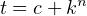

⇐ ↙ ↓ ⇑ ⇒ Contents Index3.5 Configuration Macros
The section contains a list of the individual configuration macros for HTCondor. Before attempting to set up
HTCondor configuration, you should probably read the introduction to configuration section ( 3.3) and possibly the
configuration template section ( 3.4).
The settings that control the policy under which HTCondor will start, suspend, resume, vacate
or kill jobs are described in section 3.7 on Policy Configuration for the condor_startd, not in this
section.
3.5.1 HTCondor-wide Configuration File Entries
This section describes settings which affect all parts of the HTCondor system. Other system-wide settings can be
found in section 3.5.4 on “Network-Related Configuration File Entries”, and section 3.5.5 on “Shared File System
Configuration File Entries”.
-
CONDOR_HOST
- This macro is used to define the $(COLLECTOR_HOST) macro. Normally the condor_collector
and condor_negotiator would run on the same machine. If for some reason they were not run on the
same machine, $(CONDOR_HOST) would not be needed. Some of the host-based security macros use
$(CONDOR_HOST) by default. See section 3.8.9, on Setting up IP/host-based security in HTCondor for
details.
-
COLLECTOR_HOST
- The host name of the machine where the condor_collector is running for your pool.
Normally, it is defined relative to the $(CONDOR_HOST) macro. There is no default value for this macro;
COLLECTOR_HOST must be defined for the pool to work properly.
In addition to defining the host name, this setting can optionally be used to specify the network
port of the condor_collector. The port is separated from the host name by a colon (’:’). For
example,
COLLECTOR_HOST = $(CONDOR_HOST):1234
If no port is specified, the default port of 9618 is used. Using the default port is recommended for most sites.
It is only changed if there is a conflict with another service listening on the same network port. For more
information about specifying a non-standard port for the condor_collector daemon, see section 3.9.1 on
page 1082.
Multiple condor_collector daemons may be running simultaneously, if COLLECTOR_HOST is defined with a
comma separated list of hosts. Multiple condor_collector daemons may run for the implementation of high
availability; see section 3.13 for details. With more than one running, updates are sent to all.
With more than one running, queries are sent to one of the condor_collector daemons, chosen at
random.
-
COLLECTOR_PORT
- The default port used when contacting the condor_collector and the default port the
condor_collector listens on if no port is specified. This variable is referenced if no port is given and there is no
other means to find the condor_collector port. The default value is 9618.
-
NEGOTIATOR_HOST
- This configuration variable is no longer used. It previously defined the host name of the machine
where the condor_negotiator is running. At present, the port where the condor_negotiator is listening is
dynamically allocated.
-
CONDOR_VIEW_HOST
- A list of HTCondorView servers, separated by commas and/or spaces. Each HTCondorView
server is denoted by the host name of the machine it is running on, optionally appended by a colon and the
port number. This service is optional, and requires additional configuration to enable it. There is no default
value for CONDOR_VIEW_HOST. If CONDOR_VIEW_HOST is not defined, no HTCondorView server is used. See
section 3.14.7 on page 1175 for more details.
-
SCHEDD_HOST
- The host name of the machine where the condor_schedd is running for your pool. This is the host
that queues submitted jobs. If the host specifies SCHEDD_NAME or MASTER_NAME , that name must be included
in the form name@hostname. In most condor installations, there is a condor_schedd running on each
host from which jobs are submitted. The default value of SCHEDD_HOST is the current host with
the optional name included. For most pools, this macro is not defined, nor does it need to be
defined..
-
RELEASE_DIR
- The full path to the HTCondor release directory, which holds the bin, etc, lib, and sbin
directories. Other macros are defined relative to this one. There is no default value for RELEASE_DIR
.
-
BIN
- This directory points to the HTCondor directory where user-level programs are installed. The default value is
$(RELEASE_DIR)/bin.
-
LIB
- This directory points to the HTCondor directory where libraries used to link jobs for HTCondor’s standard
universe are stored. The condor_compile program uses this macro to find these libraries, so it must be defined
for condor_compile to function. The default value is $(RELEASE_DIR)/lib.
-
LIBEXEC
- This directory points to the HTCondor directory where support commands that HTCondor needs will be
placed. Do not add this directory to a user or system-wide path.
-
INCLUDE
- This directory points to the HTCondor directory where header files reside. The default value is
$(RELEASE_DIR)/include. It can make inclusion of necessary header files for compilation of programs (such as
those programs that use libcondorapi.a) easier through the use of condor_config_val.
-
SBIN
- This directory points to the HTCondor directory where HTCondor’s system binaries (such as the binaries for
the HTCondor daemons) and administrative tools are installed. Whatever directory $(SBIN) points to ought
to be in the PATH of users acting as HTCondor administrators. The default value is $(BIN) in Windows and
$(RELEASE_DIR)/sbin on all other platforms.
-
LOCAL_DIR
- The location of the local HTCondor directory on each machine in your pool. The default
value is $(RELEASE_DIR) on Windows and $(RELEASE_DIR)/hosts/$(HOSTNAME) on all other
platforms.
Another possibility is to use the condor user’s home directory, which may be specified with $(TILDE). For
example:
LOCAL_DIR = $(tilde)
-
LOG
- Used to specify the directory where each HTCondor daemon writes its log files. The names of the log files
themselves are defined with other macros, which use the $(LOG) macro by default. The log directory also acts
as the current working directory of the HTCondor daemons as the run, so if one of them should produce a core
file for any reason, it would be placed in the directory defined by this macro. The default value is
$(LOCAL_DIR)/log.
Do not stage other files in this directory; any files not created by HTCondor in this directory are subject to
removal.
-
RUN
- A path and directory name to be used by the HTCondor init script to specify the directory
where the condor_master should write its process ID (PID) file. The default if not defined is
$(LOG).
-
SPOOL
- The spool directory is where certain files used by the condor_schedd are stored, such as the job queue file
and the initial executables of any jobs that have been submitted. In addition, for systems not using a
checkpoint server, all the checkpoint files from jobs that have been submitted from a given machine will be
store in that machine’s spool directory. Therefore, you will want to ensure that the spool directory is located
on a partition with enough disk space. If a given machine is only set up to execute HTCondor
jobs and not submit them, it would not need a spool directory (or this macro defined). The
default value is $(LOCAL_DIR)/spool. The condor_schedd will not function if SPOOL is not
defined.
Do not stage other files in this directory; any files not created by HTCondor in this directory are subject to
removal.
-
EXECUTE
- This directory acts as a place to create the scratch directory of any HTCondor job that is
executing on the local machine. The scratch directory is the destination of any input files that were
specified for transfer. It also serves as the job’s working directory if the job is using file transfer
mode and no other working directory was specified. If a given machine is set up to only submit
jobs and not execute them, it would not need an execute directory, and this macro need not be
defined. The default value is $(LOCAL_DIR)/execute. The condor_startd will not function if
EXECUTE is undefined. To customize the execute directory independently for each batch slot, use
SLOT<N>_EXECUTE.
Do not stage other files in this directory; any files not created by HTCondor in this directory are subject to
removal.
-
TMP_DIR
- A directory path to a directory where temporary files are placed by various portions of the
HTCondor system. The daemons and tools that use this directory are the condor_gridmanager,
condor_config_val when using the -rset option, systems that use lock files when configuration variable
CREATE_LOCKS_ON_LOCAL_DISK is True, the Web Service API, and the condor_credd daemon. There is no
default value.
If both TMP_DIR and TEMP_DIR are defined, the value set for TMP_DIR is used and TEMP_DIR is
ignored.
-
TEMP_DIR
- A directory path to a directory where temporary files are placed by various portions of the
HTCondor system. The daemons and tools that use this directory are the condor_gridmanager,
condor_config_val when using the -rset option, systems that use lock files when configuration variable
CREATE_LOCKS_ON_LOCAL_DISK is True, the Web Service API, and the condor_credd daemon. There is no
default value.
If both TMP_DIR and TEMP_DIR are defined, the value set for TMP_DIR is used and TEMP_DIR is
ignored.
-
SLOT<N>_EXECUTE
- Specifies an execute directory for use by a specific batch slot. <N> represents the number of the
batch slot, such as 1, 2, 3, etc. This execute directory serves the same purpose as EXECUTE , but it allows the
configuration of the directory independently for each batch slot. Having slots each using a different partition
would be useful, for example, in preventing one job from filling up the same disk that other jobs are trying to
write to. If this parameter is undefined for a given batch slot, it will use EXECUTE as the default.
Note that each slot will advertise TotalDisk and Disk for the partition containing its execute
directory.
-
LOCAL_CONFIG_FILE
- Identifies the location of the local, machine-specific configuration file for each machine in the
pool. The two most common choices would be putting this file in the $(LOCAL_DIR), or putting all
local configuration files for the pool in a shared directory, each one named by host name. For
example,
LOCAL_CONFIG_FILE = $(LOCAL_DIR)/condor_config.local
or,
LOCAL_CONFIG_FILE = $(release_dir)/etc/$(hostname).local
or, not using the release directory
LOCAL_CONFIG_FILE = /full/path/to/configs/$(hostname).local
The value of LOCAL_CONFIG_FILE is treated as a list of files, not a single file. The items in the list are
delimited by either commas or space characters. This allows the specification of multiple files as the local
configuration file, each one processed in the order given (with parameters set in later files overriding values
from previous files). This allows the use of one global configuration file for multiple platforms in the pool,
defines a platform-specific configuration file for each platform, and uses a local configuration file for each
machine. If the list of files is changed in one of the later read files, the new list replaces the old list, but any
files that have already been processed remain processed, and are removed from the new list if they are
present to prevent cycles. See section 3.3.6 on page 546 for directions on using a program to
generate the configuration macros that would otherwise reside in one or more files as described
here. If LOCAL_CONFIG_FILE is not defined, no local configuration files are processed. For more
information on this, see section 3.14.4 about Configuring HTCondor for Multiple Platforms on
page 1163.
If all files in a directory are local configuration files to be processed, then consider using LOCAL_CONFIG_DIR,
defined at section 3.5.1.
-
REQUIRE_LOCAL_CONFIG_FILE
- A boolean value that defaults to True. When True, HTCondor exits with an error, if
any file listed in LOCAL_CONFIG_FILE cannot be read. A value of False allows local configuration files to be
missing. This is most useful for sites that have both large numbers of machines in the pool and a local
configuration file that uses the $(HOSTNAME) macro in its definition. Instead of having an empty file for every
host in the pool, files can simply be omitted.
-
LOCAL_CONFIG_DIR
- A directory may be used as a container for local configuration files. The files found in the
directory are sorted into lexicographical order by file name, and then each file is treated as though
it was listed in LOCAL_CONFIG_FILE. LOCAL_CONFIG_DIR is processed before any files listed in
LOCAL_CONFIG_FILE, and is checked again after processing the LOCAL_CONFIG_FILE list. It is a list of
directories, and each directory is processed in the order it appears in the list. The process is not
recursive, so any directories found inside the directory being processed are ignored. See also
LOCAL_CONFIG_DIR_EXCLUDE_REGEXP.
-
USER_CONFIG_FILE
- The file name of a configuration file to be parsed after other local configuration files and before
environment variables set configuration. Relevant only if HTCondor daemons are not run as root on Unix
platforms or Local System on Windows platforms. The default is $(HOME)/.condor/user_config on Unix
platforms. The default is %USERPROFILE\.condor\user_config on Windows platforms. If a fully qualified
path is given, that is used. If a fully qualified path is not given, then the Unix path $(HOME)/.condor/
prefixes the file name given on Unix platforms, or the Windows path %USERPROFILE\.condor\ prefixes the file
name given on Windows platforms.
The ability of a user to use this user-specified configuration file can be disabled by setting this variable to the
empty string:
USER_CONFIG_FILE =
-
LOCAL_CONFIG_DIR_EXCLUDE_REGEXP
- A regular expression that specifies file names to be ignored when looking for
configuration files within the directories specified via LOCAL_CONFIG_DIR. The default expression ignores files
with names beginning with a ‘.’ or a ‘#’, as well as files with names ending in ‘˜’. This avoids
accidents that can be caused by treating temporary files created by text editors as configuration
files.
-
CONDOR_IDS
- The User ID (UID) and Group ID (GID) pair that the HTCondor daemons should run as, if the
daemons are spawned as root. This value can also be specified in the CONDOR_IDS environment variable. If the
HTCondor daemons are not started as root, then neither this CONDOR_IDS configuration macro nor the
CONDOR_IDS environment variable are used. The value is given by two integers, separated by a period. For
example, CONDOR_IDS = 1234.1234. If this pair is not specified in either the configuration file or in the
environment, and the HTCondor daemons are spawned as root, then HTCondor will search for a condor user
on the system, and run as that user’s UID and GID. See section 3.8.13 on UIDs in HTCondor for more
details.
-
CONDOR_ADMIN
- The email address that HTCondor will send mail to if something goes wrong in the pool. For
example, if a daemon crashes, the condor_master can send an obituary to this address with the last few lines
of that daemon’s log file and a brief message that describes what signal or exit status that daemon exited with.
The default value is root@$(FULL_HOSTNAME).
-
<SUBSYS>_ADMIN_EMAIL
- The email address that HTCondor will send mail to if something goes wrong with the
named <SUBSYS>. Identical to CONDOR_ADMIN, but done on a per subsystem basis. There is no default
value.
-
CONDOR_SUPPORT_EMAIL
- The email address to be included at the bottom of all email HTCondor sends out under
the label “Email address of the local HTCondor administrator:”. This is the address where HTCondor
users at your site should send their questions about HTCondor and get technical support. If
this setting is not defined, HTCondor will use the address specified in CONDOR_ADMIN (described
above).
-
EMAIL_SIGNATURE
- Every e-mail sent by HTCondor includes a short signature line appended to the body. By
default, this signature includes the URL to the global HTCondor project website. When set, this variable
defines an alternative signature line to be used instead of the default. Note that the value can only be one line
in length. This variable could be used to direct users to look at local web site with information specific to the
installation of HTCondor.
-
MAIL
- The full path to a mail sending program that uses -s to specify a subject for the message. On all platforms,
the default shipped with HTCondor should work. Only if you installed things in a non-standard location on
your system would you need to change this setting. The default value is $(BIN)/condor_mail.exe on
Windows and /usr/bin/mail on all other platforms. The condor_schedd will not function unless MAIL is
defined. For security reasons, non-Windows platforms should not use this setting and should use SENDMAIL
instead.
-
SENDMAIL
- The full path to the sendmail executable. If defined, which it is by default on non-Windows platforms,
sendmail is used instead of the mail program defined by MAIL.
-
MAIL_FROM
- The e-mail address that notification e-mails appear to come from. Contents is that of the From header.
There is no default value; if undefined, the From header may be nonsensical.
-
SMTP_SERVER
- For Windows platforms only, the host name of the server through which to route notification e-mail.
There is no default value; if undefined and the debug level is at FULLDEBUG, an error message will be
generated.
-
RESERVED_SWAP
- The amount of swap space in MiB to reserve for this machine. HTCondor will not start up more
condor_shadow processes if the amount of free swap space on this machine falls below this level. The default
value is 0, which disables this check. It is anticipated that this configuration variable will no longer be used
in the near future. If RESERVED_SWAP is not set to 0, the value of SHADOW_SIZE_ESTIMATE is
used.
-
RESERVED_DISK
- Determines how much disk space you want to reserve for your own machine. When HTCondor is
reporting the amount of free disk space in a given partition on your machine, it will always subtract this
amount. An example is the condor_startd, which advertises the amount of free space in the $(EXECUTE)
directory. The default value of RESERVED_DISK is zero.
-
LOCK
- HTCondor needs to create lock files to synchronize access to various log files. Because of problems with
network file systems and file locking over the years, we highly recommend that you put these lock files on a
local partition on each machine. If you do not have your $(LOCAL_DIR) on a local partition, be sure to change
this entry.
Whatever user or group HTCondor is running as needs to have write access to this directory.
If you are not running as root, this is whatever user you started up the condor_master as. If
you are running as root, and there is a condor account, it is most likely condor. Otherwise,
it is whatever you set in the CONDOR_IDS environment variable, or whatever you define in the
CONDOR_IDS setting in the HTCondor config files. See section 3.8.13 on UIDs in HTCondor for
details.
If no value for LOCK is provided, the value of LOG is used.
-
HISTORY
- Defines the location of the HTCondor history file, which stores information about all HTCondor jobs that
have completed on a given machine. This macro is used by both the condor_schedd which appends the
information and condor_history, the user-level program used to view the history file. This configuration macro
is given the default value of $(SPOOL)/history in the default configuration. If not defined, no history file is
kept.
-
ENABLE_HISTORY_ROTATION
- If this is defined to be true, then the history file will be rotated. If it is false, then it
will not be rotated, and it will grow indefinitely, to the limits allowed by the operating system. If this is not
defined, it is assumed to be true. The rotated files will be stored in the same directory as the history
file.
-
MAX_HISTORY_LOG
- Defines the maximum size for the history file, in bytes. It defaults to 20MB. This parameter is
only used if history file rotation is enabled.
-
MAX_HISTORY_ROTATIONS
- When history file rotation is turned on, this controls how many backup files there are. It
default to 2, which means that there may be up to three history files (two backups, plus the history file that is
being currently written to). When the history file is rotated, and this rotation would cause the number of
backups to be too large, the oldest file is removed.
-
HISTORY_HELPER_MAX_CONCURRENCY
- Specifies the maximum number of concurrent remote condor_history queries
allowed at a time; defaults to 50. When this maximum is exceeded, further queries will be queued in a
non-blocking manner. Setting this option to 0 disables remote history access. A remote history access is
defined as an invocation of condor_history that specifies a -name option to query a condor_schedd running
on a remote machine.
-
HISTORY_HELPER_MAX_HISTORY
- Specifies the maximum number of ClassAds to parse on behalf of remote history
clients. The default is 10,000. This allows the system administrator to indirectly manage the
maximum amount of CPU time spent on each client. Setting this option to 0 disables remote history
access.
-
MAX_JOB_QUEUE_LOG_ROTATIONS
- The condor_schedd daemon periodically rotates the job queue database file, in
order to save disk space. This option controls how many rotated files are saved. It defaults to 1, which
means there may be up to two history files (the previous one, which was rotated out of use, and
the current one that is being written to). When the job queue file is rotated, and this rotation
would cause the number of backups to be larger the the maximum specified, the oldest file is
removed.
-
CLASSAD_LOG_STRICT_PARSING
- A boolean value that defaults to True. When True, ClassAd log files will be read
using a strict syntax checking for ClassAd expressions. ClassAd log files include the job queue log and the
accountant log. When False, ClassAd log files are read without strict expression syntax checking, which allows
some legacy ClassAd log data to be read in a backward compatible manner. This configuration variable may
no longer be supported in future releases, eventually requiring all ClassAd log files to pass strict ClassAd
syntax checking.
-
DEFAULT_DOMAIN_NAME
- The value to be appended to a machine’s host name, representing a domain name, which
HTCondor then uses to form a fully qualified host name. This is required if there is no fully qualified host
name in file /etc/hosts or in NIS. Set the value in the global configuration file, as HTCondor may depend on
knowing this value in order to locate the local configuration file(s). The default value as given in the sample
configuration file of the HTCondor download is bogus, and must be changed. If this variable is removed from
the global configuration file, or if the definition is empty, then HTCondor attempts to discover the
value.
-
NO_DNS
- A boolean value that defaults to False. When True, HTCondor constructs host names using the host’s IP
address together with the value defined for DEFAULT_DOMAIN_NAME.
-
CM_IP_ADDR
- If neither COLLECTOR_HOST nor COLLECTOR_IP_ADDR macros are defined, then this macro will be used
to determine the IP address of the central manager (collector daemon). This macro is defined by an IP
address.
-
EMAIL_DOMAIN
- By default, if a user does not specify notify_user in the submit description file, any email
HTCondor sends about that job will go to "username@UID_DOMAIN". If your machines all share a common
UID domain (so that you would set UID_DOMAIN to be the same across all machines in your
pool), but email to user@UID_DOMAIN is not the right place for HTCondor to send email for
your site, you can define the default domain to use for email. A common example would be
to set EMAIL_DOMAIN to the fully qualified host name of each machine in your pool, so users
submitting jobs from a specific machine would get email sent to user@machine.your.domain, instead
of user@your.domain. You would do this by setting EMAIL_DOMAIN to $(FULL_HOSTNAME). In
general, you should leave this setting commented out unless two things are true: 1) UID_DOMAIN
is set to your domain, not $(FULL_HOSTNAME), and 2) email to user@UID_DOMAIN will not
work.
-
CREATE_CORE_FILES
- Defines whether or not HTCondor daemons are to create a core file in the LOG directory if
something really bad happens. It is used to set the resource limit for the size of a core file. If not defined, it
leaves in place whatever limit was in effect when the HTCondor daemons (normally the condor_master) were
started. This allows HTCondor to inherit the default system core file generation behavior at start up. For Unix
operating systems, this behavior can be inherited from the parent shell, or specified in a shell
script that starts HTCondor. If this parameter is set and True, the limit is increased to the
maximum. If it is set to False, the limit is set at 0 (which means that no core files are created).
Core files greatly help the HTCondor developers debug any problems you might be having. By
using the parameter, you do not have to worry about tracking down where in your boot scripts
you need to set the core limit before starting HTCondor. You set the parameter to whatever
behavior you want HTCondor to enforce. This parameter defaults to undefined to allow the initial
operating system default value to take precedence, and is commented out in the default configuration
file.
-
CKPT_PROBE
- Defines the path and executable name of the helper process HTCondor will use to determine
information for the CheckpointPlatform attribute in the machine’s ClassAd. The default value is
$(LIBEXEC)/condor_ckpt_probe.
-
ABORT_ON_EXCEPTION
- When HTCondor programs detect a fatal internal exception, they normally log an error
message and exit. If you have turned on CREATE_CORE_FILES , in some cases you may also want to turn on
ABORT_ON_EXCEPTION so that core files are generated when an exception occurs. Set the following to True if
that is what you want.
-
Q_QUERY_TIMEOUT
- Defines the timeout (in seconds) that condor_q uses when trying to connect to the
condor_schedd. Defaults to 20 seconds.
-
DEAD_COLLECTOR_MAX_AVOIDANCE_TIME
- Defines the interval of time (in seconds) between checks for a failed
primary condor_collector daemon. If connections to the dead primary condor_collector take very little time to
fail, new attempts to query the primary condor_collector may be more frequent than the specified maximum
avoidance time. The default value equals one hour. This variable has relevance to flocked jobs, as it defines the
maximum time they may be reporting to the primary condor_collector without the condor_negotiator
noticing.
-
PASSWD_CACHE_REFRESH
- HTCondor can cause NIS servers to become overwhelmed by queries for uid and group
information in large pools. In order to avoid this problem, HTCondor caches UID and group information
internally. This integer value allows pool administrators to specify (in seconds) how long HTCondor should
wait until refreshes a cache entry. The default is set to 72000 seconds, or 20 hours, plus a random number of
seconds between 0 and 60 to avoid having lots of processes refreshing at the same time. This means that if a
pool administrator updates the user or group database (for example, /etc/passwd or /etc/group), it can
take up to 6 minutes before HTCondor will have the updated information. This caching feature
can be disabled by setting the refresh interval to 0. In addition, the cache can also be flushed
explicitly by running the command condor_reconfig. This configuration variable has no effect on
Windows.
-
SYSAPI_GET_LOADAVG
- If set to False, then HTCondor will not attempt to compute the load average
on the system, and instead will always report the system load average to be 0.0. Defaults to
True.
-
NETWORK_MAX_PENDING_CONNECTS
- This specifies a limit to the maximum number of simultaneous network
connection attempts. This is primarily relevant to condor_schedd, which may try to connect to large numbers
of startds when claiming them. The negotiator may also connect to large numbers of startds
when initiating security sessions used for sending MATCH messages. On Unix, the default for
this parameter is eighty percent of the process file descriptor limit. On windows, the default is
1600.
-
WANT_UDP_COMMAND_SOCKET
- This setting, added in version 6.9.5, controls if HTCondor daemons should create a
UDP command socket in addition to the TCP command socket (which is required). The default is
True, and modifying it requires restarting all HTCondor daemons, not just a condor_reconfig or
SIGHUP.
Normally, updates sent to the condor_collector use UDP, in addition to certain keep alive messages and other
non-essential communication. However, in certain situations, it might be desirable to disable the UDP
command port.
Unfortunately, due to a limitation in how these command sockets are created, it is not possible to define this
setting on a per-daemon basis, for example, by trying to set STARTD.WANT_UDP_COMMAND_SOCKET. At least for
now, this setting must be defined machine wide to function correctly.
If this setting is set to true on a machine running a condor_collector, the pool should be configured to use
TCP updates to that collector (see section 3.9.5 on page 1105 for more information).
-
ALLOW_SCRIPTS_TO_RUN_AS_EXECUTABLES
- A boolean value that, when True, permits scripts on Windows platforms
to be used in place of the executable in a job submit description file, in place of a condor_dagman pre or
post script, or in producing the configuration, for example. Allows a script to be used in any circumstance
previously limited to a Windows executable or a batch file. The default value is True. See section 8.2.7 on
page 1634 for further description.
-
OPEN_VERB_FOR_<EXT>_FILES
- A string that defines a Windows verb for use in a root hive registry look up. <EXT>
defines the file name extension, which represents a scripting language, also needed for the look up. See
section 8.2.7 on page 1634 for a more complete description.
-
ENABLE_CLASSAD_CACHING
- A boolean value that controls the caching of ClassAds. Caching saves memory when an
HTCondor process contains many ClassAds with the same expressions. The default value is True for all
daemons other than the condor_shadow, condor_starter, and condor_master. A value of True enables
caching.
-
STRICT_CLASSAD_EVALUATION
- A boolean value that controls how ClassAd expressions are evaluated. If set to
True, then New ClassAd evaluation semantics are used. This means that attribute references
without a MY. or TARGET. prefix are only looked up in the local ClassAd. If set to the default
value of False, Old ClassAd evaluation semantics are used. See section 4.1.1 on page 1280 for
details.
-
CLASSAD_USER_LIBS
- A comma separated list of paths to shared libraries that contain additional ClassAd functions
to be used during ClassAd evaluation.
-
CLASSAD_USER_PYTHON_MODULES
- A comma separated list of python modules to load, which are to be used during
ClassAd evaluation. If module foo is in this list, then function bar can be invoked in ClassAds via the
expression python_invoke("foo", "bar", ...). Any further arguments are converted from
ClassAd expressions to python; the function return value is converted back to ClassAds. The
python modules are loaded at configuration time, so any module-level statements are executed.
Module writers can invoke classad.register at the module-level in order to use python functions
directly.
Functions executed by ClassAds should be non-blocking and have no side-effects; otherwise, unpredictable
HTCondor behavior may occur.
-
CLASSAD_USER_PYTHON_LIB
- Specifies the path to the python libraries, which is needed when
CLASSAD_USER_PYTHON_MODULES is set. Defaults to $(LIBEXEC)/libclassad_python_user.so, and would
rarely be changed from the default value.
-
CONDOR_FSYNC
- A boolean value that controls whether HTCondor calls fsync() when writing the user job and
transaction logs. Setting this value to False will disable calls to fsync(), which can help performance for
condor_schedd log writes at the cost of some durability of the log contents, should there be a power or
hardware failure. The default value is True.
-
STATISTICS_TO_PUBLISH
- A comma and/or space separated list that identifies which statistics collections are to
place attributes in ClassAds. Additional information specifies a level of verbosity and other identification of
which attributes to include and which to omit from ClassAds. The special value NONE disables all publishing,
so no statistics will be published; no option is included. For other list items that define this variable, the
syntax defines the two aspects by separating them with a colon. The first aspect defines a collection, which
may specify which daemon is to publish the statistics, and the second aspect qualifies and refines the details of
which attributes to publish for the collection, including a verbosity level. If the first aspect is ALL, the option is
applied to all collections. If the first aspect is DEFAULT, the option is applied to all collections,
with the intent that further list items will specify publishing that is to be different than the
default. This first aspect may be SCHEDD or SCHEDULER to publish Statistics attributes in the
ClassAd of the condor_schedd. It may be TRANSFER to publish file transfer statistics. It may be
STARTER to publish Statistics attributes in the ClassAd of the condor_starter. Or, it may be DC
or DAEMONCORE to publish DaemonCore statistics. One or more options are specified after the
colon.
|
|
Option | Description |
|
|
|
|
0 | turns off the publishing of any statistics attributes |
|
|
1 | the default level, where some statistics attributes are published and others are
omitted |
|
|
2 | the verbose level, where all statistics attributes are published |
|
|
3 | the super verbose level, which is currently unused, but intended to be all
statistics attributes published at the verbose level plus extra information |
|
|
R | include attributes from the most recent time interval; the default |
|
|
!R | omit attributes from the most recent time interval |
|
|
D | include attributes for debugging |
|
|
!D | omit attributes for debugging; the default |
|
|
Z | include attributes even if the attribute’s value is 0 |
|
|
!Z | omit attributes when the attribute’s value is 0 |
|
|
L | include attributes that represent the lifetime value; the default |
|
|
!L | omit attributes that represent the lifetime value |
|
|
| |
If this variable is not defined, then the default for each collection is used. If this variable is defined, and the
definition does not specify each possible collection, then no statistics are published for those collections not
defined. If an option specifies conflicting possibilities, such as R!R, then the last one takes precedence and is
applied.
As an example, to cause a verbose setting of the publication of Statistics attributes only for the
condor_schedd, and do not publish any other Statistics attributes:
STATISTICS_TO_PUBLISH = SCHEDD:2
As a second example, to cause all collections other than those for DAEMONCORE to publish at a verbosity
setting of 1, and omit lifetime values, where the DAEMONCORE includes all statistics at the verbose
level:
STATISTICS_TO_PUBLISH = DEFAULT:1!L, DC:2RDZL
-
STATISTICS_TO_PUBLISH_LIST
- A comma and/or space separated list of statistics attribute names that should be
published in updates to the condor_collector daemon, even though the verbosity specified in
STATISTICS_TO_PUBLISH would not normally send them. This setting has the effect of redefining the verbosity
level of the statistics attributes that it mentions, so that they will always match the current statistics
publication level as specified in STATISTICS_TO_PUBLISH.
-
STATISTICS_WINDOW_SECONDS
- An integer value that controls the time window size, in seconds, for collecting
windowed daemon statistics. These statistics are, by convention, those attributes with names that are of the
form Recent<attrname>. Any data contributing to a windowed statistic that is older than this number of
seconds is dropped from the statistic. For example, if STATISTICS_WINDOW_SECONDS = 300, then any jobs
submitted more than 300 seconds ago are not counted in the windowed statistic RecentJobsSubmitted.
Defaults to 1200 seconds, which is 20 minutes.
The window is broken into smaller time pieces called quantum. The window advances one quantum at a
time.
-
STATISTICS_WINDOW_SECONDS_<collection>
- The same as STATISTICS_WINDOW_SECONDS, but used to override the
global setting for a particular statistic collection. Collection names currently implemented are DC or
DAEMONCORE and SCHEDD or SCHEDULER.
-
STATISTICS_WINDOW_QUANTUM
- For experts only, an integer value that controls the time quantization that form a
time window, in seconds, for the data structures that maintain windowed statistics. Defaults to 240 seconds,
which is 6 minutes. This default is purposely set to be slightly smaller than the update rate to the
condor_collector. Setting a smaller value than the default increases the memory requirement for the statistics.
Graphing of statistics at the level of the quantum expects to see counts that appear like a saw
tooth.
-
STATISTICS_WINDOW_QUANTUM_<collection>
- The same as STATISTICS_WINDOW_QUANTUM, but used to override the
global setting for a particular statistic collection. Collection names currently implemented are DC or
DAEMONCORE and SCHEDD or SCHEDULER.
-
TCP_KEEPALIVE_INTERVAL
- The number of seconds specifying a keep alive interval to use for any HTCondor TCP
connection. The default keep alive interval is 360 (6 minutes); this value is chosen to minimize the likelihood
that keep alive packets are sent, while still detecting dead TCP connections before job leases expire. A smaller
value will consume more operating system and network resources, while a larger value may cause jobs to fail
unnecessarily due to network disconnects. Most users will not need to tune this configuration variable. A value
of 0 will use the operating system default, and a value of -1 will disable HTCondor’s use of a TCP keep
alive.
-
ENABLE_IPV4
- A boolean with the additional special value of auto. If true, HTCondor will use IPv4 if
available, and fail otherwise. If false, HTCondor will not use IPv4. If auto, which is the default,
HTCondor will use IPv4 if it can find an interface with an IPv4 address, and that address is
(a) public or private, or (b) no interface’s IPv6 address is public or private. If HTCondor finds
more than one address of each protocol, only the most public address is considered for that
protocol.
-
ENABLE_IPV6
- A boolean with the additional special value of auto. If true, HTCondor will use IPv6 if
available, and fail otherwise. If false, HTCondor will not use IPv6. If auto, which is the default,
HTCondor will use IPv6 if it can find an interface with an IPv6 address, and that address is
(a) public or private, or (b) no interface’s IPv4 address is public or private. If HTCondor finds
more than one address of each protocol, only the most public address is considered for that
protocol.
-
PREFER_IPV4
- A boolean which will cause HTCondor to prefer IPv4 when it is able to choose. HTCondor will
otherwise prefer IPv6. The default is True.
-
ADVERTISE_IPV4_FIRST
- A string (treated as a boolean). If ADVERTISE_IPV4_FIRST evaluates to True, HTCondor
will advertise its IPv4 addresses before its IPv6 addresses; otherwise the IPv6 addresses will come first.
Defaults to $(PREFER_IPV4).
-
IGNORE_TARGET_PROTOCOL_PREFERENCE
- A string (treated as a boolean). If IGNORE_TARGET_PROTOCOL_PREFERENCE
evaluates to True, the target’s listed protocol preferences will be ignored; othwerwise they will not. Defaults to
$(PREFER_IPV4).
-
IGNORE_DNS_PROTOCOL_PREFERENCE
- A string (treated as a boolean). IGNORE_DNS_PROTOCOL_PREFERENCE evaluates
to True, the protocol order returned by the DNS will be ignored; otherwise it will not. Defaults to
$(PREFER_IPV4).
-
PREFER_OUTBOUND_IPV4
- A string (treated as a boolean). PREFER_OUTBOUND_IPV4 evaluates to True, HTCondor
will prefer IPv4; otherwise it will not. Defaults to $(PREFER_IPV4).
-
<SUBSYS>_CLASSAD_USER_MAP_NAMES
- A string defining a list of names for username-to-accounting group mappings
for the specified daemon. Names must be separated by spaces or commas.
-
CLASSAD_USER_MAPFILE_<name>
- A string giving the name of a file to parse to initialize the map for the given
username. Note that this macro is only used if <SUBSYS>_CLASSAD_USER_MAP_NAMES is defined for the relevant
daemon.
-
CLASSAD_USER_MAPDATA_<name>
- A string containing data to be used to initialize the map for the
given username. Note that this macro is only used if <SUBSYS>_CLASSAD_USER_MAP_NAMES is
defined for the relevant daemon, and CLASSAD_USER_MAPFILE_<name> is not defined for the given
name.
The format for the map file and map data is the same as the format for the security unified map file (see
3.8.4 for details).
The first field must be * (or a subset name - see below), the second field is a regex that we will match against
the input, and the third field will be the output if the regex matches, the 3 and 4 argument form of the
ClassAd userMap() function (see 4.1.2) expect that the third field will be a comma separated list of values.
for example:
# file: groups.mapdata
* John chemistry,physics,glassblowing
* Juan physics,chemistry
* Bob security
* Alice security,math
Optional submaps: If the first field of the mapfile contains something other than *, then a submap is
defined. To select a submap for lookup, the first argument for userMap() should be "mapname.submap". For
example:
# mapdata 'groups' with submaps
* Bob security
* Alice security,math
alt Alice math,hacking
-
IGNORE_LEAF_OOM
- A boolean value that, when True, tells HTCondor not to kill and hold a job that is within its
memory allocation, even if other processes within the same cgroup have exceeded theirs. The default value is
True. (Note that this represents a change in behavior compared to versions of HTCondor older than 8.6.0; this
configuration macro first appeared in version 8.4.11. To restore the previous behavior, set this value to
False.)
3.5.2 Daemon Logging Configuration File Entries
These entries control how and where the HTCondor daemons write to log files. Many of the entries in
this section represents multiple macros. There is one for each subsystem (listed in section 3.3.12).
The macro name for each substitutes <SUBSYS> with the name of the subsystem corresponding to the
daemon.
-
<SUBSYS>_LOG
- Defines the path and file name of the log file for a given subsystem. For example,
$(STARTD_LOG) gives the location of the log file for the condor_startd daemon. The default value for
most daemons is the daemon’s name in camel case, concatenated with Log. For example, the default log
defined for the condor_master daemon is $(LOG)/MasterLog. The default value for other subsystems
is $(LOG)/<SUBSYS>LOG. The special value SYSLOG causes the daemon to log via the syslog facility on
Linux. If the log file cannot be written to, then the daemon will attempt to log this into a new file of
the name $(LOG)/dprintf_failure.<SUBSYS> before the daemon exits.
-
LOG_TO_SYSLOG
- A boolean value that is False by default. When True, all daemon logs are routed to the
syslog facility on Linux.
-
MAX_<SUBSYS>_LOG
- Controls the maximum size in bytes or amount of time that a log will be allowed to
grow. For any log not specified, the default is $(MAX_DEFAULT_LOG), which currently defaults to 10
MiB in size. Values are specified with the same syntax as MAX_DEFAULT_LOG .
Note that a log file for the condor_procd does not use this configuration variable definition. Its
implementation is separate. See section 3.5.16 for the definition of MAX_PROCD_LOG.
-
MAX_DEFAULT_LOG
- Controls the maximum size in bytes or amount of time that any log not explicitly specified
using MAX_<SUBSYS>_LOG will be allowed to grow. When it is time to rotate a log file, it will be
saved to a file with an ISO timestamp suffix. The oldest rotated file receives the ending .old. The
.old files are overwritten each time the maximum number of rotated files (determined by the value of
MAX_NUM_<SUBSYS>_LOG) is exceeded. The default value is 10 MiB in size. A value of 0 specifies that
the file may grow without bounds. A single integer value is specified; without a suffix, it defaults to
specifying a size in bytes. A suffix is case insensitive, except for Mb and Min; these both start with the
same letter, and the implementation attaches meaning to the letter case when only the first letter is
present. Therefore, use the following suffixes to qualify the integer:
-
- Bytes for bytes
-
- Kb for KiB, 210 numbers of bytes
-
- Mb for MiB, 220 numbers of bytes
-
- Gb for GiB, 230 numbers of bytes
-
- Tb for TiB, 240 numbers of bytes
-
- Sec for seconds
-
- Min for minutes
-
- Hr for hours
-
- Day for days
-
- Wk for weeks
-
MAX_NUM_<SUBSYS>_LOG
- An integer that controls the maximum number of rotations a log file is allowed
to perform before the oldest one will be rotated away. Thus, at most MAX_NUM_<SUBSYS>_LOG + 1 log
files of the same program coexist at a given time. The default value is 1.
-
TRUNC_<SUBSYS>_LOG_ON_OPEN
- If this macro is defined and set to True, the affected log will be truncated
and started from an empty file with each invocation of the program. Otherwise, new invocations of the
program will append to the previous log file. By default this setting is False for all daemons.
-
<SUBSYS>_LOG_KEEP_OPEN
- A boolean value that controls whether or not the log file is kept open between
writes. When True, the daemon will not open and close the log file between writes. Instead the
daemon will hold the log file open until the log needs to be rotated. When False, the daemon
reverts to the previous behavior of opening and closing the log file between writes. When the
$(<SUBSYS>_LOCK) macro is defined, setting $(<SUBSYS>_LOG_KEEP_OPEN) has no effect, as the daemon
will unconditionally revert back to the open/close between writes behavior. On Windows platforms,
the value defaults to True for all daemons. On Linux platforms, the value defaults to True for all
daemons, except the condor_shadow, due to a global file descriptor limit.
-
<SUBSYS>_LOCK
- This macro specifies the lock file used to synchronize append operations to the log file for
this subsystem. It must be a separate file from the $(<SUBSYS>_LOG) file, since the $(<SUBSYS>_LOG)
file may be rotated and you want to be able to synchronize access across log file rotations. A lock file
is only required for log files which are accessed by more than one process. Currently, this includes only
the SHADOW subsystem. This macro is defined relative to the $(LOCK) macro.
-
JOB_QUEUE_LOG
- A full path and file name, specifying the job queue log. The default value, when not defined
is $(SPOOL)/job_queue.log. This specification can be useful, if there is a solid state drive which is
big enough to hold the frequently written to job_queue.log, but not big enough to hold the whole
contents of the spool directory.
-
FILE_LOCK_VIA_MUTEX
- This macro setting only works on Win32 – it is ignored on Unix. If set to be True,
then log locking is implemented via a kernel mutex instead of via file locking. On Win32, mutex access
is FIFO, while obtaining a file lock is non-deterministic. Thus setting to True fixes problems on Win32
where processes (usually shadows) could starve waiting for a lock on a log file. Defaults to True on
Win32, and is always False on Unix.
-
LOCK_DEBUG_LOG_TO_APPEND
- A boolean value that defaults to False. This variable controls whether a
daemon’s debug lock is used when appending to the log. When False, the debug lock is only used
when rotating the log file. This is more efficient, especially when many processes share the same log file.
When True, the debug lock is used when writing to the log, as well as when rotating the log file. This
setting is ignored under Windows, and the behavior of Windows platforms is as though this variable
were True. Under Unix, the default value of False is appropriate when logging to file systems that
support the POSIX semantics of O_APPEND. On non-POSIX-compliant file systems, it is possible for
the characters in log messages from multiple processes sharing the same log to be interleaved, unless
locking is used. Since HTCondor does not support sharing of debug logs between processes running
on different machines, many non-POSIX-compliant file systems will still avoid interleaved messages
without requiring HTCondor to use a lock. Tests of AFS and NFS have not revealed any problems
when appending to the log without locking.
-
ENABLE_USERLOG_LOCKING
- A boolean value that defaults to False on Unix platforms and True on Windows
platforms. When True, a user’s job event log will be locked before being written to. If False, HTCondor
will not lock the file before writing.
-
ENABLE_USERLOG_FSYNC
- A boolean value that is True by default. When True, writes to the user’s job event
log are sync-ed to disk before releasing the lock.
-
USERLOG_FILE_CACHE_MAX
- The integer number of job event log files that the condor_schedd will keep
open for writing during an interval of time (specified by USERLOG_FILE_CACHE_CLEAR_INTERVAL). The
default value is 0, causing no files to remain open; when 0, each job event log is opened, the event
is written, and then the file is closed. Individual file descriptors are removed from this count when
the condor_schedd detects that no jobs are currently using them. Opening a file is a relatively time
consuming operation on a networked file system (NFS), and therefore, allowing a set of files to remain
open can improve performance. The value of this variable needs to be set low enough such that the
condor_schedd daemon process does not run out of file descriptors by leaving these job event log files
open. The Linux operating system defaults to permitting 1024 assigned file descriptors per process;
the condor_schedd will have one file descriptor per running job for the condor_shadow.
-
USERLOG_FILE_CACHE_CLEAR_INTERVAL
- The integer number of seconds that forms the time interval within
which job event logs will be permitted to remain open when USERLOG_FILE_CACHE_MAX is greater than
zero. The default is 60 seconds. When the interval has passed, all job event logs that the condor_schedd
has permitted to stay open will be closed, and the interval within which job event logs may remain
open between writes of events begins anew. This time interval may be set to a longer duration if
the administrator determines that the condor_schedd will not exceed the maximum number of file
descriptors; a longer interval may yield higher performance due to fewer files being opened and closed.
-
EVENT_LOG_COUNT_EVENTS
- A boolean value that is False by default. When True, upon rotation of the
user’s job event log, a count of the number of job events is taken by scanning the log, such that the
newly created, post-rotation user job event log will have this count in its header. This configuration
variable is relevant when rotation of the user’s job event log is enabled.
-
CREATE_LOCKS_ON_LOCAL_DISK
- A boolean value utilized only for Unix operating systems, that defaults to True.
This variable is only relevant if ENABLE_USERLOG_LOCKING is True. When True, lock files are written to a
directory named condorLocks, thereby using a local drive to avoid known problems with locking on NFS. The
location of the condorLocks directory is determined by
- The value of TEMP_DIR, if defined.
- The value of TMP_DIR, if defined and TEMP_DIR is not defined.
- The default value of /tmp, if neither TEMP_DIR nor TMP_DIR is defined.
-
TOUCH_LOG_INTERVAL
- The time interval in seconds between when daemons touch their log files. The change in last
modification time for the log file is useful when a daemon restarts after failure or shut down. The last
modification date is printed, and it provides an upper bound on the length of time that the daemon was not
running. Defaults to 60 seconds.
-
LOGS_USE_TIMESTAMP
- This macro controls how the current time is formatted at the start of each line in the daemon log
files. When True, the Unix time is printed (number of seconds since 00:00:00 UTC, January 1, 1970). When
False (the default value), the time is printed like so: <Month>/<Day> <Hour>:<Minute>:<Second> in the local
timezone.
-
DEBUG_TIME_FORMAT
- This string defines how to format the current time printed at the start of each line in the
daemon log files. The value is a format string is passed to the C strftime() function, so see that manual page
for platform-specific details. If not defined, the default value is
"%m/%d/%y %H:%M:%S"
-
<SUBSYS>_DEBUG
- All of the HTCondor daemons can produce different levels of output depending on how much
information is desired. The various levels of verbosity for a given daemon are determined by this macro. All
daemons have the default level D_ALWAYS, and log messages for that level will be printed to the daemon’s log,
regardless of this macro’s setting. Settings are a comma- or space-separated list of the following
values:
-
D_ALL
- This flag turns on all debugging output by enabling all of the debug levels at once. There is no
need to list any other debug levels in addition to D_ALL; doing so would be redundant. Be warned:
this will generate about a HUGE amount of output. To obtain a higher level of output than the
default, consider using D_FULLDEBUG before using this option.
-
D_FULLDEBUG
- This level provides verbose output of a general nature into the log files. Frequent log
messages for very specific debugging purposes would be excluded. In those cases, the messages
would be viewed by having that another flag and D_FULLDEBUG both listed in the configuration
file.
-
D_DAEMONCORE
- Provides log file entries specific to DaemonCore, such as timers the daemons have set
and the commands that are registered. If both D_FULLDEBUG and D_DAEMONCORE are set, expect
very verbose output.
-
D_PRIV
- This flag provides log messages about the privilege state switching that the daemons do. See
section 3.8.13 on UIDs in HTCondor for details.
-
D_COMMAND
- With this flag set, any daemon that uses DaemonCore will print out a log message whenever
a command comes in. The name and integer of the command, whether the command was sent
via UDP or TCP, and where the command was sent from are all logged. Because the messages
about the command used by condor_kbdd to communicate with the condor_startd whenever
there is activity on the X server, and the command used for keep-alives are both only printed
with D_FULLDEBUG enabled, it is best if this setting is used for all daemons.
-
D_LOAD
- The condor_startd keeps track of the load average on the machine where it is running. Both the
general system load average, and the load average being generated by HTCondor’s activity there
are determined. With this flag set, the condor_startd will log a message with the current state of
both of these load averages whenever it computes them. This flag only affects the condor_startd.
-
D_KEYBOARD
- With this flag set, the condor_startd will print out a log message with the current values
for remote and local keyboard idle time. This flag affects only the condor_startd.
-
D_JOB
- When this flag is set, the condor_startd will send to its log file the contents of any job ClassAd
that the condor_schedd sends to claim the condor_startd for its use. This flag affects only the
condor_startd.
-
D_MACHINE
- When this flag is set, the condor_startd will send to its log file the contents of its resource
ClassAd when the condor_schedd tries to claim the condor_startd for its use. This flag affects
only the condor_startd.
-
D_SYSCALLS
- This flag is used to make the condor_shadow log remote syscall requests and return
values. This can help track down problems a user is having with a particular job by providing
the system calls the job is performing. If any are failing, the reason for the failure is given. The
condor_schedd also uses this flag for the server portion of the queue management code. With
D_SYSCALLS defined in SCHEDD_DEBUG there will be verbose logging of all queue management
operations the condor_schedd performs.
-
D_MATCH
- When this flag is set, the condor_negotiator logs a message for every match.
-
D_NETWORK
- When this flag is set, all HTCondor daemons will log a message on every TCP accept,
connect, and close, and on every UDP send and receive. This flag is not yet fully supported in
the condor_shadow.
-
D_HOSTNAME
- When this flag is set, the HTCondor daemons and/or tools will print verbose messages
explaining how they resolve host names, domain names, and IP addresses. This is useful for sites
that are having trouble getting HTCondor to work because of problems with DNS, NIS or other
host name resolving systems in use.
-
D_CKPT
- When this flag is set, the HTCondor process checkpoint support code, which is linked into a
STANDARD universe user job, will output some low-level details about the checkpoint procedure
into the $(SHADOW_LOG).
-
D_SECURITY
- This flag will enable debug messages pertaining to the setup of secure network
communication, including messages for the negotiation of a socket authentication mechanism, the
management of a session key cache. and messages about the authentication process itself. See
section 3.8.1 for more information about secure communication configuration.
-
D_PROCFAMILY
- HTCondor often times needs to manage an entire family of processes, (that is, a
process and all descendants of that process). This debug flag will turn on debugging output for
the management of families of processes.
-
D_ACCOUNTANT
- When this flag is set, the condor_negotiator will output debug messages relating to
the computation of user priorities (see section 3.6).
-
D_PROTOCOL
- Enable debug messages relating to the protocol for HTCondor’s matchmaking and
resource claiming framework.
-
D_STATS
- Enable debug messages relating to the TCP statistics for file transfers. Note that the
shadow and starter, by default, log these statistics to special log files (see SHADOW_STATS_LOG
section 3.5.10 and STARTER_STATS_LOG , section 3.5.11). Note that, as of version 8.5.6,
C_GAHP_DEBUG defaults to D_STATS.
-
D_PID
- This flag is different from the other flags, because it is used to change the formatting of all log
messages that are printed, as opposed to specifying what kinds of messages should be printed. If
D_PID is set, HTCondor will always print out the process identifier (PID) of the process writing
each line to the log file. This is especially helpful for HTCondor daemons that can fork multiple
helper-processes (such as the condor_schedd or condor_collector) so the log file will clearly show
which thread of execution is generating each log message.
-
D_FDS
- This flag is different from the other flags, because it is used to change the formatting of all log
messages that are printed, as opposed to specifying what kinds of messages should be printed. If
D_FDS is set, HTCondor will always print out the file descriptor that the open of the log file was
allocated by the operating system. This can be helpful in debugging HTCondor’s use of system
file descriptors as it will generally track the number of file descriptors that HTCondor has open.
-
D_CATEGORY
- This flag is different from the other flags, because it is used to change the formatting
of all log messages that are printed, as opposed to specifying what kinds of messages should be
printed. If D_CATEGORY is set, Condor will include the debugging level flags that were in effect
for each line of output. This may be used to filter log output by the level or tag it, for example,
identifying all logging output at level D_SECURITY, or D_ACCOUNTANT.
-
D_TIMESTAMP
- This flag is different from the other flags, because it is used to change the formatting
of all log messages that are printed, as opposed to specifying what kinds of messages should be
printed. If D_TIMESTAMP is set, the time at the beginning of each line in the log file with be a
number of seconds since the start of the Unix era. This form of timestamp can be more convenient
for tools to process.
-
D_SUB_SECOND
- This flag is different from the other flags, because it is used to change the formatting
of all log messages that are printed, as opposed to specifying what kinds of messages should be
printed. If D_SUB_SECOND is set, the time at the beginning of each line in the log file will contain
a fractional part to the seconds field that is accurate to the millisecond.
-
ALL_DEBUG
- Used to make all subsystems share a debug flag. Set the parameter ALL_DEBUG instead of changing
all of the individual parameters. For example, to turn on all debugging in all subsystems, set
ALL_DEBUG = D_ALL.
-
TOOL_DEBUG
- Uses the same values (debugging levels) as <SUBSYS>_DEBUG to describe the amount of debugging
information sent to stderr for HTCondor tools.
Log files may optionally be specified per debug level as follows:
-
<SUBSYS>_<LEVEL>_LOG
- The name of a log file for messages at a specific debug level for a specific
subsystem. <LEVEL> is defined by any debug level, but without the D_ prefix. See section 3.5.2 for
the list of debug levels. If the debug level is included in $(<SUBSYS>_DEBUG), then all messages of
this debug level will be written both to the log file defined by <SUBSYS>_LOG and the the log file
defined by <SUBSYS>_<LEVEL>_LOG. As examples, SHADOW_SYSCALLS_LOG specifies a log file for all
remote system call debug messages, and NEGOTIATOR_MATCH_LOG specifies a log file that only captures
condor_negotiator debug events occurring with matches.
-
MAX_<SUBSYS>_<LEVEL>_LOG
- See section 3.5.2, the definition of MAX_<SUBSYS>_LOG.
-
TRUNC_<SUBSYS>_<LEVEL>_LOG_ON_OPEN
- Similar to TRUNC_<SUBSYS>_LOG_ON_OPEN .
The following macros control where and what is written to the event log, a file that receives job events, but
across all users and user’s jobs.
-
EVENT_LOG
- The full path and file name of the event log. There is no default value for this variable, so no
event log will be written, if not defined.
-
EVENT_LOG_MAX_SIZE
- Controls the maximum length in bytes to which the event log will be allowed to grow.
The log file will grow to the specified length, then be saved to a file with the suffix .old. The .old files
are overwritten each time the log is saved. A value of 0 specifies that the file may grow without bounds
(and disables rotation). The default is 1 MiB. For backwards compatibility, MAX_EVENT_LOG will be
used if EVENT_LOG_MAX_SIZE is not defined. If EVENT_LOG is not defined, this parameter has no effect.
-
MAX_EVENT_LOG
- See EVENT_LOG_MAX_SIZE.
-
EVENT_LOG_MAX_ROTATIONS
- Controls the maximum number of rotations of the event log that will be stored.
If this value is 1 (the default), the event log will be rotated to a “.old” file as described above. However,
if this is greater than 1, then multiple rotation files will be stores, up to EVENT_LOG_MAX_ROTATIONS
of them. These files will be named, instead of the “.old” suffix, “.1”, “.2”, with the “.1” being the most
recent rotation. This is an integer parameter with a default value of 1. If EVENT_LOG is not defined,
or if EVENT_LOG_MAX_SIZE has a value of 0 (which disables event log rotation), this parameter has no
effect.
-
EVENT_LOG_ROTATION_LOCK
- Specifies the lock file that will be used to ensure that, when rotating
files, the rotation is done by a single process. This is a string parameter; its default value is
$(LOCK)/EventLogLock. If an empty value is set, then the file that is used is the file path of the event
log itself, with the string .lock appended. If EVENT_LOG is not defined, or if EVENT_LOG_MAX_SIZE has
a value of 0 (which disables event log rotation), this configuration variable has no effect.
-
EVENT_LOG_FSYNC
- A boolean value that controls whether HTCondor will perform an fsync() after writing
each event to the event log. When True, an fsync() operation is performed after each event. This
fsync() operation forces the operating system to synchronize the updates to the event log to the disk,
but can negatively affect the performance of the system. Defaults to False.
-
EVENT_LOG_LOCKING
- A boolean value that defaults to False on Unix platforms and True on Windows
platforms. When True, the event log (as specified by EVENT_LOG) will be locked before being written
to. When False, HTCondor does not lock the file before writing.
-
EVENT_LOG_USE_XML
- A boolean value that defaults to False. When True, events are logged in XML format.
If EVENT_LOG is not defined, this parameter has no effect.
-
EVENT_LOG_JOB_AD_INFORMATION_ATTRS
- A comma separated list of job ClassAd attributes, whose
evaluated values form a new event, the JobAdInformationEvent, given Event Number 028. This new
event is placed in the event log in addition to each logged event. If EVENT_LOG is not defined, this
configuration variable has no effect. This configuration variable is the same as the job ClassAd attribute
JobAdInformationAttrs (see page 2370), but it applies to the system Event Log rather than the user
job log.
3.5.3 DaemonCore Configuration File Entries
Please read section 3.11 for details on DaemonCore. There are certain configuration file settings that DaemonCore
uses which affect all HTCondor daemons (except the checkpoint server, standard universe shadow, and standard
universe starter, none of which use DaemonCore).
-
HOSTALLOW…
- All macros that begin with either HOSTALLOW or HOSTDENY are settings for HTCondor’s
host-based security. See section 3.8.9 on Setting up IP/host-based security in HTCondor for details on
these macros and how to configure them.
-
ENABLE_RUNTIME_CONFIG
- The condor_config_val tool has an option -rset for dynamically setting run
time configuration values, and which only affect the in-memory configuration variables. Because of the
potential security implications of this feature, by default, HTCondor daemons will not honor these
requests. To use this functionality, HTCondor administrators must specifically enable it by setting
ENABLE_RUNTIME_CONFIG to True, and specify what configuration variables can be changed using the
SETTABLE_ATTRS… family of configuration options. Defaults to False.
-
ENABLE_PERSISTENT_CONFIG
- The condor_config_val tool has a -set option for dynamically setting
persistent configuration values. These values override options in the normal HTCondor configuration
files. Because of the potential security implications of this feature, by default, HTCondor
daemons will not honor these requests. To use this functionality, HTCondor administrators must
specifically enable it by setting ENABLE_PERSISTENT_CONFIG to True, creating a directory where the
HTCondor daemons will hold these dynamically-generated persistent configuration files (declared using
PERSISTENT_CONFIG_DIR, described below) and specify what configuration variables can be changed
using the SETTABLE_ATTRS… family of configuration options. Defaults to False.
-
PERSISTENT_CONFIG_DIR
- Directory where daemons should store dynamically-generated persistent
configuration files (used to support condor_config_val -set) This directory should only be writable
by root, or the user the HTCondor daemons are running as (if non-root). There is no default,
administrators that wish to use this functionality must create this directory and define this setting.
This directory must not be shared by multiple HTCondor installations, though it can be shared by all
HTCondor daemons on the same host. Keep in mind that this directory should not be placed on an
NFS mount where “root-squashing” is in effect, or else HTCondor daemons running as root will not be
able to write to them. A directory (only writable by root) on the local file system is usually the best
location for this directory.
-
SETTABLE_ATTRS_<PERMISSION-LEVEL>
- All
macros that begin with SETTABLE_ATTRS or <SUBSYS>.SETTABLE_ATTRS are settings used to restrict
the configuration values that can be changed using the condor_config_val command. Section 3.8.9
on Setting up IP/Host-Based Security in HTCondor for details on these macros and how to configure
them. In particular, section 3.8.9 on page 1052 contains details specific to these macros.
-
SHUTDOWN_GRACEFUL_TIMEOUT
- Determines how long HTCondor will allow daemons try their graceful
shutdown methods before they do a hard shutdown. It is defined in terms of seconds. The default is
1800 (30 minutes).
-
<SUBSYS>_ADDRESS_FILE
- A complete path to a file that is to contain an IP address and port number for
a daemon. Every HTCondor daemon that uses DaemonCore has a command port where commands
are sent. The IP/port of the daemon is put in that daemon’s ClassAd, so that other machines in the
pool can query the condor_collector (which listens on a well-known port) to find the address of a given
daemon on a given machine. When tools and daemons are all executing on the same single machine,
communications do not require a query of the condor_collector daemon. Instead, they look in a file on
the local disk to find the IP/port. This macro causes daemons to write the IP/port of their command
socket to a specified file. In this way, local tools will continue to operate, even if the machine running
the condor_collector crashes. Using this file will also generate slightly less network traffic in the pool,
since tools including condor_q and condor_rm do not need to send any messages over the network
to locate the condor_schedd daemon. This macro is not necessary for the condor_collector daemon,
since its command socket is at a well-known port.
The macro is named by substituting <SUBSYS> with the appropriate subsystem string as defined in
section 3.3.12.
-
<SUBSYS>_SUPER_ADDRESS_FILE
- A complete path to a file that is to contain an IP address and port
number for a command port that is serviced with priority for a daemon. Every HTCondor daemon that
uses DaemonCore may have a higher priority command port where commands are sent. Any command
that goes through condor_sos, and any command issued by the super user (root or local system) for a
daemon on the local machine will have the command sent to this port. Default values are provided for
the condor_schedd daemon at $(SPOOL)/.schedd_address.super and the condor_collector daemon
at $(LOG)/.collector_address.super. When not defined for other DaemonCore daemons, there will
be no higher priority command port.
-
<SUBSYS>_DAEMON_AD_FILE
- A complete path to a file that is to contain the ClassAd for a daemon. When
the daemon sends a ClassAd describing itself to the condor_collector, it will also place a copy of the
ClassAd in this file. Currently, this setting only works for the condor_schedd.
-
<SUBSYS>_ATTRS or <SUBSYS>_EXPRS
- Allows any DaemonCore daemon to advertise arbitrary expressions
from the configuration file in its ClassAd. Give the comma-separated list of entries from the
configuration file you want in the given daemon’s ClassAd. Frequently used to add attributes to
machines so that the machines can discriminate between other machines in a job’s rank and
requirements.
The macro is named by substituting <SUBSYS> with the appropriate subsystem string as defined in
section 3.3.12.
<SUBSYS>_EXPRS is a historic setting that functions identically to <SUBSYS>_ATTRS. It may be removed
in the future, so use <SUBSYS>_ATTRS.
NOTE: The condor_kbdd does not send ClassAds now, so this entry does not affect it. The
condor_startd, condor_schedd, condor_master, and condor_collector do send ClassAds, so those
would be valid subsystems to set this entry for.
SUBMIT_ATTRS not part of the <SUBSYS>_ATTRS, it is documented in section 3.5.12
Because of the different syntax of the configuration file and ClassAds, a little extra work is required
to get a given entry into a ClassAd. In particular, ClassAds require quote marks (") around strings.
Numeric values and boolean expressions can go in directly. For example, if the condor_startd is to
advertise a string macro, a numeric macro, and a boolean expression, do something similar to:
STRING = This is a string
NUMBER = 666
BOOL1 = True
BOOL2 = time() >= $(NUMBER) || $(BOOL1)
MY_STRING = "$(STRING)"
STARTD_ATTRS = MY_STRING, NUMBER, BOOL1, BOOL2
-
DAEMON_SHUTDOWN
- Starting with HTCondor version 6.9.3, whenever a daemon is about to publish a
ClassAd update to the condor_collector, it will evaluate this expression. If it evaluates to True, the
daemon will gracefully shut itself down, exit with the exit code 99, and will not be restarted by
the condor_master (as if it sent itself a condor_off command). The expression is evaluated
in the context of the ClassAd that is being sent to the condor_collector, so it can reference
any attributes that can be seen with condor_status -long [-daemon_type] (for example,
condor_status -long [-master] for the condor_master). Since each daemon’s ClassAd will contain
different attributes, administrators should define these shutdown expressions specific to each daemon, for
example:
STARTD.DAEMON_SHUTDOWN = when to shutdown the startd
MASTER.DAEMON_SHUTDOWN = when to shutdown the master
Normally, these expressions would not be necessary, so if not defined, they default to FALSE.
NOTE: This functionality does not work in conjunction with HTCondor’s high-availability support (see
section 3.13 on page 1135 for more information). If you enable high-availability for a particular daemon, you
should not define this expression.
-
DAEMON_SHUTDOWN_FAST
- Identical to DAEMON_SHUTDOWN (defined above), except the daemon will use the fast
shutdown mode (as if it sent itself a condor_off command using the -fast option).
-
USE_CLONE_TO_CREATE_PROCESSES
- A boolean value that controls how an HTCondor daemon creates a new
process on Linux platforms. If set to the default value of True, the clone system call is used.
Otherwise, the fork system call is used. clone provides scalability improvements for daemons
using a large amount of memory, for example, a condor_schedd with a lot of jobs in the queue.
Currently, the use of clone is available on Linux systems. If HTCondor detects that it is running
under the valgrind analysis tools, this setting is ignored and treated as False, to work around
incompatibilities.
-
MAX_TIME_SKIP
- When an HTCondor daemon notices the system clock skip forwards or backwards more than the
number of seconds specified by this parameter, it may take special action. For instance, the
condor_master will restart HTCondor in the event of a clock skip. Defaults to a value of 1200,
which in effect means that HTCondor will restart if the system clock jumps by more than 20
minutes.
-
NOT_RESPONDING_TIMEOUT
- When an HTCondor daemon’s parent process is another HTCondor daemon, the child
daemon will periodically send a short message to its parent stating that it is alive and well. If the parent does
not hear from the child for a while, the parent assumes that the child is hung, kills the child, and restarts the
child. This parameter controls how long the parent waits before killing the child. It is defined in terms of
seconds and defaults to 3600 (1 hour). The child sends its alive and well messages at an interval of one third of
this value.
-
<SUBSYS>_NOT_RESPONDING_TIMEOUT
- Identical to NOT_RESPONDING_TIMEOUT, but controls the timeout for a specific
type of daemon. For example, SCHEDD_NOT_RESPONDING_TIMEOUT controls how long the condor_schedd’s
parent daemon will wait without receiving an alive and well message from the condor_schedd before killing
it.
-
NOT_RESPONDING_WANT_CORE
- A boolean value with a default value of False. This parameter is for debugging
purposes on Unix systems, and it controls the behavior of the parent process when the parent process
determines that a child process is not responding. If NOT_RESPONDING_WANT_CORE is True, the parent will send
a SIGABRT instead of SIGKILL to the child process. If the child process is configured with the
configuration variable CREATE_CORE_FILES enabled, the child process will then generate a core dump.
See NOT_RESPONDING_TIMEOUT on page 622, and CREATE_CORE_FILES on page 598 for related
details.
-
LOCK_FILE_UPDATE_INTERVAL
- An integer value representing seconds, controlling how often valid lock files should
have their on disk timestamps updated. Updating the timestamps prevents administrative programs, such as
tmpwatch, from deleting long lived lock files. If set to a value less than 60, the update time will be 60 seconds.
The default value is 28800, which is 8 hours. This variable only takes effect at the start or restart of a
daemon.
-
SOCKET_LISTEN_BACKLOG
- An integer value that defaults to 500, which defines the backlog value for the listen()
network call when a daemon creates a socket for incoming connections. It limits the number of new incoming
network connections the operating system will accept for a daemon that the daemon has not yet
serviced.
-
MAX_ACCEPTS_PER_CYCLE
- An integer value that defaults to 8. It is a rarely changed performance tuning parameter
to limit the number of accepts of new, incoming, socket connect requests per DaemonCore event cycle. A value
of zero or less means no limit. It has the most noticeable effect on the condor_schedd, and would be given a
higher integer value for tuning purposes when there is a high number of jobs starting and exiting per
second.
-
MAX_REAPS_PER_CYCLE
- An integer value that defaults to 0. It is a rarely changed performance tuning parameter
that places a limit on the number of child process exits to process per DaemonCore event cycle. A value of
zero or less means no limit.
-
CORE_FILE_NAME
- Defines the name of the core file created on Windows platforms. Defaults to
core.$(SUBSYSTEM).WIN32.
-
PIPE_BUFFER_MAX
- The maximum number of bytes read from a stdout or stdout pipe. The default value is 10240.
A rare example in which the value would need to increase from its default value is when a hook must output
an entire ClassAd, and the ClassAd may be larger than the default.
3.5.4 Network-Related Configuration File Entries
More information about networking in HTCondor can be found in section 3.9 on page 1080.
-
BIND_ALL_INTERFACES
- For systems with multiple network interfaces, if this configuration setting is False,
HTCondor will only bind network sockets to the IP address specified with NETWORK_INTERFACE
(described below). If set to True, the default value, HTCondor will listen on all interfaces. However,
currently HTCondor is still only able to advertise a single IP address, even if it is listening on multiple
interfaces. By default, it will advertise the IP address of the network interface used to contact the
collector, since this is the most likely to be accessible to other processes which query information
from the same collector. More information about using this setting can be found in section 3.9.3 on
page 1093.
-
CCB_ADDRESS
- This is the address of a condor_collector that will serve as this daemon’s HTCondor
Connection Broker (CCB). Multiple addresses may be listed (separated by commas and/or spaces) for
redundancy. The CCB server must authorize this daemon at DAEMON level for this configuration
to succeed. It is highly recommended to also configure PRIVATE_NETWORK_NAME if you configure
CCB_ADDRESS so communications originating within the same private network do not need to go
through CCB. For more information about CCB, see page 1100.
-
CCB_HEARTBEAT_INTERVAL
- This is the maximum number of seconds of silence on a daemon’s connection to
the CCB server after which it will ping the server to verify that the connection still works. The default
is 5 minutes. This feature serves to both speed up detection of dead connections and to generate a
guaranteed minimum frequency of activity to attempt to prevent the connection from being dropped.
The special value 0 disables the heartbeat. The heartbeat is automatically disabled if the CCB server
is older than HTCondor version 7.5.0. Having the heartbeat interval greater than the job ClassAd
attribute JobLeaseDuration may cause unnecessary job disconnects in pools with network issues.
-
CCB_POLLING_INTERVAL
- In seconds, the smallest amount of time that could go by before CCB would begin
another round of polling to check on already connected clients. While the value of this variable does
not change, the actual interval used may be exceeded if the measured amount of time previously taken
to poll to check on already connected clients exceeded the amount of time desired, as expressed with
CCB_POLLING_TIMESLICE. The default value is 20 seconds.
-
CCB_POLLING_MAX_INTERVAL
- In seconds, the interval of time after which polling to check on already
connected clients must occur, independent of any other factors. The default value is 600 seconds.
-
CCB_POLLING_TIMESLICE
- A floating point fraction representing the fractional amount of the total run time
of CCB to set as a target for the maximum amount of CCB running time used on polling to check on
already connected clients. The default value is 0.05.
-
CCB_READ_BUFFER
- The size of the kernel TCP read buffer in bytes for all sockets used by CCB. The default
value is 2 KiB.
-
CCB_WRITE_BUFFER
- The size of the kernel TCP write buffer in bytes for all sockets used by CCB. The
default value is 2 KiB.
-
CCB_SWEEP_INTERVAL
- The interval, in seconds, between times when the CCB server writes its information
about open TCP connections to a file. Crash recovery is accomplished using the information. The
default value is 1200 seconds (20 minutes).
-
CCB_RECONNECT_FILE
- The full path and file name of the file that the CCB server writes its information
about open TCP connections to a file. Crash recovery is accomplished using the information. The
default value is $(SPOOL)/.ccb_reconnect.
-
COLLECTOR_USES_SHARED_PORT
- A boolean value that specifies whether the condor_collector uses the
condor_shared_port daemon. When true, the condor_shared_port will transparently proxy queries to
the condor_collector so users do not need to be aware of the presence of the condor_shared_port when
querying the collector and configuring other daemons. The default is True
-
SHARED_PORT_DEFAULT_ID
- When COLLECTOR_USES_SHARED_PORT is set to True, this is the shared port ID
used by the condor_collector. This defaults to collector and will not need to be changed by most
sites.
-
AUTO_INCLUDE_SHARED_PORT_IN_DAEMON_LIST
- A boolean value that specifies whether SHARED_PORT
should be automatically inserted into condor_master’s DAEMON_LIST when USE_SHARED_PORT is True.
The default for this setting is True.
-
<SUBSYS>_MAX_FILE_DESCRIPTORS
- This setting is identical to MAX_FILE_DESCRIPTORS, but it only applies
to a specific subsystem. If the subsystem-specific setting is unspecified, MAX_FILE_DESCRIPTORS is used.
For the condor_collector daemon, the value defaults to 10240, and for the condor_schedd daemon,
the value defaults to 4096. If the condor_shared_port daemon is in use, its value for this parameter
should match the largest value set for the other daemons.
-
MAX_FILE_DESCRIPTORS
- Under Unix, this specifies the maximum number of file descriptors to allow the
HTCondor daemon to use. File descriptors are a system resource used for open files and for network
connections. HTCondor daemons that make many simultaneous network connections may require an
increased number of file descriptors. For example, see page 1100 for information on file descriptor
requirements of CCB. Changes to this configuration variable require a restart of HTCondor in order
to take effect. Also note that only if HTCondor is running as root will it be able to increase the limit
above the hard limit (on maximum open files) that it inherits.
-
NETWORK_HOSTNAME
- The name HTCondor should use as the host name of the local machine, overriding the
value returned by gethostname(). Among other things, the host name is used to identify daemons in
an HTCondor pool, via the Machine and Name attributes of daemon ClassAds. This variable can be
used when a machine has multiple network interfaces with different host names, to use a host name
that is not the primary one. It should be set to a fully-qualified host name that will resolve to an IP
address of the local machine.
-
NETWORK_INTERFACE
- An IP address of the form 123.123.123.123 or the name of a network device, as in
the example eth0. The wild card character (*) may be used within either. For example, 123.123.*
would match a network interface with an IP address of 123.123.123.123 or 123.123.100.100. The
default value is *, which matches all network interfaces.
The effect of this variable depends on the value of BIND_ALL_INTERFACES. There are two cases:
If BIND_ALL_INTERFACES is True (the default), NETWORK_INTERFACE controls what IP address will be
advertised as the public address of the daemon. If multiple network interfaces match the value, the IP
address that is chosen to be advertised will be the one associated with the first device (in system-defined
order) that is in a public address space, or a private address space, or a loopback address, in that order
of preference. If it is desired to advertise an IP address that is not associated with any local network
interface, for example, when TCP forwarding is being used, then TCP_FORWARDING_HOST should be
used instead of NETWORK_INTERFACE.
If BIND_ALL_INTERFACES is False, then NETWORK_INTERFACE specifies which IP address HTCondor
should use for all incoming and outgoing communication. If more than one IP address matches the value,
then the IP address that is chosen will be the one associated with the first device (in system-defined
order) that is in a public address space, or a private address space, or a loopback address, in that order
of preference.
More information about configuring HTCondor on machines with multiple network interfaces can be
found in section 3.9.3 on page 1093.
-
PRIVATE_NETWORK_NAME
- If two HTCondor daemons are trying to communicate with each other, and they
both belong to the same private network, this setting will allow them to communicate directly using
the private network interface, instead of having to use CCB or to go through a public IP address.
Each private network should be assigned a unique network name. This string can have any form,
but it must be unique for a particular private network. If another HTCondor daemon or tool is
configured with the same PRIVATE_NETWORK_NAME, it will attempt to contact this daemon using its
private network address. Even for sites using CCB, this is an important optimization, since it means
that two daemons on the same network can communicate directly, without having to go through the
broker. If CCB is enabled, and the PRIVATE_NETWORK_NAME is defined, the daemon’s private address will
be defined automatically. Otherwise, you can specify a particular private IP address to use by defining
the PRIVATE_NETWORK_INTERFACE setting (described below). The default is $(FULL_HOSTNAME). After
changing this setting and running condor_reconfig, it may take up to one condor_collector update
interval before the change becomes visible.
-
PRIVATE_NETWORK_INTERFACE
- For systems with multiple network interfaces, if this configuration setting
and PRIVATE_NETWORK_NAME are both defined, HTCondor daemons will advertise some additional
attributes in their ClassAds to help other HTCondor daemons and tools in the same private network
to communicate directly.
PRIVATE_NETWORK_INTERFACE defines what IP address of the form 123.123.123.123 or name of
a network device (as in the example eth0) a given multi-homed machine should use for the
private network. The asterisk (*) may be used as a wild card character within either the IP
address or the device name. If another HTCondor daemon or tool is configured with the same
PRIVATE_NETWORK_NAME, it will attempt to contact this daemon using the IP address specified here.
The syntax for specifying an IP address is identical to NETWORK_INTERFACE. Sites using CCB only
need to define the PRIVATE_NETWORK_NAME, and the PRIVATE_NETWORK_INTERFACE will be defined
automatically. Unless CCB is enabled, there is no default value for this variable. After changing this
variable and running condor_reconfig, it may take up to one condor_collector update interval before
the change becomes visible.
-
TCP_FORWARDING_HOST
- This specifies the host or IP address that should be used as the public address of
this daemon. If a host name is specified, be aware that it will be resolved to an IP address by this
daemon, not by the clients wishing to connect to it. It is the IP address that is advertised, not the
host name. This setting is useful if HTCondor on this host may be reached through a NAT or firewall
by connecting to an IP address that forwards connections to this host. It is assumed that the port
number on the TCP_FORWARDING_HOST that forwards to this host is the same port number assigned to
HTCondor on this host. This option could also be used when ssh port forwarding is being used. In
this case, the incoming addresses of connections to this daemon will appear as though they are coming
from the forwarding host rather than from the real remote host, so any authorization settings that rely
on host addresses should be considered accordingly.
-
HIGHPORT
- Specifies an upper limit of given port numbers for HTCondor to use, such that HTCondor is
restricted to a range of port numbers. If this macro is not explicitly specified, then HTCondor will
not restrict the port numbers that it uses. HTCondor will use system-assigned port numbers. For this
macro to work, both HIGHPORT and LOWPORT (given below) must be defined.
-
LOWPORT
- Specifies a lower limit of given port numbers for HTCondor to use, such that HTCondor is
restricted to a range of port numbers. If this macro is not explicitly specified, then HTCondor will
not restrict the port numbers that it uses. HTCondor will use system-assigned port numbers. For this
macro to work, both HIGHPORT (given above) and LOWPORT must be defined.
-
IN_LOWPORT
- An integer value that specifies a lower limit of given port numbers for HTCondor to use
on incoming connections (ports for listening), such that HTCondor is restricted to a range of port
numbers. This range implies the use of both IN_LOWPORT and IN_HIGHPORT. A range of port numbers
less than 1024 may be used for daemons running as root. Do not specify IN_LOWPORT in combination
with IN_HIGHPORT such that the range crosses the port 1024 boundary. Applies only to Unix machine
configuration. Use of IN_LOWPORT and IN_HIGHPORT overrides any definition of LOWPORT and HIGHPORT.
-
IN_HIGHPORT
- An integer value that specifies an upper limit of given port numbers for HTCondor to use
on incoming connections (ports for listening), such that HTCondor is restricted to a range of port
numbers. This range implies the use of both IN_LOWPORT and IN_HIGHPORT. A range of port numbers
less than 1024 may be used for daemons running as root. Do not specify IN_LOWPORT in combination
with IN_HIGHPORT such that the range crosses the port 1024 boundary. Applies only to Unix machine
configuration. Use of IN_LOWPORT and IN_HIGHPORT overrides any definition of LOWPORT and HIGHPORT.
-
OUT_LOWPORT
- An integer value that specifies a lower limit of given port numbers for HTCondor to
use on outgoing connections, such that HTCondor is restricted to a range of port numbers. This
range implies the use of both OUT_LOWPORT and OUT_HIGHPORT. A range of port numbers less than
1024 is inappropriate, as not all daemons and tools will be run as root. Applies only to Unix
machine configuration. Use of OUT_LOWPORT and OUT_HIGHPORT overrides any definition of LOWPORT and
HIGHPORT.
-
OUT_HIGHPORT
- An integer value that specifies an upper limit of given port numbers for HTCondor to
use on outgoing connections, such that HTCondor is restricted to a range of port numbers. This
range implies the use of both OUT_LOWPORT and OUT_HIGHPORT. A range of port numbers less than
1024 is inappropriate, as not all daemons and tools will be run as root. Applies only to Unix
machine configuration. Use of OUT_LOWPORT and OUT_HIGHPORT overrides any definition of LOWPORT and
HIGHPORT.
-
UPDATE_COLLECTOR_WITH_TCP
- This boolean value controls whether TCP or UDP is used by daemons to send
ClassAd updates to the condor_collector. Please read section 3.9.5 for more details and a discussion
of when this functionality is needed. When using TCP in large pools, it is also necessary to ensure that
the condor_collector has a large enough file descriptor limit using COLLECTOR_MAX_FILE_DESCRIPTORS
. The default value is True.
-
UPDATE_VIEW_COLLECTOR_WITH_TCP
- This boolean value controls whether TCP or UDP is used by
the condor_collector to forward ClassAd updates to the condor_collector daemons specified by
CONDOR_VIEW_HOST . Please read section 3.9.5 for more details and a discussion of when this
functionality is needed. The default value is False.
-
TCP_UPDATE_COLLECTORS
- The list of condor_collector daemons which will be updated with TCP instead
of UDP when UPDATE_COLLECTOR_WITH_TCP or UPDATE_VIEW_COLLECTOR_WITH_TCP is False. Please
read section 3.9.5 for more details and a discussion of when a site needs this functionality.
-
<SUBSYS>_TIMEOUT_MULTIPLIER
- An integer value that defaults to 1. This value multiplies configured
timeout values for all targeted subsystem communications, thereby increasing the time until a timeout
occurs. This configuration variable is intended for use by developers for debugging purposes, where
communication timeouts interfere.
-
NONBLOCKING_COLLECTOR_UPDATE
- A boolean value that defaults to True. When True, the establishment of
TCP connections to the condor_collector daemon for a security-enabled pool are done in a nonblocking
manner.
-
NEGOTIATOR_USE_NONBLOCKING_STARTD_CONTACT
- A boolean value that defaults to True. When True, the
establishment of TCP connections from the condor_negotiator daemon to the condor_startd daemon
for a security-enabled pool are done in a nonblocking manner.
-
UDP_NETWORK_FRAGMENT_SIZE
- An integer value that defaults to 1000 and represents the maximum
size in bytes of an outgoing UDP packet. If the outgoing message is larger than
$(UDP_NETWORK_FRAGMENT_SIZE), then the message will be split (fragmented) into multiple packets no
larger than $(UDP_NETWORK_FRAGMENT_SIZE). If the destination of the message is the loopback network
interface, see UDP_LOOPBACK_FRAGMENT_SIZE below. For instance, the maximum payload size of a UDP
packet over Ethernet is typically 1472 bytes, and thus if a UDP payload exceeds 1472 bytes the IP
network stack on either hosts or forwarding devices (such as network routers) will have to perform
message fragmentation on transmission and reassembly on receipt. Experimentation has shown that
such devices are more likely to simply drop a UDP message under high-traffic scenarios if the message
requires reassembly. HTCondor avoids this situation via the capability to perform UDP fragmentation
and reassembly on its own.
-
UDP_LOOPBACK_FRAGMENT_SIZE
- An integer value that defaults to 60000 and represents the maximum size in
bytes of an outgoing UDP packet that is being sent to the loopback network interface (e.g. 127.0.0.1). If
the outgoing message is larger than $(UDP_LOOPBACK_FRAGMENT_SIZE), then the message will be split
(fragmented) into multiple packets no larger than $(UDP_LOOPBACK_FRAGMENT_SIZE). If the destination
of the message is not the loopback interface, see UDP_NETWORK_FRAGMENT_SIZE above.
-
ALWAYS_REUSEADDR
- A boolean value that, when True, tells HTCondor to set SO_REUSEADDR socket option,
so that the schedd can run large numbers of very short jobs without exhausting the number of local
ports needed for shadows. The default value is True. (Note that this represents a change in behavior
compared to versions of HTCondor older than 8.6.0, which did not include this configuration macro.
To restore the previous behavior, set this value to False.)
3.5.5 Shared File System Configuration File Macros
These macros control how HTCondor interacts with various shared and network file systems. If you are using AFS
as your shared file system, be sure to read section 3.14.1 on Using HTCondor with AFS. For information on
submitting jobs under shared file systems, see section 2.5.8.
-
UID_DOMAIN
- The UID_DOMAIN macro is used to decide under which user to run jobs. If the $(UID_DOMAIN)
on the submitting machine is different than the $(UID_DOMAIN) on the machine that runs a job, then
HTCondor runs the job as the user nobody. For example, if the submit machine has a $(UID_DOMAIN) of
flippy.cs.wisc.edu, and the machine where the job will execute has a $(UID_DOMAIN) of cs.wisc.edu, the
job will run as user nobody, because the two $(UID_DOMAIN)s are not the same. If the $(UID_DOMAIN)
is the same on both the submit and execute machines, then HTCondor will run the job as the user
that submitted the job.
A further check attempts to assure that the submitting machine can not lie about its UID_DOMAIN.
HTCondor compares the submit machine’s claimed value for UID_DOMAIN to its fully qualified name. If
the two do not end the same, then the submit machine is presumed to be lying about its UID_DOMAIN. In
this case, HTCondor will run the job as user nobody. For example, a job submission to the HTCondor
pool at the UW Madison from flippy.example.com, claiming a UID_DOMAIN of of cs.wisc.edu, will run
the job as the user nobody.
Because of this verification, $(UID_DOMAIN) must be a real domain name. At the Computer Sciences
department at the UW Madison, we set the $(UID_DOMAIN) to be cs.wisc.edu to indicate that whenever
someone submits from a department machine, we will run the job as the user who submits it.
Also see SOFT_UID_DOMAIN below for information about one more check that HTCondor performs
before running a job as a given user.
A few details:
An administrator could set UID_DOMAIN to *. This will match all domains, but it is a gaping security
hole. It is not recommended.
An administrator can also leave UID_DOMAIN undefined. This will force HTCondor to always run jobs
as user nobody. Running standard universe jobs as user nobody enhances security and should cause
no problems, because the jobs use remote I/O to access all of their files. However, if vanilla jobs are
run as user nobody, then files that need to be accessed by the job will need to be marked as world
readable/writable so the user nobody can access them.
When HTCondor sends e-mail about a job, HTCondor sends the e-mail to user@$(UID_DOMAIN). If
UID_DOMAIN is undefined, the e-mail is sent to user@submitmachinename.
-
TRUST_UID_DOMAIN
- As an added security precaution when HTCondor is about to spawn a job, it ensures
that the UID_DOMAIN of a given submit machine is a substring of that machine’s fully-qualified host
name. However, at some sites, there may be multiple UID spaces that do not clearly correspond to
Internet domain names. In these cases, administrators may wish to use names to describe the UID
domains which are not substrings of the host names of the machines. For this to work, HTCondor must
not do this regular security check. If the TRUST_UID_DOMAIN setting is defined to True, HTCondor
will not perform this test, and will trust whatever UID_DOMAIN is presented by the submit machine
when trying to spawn a job, instead of making sure the submit machine’s host name matches the
UID_DOMAIN. When not defined, the default is False, since it is more secure to perform this test.
-
TRUST_LOCAL_UID_DOMAIN
- This parameter works like TRUST_UID_DOMAIN, but is only applied when the
condor_starter and condor_shadow are on the same machine. If this paramater is set to True, then the
condor_shadow’s UID_DOMAIN doesn’t have to be a substring its hostname. If this paramater is set to
False, then UID_DOMAIN controls whether this substring requirement is enforced by the condor_starter.
The default is True.
-
SOFT_UID_DOMAIN
- A boolean variable that defaults to False when not defined. When HTCondor is about
to run a job as a particular user (instead of as user nobody), it verifies that the UID given for the
user is in the password file and actually matches the given user name. However, under installations
that do not have every user in every machine’s password file, this check will fail and the execution
attempt will be aborted. To cause HTCondor not to do this check, set this configuration variable to
True. HTCondor will then run the job under the user’s UID.
-
SLOT<N>_USER
- The name of a user for HTCondor to use instead of user nobody, as part of a solution that
plugs a security hole whereby a lurker process can prey on a subsequent job run as user name nobody.
<N> is an integer associated with slots. On Windows, SLOT<N>_USER will only work if the credential of
the specified user is stored on the execute machine using condor_store_cred. See Section 3.8.13 for
more information.
-
STARTER_ALLOW_RUNAS_OWNER
- A boolean expression evaluated with the job ad as the target, that determines
whether the job may run under the job owner’s account (True) or whether it will run as SLOT<N>_USER
or nobody (False). On Unix, this defaults to True. On Windows, it defaults to False. The job
ClassAd may also contain the attribute RunAsOwner which is logically ANDed with the condor_starter
daemon’s boolean value. Under Unix, if the job does not specify it, this attribute defaults to True.
Under Windows, the attribute defaults to False. In Unix, if the UidDomain of the machine and job
do not match, then there is no possibility to run the job as the owner anyway, so, in that case, this
setting has no effect. See Section 3.8.13 for more information.
-
DEDICATED_EXECUTE_ACCOUNT_REGEXP
- This is a regular expression (i.e. a string matching pattern) that
matches the account name(s) that are dedicated to running condor jobs on the execute machine and
which will never be used for more than one job at a time. The default matches no account name.
If you have configured SLOT<N>_USER to be a different account for each HTCondor slot, and no
non-condor processes will ever be run by these accounts, then this pattern should match the names
of all SLOT<N>_USER accounts. Jobs run under a dedicated execute account are reliably tracked by
HTCondor, whereas other jobs, may spawn processes that HTCondor fails to detect. Therefore, a
dedicated execution account provides more reliable tracking of CPU usage by the job and it also
guarantees that when the job exits, no “lurker” processes are left behind. When the job exits, condor
will attempt to kill all processes owned by the dedicated execution account. Example:
SLOT1_USER = cndrusr1
SLOT2_USER = cndrusr2
STARTER_ALLOW_RUNAS_OWNER = False
DEDICATED_EXECUTE_ACCOUNT_REGEXP = cndrusr[0-9]+
You can tell if the starter is in fact treating the account as a dedicated account, because it will print a line
such as the following in its log file:
Tracking process family by login "cndrusr1"
-
EXECUTE_LOGIN_IS_DEDICATED
- This configuration setting is deprecated because it cannot handle the case where
some jobs run as dedicated accounts and some do not. Use DEDICATED_EXECUTE_ACCOUNT_REGEXP
instead.
A boolean value that defaults to False. When True, HTCondor knows that all jobs are being run by
dedicated execution accounts (whether they are running as the job owner or as nobody or as
SLOT<N>_USER). Therefore, when the job exits, all processes running under the same account will be
killed.
-
FILESYSTEM_DOMAIN
- An arbitrary string that is used to decide if the two machines, a submit machine and an
execute machine, share a file system. Although this configuration variable name contains the word “DOMAIN”,
its value is not required to be a domain name. It often is a domain name.
Note that this implementation is not ideal: machines may share some file systems but not others. HTCondor
currently has no way to express this automatically. A job can express the need to use a particular file system
where machines advertise an additional ClassAd attribute and the job requires machines with the attribute, as
described on the question within the https://htcondor-wiki.cs.wisc.edu/index.cgi/wiki?p=HowToAdminRecipes
page for how to run jobs on a subset of machines that have required software installed.
Note that if you do not set $(FILESYSTEM_DOMAIN), the value defaults to the fully qualified host name of the
local machine. Since each machine will have a different $(FILESYSTEM_DOMAIN), they will not be considered to
have shared file systems.
-
RESERVE_AFS_CACHE
- If your machine is running AFS and the AFS cache lives on the same partition as the other
HTCondor directories, and you want HTCondor to reserve the space that your AFS cache is configured to use,
set this macro to True. It defaults to False.
-
USE_NFS
- This macro influences how HTCondor jobs running in the standard universe access their files. By default,
HTCondor will redirect the file I/O requests of standard universe jobs from the executing machine to the
submitting machine. So, as an HTCondor job migrates around the network, the file system always appears to
be identical to the file system where the job was submitted. However, consider the case where a user’s
data files are sitting on an NFS server. The machine running the user’s program will send all
I/O over the network to the submitting machine, which in turn sends all the I/O back over the
network to the NFS file server. Thus, all of the program’s I/O is being sent over the network
twice.
If this configuration variable is True, then HTCondor will attempt to read/write files directly on the executing
machine without redirecting I/O back to the submitting machine, if both the submitting machine and the
machine running the job are both accessing the same NFS servers (if they are both in the same
$(FILESYSTEM_DOMAIN) and in the same $(UID_DOMAIN), as described above). The result is I/O performed by
HTCondor standard universe jobs is only sent over the network once. While sending all file operations
over the network twice might sound really bad, unless you are operating over networks where
bandwidth as at a very high premium, practical experience reveals that this scheme offers very little
real performance gain. There are also some (fairly rare) situations where this scheme can break
down.
Setting $(USE_NFS) to False is always safe. It may result in slightly more network traffic, but HTCondor jobs
are most often heavy on CPU and light on I/O. It also ensures that a remote standard universe HTCondor
job will always use HTCondor’s remote system calls mechanism to reroute I/O and therefore
see the exact same file system that the user sees on the machine where she/he submitted the
job.
Some gritty details for folks who want to know: If the you set $(USE_NFS) to True, and the
$(FILESYSTEM_DOMAIN) of both the submitting machine and the remote machine about to execute the job
match, and the $(FILESYSTEM_DOMAIN) claimed by the submit machine is indeed found to be a subset of what
an inverse look up to a DNS (domain name server) reports as the fully qualified domain name for
the submit machine’s IP address (this security measure safeguards against the submit machine
from lying), then the job will access files using a local system call, without redirecting them
to the submitting machine (with NFS). Otherwise, the system call will get routed back to the
submitting machine using HTCondor’s remote system call mechanism. NOTE: When submitting
a vanilla job, condor_submit will, by default, append requirements to the Job ClassAd that
specify the machine to run the job must be in the same $(FILESYSTEM_DOMAIN) and the same
$(UID_DOMAIN).
This configuration variable similarly changes the semantics of Chirp file I/O when running in the vanilla, java
or parallel universe. If this variable is set in those universes, Chirp will not send I/O requests over the network
as requested, but perform them directly to the locally mounted file system. Other than Chirp file access, this
variable is unused outside of the standard universe.
-
IGNORE_NFS_LOCK_ERRORS
- When set to True, all errors related to file locking errors from NFS are ignored. Defaults
to False, not ignoring errors.
-
USE_AFS
- If your machines have AFS, this macro determines whether HTCondor will use remote system calls for
standard universe jobs to send I/O requests to the submit machine, or if it should use local file access on the
execute machine (which will then use AFS to get to the submitter’s files). Read the setting above on
$(USE_NFS) for a discussion of why you might want to use AFS access instead of remote system
calls.
One important difference between $(USE_NFS) and $(USE_AFS) is the AFS cache. With $(USE_AFS) set to
True, the remote HTCondor job executing on some machine will start modifying the AFS cache, possibly
evicting the machine owner’s files from the cache to make room for its own. Generally speaking, since we try to
minimize the impact of having an HTCondor job run on a given machine, we do not recommend using this
setting.
While sending all file operations over the network twice might sound really bad, unless you are operating over
networks where bandwidth as at a very high premium, practical experience reveals that this scheme offers very
little real performance gain. There are also some (fairly rare) situations where this scheme can break
down.
Setting $(USE_AFS) to False is always safe. It may result in slightly more network traffic, but HTCondor jobs
are usually heavy on CPU and light on I/O. False ensures that a remote standard universe HTCondor job
will always see the exact same file system that the user on sees on the machine where he/she submitted the
job. Plus, it will ensure that the machine where the job executes does not have its AFS cache modified as a
result of the HTCondor job being there.
However, things may be different at your site, which is why the setting is there.
3.5.6 Checkpoint Server Configuration File Macros
These macros control whether or not HTCondor uses a checkpoint server. This section describes the settings that
the checkpoint server itself needs defined. See section 3.10 on Installing a Checkpoint Server for details on installing
and running a checkpoint server.
-
CKPT_SERVER_HOST
- The host name of a checkpoint server.
-
STARTER_CHOOSES_CKPT_SERVER
- If this parameter is True or undefined on the submit machine, the
checkpoint server specified by $(CKPT_SERVER_HOST) on the execute machine is used. If it is False on
the submit machine, the checkpoint server specified by $(CKPT_SERVER_HOST) on the submit machine
is used.
-
CKPT_SERVER_DIR
- The full path of the directory the checkpoint server should use to store checkpoint files.
Depending on the size of the pool and the size of the jobs submitted, this directory and its subdirectories
might need to store many MiB of data.
-
USE_CKPT_SERVER
- A boolean which determines if a given submit machine is to use a checkpoint server if
one is available. If a checkpoint server is not available or the variable USE_CKPT_SERVER is set to False,
checkpoints will be written to the local $(SPOOL) directory on the submission machine.
-
MAX_DISCARDED_RUN_TIME
- If the condor_shadow daemon is unable to read a checkpoint file from the
checkpoint server, it keeps trying only if the job has accumulated more than this many seconds of CPU
usage. Otherwise, the job is started from scratch. Defaults to 3600 (1 hour). This variable is only used
if $(USE_CKPT_SERVER) is True.
-
CKPT_SERVER_CHECK_PARENT_INTERVAL
- This is the number of seconds between checks to see whether the
parent of the checkpoint server (usually the condor_master) has died. If the parent has died, the
checkpoint server shuts itself down. The default is 120 seconds. A setting of 0 disables this check.
-
CKPT_SERVER_INTERVAL
- The maximum number of seconds the checkpoint server waits for activity on
network sockets before performing other tasks. The default value is 300 seconds.
-
CKPT_SERVER_CLASSAD_FILE
- A string that represents a file in the file system to which ClassAds will be
written. The ClassAds denote information about stored checkpoint files, such as owner, shadow IP
address, name of the file, and size of the file. This information is also independently recorded in the
TransferLog. The default setting is undefined, which means a checkpoint server ClassAd file will not
be kept.
-
CKPT_SERVER_CLEAN_INTERVAL
- The number of seconds that must pass until the ClassAd log file as described
by the CKPT_SERVER_CLASSAD_FILE variable gets truncated. The default is 86400 seconds, which is one
day.
-
CKPT_SERVER_REMOVE_STALE_CKPT_INTERVAL
- The number of seconds between attempts to discover and
remove stale checkpoint files. It defaults to 86400 seconds, which is one day.
-
CKPT_SERVER_SOCKET_BUFSIZE
- The number of bytes representing the size of the TCP send/recv buffer on
the socket file descriptor related to moving the checkpoint file to and from the checkpoint server. The
default value is 0, which allows the operating system to decide the size.
-
CKPT_SERVER_MAX_PROCESSES
- The maximum number of child processes that could be working on behalf of
the checkpoint server. This includes store processes and restore processes. The default value is 50.
-
CKPT_SERVER_MAX_STORE_PROCESSES
- The maximum number of child process strictly devoted to the storage
of checkpoints. The default is the value of CKPT_SERVER_MAX_PROCESSES.
-
CKPT_SERVER_MAX_RESTORE_PROCESSES
- The maximum number of child process strictly devoted to the
restoring of checkpoints. The default is the value of CKPT_SERVER_MAX_PROCESSES.
-
CKPT_SERVER_STALE_CKPT_AGE_CUTOFF
- The number of seconds after which if a checkpoint file has not been
accessed, it is considered stale. The default value is 5184000 seconds, which is sixty days.
-
ALWAYS_USE_LOCAL_CKPT_SERVER
- A boolean value that defaults to False. When True, it forces all
checkpoints to be read from a checkpoint server running on the same machine where the job is running.
This is intended to be used when all checkpoint servers access a shared file system.
3.5.7 condor_master Configuration File Macros
These macros control the condor_master.
-
DAEMON_LIST
- This macro determines what daemons the condor_master will start and keep its watchful eyes on.
The list is a comma or space separated list of subsystem names (listed in section 3.3.12). For
example,
DAEMON_LIST = MASTER, STARTD, SCHEDD
NOTE: This configuration variable cannot be changed by using condor_reconfig or by sending a SIGHUP. To
change this configuration variable, restart the condor_master daemon by using condor_restart. Only then will
the change take effect.
NOTE: On your central manager, your $(DAEMON_LIST) will be different from your regular pool, since it will
include entries for the condor_collector and condor_negotiator.
-
DC_DAEMON_LIST
- A list delimited by commas and/or spaces that lists the daemons in DAEMON_LIST which use the
HTCondor DaemonCore library. The condor_master must differentiate between daemons that use
DaemonCore and those that do not, so it uses the appropriate inter-process communication
mechanisms. This list currently includes all HTCondor daemons except the checkpoint server by
default.
As of HTCondor version 7.2.1, a daemon may be appended to the default DC_DAEMON_LIST value
by placing the plus character (+) before the first entry in the DC_DAEMON_LIST definition. For
example:
DC_DAEMON_LIST = +NEW_DAEMON
-
<SUBSYS>
- Once you have defined which subsystems you want the condor_master to start, you must provide it with
the full path to each of these binaries. For example:
MASTER = $(SBIN)/condor_master
STARTD = $(SBIN)/condor_startd
SCHEDD = $(SBIN)/condor_schedd
These are most often defined relative to the $(SBIN) macro.
The macro is named by substituting <SUBSYS> with the appropriate subsystem string as defined in
section 3.3.12.
-
<DaemonName>_ENVIRONMENT
- <DaemonName> is the name of a daemon listed in DAEMON_LIST. Defines changes to the
environment that the daemon is invoked with. It should use the same syntax for specifying the environment as
the environment specification in a submit description file. For example, to redefine the TMP and
CONDOR_CONFIG environment variables seen by the condor_schedd, place the following in the
configuration:
SCHEDD_ENVIRONMENT = "TMP=/new/value CONDOR_CONFIG=/special/config"
When the condor_schedd daemon is started by the condor_master, it would see the specified values of TMP
and CONDOR_CONFIG.
-
<SUBSYS>_ARGS
- This macro allows the specification of additional command line arguments for any process spawned
by the condor_master. List the desired arguments using the same syntax as the arguments specification in a
condor_submit submit file (see page 2140), with one exception: do not escape double-quotes when using the
old-style syntax (this is for backward compatibility). Set the arguments for a specific daemon with this macro,
and the macro will affect only that daemon. Define one of these for each daemon the condor_master is
controlling. For example, set $(STARTD_ARGS) to specify any extra command line arguments to the
condor_startd.
The macro is named by substituting <SUBSYS> with the appropriate subsystem string as defined in
section 3.3.12.
-
<SUBSYS>_USERID
- The account name that should be used to run the SUBSYS process spawned by the
condor_master. When not defined, the process is spawned as the same user that is running condor_master.
When defined, the real user id of the spawned process will be set to the specified account, so if this account is
not root, the process will not have root privileges. The condor_master must be running as root in order to
start processes as other users. Example configuration:
COLLECTOR_USERID = condor
NEGOTIATOR_USERID = condor
The above example runs the condor_collector and condor_negotiator as the condor user with no root
privileges. If we specified some account other than the condor user, as set by the (CONDOR_IDS)
configuration variable, then we would need to configure the log files for these daemons to be in a
directory that they can write to. When using GSI security or any other security method in which
the daemon credential is owned by root, it is also necessary to make a copy of the credential,
make it be owned by the account the daemons are using, and configure the daemons to use that
copy.
-
PREEN
- In addition to the daemons defined in $(DAEMON_LIST), the condor_master also starts up a special process,
condor_preen to clean out junk files that have been left laying around by HTCondor. This macro determines
where the condor_master finds the condor_preen binary. If this macro is set to nothing, condor_preen will
not run.
-
PREEN_ARGS
- Controls how condor_preen behaves by allowing the specification of command-line arguments. This
macro works as $(<SUBSYS>_ARGS) does. The difference is that you must specify this macro for condor_preen
if you want it to do anything. condor_preen takes action only because of command line arguments. -m means
you want e-mail about files condor_preen finds that it thinks it should remove. -r means you want
condor_preen to actually remove these files.
-
PREEN_INTERVAL
- This macro determines how often condor_preen should be started. It is defined in terms of
seconds and defaults to 86400 (once a day).
-
PUBLISH_OBITUARIES
- When a daemon crashes, the condor_master can send e-mail to the address specified by
$(CONDOR_ADMIN) with an obituary letting the administrator know that the daemon died, the cause of death
(which signal or exit status it exited with), and (optionally) the last few entries from that daemon’s log file. If
you want obituaries, set this macro to True.
-
OBITUARY_LOG_LENGTH
- This macro controls how many lines of the log file are part of obituaries. This macro has a
default value of 20 lines.
-
START_MASTER
- If this setting is defined and set to False the condor_master will immediately exit upon startup.
This appears strange, but perhaps you do not want HTCondor to run on certain machines in your pool, yet
the boot scripts for your entire pool are handled by a centralized set of files – setting START_MASTER to False
for those machines would allow this. Note that START_MASTER is an entry you would most likely find in a
local configuration file, not a global configuration file. If not defined, START_MASTER defaults to
True.
-
START_DAEMONS
- This macro is similar to the $(START_MASTER) macro described above. However, the
condor_master does not exit; it does not start any of the daemons listed in the $(DAEMON_LIST). The
daemons may be started at a later time with a condor_on command.
-
MASTER_UPDATE_INTERVAL
- This macro determines how often the condor_master sends a ClassAd update to the
condor_collector. It is defined in seconds and defaults to 300 (every 5 minutes).
-
MASTER_CHECK_NEW_EXEC_INTERVAL
- This macro controls how often the condor_master checks the timestamps of
the running daemons. If any daemons have been modified, the master restarts them. It is defined in seconds
and defaults to 300 (every 5 minutes).
-
MASTER_NEW_BINARY_RESTART
- Defines a mode of operation for the restart of the condor_master, when it notices
that the condor_master binary has changed. Valid values are GRACEFUL, PEACEFUL, and NEVER, with a default
value of GRACEFUL. On a GRACEFUL restart of the master, child processes are told to exit, but if they do not
before a timer expires, then they are killed. On a PEACEFUL restart, child processes are told to exit, after which
the condor_master waits until they do so.
-
MASTER_NEW_BINARY_DELAY
- Once the condor_master has discovered a new binary, this macro controls how long it
waits before attempting to execute the new binary. This delay exists because the condor_master
might notice a new binary while it is in the process of being copied, in which case trying to
execute it yields unpredictable results. The entry is defined in seconds and defaults to 120 (2
minutes).
-
SHUTDOWN_FAST_TIMEOUT
- This macro determines the maximum amount of time daemons are given to perform their
fast shutdown procedure before the condor_master kills them outright. It is defined in seconds and defaults to
300 (5 minutes).
-
DEFAULT_MASTER_SHUTDOWN_SCRIPT
- A full path and file name of a program that the condor_master is to execute
via the Unix execl() call, or the similar Win32 _execl() call, instead of the normal call to exit(). This
allows the admin to specify a program to execute as root when the condor_master exits. Note that a
successful call to the condor_set_shutdown program will override this setting; see the documentation for
config knob MASTER_SHUTDOWN_<Name> below.
-
MASTER_SHUTDOWN_<Name>
- A full path and file name of a program that the condor_master is to execute via the
Unix execl() call, or the similar Win32 _execl() call, instead of the normal call to exit(). Multiple
programs to execute may be defined with multiple entries, each with a unique Name. These macros have no
effect on a condor_master unless condor_set_shutdown is run. The Name specified as an argument to the
condor_set_shutdown program must match the Name portion of one of these MASTER_SHUTDOWN_<Name>
macros; if not, the condor_master will log an error and ignore the command. If a match is found, the
condor_master will attempt to verify the program, and it will store the path and program name. When the
condor_master shuts down (that is, just before it exits), the program is then executed as described above.
The manual page for condor_set_shutdown on page 2087 contains details on the use of this
program.
NOTE: This program will be run with root privileges under Unix or administrator privileges under
Windows. The administrator must ensure that this cannot be used in such a way as to violate system
integrity.
-
MASTER_BACKOFF_CONSTANT and MASTER_<name>_BACKOFF_CONSTANT
- When a daemon crashes, condor_master
uses an exponential back off delay before restarting it; see the discussion at the end of this section for a
detailed discussion on how these parameters work together. These settings define the constant value
of the expression used to determine how long to wait before starting the daemon again (and,
effectively becomes the initial backoff time). It is an integer in units of seconds, and defaults to 9
seconds.
$(MASTER_<name>_BACKOFF_CONSTANT) is the daemon-specific form of MASTER_BACKOFF_CONSTANT; if this
daemon-specific macro is not defined for a specific daemon, the non-daemon-specific value will
used.
-
MASTER_BACKOFF_FACTOR and MASTER_<name>_BACKOFF_FACTOR
- When a daemon crashes, condor_master uses an
exponential back off delay before restarting it; see the discussion at the end of this section for
a detailed discussion on how these parameters work together. This setting is the base of the
exponent used to determine how long to wait before starting the daemon again. It defaults to 2
seconds.
$(MASTER_<name>_BACKOFF_FACTOR) is the daemon-specific form of MASTER_BACKOFF_FACTOR; if this
daemon-specific macro is not defined for a specific daemon, the non-daemon-specific value will
used.
-
MASTER_BACKOFF_CEILING and MASTER_<name>_BACKOFF_CEILING
- When a daemon crashes, condor_master uses
an exponential back off delay before restarting it; see the discussion at the end of this section for a detailed
discussion on how these parameters work together. This entry determines the maximum amount of
time you want the master to wait between attempts to start a given daemon. (With 2.0 as the
$(MASTER_BACKOFF_FACTOR), 1 hour is obtained in 12 restarts). It is defined in terms of seconds and defaults
to 3600 (1 hour).
$(MASTER_<name>_BACKOFF_CEILING) is the daemon-specific form of MASTER_BACKOFF_CEILING; if this
daemon-specific macro is not defined for a specific daemon, the non-daemon-specific value will
used.
-
MASTER_RECOVER_FACTOR and MASTER_<name>_RECOVER_FACTOR
- A macro to set how long a daemon needs to run
without crashing before it is considered recovered. Once a daemon has recovered, the number of restarts is
reset, so the exponential back off returns to its initial state. The macro is defined in terms of seconds and
defaults to 300 (5 minutes).
$(MASTER_<name>_RECOVER_FACTOR) is the daemon-specific form of MASTER_RECOVER_FACTOR; if this
daemon-specific macro is not defined for a specific daemon, the non-daemon-specific value will
used.
When a daemon crashes, condor_master will restart the daemon after a delay (a back off). The length of this
delay is based on how many times it has been restarted, and gets larger after each crashes. The equation for
calculating this backoff time is given by:
 where
t is the calculated time, c is the constant defined by $(MASTER_BACKOFF_CONSTANT), k is the “factor” defined by
$(MASTER_BACKOFF_FACTOR), and n is the number of restarts already attempted (0 for the first restart, 1 for the
next, etc.).
With default values, after the first crash, the delay would be t = 9 + 2.00, giving 10 seconds (remember, n = 0).
If the daemon keeps crashing, the delay increases.
For example, take the $(MASTER_BACKOFF_FACTOR) (which defaults to 2.0) to the power the number
of times the daemon has restarted, and add $(MASTER_BACKOFF_CONSTANT) (which defaults to 9).
Thus:
1st crash: n = 0, so: t = 9 + 20 = 9 + 1 = 10 seconds
2nd crash: n = 1, so: t = 9 + 21 = 9 + 2 = 11 seconds
3rd crash: n = 2, so: t = 9 + 22 = 9 + 4 = 13 seconds
...
6th crash: n = 5, so: t = 9 + 25 = 9 + 32 = 41 seconds
...
9th crash: n = 8, so: t = 9 + 28 = 9 + 256 = 265 seconds
And, after the 13 crashes, it would be:
13th crash: n = 12, so: t = 9 + 212 = 9 + 4096 = 4105 seconds
This is bigger than the $(MASTER_BACKOFF_CEILING), which defaults to 3600, so the daemon would really be
restarted after only 3600 seconds, not 4105. The condor_master tries again every hour (since the numbers would get
larger and would always be capped by the ceiling). Eventually, imagine that daemon finally started and did not
crash. This might happen if, for example, an administrator reinstalled an accidentally deleted binary
after receiving e-mail about the daemon crashing. If it stayed alive for $(MASTER_RECOVER_FACTOR)
seconds (defaults to 5 minutes), the count of how many restarts this daemon has performed is reset to
0.
The moral of the example is that the defaults work quite well, and you probably will not want to change them
for any reason.
-
MASTER_NAME
- Defines a unique name given for a condor_master daemon on a machine. For a condor_master
running as root, it defaults to the fully qualified host name. When not running as root, it defaults to
the user that instantiates the condor_master, concatenated with an at symbol (@), concatenated with
the fully qualified host name. If more than one condor_master is running on the same host, then the
MASTER_NAME for each condor_master must be defined to uniquely identify the separate daemons.
A defined MASTER_NAME is presumed to be of the form identifying-string@full.host.name. If the
string does not include an @ sign, HTCondor appends one, followed by the fully qualified host name of
the local machine. The identifying-string portion may contain any alphanumeric ASCII characters
or punctuation marks, except the @ sign. We recommend that the string does not contain the : (colon)
character, since that might cause problems with certain tools. Previous to HTCondor 7.1.1, when the
string included an @ sign, HTCondor replaced whatever followed the @ sign with the fully qualified host
name of the local machine. HTCondor does not modify any portion of the string, if it contains an @
sign. This is useful for remote job submissions under the high availability of the job queue.
If the MASTER_NAME setting is used, and the condor_master is configured to spawn a condor_schedd, the
name defined with MASTER_NAME takes precedence over the SCHEDD_NAME setting (see section 3.5.9 on
page 696). Since HTCondor makes the assumption that there is only one instance of the condor_startd
running on a machine, the MASTER_NAME is not automatically propagated to the condor_startd.
However, in situations where multiple condor_startd daemons are running on the same host, the
STARTD_NAME should be set to uniquely identify the condor_startd daemons.
If an HTCondor daemon (master, schedd or startd) has been given a unique name, all HTCondor tools
that need to contact that daemon can be told what name to use via the -name command-line option.
-
MASTER_ATTRS
- This macro is described in section 3.5.3 as <SUBSYS>_ATTRS.
-
MASTER_DEBUG
- This macro is described in section 3.5.2 as <SUBSYS>_DEBUG.
-
MASTER_ADDRESS_FILE
- This macro is described in section 3.5.3 as <SUBSYS>_ADDRESS_FILE.
-
ALLOW_ADMIN_COMMANDS
- If set to NO for a given host, this macro disables administrative commands, such
as condor_restart, condor_on, and condor_off , to that host.
-
MASTER_INSTANCE_LOCK
- Defines the name of a file for the condor_master daemon to lock in order to
prevent multiple condor_masters from starting. This is useful when using shared file systems like NFS
which do not technically support locking in the case where the lock files reside on a local disk. If this
macro is not defined, the default file name will be $(LOCK)/InstanceLock. $(LOCK) can instead be
defined to specify the location of all lock files, not just the condor_master’s InstanceLock. If $(LOCK)
is undefined, then the master log itself is locked.
-
ADD_WINDOWS_FIREWALL_EXCEPTION
- When set to False, the condor_master will not automatically add
HTCondor to the Windows Firewall list of trusted applications. Such trusted applications can accept
incoming connections without interference from the firewall. This only affects machines running
Windows XP SP2 or higher. The default is True.
-
WINDOWS_FIREWALL_FAILURE_RETRY
- An integer value (default value is 2) that represents the number of
times the condor_master will retry to add firewall exceptions. When a Windows machine boots
up, HTCondor starts up by default as well. Under certain conditions, the condor_master may have
difficulty adding exceptions to the Windows Firewall because of a delay in other services starting up.
Examples of services that may possibly be slow are the SharedAccess service, the Netman service, or
the Workstation service. This configuration variable allows administrators to set the number of times
(once every 5 seconds) that the condor_master will retry to add firewall exceptions. A value of 0 means
that HTCondor will retry indefinitely.
-
USE_PROCESS_GROUPS
- A boolean value that defaults to True. When False, HTCondor daemons on Unix
machines will not create new sessions or process groups. HTCondor uses processes groups to help it
track the descendants of processes it creates. This can cause problems when HTCondor is run under
another job execution system.
-
DISCARD_SESSION_KEYRING_ON_STARTUP
- A boolean value that defaults to True. When True, the
condor_master daemon will replace the kernel session keyring it was invoked with with a new keyring
named htcondor. Various Linux system services, such as OpenAFS and eCryptFS, use the kernel
session keyring to hold passwords and authentication tokens. By replacing the keyring on start up, the
condor_master ensures these keys cannot be unintentionally obtained by user jobs.
-
ENABLE_KERNEL_TUNING
- Relevant only to Linux platforms, a boolean value that defaults to True. When
True, the condor_master daemon invokes the kernel tuning script specified by configuration variable
LINUX_KERNEL_TUNING_SCRIPT once as root when the condor_master daemon starts up.
-
KERNEL_TUNING_LOG
- A string value that defaults to $(LOG)/KernelTuningLog. If the kernel tuning script
runs, its output will be logged to this file.
-
LINUX_KERNEL_TUNING_SCRIPT
- A string value that defaults to $(LIBEXEC)/linux_kernel_tuning. This
is the script that the condor_master runs to tune the kernel when ENABLE_KERNEL_TUNING is True.
3.5.8 condor_startd Configuration File Macros
NOTE: If you are running HTCondor on a multi-CPU machine, be sure to also read section 3.7.1 on page 912
which describes how to set up and configure HTCondor on multi-core machines.
These settings control general operation of the condor_startd. Examples using these configuration macros, as
well as further explanation is found in section 3.7 on Configuring The Startd Policy.
-
START
- A boolean expression that, when True, indicates that the machine is willing to start running an
HTCondor job. START is considered when the condor_negotiator daemon is considering evicting the
job to replace it with one that will generate a better rank for the condor_startd daemon, or a user
with a higher priority.
-
SUSPEND
- A boolean expression that, when True, causes HTCondor to suspend running an HTCondor job.
The machine may still be claimed, but the job makes no further progress, and HTCondor does not
generate a load on the machine.
-
PREEMPT
- A boolean expression that, when True, causes HTCondor to stop a currently running job once
MAXJOBRETIREMENTTIME has expired. This expression is not evaluated if WANT_SUSPEND is True. The
default value is False, such that preemption is disabled.
-
WANT_HOLD
- A boolean expression that defaults to False. When True and the value of PREEMPT becomes
True and WANT_SUSPEND is False and MAXJOBRETIREMENTTIME has expired, the job is put on hold
for the reason (optionally) specified by the variables WANT_HOLD_REASON and WANT_HOLD_SUBCODE. As
usual, the job owner may specify periodic_release and/or periodic_remove expressions to react
to specific hold states automatically. The attribute HoldReasonCode in the job ClassAd is set to the
value 21 when WANT_HOLD is responsible for putting the job on hold.
Here is an example policy that puts jobs on hold that use too much virtual memory:
VIRTUAL_MEMORY_AVAILABLE_MB = (VirtualMemory*0.9)
MEMORY_EXCEEDED = ImageSize/1024 > $(VIRTUAL_MEMORY_AVAILABLE_MB)
PREEMPT = ($(PREEMPT)) || ($(MEMORY_EXCEEDED))
WANT_SUSPEND = ($(WANT_SUSPEND)) && ($(MEMORY_EXCEEDED)) =!= TRUE
WANT_HOLD = ($(MEMORY_EXCEEDED))
WANT_HOLD_REASON = \
ifThenElse( $(MEMORY_EXCEEDED), \
"Your job used too much virtual memory.", \
undefined )
-
WANT_HOLD_REASON
- An expression that defines a string utilized to set the job ClassAd attribute HoldReason when
a job is put on hold due to WANT_HOLD. If not defined or if the expression evaluates to Undefined, a default
hold reason is provided.
-
WANT_HOLD_SUBCODE
- An expression that defines an integer value utilized to set the job ClassAd attribute
HoldReasonSubCode when a job is put on hold due to WANT_HOLD. If not defined or if the expression evaluates
to Undefined, the value is set to 0. Note that HoldReasonCode is always set to 21.
-
CONTINUE
- A boolean expression that, when True, causes HTCondor to continue the execution of a suspended
job.
-
KILL
- A boolean expression that, when True, causes HTCondor to immediately stop the execution of a vacating
job, without delay. The job is hard-killed, so any attempt by the job to checkpoint or clean up
will be aborted. This expression should normally be False. When desired, it may be used to
abort the graceful shutdown of a job earlier than the limit imposed by MachineMaxVacateTime
.
-
PERIODIC_CHECKPOINT
- A boolean expression that, when True, causes HTCondor to initiate a checkpoint of the
currently running job. This setting applies to all standard universe jobs and to vm universe jobs that have set
vm_checkpoint to True in the submit description file.
-
RANK
- A floating point value that HTCondor uses to compare potential jobs. A larger value for a specific job ranks
that job above others with lower values for RANK.
-
ADVERTISE_PSLOT_ROLLUP_INFORMATION
- A boolean value that defaults to True, causing the condor_startd to
advertise ClassAd attributes that may be used in partitionable slot preemption. The attributes
are
- ChildAccountingGroup
- ChildActivity
- ChildCPUs
- ChildCurrentRank
- ChildEnteredCurrentState
- ChildMemory
- ChildName
- ChildRemoteOwner
- ChildRemoteUser
- ChildRetirementTimeRemaining
- ChildState
- PslotRollupInformation
-
STARTD_PARTITIONABLE_SLOT_ATTRS
- A list of additional from the above default attributes from dynamic slots that
will be rolled up into a list attribute in their parent partitionable slot, prefixed with the name
Child.
-
IS_VALID_CHECKPOINT_PLATFORM
- A boolean expression that is logically ANDed with the with the START
expression to limit which machines a standard universe job may continue execution on once they have
produced a checkpoint. The default expression is
IS_VALID_CHECKPOINT_PLATFORM =
(
( (TARGET.JobUniverse == 1) == FALSE) ||
(
(MY.CheckpointPlatform =!= UNDEFINED) &&
(
(TARGET.LastCheckpointPlatform =?= MY.CheckpointPlatform) ||
(TARGET.NumCkpts == 0)
)
)
)
-
CHECKPOINT_PLATFORM
- A string used to override the automatically-generated machine ClassAd attribute
CheckpointPlatform (see section A.3), which is used to identify the platform upon which a job previously
generated a checkpoint under the standard universe. This restricts the machine matches that may be
considered for a job and where the job may resume. Overriding the value may be necessary for architectures
that are the same in name, but actually have differences in instruction sets, such as the AVX extensions to the
Intel processor.
-
WANT_SUSPEND
- A boolean expression that, when True, tells HTCondor to evaluate the SUSPEND expression to
decide whether to suspend a running job. When True, the PREEMPT expression is not evaluated. When not
explicitly set, the condor_startd exits with an error. When explicitly set, but the evaluated value is anything
other than True, the value is utilized as if it were False.
-
WANT_VACATE
- A boolean expression that, when True, defines that a preempted HTCondor job is to be vacated,
instead of killed. This means the job will be soft-killed and given time to checkpoint or clean up.
The amount of time given depends on MachineMaxVacateTime and KILL . The default value is
True.
-
ENABLE_VERSIONED_OPSYS
- A boolean expression that determines whether pre-7.7.2 strings used for the machine
ClassAd attribute OpSys are used or not. Defaults to False on Windows platforms, meaning
that the newer behavior of setting OpSys = "WINDOWS" and OpSysVer = 601 (for example),
while OpSysAndVer = "WINNT61". On platforms other than Windows, the default value is True,
meaning that the values for OpSys and OpSysAndVer are the same, implementing the pre-7.7.2
behavior.
-
IS_OWNER
- A boolean expression that determines when a machine ad should enter the Owner state. While in the
Owner state, the machine ad will not be matched to any jobs. The default value is False (never enter
Owner state). Job ClassAd attributes should not be used in defining IS_OWNER, as they would be
Undefined.
-
STARTD_HISTORY
- A file name where the condor_startd daemon will maintain a job history file in an analogous way
to that of the history file defined by the configuration variable HISTORY. It will be rotated in the same way,
and the same parameters that apply to the HISTORY file rotation apply to the condor_startd daemon history
as well. This can be read with the condor_history command by passing the name of the file to the -file option
of condor_history.
condor_history -file `condor_config_val LOG`/startd_history
-
STARTER
- This macro holds the full path to the condor_starter binary that the condor_startd should spawn.
It is normally defined relative to $(SBIN).
-
KILLING_TIMEOUT
- The amount of time in seconds that the condor_startd should wait after sending a fast
shutdown request to condor_starter before forcibly killing the job and condor_starter. The default
value is 30 seconds.
-
POLLING_INTERVAL
- When a condor_startd enters the claimed state, this macro determines how often the
state of the machine is polled to check the need to suspend, resume, vacate or kill the job. It is defined
in terms of seconds and defaults to 5.
-
UPDATE_INTERVAL
- Determines how often the condor_startd should send a ClassAd update to the
condor_collector. The condor_startd also sends update on any state or activity change, or if the
value of its START expression changes. See section 3.7.1 on condor_startd states, section 3.7.1 on
condor_startd Activities, and section 3.7.1 on condor_startd START expression for details on states,
activities, and the START expression. This macro is defined in terms of seconds and defaults to 300 (5
minutes).
-
UPDATE_OFFSET
- An integer value representing the number of seconds of delay that the condor_startd should wait
before sending its initial update, and the first update after a condor_reconfig command is sent to the
condor_collector. The time of all other updates sent after this initial update is determined by
$(UPDATE_INTERVAL). Thus, the first update will be sent after $(UPDATE_OFFSET) seconds, and
the second update will be sent after $(UPDATE_OFFSET) + $(UPDATE_INTERVAL). This is useful
when used in conjunction with the $RANDOM_INTEGER() macro for large pools, to spread out
the updates sent by a large number of condor_startd daemons. Defaults to zero. The example
configuration
startd.UPDATE_INTERVAL = 300
startd.UPDATE_OFFSET = $RANDOM_INTEGER(0,300)
causes the initial update to occur at a random number of seconds falling between 0 and 300, with all further
updates occurring at fixed 300 second intervals following the initial update.
-
MachineMaxVacateTime
- An integer expression representing the number of seconds the machine is willing to wait
for a job that has been soft-killed to gracefully shut down. The default value is 600 seconds (10 minutes). This
expression is evaluated when the job starts running. The job may adjust the wait time by setting
JobMaxVacateTime. If the job’s setting is less than the machine’s, the job’s specification is used. If the job’s
setting is larger than the machine’s, the result depends on whether the job has any excess retirement time. If
the job has more retirement time left than the machine’s maximum vacate time setting, then retirement time
will be converted into vacating time, up to the amount of JobMaxVacateTime. The KILL expression
may be used to abort the graceful shutdown of the job at any time. At the time when the job
is preempted, the WANT_VACATE expression may be used to skip the graceful shutdown of the
job.
-
MAXJOBRETIREMENTTIME
- When the condor_startd wants to evict a job, a job which has run for less than the
number of seconds specified by this expression will not be hard-killed. The condor_startd will wait for the job
to finish or to exceed this amount of time, whichever comes sooner. Time spent in suspension does not count
against the job. The default value of 0 (when the configuration variable is not present) means that
the job gets no retirement time. If the job vacating policy grants the job X seconds of vacating
time, a preempted job will be soft-killed X seconds before the end of its retirement time, so that
hard-killing of the job will not happen until the end of the retirement time if the job does not finish
shutting down before then. Note that in peaceful shutdown mode of the condor_startd, retirement
time is treated as though infinite. In graceful shutdown mode, the job will not be preempted
until the configured retirement time expires or SHUTDOWN_GRACEFUL_TIMEOUT expires. In fast
shutdown mode, retirement time is ignored. See MAXJOBRETIREMENTTIME in section 3.7.1 for further
explanation.
By default the condor_negotiator will not match jobs to a slot with retirement time remaining. This behavior
is controlled by NEGOTIATOR_CONSIDER_EARLY_PREEMPTION .
There is no default value for this configuration variable.
-
CLAIM_WORKLIFE
- This expression specifies the number of seconds after which a claim will stop accepting
additional jobs. The default is 1200, which is 20 minutes. Once the condor_negotiator gives a
condor_schedd a claim to a slot, the condor_schedd will keep running jobs on that slot as long as
it has more jobs with matching requirements, and CLAIM_WORKLIFE has not expired, and it is
not preempted. Once CLAIM_WORKLIFE expires, any existing job may continue to run as usual,
but once it finishes or is preempted, the claim is closed. When CLAIM_WORKLIFE is -1, this is
treated as an infinite claim worklife, so claims may be held indefinitely (as long as they are not
preempted and the user does not run out of jobs, of course). A value of 0 has the effect of not
allowing more than one job to run per claim, since it immediately expires after the first job starts
running.
-
MAX_CLAIM_ALIVES_MISSED
- The condor_schedd sends periodic updates to each condor_startd as a keep alive (see
the description of ALIVE_INTERVAL on page 693). If the condor_startd does not receive any keep alive
messages, it assumes that something has gone wrong with the condor_schedd and that the resource is not
being effectively used. Once this happens, the condor_startd considers the claim to have timed out, it releases
the claim, and starts advertising itself as available for other jobs. Because these keep alive messages are
sent via UDP, they are sometimes dropped by the network. Therefore, the condor_startd has
some tolerance for missed keep alive messages, so that in case a few keep alives are lost, the
condor_startd will not immediately release the claim. This setting controls how many keep alive
messages can be missed before the condor_startd considers the claim no longer valid. The default is
6.
-
STARTD_HAS_BAD_UTMP
- When the condor_startd is computing the idle time of all the users of the machine (both
local and remote), it checks the utmp file to find all the currently active ttys, and only checks
access time of the devices associated with active logins. Unfortunately, on some systems, utmp is
unreliable, and the condor_startd might miss keyboard activity by doing this. So, if your utmp is
unreliable, set this macro to True and the condor_startd will check the access time on all tty and pty
devices.
-
CONSOLE_DEVICES
- This macro allows the condor_startd to monitor console (keyboard and mouse) activity by
checking the access times on special files in /dev. Activity on these files shows up as ConsoleIdle time in the
condor_startd’s ClassAd. Give a comma-separated list of the names of devices considered the console, without
the /dev/ portion of the path name. The defaults vary from platform to platform, and are usually
correct.
One possible exception to this is on Linux, where we use “mouse” as one of the entries. Most Linux
installations put in a soft link from /dev/mouse that points to the appropriate device (for example,
/dev/psaux for a PS/2 bus mouse, or /dev/tty00 for a serial mouse connected to com1). However, if your
installation does not have this soft link, you will either need to put it in (you will be glad you did), or change
this macro to point to the right device.
Unfortunately, modern versions of Linux do not update the access time of device files for USB devices. Thus,
these files cannot be be used to determine when the console is in use. Instead, use the condor_kbdd daemon,
which gets this information by connecting to the X server.
-
KBDD_BUMP_CHECK_SIZE
- The number of pixels that the mouse can move in the X and/or Y direction, while still
being considered a bump, and not keyboard activity. If the movement is greater than this bump size then the
move is not a transient one, and it will register as activity. The default is 16, and units are pixels. Setting the
value to 0 effectively disables bump testing.
-
KBDD_BUMP_CHECK_AFTER_IDLE_TIME
- The number of seconds of keyboard idle time that will pass before bump
testing begins. The default is 15 minutes.
-
STARTD_JOB_ATTRS
- When the machine is claimed by a remote user, the condor_startd can also advertise arbitrary
attributes from the job ClassAd in the machine ClassAd. List the attribute names to be advertised.
NOTE: Since these are already ClassAd expressions, do not do anything unusual with strings. By
default, the job ClassAd attributes JobUniverse, NiceUser, ExecutableSize and ImageSize are
advertised into the machine ClassAd. This setting was formerly called STARTD_JOB_EXPRS. The older
name is still supported, but support for the older name may be removed in a future version of
HTCondor.
-
STARTD_ATTRS
- This macro is described in section 3.5.3 as <SUBSYS>_ATTRS.
-
STARTD_DEBUG
- This macro (and other settings related to debug logging in the condor_startd) is described in
section 3.5.2 as <SUBSYS>_DEBUG.
-
STARTD_ADDRESS_FILE
- This macro is described in section 3.5.3 as <SUBSYS>_ADDRESS_FILE
-
STARTD_SHOULD_WRITE_CLAIM_ID_FILE
- The condor_startd can be configured to write out the ClaimId for the
next available claim on all slots to separate files. This boolean attribute controls whether the condor_startd
should write these files. The default value is True.
-
STARTD_CLAIM_ID_FILE
- This macro controls what file names are used if the above STARTD_SHOULD_WRITE_CLAIM_ID_FILE
is true. By default, HTCondor will write the ClaimId into a file in the $(LOG) directory called
.startd_claim_id.slotX, where X is the value of SlotID, the integer that identifies a given slot on the
system, or 1 on a single-slot machine. If you define your own value for this setting, you should
provide a full path, and HTCondor will automatically append the .slotX portion of the file
name.
-
NUM_CPUS
- An integer value, which can be used to lie to the condor_startd daemon about how many CPUs a
machine has. When set, it overrides the value determined with HTCondor’s automatic computation of the
number of CPUs in the machine. Lying in this way can allow multiple HTCondor jobs to run on a single-CPU
machine, by having that machine treated like a multi-core machine with multiple CPUs, which could have
different HTCondor jobs running on each one. Or, a multi-core machine may advertise more slots than it has
CPUs. However, lying in this manner will hurt the performance of the jobs, since now multiple jobs will
run on the same CPU, and the jobs will compete with each other. The option is only meant
for people who specifically want this behavior and know what they are doing. It is disabled by
default.
The default value is $(DETECTED_CPUS).
The condor_startd only takes note of the value of this configuration variable on start up, therefore it cannot
be changed with a simple reconfigure. To change this, restart the condor_startd daemon for the change to take
effect. The command will be
condor_restart -startd
-
MAX_NUM_CPUS
- An integer value used as a ceiling for the number of CPUs detected by HTCondor on a machine.
This value is ignored if NUM_CPUS is set. If set to zero, there is no ceiling. If not defined, the default value is
zero, and thus there is no ceiling.
Note that this setting cannot be changed with a simple reconfigure, either by sending a SIGHUP or by using
the condor_reconfig command. To change this, restart the condor_startd daemon for the change to take
effect. The command will be
condor_restart -startd
-
COUNT_HYPERTHREAD_CPUS
- This configuration variable controls how HTCondor sees hyper-threaded processors.
When set to the default value of True, it includes virtual CPUs in the default value of DETECTED_CPUS. On
dedicated cluster nodes, counting virtual CPUs can sometimes improve total throughput at the expense of
individual job speed. However, counting them on desktop workstations can interfere with interactive job
performance.
-
MEMORY
- Normally, HTCondor will automatically detect the amount of physical memory available on your
machine. Define MEMORY to tell HTCondor how much physical memory (in MB) your machine
has, overriding the value HTCondor computes automatically. The actual amount of memory
detected by HTCondor is always available in the pre-defined configuration macro DETECTED_MEMORY
.
-
RESERVED_MEMORY
- How much memory would you like reserved from HTCondor? By default, HTCondor
considers all the physical memory of your machine as available to be used by HTCondor jobs. If
RESERVED_MEMORY is defined, HTCondor subtracts it from the amount of memory it advertises as
available.
-
STARTD_NAME
- Used to give an alternative value to the Name attribute in the condor_startd’s ClassAd. This esoteric
configuration macro might be used in the situation where there are two condor_startd daemons running on
one machine, and each reports to the same condor_collector. Different names will distinguish the two
daemons. See the description of MASTER_NAME in section 3.5.7 on page 646 for defaults and composition of
valid HTCondor daemon names.
-
RUNBENCHMARKS
- A boolean expression that specifies whether to run benchmarks. When the machine is in the
Unclaimed state and this expression evaluates to True, benchmarks will be run. If RUNBENCHMARKS is specified
and set to anything other than False, additional benchmarks will be run once, when the condor_startd starts.
To disable start up benchmarks, set RunBenchmarks to False.
-
DedicatedScheduler
- A string that identifies the dedicated scheduler this machine is managed by. Section 3.14.9
on page 1184 details the use of a dedicated scheduler.
-
STARTD_NOCLAIM_SHUTDOWN
- The number of seconds to run without receiving a claim before shutting HTCondor
down on this machine. Defaults to unset, which means to never shut down. This is primarily intended to
facilitate glidein; use in other situations is not recommended.
-
STARTD_PUBLISH_WINREG
- A string containing a semicolon-separated list of Windows registry key names. For each
registry key, the contents of the registry key are published in the machine ClassAd. All attribute names are
prefixed with WINREG_. The remainder of the attribute name is formed in one of two ways. The first way
explicitly specifies the name within the list with the syntax
STARTD_PUBLISH_WINREG = AttrName1 = KeyName1; AttrName2 = KeyName2
The second way of forming the attribute name derives the attribute names from the key names in the list. The
derivation uses the last three path elements in the key name and changes each illegal character to an
underscore character. Illegal characters are essentially any non-alphanumeric character. In addition, the
percent character (%) is replaced by the string Percent, and the string /sec is replaced by the string
_Per_Sec.
HTCondor expects that the hive identifier, which is the first element in the full path given by a key name, will
be the valid abbreviation. Here is a list of abbreviations:
-
- HKLM is the abbreviation for HKEY_LOCAL_MACHINE
-
- HKCR is the abbreviation for HKEY_CLASSES_ROOT
-
- HKCU is the abbreviation for HKEY_CURRENT_USER
-
- HKPD is the abbreviation for HKEY_PERFORMANCE_DATA
-
- HKCC is the abbreviation for HKEY_CURRENT_CONFIG
-
- HKU is the abbreviation for HKEY_USERS
The HKPD key names are unusual, as they are not shown in regedit. Their values are periodically updated at
the interval defined by UPDATE_INTERVAL. The others are not updated until condor_reconfig is
issued.
Here is a complete example of the configuration variable definition,
STARTD_PUBLISH_WINREG = HKLM\Software\Perl\BinDir; \
BATFile_RunAs_Command = HKCR\batFile\shell\RunAs\command; \
HKPD\Memory\Available MBytes; \
BytesAvail = HKPD\Memory\Available Bytes; \
HKPD\Terminal Services\Total Sessions; \
HKPD\Processor\% Idle Time; \
HKPD\System\Processes
which generates the following portion of a machine ClassAd:
WINREG_Software_Perl_BinDir = "C:\Perl\bin\perl.exe"
WINREG_BATFile_RunAs_Command = "%SystemRoot%\System32\cmd.exe /C \"%1\" %*"
WINREG_Memory_Available_MBytes = 5331
WINREG_BytesAvail = 5590536192.000000
WINREG_Terminal_Services_Total_Sessions = 2
WINREG_Processor_Percent_Idle_Time = 72.350384
WINREG_System_Processes = 166
-
MOUNT_UNDER_SCRATCH
- A ClassAd expression, which when evaluated in the context of the job ClassAd, evaluates to
a string that contains a comma separated list of directories. For each directory in the list, HTCondor creates a
directory in the job’s temporary scratch directory with that name, and makes it available at the given name
using bind mounts. This is available on Linux systems which provide bind mounts and per-process tree mount
tables, such as Red Hat Enterprise Linux 5. A bind mount is like a symbolic link, but is not
globally visible to all processes. It is only visible to the job and the job’s child processes. As an
example:
MOUNT_UNDER_SCRATCH = ifThenElse(TARGET.UtsnameSysname ? "Linux", "/tmp,/var/tmp", "")
If the job is running on a Linux system, it will see the usual /tmp and /var/tmp directories, but when
accessing files via these paths, the system will redirect the access. The resultant files will actually
end up in directories named tmp or var/tmp under the the job’s temporary scratch directory.
This is useful, because the job’s scratch directory will be cleaned up after the job completes,
two concurrent jobs will not interfere with each other, and because jobs will not be able to fill
up the real /tmp directory. Another use case might be for home directories, which some jobs
might want to write to, but that should be cleaned up after each job run. The default value is
”/tmp,/var/tmp”.
If the job’s execute directory is encrypted, /tmp and /var/tmp are automatically added to
MOUNT_UNDER_SCRATCH when the job is run (they will not show up if MOUNT_UNDER_SCRATCH is examined with
condor_config_val).
Note that the MOUNT_UNDER_SCRATCH mounts do not take place until the PreCmd of the job, if any,
completes. (See A.2 for information on PreCmd.)
Also note that, if MOUNT_UNDER_SCRATCH is defined, it must either be a ClassAd string (with double-quotes) or
an expression that evaluates to a string.
For Docker Universe jobs, any directories that are mounted under scratch are also volume mounted on the
same paths inside the container. That is, any reads or writes to files in those directories goes to the host
filesytem under the scratch directory. This is useful if a container has limited space to grow a
filesytem.
The following macros control if the condor_startd daemon should perform backfill computations whenever
resources would otherwise be idle. See section 3.14.10 on page 1193 on Configuring HTCondor for Running Backfill
Jobs for details.
-
ENABLE_BACKFILL
- A boolean value that, when True, indicates that the machine is willing to perform backfill
computations when it would otherwise be idle. This is not a policy expression that is evaluated, it is
a simple True or False. This setting controls if any of the other backfill-related expressions should be
evaluated. The default is False.
-
BACKFILL_SYSTEM
- A string that defines what backfill system to use for spawning and managing backfill
computations. Currently, the only supported value for this is "BOINC", which stands for the Berkeley
Open Infrastructure for Network Computing. See http://boinc.berkeley.edu for more information about
BOINC. There is no default value, administrators must define this.
-
START_BACKFILL
- A boolean expression that is evaluated whenever an HTCondor resource is in the
Unclaimed/Idle state and the ENABLE_BACKFILL expression is True. If START_BACKFILL evaluates to
True, the machine will enter the Backfill state and attempt to spawn a backfill computation. This
expression is analogous to the START expression that controls when an HTCondor resource is available
to run normal HTCondor jobs. The default value is False (which means do not spawn a backfill job even
if the machine is idle and ENABLE_BACKFILL expression is True). For more information about policy
expressions and the Backfill state, see section 3.7 beginning on page 858, especially sections 3.7.1,
3.7.1, and 3.7.1.
-
EVICT_BACKFILL
- A boolean expression that is evaluated whenever an HTCondor resource is in the Backfill
state which, when True, indicates the machine should immediately kill the currently running backfill
computation and return to the Owner state. This expression is a way for administrators to define a
policy where interactive users on a machine will cause backfill jobs to be removed. The default value is
False. For more information about policy expressions and the Backfill state, see section 3.7 beginning
on page 858, especially sections 3.7.1, 3.7.1, and 3.7.1.
The following macros only apply to the condor_startd daemon when it is running on a multi-core machine. See
section 3.7.1 on page 912 for details.
-
STARTD_RESOURCE_PREFIX
- A string which specifies what prefix to give the unique HTCondor resources
that are advertised on multi-core machines. Previously, HTCondor used the term virtual machine to
describe these resources, so the default value for this setting was vm. However, to avoid confusion with
other kinds of virtual machines, such as the ones created using tools like VMware or Xen, the old
virtual machine terminology has been changed, and has become the term slot. Therefore, the default
value of this prefix is now slot. If sites want to continue using vm, or prefer something other slot, this
setting enables sites to define what string the condor_startd will use to name the individual resources
on a multi-core machine.
-
SLOTS_CONNECTED_TO_CONSOLE
- An integer which indicates how many of the machine slots the
condor_startd is representing should be "connected" to the console. This allows the condor_startd to
notice console activity. Defaults to the number of slots in the machine, which is $(NUM_CPUS).
-
SLOTS_CONNECTED_TO_KEYBOARD
- An integer which indicates how many of the machine slots the
condor_startd is representing should be "connected" to the keyboard (for remote tty activity, as well
as console activity). This defaults to all slots (N in a machine with N CPUs).
-
DISCONNECTED_KEYBOARD_IDLE_BOOST
- If there are slots not connected to either the keyboard or the console,
the corresponding idle time reported will be the time since the condor_startd was spawned, plus the
value of this macro. It defaults to 1200 seconds (20 minutes). We do this because if the slot is configured
not to care about keyboard activity, we want it to be available to HTCondor jobs as soon as the
condor_startd starts up, instead of having to wait for 15 minutes or more (which is the default time a
machine must be idle before HTCondor will start a job). If you do not want this boost, set the value
to 0. If you change your START expression to require more than 15 minutes before a job starts, but
you still want jobs to start right away on some of your multi-core nodes, increase this macro’s value.
-
STARTD_SLOT_ATTRS
- The list of ClassAd attribute names that should be shared across all slots on the same
machine. This setting was formerly know as STARTD_VM_ATTRS or STARTD_VM_EXPRS (before version 6.9.3).
For each attribute in the list, the attribute’s value is taken from each slot’s machine ClassAd and placed into
the machine ClassAd of all the other slots within the machine. For example, if the configuration file for a 2-slot
machine contains
STARTD_SLOT_ATTRS = State, Activity, EnteredCurrentActivity
then the machine ClassAd for both slots will contain attributes that will be of the form:
slot1_State = "Claimed"
slot1_Activity = "Busy"
slot1_EnteredCurrentActivity = 1075249233
slot2_State = "Unclaimed"
slot2_Activity = "Idle"
slot2_EnteredCurrentActivity = 1075240035
The following settings control the number of slots reported for a given multi-core host, and what attributes each
one has. They are only needed if you do not want to have a multi-core machine report to HTCondor with
a separate slot for each CPU, with all shared system resources evenly divided among them. Please
read section 3.7.1 on page 912 for details on how to properly configure these settings to suit your
needs.
NOTE: You can only change the number of each type of slot the condor_startd is reporting with a simple
reconfig (such as sending a SIGHUP signal, or using the condor_reconfig command). You cannot change the
definition of the different slot types with a reconfig. If you change them, you must restart the condor_startd for the
change to take effect (for example, using condor_restart -startd).
NOTE: Prior to version 6.9.3, any settings that included the term slot used to use virtual machine or vm. If
searching for information about one of these older settings, search for the corresponding attribute names using slot,
instead.
-
MAX_SLOT_TYPES
- The maximum number of different slot types. Note: this is the maximum number of
different types, not of actual slots. Defaults to 10. (You should only need to change this setting if you
define more than 10 separate slot types, which would be pretty rare.)
-
SLOT_TYPE_<N>
- This setting defines a given slot type, by specifying what part of each shared system
resource (like RAM, swap space, etc) this kind of slot gets. This setting has no effect unless you also
define NUM_SLOTS_TYPE_<N>. N can be any integer from 1 to the value of $(MAX_SLOT_TYPES), such as
SLOT_TYPE_1. The format of this entry can be somewhat complex, so please refer to section 3.7.1 on
page 912 for details on the different possibilities.
-
SLOT_TYPE_<N>_PARTITIONABLE
- A boolean variable that defaults to False. When True, this slot permits
dynamic provisioning, as specified in section 3.7.1.
-
CLAIM_PARTITIONABLE_LEFTOVERS
- A boolean variable that defaults to True. When True within the
configuration for both the condor_schedd and the condor_startd, and the condor_schedd claims a
partitionable slot, the condor_startd returns the slot’s ClassAd and a claim id for leftover resources.
In doing so, the condor_schedd can claim multiple dynamic slots without waiting for a negotiation
cycle.
-
MACHINE_RESOURCE_NAMES
- A comma and/or space separated list of resource names that represent custom
resources specific to a machine. These resources are further intended to be statically divided or
partitioned, and these resource names identify the configuration variables that define the partitioning.
If used, custom resources without names in the list are ignored.
-
MACHINE_RESOURCE_<name>
- An integer that specifies the quantity of or list of identifiers for the customized
local machine resource available for an SMP machine. The portion of this configuration variable’s name
identified with <name> will be used to label quantities of the resource allocated to a slot. If a quantity is
specified, the resource is presumed to be fungible and slots will be allocated a quantity of the resource
but specific instances will not be identified. If a list of identifiers is specified the quantity is the number
of identifiers and slots will be allocated both a quantity of the resource and assigned specific resource
identifiers.
-
OFFLINE_MACHINE_RESOURCE_<name>
- A comma and/or space separated list of resource identifiers for any
customized local machine resources that are currently offline, and therefore should not be allocated
to a slot. The identifiers specified here must match those specified by value of configuration variables
MACHINE_RESOURCE_<name> or MACHINE_RESOURCE_INVENTORY_<name> , or the identifiers will be
ignored. The <name> identifies the type of resource, as specified by the value of configuration variable
MACHINE_RESOURCE_NAMES. This configuration variable is used to have resources that are detected and
reported to exist by HTCondor, but not assigned to slots. A restart of the condor_startd is required
for changes to this configuration variable to take effect.
-
MACHINE_RESOURCE_INVENTORY_<name>
- Specifies a command line that is executed upon start up
of the condor_startd daemon. The script is expected to output an attribute definition of the
form
Detected<xxx>=y
or of the form
Detected<xxx>="y, z, a, ..."
where <xxx> is the name of a resource that exists on the machine, and y is the quantity of the resource or
"y, z, a, ..." is a comma and/or space separated list of identifiers of the resource that exist on the
machine. This attribute is added to the machine ClassAd, such that these resources may be statically divided
or partitioned. A script may be a convenient way to specify a calculated or detected quantity of the resource,
instead of specifying a fixed quantity or list of the resource in the the configuration when set by
MACHINE_RESOURCE_<name> .
-
ENVIRONMENT_FOR_Assigned<name>
- A space separated list of environment variables to set for the job. Each
environment variable will be set to the list of assigned resources defined by the slot ClassAd
attribute Assigned<name>. Each environment variable name may be followed by an equals sign and
a Perl style regular expression that defines how to modify each resource ID before using it as
the value of the environment variable. As a special case for CUDA GPUs, if the environment
variable name is CUDA_VISIBLE_DEVICES, then the correct Perl style regular expression is applied
automatically.
For example, with the configuration
ENVIRONMENT_FOR_AssignedGPUs = VISIBLE_GPUS=/^/gpuid:/
and with the machine ClassAd attribute AssignedGPUs = "CUDA1, CUDA2", the job’s environment will
contain
VISIBLE_GPUS = gpuid:CUDA1, gpuid:CUDA2
-
ENVIRONMENT_VALUE_FOR_UnAssigned<name>
- Defines the value to set for environment variables specified in by
configuration variable ENVIRONMENT_FOR_Assigned<name> when there is no machine ClassAd attribute
Assigned<name> for the slot. This configuration variable exists to deal with the situation where jobs will use a
resource that they have not been assigned because there is no explicit assignment. The CUDA runtime library
(for GPUs) has this problem.
For example, where configuration is
ENVIRONMENT_FOR_AssignedGPUs = VISIBLE_GPUS
ENVIRONMENT_VALUE_FOR_UnAssignedGPUs = none
and there is no machine ClassAd attribute AssignedGPUs, the job’s environment will contain
VISIBLE_GPUS = none
-
MUST_MODIFY_REQUEST_EXPRS
- A boolean value that defaults to False. When False, configuration variables
whose names begin with MODIFY_REQUEST_EXPR are only applied if the job claim still matches the
partitionable slot after modification. If True, the modifications always take place, and if the
modifications cause the claim to no longer match, then the condor_startd will simply refuse the
claim.
-
MODIFY_REQUEST_EXPR_REQUESTMEMORY
- An integer expression used by the condor_startd daemon to modify the
evaluated value of the RequestMemory job ClassAd attribute, before it used to provision a dynamic slot. The
default value is given by
quantize(RequestMemory,{128})
-
MODIFY_REQUEST_EXPR_REQUESTDISK
- An integer expression used by the condor_startd daemon to modify the
evaluated value of the RequestDisk job ClassAd attribute, before it used to provision a dynamic slot. The
default value is given by
quantize(RequestDisk,{1024})
-
MODIFY_REQUEST_EXPR_REQUESTCPUS
- An integer expression used by the condor_startd daemon to modify the
evaluated value of the RequestCpus job ClassAd attribute, before it used to provision a dynamic slot. The
default value is given by
quantize(RequestCpus,{1})
-
NUM_SLOTS_TYPE_<N>
- This macro controls how many of a given slot type are actually reported to HTCondor.
There is no default.
-
NUM_SLOTS
- An integer value representing the number of slots reported when the multi-core machine is being evenly
divided, and the slot type settings described above are not being used. The default is one slot for each CPU.
This setting can be used to reserve some CPUs on a multi-core machine, which would not be reported to the
HTCondor pool. This value cannot be used to make HTCondor advertise more slots than there are CPUs on
the machine. To do that, use NUM_CPUS .
The following variables set consumption policies for partitionable slots. Section 3.7.1 details consumption
policies.
-
CONSUMPTION_POLICY
- A boolean value that defaults to False. When True, consumption policies are
enabled for partitionable slots within the condor_startd daemon. Any definition of the form
SLOT_TYPE_<N>_CONSUMPTION_POLICY overrides this global definition for the given slot type.
-
CONSUMPTION_<Resource>
- An expression that specifies a consumption policy for a particular resource within a
partitionable slot. To support a consumption policy, each resource advertised by the slot must have such a
policy configured. Custom resources may be specified, substituting the resource name for <Resource>. Any
definition of the form SLOT_TYPE_<N>_CONSUMPTION_<Resource> overrides this global definition for the given
slot type. CPUs, memory, and disk resources are always advertised by condor_startd, and have the default
values:
CONSUMPTION_CPUS = quantize(target.RequestCpus,{1})
CONSUMPTION_MEMORY = quantize(target.RequestMemory,{128})
CONSUMPTION_DISK = quantize(target.RequestDisk,{1024})
Custom resources have no default consumption policy.
-
SLOT_WEIGHT
- An expression that specifies a slot’s weight, used as a multiplier the condor_negotiator
daemon during matchmaking to assess user usage of a slot, which affects user priority. Defaults to
Cpus.
In the case of slots with consumption policies, the cost of each match is is assessed as the difference in the slot
weight expression before and after the resources consumed by the match are deducted from the slot. Only
Memory, Cpus and Disk are valid attributes for this parameter.
-
NUM_CLAIMS
- Specifies the number of claims a partitionable slot will advertise for use by the condor_negotiator
daemon. In the case of slots with a defined consumption policy, the condor_negotiator may match more
than one job to the slot in a single negotiation cycle. For partitionable slots with a consumption
policy, NUM_CLAIMS defaults to the number of CPUs owned by the slot. Otherwise, it defaults to
1.
The following configuration variables support java universe jobs.
-
JAVA
- The full path to the Java interpreter (the Java Virtual Machine).
-
JAVA_CLASSPATH_ARGUMENT
- The command line argument to the Java interpreter (the Java Virtual Machine)
that specifies the Java Classpath. Classpath is a Java-specific term that denotes the list of locations
(.jar files and/or directories) where the Java interpreter can look for the Java class files that a Java
program requires.
-
JAVA_CLASSPATH_SEPARATOR
- The single character used to delimit constructed entries in the Classpath for
the given operating system and Java Virtual Machine. If not defined, the operating system is queried
for its default Classpath separator.
-
JAVA_CLASSPATH_DEFAULT
- A list of path names to .jar files to be added to the Java Classpath by default.
The comma and/or space character delimits list entries.
-
JAVA_EXTRA_ARGUMENTS
- A list of additional arguments to be passed to the Java executable.
The following configuration variables control .NET version advertisement.
-
STARTD_PUBLISH_DOTNET
- A boolean value that controls the advertising of the .NET framework on Windows
platforms. When True, the condor_startd will advertise all installed versions of the .NET framework
within the DotNetVersions attribute in the condor_startd machine ClassAd. The default value is
True. Set the value to false to turn off .NET version advertising.
-
DOT_NET_VERSIONS
- A string expression that administrators can use to override the way that .NET versions
are advertised. If the administrator wishes to advertise .NET installations, but wishes to do so in
a format different than what the condor_startd publishes in its ClassAds, setting a string in this
expression will result in the condor_startd publishing the string when STARTD_PUBLISH_DOTNET is
True. No value is set by default.
These macros control the power management capabilities of the condor_startd to optionally put the machine in
to a low power state and wake it up later. See section 3.18 on page 1265 on Power Management for more
details.
-
HIBERNATE_CHECK_INTERVAL
- An integer number of seconds that determines how often the condor_startd
checks to see if the machine is ready to enter a low power state. The default value is 0, which disables
the check. If not 0, the HIBERNATE expression is evaluated within the context of each slot at the given
interval. If used, a value 300 (5 minutes) is recommended.
As a special case, the interval is ignored when the machine has just returned from a low power state,
excluding "SHUTDOWN". In order to avoid machines from volleying between a running state and a low
power state, an hour of uptime is enforced after a machine has been woken. After the hour has passed,
regular checks resume.
-
HIBERNATE
- A string expression that represents lower power state. When this state name evaluates to a valid
state other than "NONE", causes HTCondor to put the machine into the specified low power state. The
following names are supported (and are not case sensitive):
- "NONE", "0": No-op; do not enter a low power state
- "S1", "1", "STANDBY", "SLEEP": On Windows, this is Sleep (standby)
- "S2", "2": On Windows, this is Sleep (standby)
- "S3", "3", "RAM", "MEM", "SUSPEND": On Windows, this is Sleep (standby)
- "S4", "4", "DISK", "HIBERNATE": Hibernate
- "S5", "5", "SHUTDOWN", "OFF": Shutdown (soft-off)
The HIBERNATE expression is written in terms of the S-states as defined in the Advanced Configuration and
Power Interface (ACPI) specification. The S-states take the form S<n>, where <n> is an integer in the
range 0 to 5, inclusive. The number that results from evaluating the expression determines which
S-state to enter. The notation was adopted because it appears to be the standard naming scheme
for power states on several popular operating systems, including various flavors of Windows
and Linux distributions. The other strings, such as "RAM" and "DISK", are provided for ease of
configuration.
Since this expression is evaluated in the context of each slot on the machine, any one slot has veto power over
the other slots. If the evaluation of HIBERNATE in one slot evaluates to "NONE" or "0", then the
machine will not be placed into a low power state. On the other hand, if all slots evaluate to a
non-zero value, but differ in value, then the largest value is used as the representative power
state.
Strings that do not match any in the table above are treated as "NONE".
-
UNHIBERNATE
- A boolean expression that specifies when an offline machine should be woken up. The default value is
MachineLastMatchTime =!= UNDEFINED. This expression does not do anything, unless there is
an instance of condor_rooster running, or another program that evaluates the Unhibernate
expression of offline machine ClassAds. In addition, the collecting of offline machine ClassAds
must be enabled for this expression to work. The variable COLLECTOR_PERSISTENT_AD_LOG on
page 736 detailed on page 681 explains this. The special attribute MachineLastMatchTime is
updated in the ClassAds of offline machines when a job would have been matched to the machine if
it had been online. For multi-slot machines, the offline ClassAd for slot1 will also contain the
attributes slot<X>_MachineLastMatchTime, where X is replaced by the slot id of the other slots
that would have been matched while offline. This allows the slot1 UNHIBERNATE expression to
refer to all of the slots on the machine, in case that is necessary. By default, condor_rooster
will wake up a machine if any slot on the machine has its UNHIBERNATE expression evaluate to
True.
-
HIBERNATION_PLUGIN
- A string which specifies the path and executable name of the hibernation plug-in that the
condor_startd should use in the detection of low power states and switching to the low power states. The
default value is $(LIBEXEC)/power_state. A default executable in that location which meets these
specifications is shipped with HTCondor.
The condor_startd initially invokes this plug-in with both the value defined for HIBERNATION_PLUGIN_ARGS
and the argument ad, and expects the plug-in to output a ClassAd to its standard output stream. The
condor_startd will use this ClassAd to determine what low power setting to use on further invocations of the
plug-in. To that end, the ClassAd must contain the attribute HibernationSupportedStates, a comma
separated list of low power modes that are available. The recognized mode strings are the same as those in
the table for the configuration variable HIBERNATE. The optional attribute HibernationMethod
specifies a string which describes the mechanism used by the plug-in. The default Linux plug-in
shipped with HTCondor will produce one of the strings NONE, /sys, /proc, or pm-utils. The
optional attribute HibernationRawMask is an integer which represents the bit mask of the modes
detected.
Subsequent condor_startd invocations of the plug-in have command line arguments defined by
HIBERNATION_PLUGIN_ARGS plus the argument set <power-mode>, where <power-mode> is one of the
supported states as given in the attribute HibernationSupportedStates.
-
HIBERNATION_PLUGIN_ARGS
- Command line arguments appended to the command that invokes the
plug-in. The additional argument ad is appended when the condor_startd initially invokes the
plug-in.
-
HIBERNATION_OVERRIDE_WOL
- A boolean value that defaults to False. When True, it causes the condor_startd
daemon’s detection of the whether or not the network interface handles WOL packets to be ignored. When
False, hibernation is disabled if the network interface does not use WOL packets to wake from hibernation.
Therefore, when True hibernation can be enabled despite the fact that WOL packets are not used to wake
machines.
-
LINUX_HIBERNATION_METHOD
- A string that can be used to override the default search used by HTCondor on Linux
platforms to detect the hibernation method to use. This is used by the default hibernation plug-in executable
that is shipped with HTCondor. The default behavior orders its search with:
- Detect and use the pm-utils command line tools. The corresponding string is defined with
"pm-utils".
- Detect and use the directory in the virtual file system /sys/power. The corresponding string is
defined with "/sys".
- Detect and use the directory in the virtual file system /proc/ACPI. The corresponding string is
defined with "/proc".
To override this ordered search behavior, and force the use of one particular method, set
LINUX_HIBERNATION_METHOD to one of the defined strings.
-
OFFLINE_LOG
- This configuration variable is no longer used. It has been replaced by COLLECTOR_PERSISTENT_AD_LOG.
-
OFFLINE_EXPIRE_ADS_AFTER
- An integer number of seconds specifying the lifetime of the persistent machine
ClassAd representing a hibernating machine. Defaults to the largest 32-bit integer.
-
DOCKER
- Defines the path and executable name of the Docker CLI. The default value is /usr/bin/docker. Remember
that the condor user must also be in the docker group for Docker Universe to work. See the Docker universe
manual section for more details ( 3.16.2) An example of the configuration for running the Docker
CLI:
DOCKER = /usr/bin/docker
-
DOCKER_VOLUMES
- A list of directories on the host execute machine to be volume mounted within the container. See
the Docker Universe section for full details. ( 3.16.2)
-
DOCKER_IMAGE_CACHE_SIZE
- The number of most recently used Docker images that will be kept on the local
machine. The default value is 20.
-
DOCKER_DROP_ALL_CAPABILITIES
- A class ad expression, which defaults to true. Evaluated in the context of the job
ad and the machine ad, when true, runs the docker container with the command line option
–drop-all-capabilities. Admins should be very careful with this setting, and only allow trusted users to run
with full linux capabilities within the container.
-
OPENMPI_INSTALL_PATH
- The location of the Open MPI installation on the local machine. Referenced by
examples/openmpiscript, which is used for running Open MPI jobs in the parallel universe. The Open MPI
bin and lib directories should exist under this path. The default value is /usr/lib64/openmpi.
-
OPENMPI_EXCLUDE_NETWORK_INTERFACES
- A comma-delimited list of network interfaces that Open MPI should not
use for MPI communications. Referenced by examples/openmpiscript, which is used for running Open MPI
jobs in the parallel universe.
The list should contain any interfaces that your job could potentially see from any execute machine. The list
may contain undefined interfaces without generating errors. Open MPI should exclusively use low
latency/high speed networks it finds (e.g. InfiniBand) regardless of this setting. The default value is
docker0,virbr0.
3.5.9 condor_schedd Configuration File Entries
These macros control the condor_schedd.
-
SHADOW
- This macro determines the full path of the condor_shadow binary that the condor_schedd spawns.
It is normally defined in terms of $(SBIN).
-
START_LOCAL_UNIVERSE
- A boolean value that defaults to TotalLocalJobsRunning < 200. The
condor_schedd uses this macro to determine whether to start a local universe job. At intervals
determined by SCHEDD_INTERVAL, the condor_schedd daemon evaluates this macro for each idle local
universe job that it has. For each job, if the START_LOCAL_UNIVERSE macro is True, then the job’s
Requirements expression is evaluated. If both conditions are met, then the job is allowed to begin
execution.
The following example only allows 10 local universe jobs to execute concurrently. The attribute
TotalLocalJobsRunning is supplied by condor_schedd’s ClassAd:
START_LOCAL_UNIVERSE = TotalLocalJobsRunning < 10
-
STARTER_LOCAL
- The complete path and executable name of the condor_starter to run for local
universe jobs. This variable’s value is defined in the initial configuration provided with HTCondor
as
STARTER_LOCAL = $(SBIN)/condor_starter
This variable would only be modified or hand added into the configuration for a pool to be
upgraded from one running a version of HTCondor that existed before the local universe to
one that includes the local universe, but without utilizing the newer, provided configuration
files.
-
LOCAL_UNIV_EXECUTE
- A string value specifying the execute location for local universe jobs. Each running local
universe job will receive a uniquely named subdirectory within this directory. If not specified, it defaults to
$(SPOOL)/local_univ_execute.
-
START_SCHEDULER_UNIVERSE
- A boolean value that defaults to TotalSchedulerJobsRunning < 500. The
condor_schedd uses this macro to determine whether to start a scheduler universe job. At intervals
determined by SCHEDD_INTERVAL, the condor_schedd daemon evaluates this macro for each idle scheduler
universe job that it has. For each job, if the START_SCHEDULER_UNIVERSE macro is True, then the job’s
Requirements expression is evaluated. If both conditions are met, then the job is allowed to begin
execution.
The following example only allows 10 scheduler universe jobs to execute concurrently. The attribute
TotalSchedulerJobsRunning is supplied by condor_schedd’s ClassAd:
START_SCHEDULER_UNIVERSE = TotalSchedulerJobsRunning < 10
-
SCHEDD_USES_STARTD_FOR_LOCAL_UNIVERSE
- A boolean value that defaults to false. When true, the condor_schedd
will spawn a special startd process to run local universe jobs. This allows local universe jobs to run with both
a condor_shadow and a condor_starter, which means that file transfer will work with local universe
jobs.
-
MAX_JOBS_RUNNING
- An integer representing a limit on the number of condor_shadow processes spawned by a given
condor_schedd daemon, for all job universes except grid, scheduler, and local universe. Limiting the number
of running scheduler and local universe jobs can be done using START_LOCAL_UNIVERSE and
START_SCHEDULER_UNIVERSE. The actual number of allowed condor_shadow daemons may be reduced, if the
amount of memory defined by RESERVED_SWAP limits the number of condor_shadow daemons. A value for
MAX_JOBS_RUNNING that is less than or equal to 0 prevents any new job from starting. Changing this setting to
be below the current number of jobs that are running will cause running jobs to be aborted until the number
running is within the limit.
Like all integer configuration variables, MAX_JOBS_RUNNING may be a ClassAd expression that evaluates to an
integer, and which refers to constants either directly or via macro substitution. The default value is an
expression that depends on the total amount of memory and the operating system. The default expression
requires 1MByte of RAM per running job on the submit machine. In some environments and configurations,
this is overly generous and can be cut by as much as 50%. On Windows platforms, the number of running jobs
is capped at 2000. A 64-bit version of Windows is recommended in order to raise the value above the
default. Under Unix, the maximum default is now 10,000. To scale higher, we recommend that
the system ephemeral port range is extended such that there are at least 2.1 ports per running
job.
Here are example configurations:
## Example 1:
MAX_JOBS_RUNNING = 10000
## Example 2:
## This is more complicated, but it produces the same limit as the default.
## First define some expressions to use in our calculation.
## Assume we can use up to 80% of memory and estimate shadow private data
## size of 800k.
MAX_SHADOWS_MEM = ceiling($(DETECTED_MEMORY)*0.8*1024/800)
## Assume we can use ~21,000 ephemeral ports (avg ~2.1 per shadow).
## Under Linux, the range is set in /proc/sys/net/ipv4/ip_local_port_range.
MAX_SHADOWS_PORTS = 10000
## Under windows, things are much less scalable, currently.
## Note that this can probably be safely increased a bit under 64-bit windows.
MAX_SHADOWS_OPSYS = ifThenElse(regexp("WIN.*","$(OPSYS)"),2000,100000)
## Now build up the expression for MAX_JOBS_RUNNING. This is complicated
## due to lack of a min() function.
MAX_JOBS_RUNNING = $(MAX_SHADOWS_MEM)
MAX_JOBS_RUNNING = \
ifThenElse( $(MAX_SHADOWS_PORTS) < $(MAX_JOBS_RUNNING), \
$(MAX_SHADOWS_PORTS), \
$(MAX_JOBS_RUNNING) )
MAX_JOBS_RUNNING = \
ifThenElse( $(MAX_SHADOWS_OPSYS) < $(MAX_JOBS_RUNNING), \
$(MAX_SHADOWS_OPSYS), \
$(MAX_JOBS_RUNNING) )
-
MAX_JOBS_SUBMITTED
- This integer value limits the number of jobs permitted in a condor_schedd daemon’s queue.
Submission of a new cluster of jobs fails, if the total number of jobs would exceed this limit. The default value
for this variable is the largest positive integer value.
-
MAX_JOBS_PER_OWNER
- This integer value limits the number of jobs any given owner (user) is permitted to have
within a condor_schedd daemon’s queue. A job submission fails if it would cause this limit on the number of
jobs to be exceeded. The default value is 100000.
This configuration variable may be most useful in conjunction with MAX_JOBS_SUBMITTED, to ensure that no
one user can dominate the queue.
-
MAX_RUNNING_SCHEDULER_JOBS_PER_OWNER
- This integer value limits the number of scheduler universe jobs that
any given owner (user) can have running at one time. This limit will affect the number of running Dagman
jobs, but not the number of nodes within a DAG. The default value is 200
-
MAX_JOBS_PER_SUBMISSION
- This integer value limits the number of jobs any single submission is permitted to add
to a condor_schedd daemon’s queue. The whole submission fails if the number of jobs would exceed this limit.
The default value is 20000.
This configuration variable may be useful for catching user error, and for protecting a busy condor_schedd
daemon from the excessively lengthy interruption required to accept a very large number of jobs at one
time.
-
MAX_SHADOW_EXCEPTIONS
- This macro controls the maximum number of times that condor_shadow processes can
have a fatal error (exception) before the condor_schedd will relinquish the match associated with the dying
shadow. Defaults to 5.
-
MAX_PENDING_STARTD_CONTACTS
- An integer value that limits the number of simultaneous connection attempts by
the condor_schedd when it is requesting claims from one or more condor_startd daemons. The intention is to
protect the condor_schedd from being overloaded by authentication operations. The default value is 0. The
special value 0 indicates no limit.
-
CURB_MATCHMAKING
- A ClassAd expression evaluated by the condor_schedd in the context of the condor_schedd
daemon’s own ClassAd. While this expression evaluates to True, the condor_schedd will refrain from
requesting more resources from a condor_negotiator. Defaults to RecentDaemonCoreDutyCycle > 0.98.
-
MAX_CONCURRENT_DOWNLOADS
- This specifies the maximum number of simultaneous transfers of output files from
execute machines to the submit machine. The limit applies to all jobs submitted from the same
condor_schedd. The default is 100. A setting of 0 means unlimited transfers. This limit currently
does not apply to grid universe jobs or standard universe jobs, and it also does not apply to
streaming output files. When the limit is reached, additional transfers will queue up and wait before
proceeding.
-
MAX_CONCURRENT_UPLOADS
- This specifies the maximum number of simultaneous transfers of input files from the
submit machine to execute machines. The limit applies to all jobs submitted from the same condor_schedd.
The default is 100. A setting of 0 means unlimited transfers. This limit currently does not apply to grid
universe jobs or standard universe jobs. When the limit is reached, additional transfers will queue up and wait
before proceeding.
-
FILE_TRANSFER_DISK_LOAD_THROTTLE
- This configures throttling of file transfers based on the disk load generated
by file transfers. The maximum number of concurrent file transfers is specified by MAX_CONCURRENT_UPLOADS
and MAX_CONCURRENT_DOWNLOADS . Throttling will dynamically reduce the level of concurrency further to
attempt to prevent disk load from exceeding the specified level. Disk load is computed as the average number
of file transfer processes conducting read/write operations at the same time. The throttle may be specified as a
single floating point number or as a range. Syntax for the range is the smaller number followed by 1 or
more spaces or tabs, the string "to", 1 or more spaces or tabs, and then the larger number.
Example:
FILE_TRANSFER_DISK_LOAD_THROTTLE = 5 to 6.5
If only a single number is provided, this serves as the upper limit, and the lower limit is set to 90% of the
upper limit. When the disk load is above the upper limit, no new transfers will be started. When between the
lower and upper limits, new transfers will only be started to replace ones that finish. The default value is
2.0.
-
FILE_TRANSFER_DISK_LOAD_THROTTLE_WAIT_BETWEEN_INCREMENTS
- This rarely configured variable sets the waiting
period between increments to the concurrency level set by FILE_TRANSFER_DISK_LOAD_THROTTLE. The default
is 1 minute. A value that is too short risks starting too many transfers before their effect on the disk load
becomes apparent.
-
FILE_TRANSFER_DISK_LOAD_THROTTLE_SHORT_HORIZON
- This rarely configured variable specifies the string name
of the short monitoring time span to use for throttling. The named time span must exist in
TRANSFER_IO_REPORT_TIMESPANS . The default is 1m, which is 1 minute.
-
FILE_TRANSFER_DISK_LOAD_THROTTLE_LONG_HORIZON
- This rarely configured variable specifies the string
name of the long monitoring time span to use for throttling. The named time span must exist in
TRANSFER_IO_REPORT_TIMESPANS . The default is 5m, which is 5 minutes.
-
TRANSFER_QUEUE_USER_EXPR
- This rarely configured expression specifies the user name to be used for scheduling
purposes in the file transfer queue. The scheduler attempts to give equal weight to each user when there
are multiple jobs waiting to transfer files within the limits set by MAX_CONCURRENT_UPLOADS
and/or MAX_CONCURRENT_DOWNLOADS . When choosing a new job to allow to transfer, the first job
belonging to the transfer queue user who has least number of active transfers will be selected. In
case of a tie, the user who has least recently been given an opportunity to start a transfer will
be selected. By default, a transfer queue user is identified as the job owner. A different user
name may be specified by configuring TRANSFER_QUEUE_USER_EXPR to a string expression that is
evaluated in the context of the job ad. For example, if this expression were set to a name that
is the same for all jobs, file transfers would be scheduled in first-in-first-out order rather than
equal share order. Note that the string produced by this expression is used as a prefix in the
ClassAd attributes for per-user file transfer I/O statistics that are published in the condor_schedd
ClassAd.
-
MAX_TRANSFER_INPUT_MB
- This integer expression specifies the maximum allowed total size in MiB of the input files
that are transferred for a job. This expression does not apply to grid universe, standard universe, or files
transferred via file transfer plug-ins. The expression may refer to attributes of the job. The special value -1
indicates no limit. The default value is -1. The job may override the system setting by specifying its own limit
using the MaxTransferInputMB attribute. If the observed size of all input files at submit time is larger than
the limit, the job will be immediately placed on hold with a HoldReasonCode value of 32. If
the job passes this initial test, but the size of the input files increases or the limit decreases so
that the limit is violated, the job will be placed on hold at the time when the file transfer is
attempted.
-
MAX_TRANSFER_OUTPUT_MB
- This integer expression specifies the maximum allowed total size in MiB of the output
files that are transferred for a job. This expression does not apply to grid universe, standard
universe, or files transferred via file transfer plug-ins. The expression may refer to attributes of the
job. The special value -1 indicates no limit. The default value is -1. The job may override the
system setting by specifying its own limit using the MaxTransferOutputMB attribute. If the total
size of the job’s output files to be transferred is larger than the limit, the job will be placed
on hold with a HoldReasonCode value of 33. The output will be transferred up to the point
when the limit is hit, so some files may be fully transferred, some partially, and some not at
all.
-
MAX_TRANSFER_QUEUE_AGE
- The number of seconds after which an aged and queued transfer may be
dequeued from the transfer queue, as it is presumably hung. Defaults to 7200 seconds, which is 120
minutes.
-
TRANSFER_IO_REPORT_INTERVAL
- The sampling interval in seconds for collecting I/O statistics for file transfer. The
default is 10 seconds. To provide sufficient resolution, the sampling interval should be small compared to the
smallest time span that is configured in TRANSFER_IO_REPORT_TIMESPANS. The shorter the sampling interval,
the more overhead of data collection, which may slow down the condor_schedd. See page 2443 for a
description of the published attributes.
-
TRANSFER_IO_REPORT_TIMESPANS
- A string that specifies a list of time spans over which I/O statistics are reported,
using exponential moving averages (like the 1m, 5m, and 15m load averages in Unix). Each entry in the list
consists of a label followed by a colon followed by the number of seconds over which the named time span
should extend. The default is 1m:60 5m:300 1h:3600 1d:86400. To provide sufficient resolution,
the smallest reported time span should be large compared to the sampling interval, which is
configured by TRANSFER_IO_REPORT_INTERVAL. See page 2443 for a description of the published
attributes.
-
SCHEDD_QUERY_WORKERS
- This specifies the maximum number of concurrent sub-processes that the
condor_schedd will spawn to handle queries. The setting is ignored in Windows. In Unix, the
default is 8. If the limit is reached, the next query will be handled in the condor_schedd’s main
process.
-
CONDOR_Q_USE_V3_PROTOCOL
- A boolean value that, when True, causes the condor_schedd to use an algorithm that
responds to condor_q requests by not forking itself to handle each request. It instead handles the requests in a
non-blocking way. The default value is True.
-
CONDOR_Q_DASH_BATCH_IS_DEFAULT
- A boolean value that, when True, causes condor_q to print the
-batch output unless the -nobatch option is used or the other arguments to condor_q are
incompatible with batch mode. For instance -long is incompatible with -batch. The default value is
True.
-
CONDOR_Q_ONLY_MY_JOBS
- A boolean value that, when True, causes condor_q to request that only the current
user’s jobs be queried unless the current user is a queue superuser. It also causes the condor_schedd to honor
that request. The default value is True. A value of False in either condor_q or the condor_schedd will result
in the old behavior of querying all jobs.
-
CONDOR_Q_SHOW_OLD_SUMMARY
- A boolean value that, when True, causes condor_q to show the old single line
summary totals. When False condor_q will show the new multi-line summary totals.
-
SCHEDD_INTERVAL
- This macro determines the maximum interval for both how often the condor_schedd sends a
ClassAd update to the condor_collector and how often the condor_schedd daemon evaluates jobs. It is defined
in terms of seconds and defaults to 300 (every 5 minutes).
-
ABSENT_SUBMITTER_LIFETIME
- This macro determines the maximum time that the condor_schedd will remember a
submitter after the last job for that submitter leaves the queue. It is defined in terms of seconds and defaults
to 1 week.
-
ABSENT_SUBMITTER_UPDATE_RATE
- This macro can be used to set the maximum rate at which the condor_schedd
sends updates to the condor_collector for submitters that have no jobs in the queue. It is defined in terms of
seconds and defaults to 300 (every 5 minutes).
-
WINDOWED_STAT_WIDTH
- The number of seconds that forms a time window within which performance statistics of
the condor_schedd daemon are calculated. Defaults to 300 seconds.
-
SCHEDD_INTERVAL_TIMESLICE
- The bookkeeping done by the condor_schedd takes more time when there are large
numbers of jobs in the job queue. However, when it is not too expensive to do this bookkeeping, it is best to
keep the collector up to date with the latest state of the job queue. Therefore, this macro is used to adjust the
bookkeeping interval so that it is done more frequently when the cost of doing so is relatively small, and less
frequently when the cost is high. The default is 0.05, which means the schedd will adapt its bookkeeping
interval to consume no more than 5% of the total time available to the schedd. The lower bound is configured
by SCHEDD_MIN_INTERVAL (default 5 seconds), and the upper bound is configured by SCHEDD_INTERVAL
(default 300 seconds).
-
JOB_START_COUNT
- This macro works together with the JOB_START_DELAY macro to throttle job starts. The default
and minimum values for this integer configuration variable are both 1.
-
JOB_START_DELAY
- This integer-valued macro works together with the JOB_START_COUNT macro to throttle
job starts. The condor_schedd daemon starts $(JOB_START_COUNT) jobs at a time, then delays
for $(JOB_START_DELAY) seconds before starting the next set of jobs. This delay prevents a
sudden, large load on resources required by the jobs during their start up phase. The resulting job
start rate averages as fast as ($(JOB_START_COUNT)/$(JOB_START_DELAY)) jobs/second. This
setting is defined in terms of seconds and defaults to 0, which means jobs will be started as fast as
possible. If you wish to throttle the rate of specific types of jobs, you can use the job attribute
NextJobStartDelay.
-
MAX_NEXT_JOB_START_DELAY
- An integer number of seconds representing the maximum allowed value of the job
ClassAd attribute NextJobStartDelay. It defaults to 600, which is 10 minutes.
-
JOB_STOP_COUNT
- An integer value representing the number of jobs operated on at one time by the condor_schedd
daemon, when throttling the rate at which jobs are stopped via condor_rm, condor_hold, or
condor_vacate_job. The default and minimum values are both 1. This variable is ignored for grid and
scheduler universe jobs.
-
JOB_STOP_DELAY
- An integer value representing the number of seconds delay utilized by the condor_schedd
daemon, when throttling the rate at which jobs are stopped via condor_rm, condor_hold, or
condor_vacate_job. The condor_schedd daemon stops $(JOB_STOP_COUNT) jobs at a time, then delays for
$(JOB_STOP_DELAY) seconds before stopping the next set of jobs. This delay prevents a sudden, large load on
resources required by the jobs when they are terminating. The resulting job stop rate averages as fast as
JOB_STOP_COUNT/JOB_STOP_DELAY jobs per second. This configuration variable is also used during the graceful
shutdown of the condor_schedd daemon. During graceful shutdown, this macro determines the wait time in
between requesting each condor_shadow daemon to gracefully shut down. The default value is 0, which means
jobs will be stopped as fast as possible. This variable is ignored for grid and scheduler universe
jobs.
-
JOB_IS_FINISHED_COUNT
- An integer value representing the number of jobs that the condor_schedd will let
permanently leave the job queue each time that it examines the jobs that are ready to do so. The default value
is 1.
-
JOB_IS_FINISHED_INTERVAL
- The condor_schedd maintains a list of jobs that are ready to permanently leave the
job queue, for example, when they have completed or been removed. This integer-valued macro specifies a
delay in seconds between instances of taking jobs permanently out of the queue. The default value is 0, which
tells the condor_schedd to not impose any delay.
-
ALIVE_INTERVAL
- An initial value for an integer number of seconds defining how often the condor_schedd
sends a UDP keep alive message to any condor_startd it has claimed. When the condor_schedd
claims a condor_startd, the condor_schedd tells the condor_startd how often it is going to send
these messages. The utilized interval for sending keep alive messages is the smallest of the two
values ALIVE_INTERVAL and the expression JobLeaseDuration/3, formed with the job ClassAd
attribute JobLeaseDuration. The value of the interval is further constrained by the floor value of
10 seconds. If the condor_startd does not receive any of these keep alive messages during a
certain period of time (defined via MAX_CLAIM_ALIVES_MISSED , described on page 655) the
condor_startd releases the claim, and the condor_schedd no longer pays for the resource (in terms of user
priority in the system). The macro is defined in terms of seconds and defaults to 300, which is 5
minutes.
-
STARTD_SENDS_ALIVES
- Note: This setting is deprecated, and may go away in a future version of HTCondor. This
setting is mainly useful when running mixing very old condor_schedd daemons with newer pools. A boolean
value that defaults to True, causing keep alive messages to be sent from the condor_startd to the
condor_schedd by TCP during a claim. When False, the condor_schedd daemon sends keep alive signals to
the condor_startd, reversing the direction. If both condor_startd and condor_schedd daemons are HTCondor
version 7.5.4 or more recent, this variable is only used by the condor_schedd daemon. For earlier
HTCondor versions, the variable must be set to the same value, and it must be set for both
daemons.
-
REQUEST_CLAIM_TIMEOUT
- This macro sets the time (in seconds) that the condor_schedd will wait for a claim to
be granted by the condor_startd. The default is 30 minutes. This is only likely to matter if
NEGOTIATOR_CONSIDER_EARLY_PREEMPTION is True, and the condor_startd has an existing claim, and it takes
a long time for the existing claim to be preempted due to MaxJobRetirementTime. Once a request times
out, the condor_schedd will simply begin the process of finding a machine for the job all over
again.
Normally, it is not a good idea to set this to be very small, where a small value is a few minutes. Doing so can
lead to failure to preempt, because the preempting job will spend a significant fraction of its time waiting to
be re-matched. During that time, it would miss out on any opportunity to run if the job it is trying to preempt
gets out of the way.
-
SHADOW_SIZE_ESTIMATE
- The estimated private virtual memory size of each condor_shadow process in KiB. This
value is only used if RESERVED_SWAP is non-zero. The default value is 800.
-
SHADOW_RENICE_INCREMENT
- When the condor_schedd spawns a new condor_shadow, it can do so with a
nice-level. A nice-level is a Unix mechanism that allows users to assign their own processes a lower
priority so that the processes run with less priority than other tasks on the machine. The value
can be any integer between 0 and 19, with a value of 19 being the lowest priority. It defaults to
0.
-
SCHED_UNIV_RENICE_INCREMENT
- Analogous to JOB_RENICE_INCREMENT and SHADOW_RENICE_INCREMENT, scheduler
universe jobs can be given a nice-level. The value can be any integer between 0 and 19, with a value of 19
being the lowest priority. It defaults to 0.
-
QUEUE_CLEAN_INTERVAL
- The condor_schedd maintains the job queue on a given machine. It does so in a persistent
way such that if the condor_schedd crashes, it can recover a valid state of the job queue. The mechanism it
uses is a transaction-based log file (the job_queue.log file, not the SchedLog file). This file contains an initial
state of the job queue, and a series of transactions that were performed on the queue (such as
new jobs submitted, jobs completing, and checkpointing). Periodically, the condor_schedd will
go through this log, truncate all the transactions and create a new file with containing only
the new initial state of the log. This is a somewhat expensive operation, but it speeds up when
the condor_schedd restarts since there are fewer transactions it has to play to figure out what
state the job queue is really in. This macro determines how often the condor_schedd should
rework this queue to cleaning it up. It is defined in terms of seconds and defaults to 86400 (once a
day).
-
WALL_CLOCK_CKPT_INTERVAL
- The job queue contains a counter for each job’s “wall clock” run time, i.e., how long
each job has executed so far. This counter is displayed by condor_q. The counter is updated
when the job is evicted or when the job completes. When the condor_schedd crashes, the run
time for jobs that are currently running will not be added to the counter (and so, the run time
counter may become smaller than the CPU time counter). The condor_schedd saves run time
“checkpoints” periodically for running jobs so if the condor_schedd crashes, only run time since the last
checkpoint is lost. This macro controls how often the condor_schedd saves run time checkpoints. It is
defined in terms of seconds and defaults to 3600 (one hour). A value of 0 will disable wall clock
checkpoints.
-
QUEUE_ALL_USERS_TRUSTED
- Defaults to False. If set to True, then unauthenticated users are allowed to write to the
queue, and also we always trust whatever the Owner value is set to be by the client in the job ad.
This was added so users can continue to use the SOAP web-services interface over HTTP (w/o
authenticating) to submit jobs in a secure, controlled environment – for instance, in a portal
setting.
-
QUEUE_SUPER_USERS
- A comma and/or space separated list of user names on a given machine that are given
super-user access to the job queue, meaning that they can modify or delete the job ClassAds of other users.
When not on this list, users can only modify or delete their own ClassAds from the job queue.
Whatever user name corresponds with the UID that HTCondor is running as – usually user
condor – will automatically be included in this list, because that is needed for HTCondor’s proper
functioning. See section 3.8.13 on UIDs in HTCondor for more details on this. By default, the
Unix user root and the Windows user administrator are given the ability to remove other
user’s jobs, in addition to user condor. In addition to a single user, Unix user groups may be
specified by using a special syntax defined for this configuration variable; the syntax is the percent
character (%) followed by the user group name. All members of the user group are given super-user
access.
-
QUEUE_SUPER_USER_MAY_IMPERSONATE
- A regular expression that matches the user names (that is, job owner
names) that the queue super user may impersonate when managing jobs. When not set, the default behavior is
to allow impersonation of any user who has had a job in the queue during the life of the condor_schedd. For
proper functioning of the condor_shadow, the condor_gridmanager, and the condor_job_router, this
expression, if set, must match the owner names of all jobs that these daemons will manage. Note
that a regular expression that matches only part of the user name is still considered a match. If
acceptance of partial matches is not desired, the regular expression should begin with ^ and end with
$.
-
SYSTEM_JOB_MACHINE_ATTRS
- This macro specifies a space and/or comma separated list of machine attributes that
should be recorded in the job ClassAd. The default attributes are Cpus and SlotWeight. When there are
multiple run attempts, history of machine attributes from previous run attempts may be kept. The number of
run attempts to store is specified by the configuration variable SYSTEM_JOB_MACHINE_ATTRS_HISTORY_LENGTH
. A machine attribute named X will be inserted into the job ClassAd as an attribute named MachineAttrX0.
The previous value of this attribute will be named MachineAttrX1, the previous to that will be named
MachineAttrX2, and so on, up to the specified history length. A history of length 1 means that
only MachineAttrX0 will be recorded. Additional attributes to record may be specified on a
per-job basis by using the job_machine_attrs submit file command. The value recorded in
the job ClassAd is the evaluation of the machine attribute in the context of the job ClassAd
when the condor_schedd daemon initiates the start up of the job. If the evaluation results in an
Undefined or Error result, the value recorded in the job ClassAd will be Undefined or Error
respectively.
-
SYSTEM_JOB_MACHINE_ATTRS_HISTORY_LENGTH
- The integer number of run attempts to store in the job ClassAd
when recording the values of machine attributes listed in SYSTEM_JOB_MACHINE_ATTRS . The default is 1.
The history length may also be extended on a per-job basis by using the submit file command
job_machine_attrs_history_length. The larger of the system and per-job history lengths will be used. A
history length of 0 disables recording of machine attributes.
-
SCHEDD_LOCK
- This macro specifies what lock file should be used for access to the SchedLog file. It must be a
separate file from the SchedLog, since the SchedLog may be rotated and synchronization across log file
rotations is desired. This macro is defined relative to the $(LOCK) macro.
-
SCHEDD_NAME
- Used to give an alternative value to the Name attribute in the condor_schedd’s ClassAd.
See the description of MASTER_NAME in section 3.5.7 on page 646 for defaults and composition of valid
HTCondor daemon names.
-
SCHEDD_ATTRS
- This macro is described in section 3.5.3 as <SUBSYS>_ATTRS.
-
SCHEDD_DEBUG
- This macro (and other settings related to debug logging in the condor_schedd) is described in
section 3.5.2 as <SUBSYS>_DEBUG.
-
SCHEDD_ADDRESS_FILE
- This macro is described in section 3.5.3 as <SUBSYS>_ADDRESS_FILE.
-
SCHEDD_EXECUTE
- A directory to use as a temporary sandbox for local universe jobs. Defaults to
$(SPOOL)/execute.
-
FLOCK_NEGOTIATOR_HOSTS
- Defines a comma and/or space separated list of condor_negotiator host names for
pools in which the condor_schedd should attempt to run jobs. If not set, the condor_schedd will
query the condor_collector daemons for the addresses of the condor_negotiator daemons. If set,
then the condor_negotiator daemons must be specified in order, corresponding to the list set by
FLOCK_COLLECTOR_HOSTS. In the typical case, where each pool has the condor_collector and
condor_negotiator running on the same machine, $(FLOCK_NEGOTIATOR_HOSTS) should have the same
definition as $(FLOCK_COLLECTOR_HOSTS). This configuration value is also typically used as a macro for adding
the condor_negotiator to the relevant authorization lists.
-
FLOCK_COLLECTOR_HOSTS
- This macro defines a list of collector host names (not including the local
$(COLLECTOR_HOST) machine) for pools in which the condor_schedd should attempt to run jobs. Hosts in the
list should be in order of preference. The condor_schedd will only send a request to a central manager
in the list if the local pool and pools earlier in the list are not satisfying all the job requests.
$(HOSTALLOW_NEGOTIATOR_SCHEDD) (see section 3.5.3) must also be configured to allow negotiators from all of
the pools to contact the condor_schedd at the NEGOTIATOR authorization level. Similarly, the central managers
of the remote pools must be configured to allow this condor_schedd to join the pool (this requires
ADVERTISE_SCHEDD authorization level, which defaults to WRITE).
-
FLOCK_INCREMENT
- This integer value controls how quickly flocking to various pools will occur. It defaults to 1,
meaning that pools will be considered for flocking slowly. The first condor_collector daemon listed in
FLOCK_COLLECTOR_HOSTS will be considered for flocking, and then the second, and so on. A larger value
increases the number of condor_collector daemons to be considered for flocking. For example, a value of 2 will
partition the FLOCK_COLLECTOR_HOSTS into sets of 2 condor_collector daemons, and each set will be
considered for flocking.
-
NEGOTIATE_ALL_JOBS_IN_CLUSTER
- If this macro is set to False (the default), when the condor_schedd fails
to start an idle job, it will not try to start any other idle jobs in the same cluster during that
negotiation cycle. This makes negotiation much more efficient for large job clusters. However, in some
cases other jobs in the cluster can be started even though an earlier job can’t. For example,
the jobs’ requirements may differ, because of different disk space, memory, or operating system
requirements. Or, machines may be willing to run only some jobs in the cluster, because their
requirements reference the jobs’ virtual memory size or other attribute. Setting this macro to True
will force the condor_schedd to try to start all idle jobs in each negotiation cycle. This will
make negotiation cycles last longer, but it will ensure that all jobs that can be started will be
started.
-
PERIODIC_EXPR_INTERVAL
- This macro determines the minimum period, in seconds, between evaluation of periodic
job control expressions, such as periodic_hold, periodic_release, and periodic_remove, given by the user in an
HTCondor submit file. By default, this value is 60 seconds. A value of 0 prevents the condor_schedd from
performing the periodic evaluations.
-
MAX_PERIODIC_EXPR_INTERVAL
- This macro determines the maximum period, in seconds, between evaluation of
periodic job control expressions, such as periodic_hold, periodic_release, and periodic_remove, given by the
user in an HTCondor submit file. By default, this value is 1200 seconds. If HTCondor is behind on processing
events, the actual period between evaluations may be higher than specified.
-
PERIODIC_EXPR_TIMESLICE
- This macro is used to adapt the frequency with which the condor_schedd
evaluates periodic job control expressions. When the job queue is very large, the cost of evaluating
all of the ClassAds is high, so in order for the condor_schedd to continue to perform well, it
makes sense to evaluate these expressions less frequently. The default time slice is 0.01, so the
condor_schedd will set the interval between evaluations so that it spends only 1% of its time in this
activity. The lower bound for the interval is configured by PERIODIC_EXPR_INTERVAL (default 60
seconds) and the upper bound is configured with MAX_PERIODIC_EXPR_INTERVAL (default 1200
seconds).
-
SYSTEM_PERIODIC_HOLD
- This expression behaves identically to the job expression periodic_hold, but it is
evaluated for every job in the queue. It defaults to False. When True, it causes the job to stop running and go
on hold. Here is an example that puts jobs on hold if they have been restarted too many times, have an
unreasonably large virtual memory ImageSize, or have unreasonably large disk usage for an invented
environment.
SYSTEM_PERIODIC_HOLD = \
(JobStatus == 1 || JobStatus == 2) && \
(JobRunCount > 10 || ImageSize > 3000000 || DiskUsage > 10000000)
-
SYSTEM_PERIODIC_HOLD_REASON
- This string expression is evaluated when the job is placed on hold due to
SYSTEM_PERIODIC_HOLD evaluating to True. If it evaluates to a non-empty string, this value is used to set the
job attribute HoldReason. Otherwise, a default description is used.
-
SYSTEM_PERIODIC_HOLD_SUBCODE
- This integer expression is evaluated when the job is placed on hold due to
SYSTEM_PERIODIC_HOLD evaluating to True. If it evaluates to a valid integer, this value is used
to set the job attribute HoldReasonSubCode. Otherwise, a default of 0 is used. The attribute
HoldReasonCode is set to 26, which indicates that the job went on hold due to a system job policy
expression.
-
SYSTEM_PERIODIC_RELEASE
- This expression behaves identically to a job’s definition of a periodic_release
expression in a submit description file, but it is evaluated for every job in the queue. It defaults to False.
When True, it causes a Held job to return to the Idle state. Here is an example that releases jobs from hold if
they have tried to run less than 20 times, have most recently been on hold for over 20 minutes, and have gone
on hold due to Connection timed out when trying to execute the job, because the file system containing the
job’s executable is temporarily unavailable.
SYSTEM_PERIODIC_RELEASE = \
(JobRunCount < 20 && (time() - EnteredCurrentStatus) > 1200 ) && \
(HoldReasonCode == 6 && HoldReasonSubCode == 110)
-
SYSTEM_PERIODIC_REMOVE
- This expression behaves identically to the job expression periodic_remove, but it is
evaluated for every job in the queue. As it is in the configuration file, it is easy for an administrator to set a
remove policy that applies to all jobs. It defaults to False. When True, it causes the job to be
removed from the queue. Here is an example that removes jobs which have been on hold for 30
days:
SYSTEM_PERIODIC_REMOVE = \
(JobStatus == 5 && time() - EnteredCurrentStatus > 3600*24*30)
-
SCHEDD_ASSUME_NEGOTIATOR_GONE
- This macro determines the period, in seconds, that the condor_schedd will wait
for the condor_negotiator to initiate a negotiation cycle before the schedd will simply try to claim any local
condor_startd. This allows for a machine that is acting as both a submit and execute node to run jobs locally
if it cannot communicate with the central manager. The default value, if not specified, is 1200 (20
minutes).
-
GRACEFULLY_REMOVE_JOBS
- A boolean value that causes jobs to be gracefully removed when the default value of
True. A submit description file command want_graceful_removal overrides the value set for this
configuration variable.
-
SCHEDD_ROUND_ATTR_<xxxx>
- This is used to round off attributes in the job ClassAd so that similar jobs may be
grouped together for negotiation purposes. There are two cases. One is that a percentage such as 25% is
specified. In this case, the value of the attribute named <xxxx>\ in the job ClassAd will be rounded up to the
next multiple of the specified percentage of the values order of magnitude. For example, a setting of 25% will
cause a value near 100 to be rounded up to the next multiple of 25 and a value near 1000 will be rounded up
to the next multiple of 250. The other case is that an integer, such as 4, is specified instead of a percentage. In
this case, the job attribute is rounded up to the specified number of decimal places. Replace <xxxx> with the
name of the attribute to round, and set this macro equal to the number of decimal places to
round up. For example, to round the value of job ClassAd attribute foo up to the nearest 100,
set
SCHEDD_ROUND_ATTR_foo = 2
When the schedd rounds up an attribute value, it will save the raw (un-rounded) actual value in an attribute
with the same name appended with “_RAW". So in the above example, the raw value will be stored in
attribute foo_RAW in the job ClassAd. The following are set by default:
SCHEDD_ROUND_ATTR_ResidentSetSize = 25%
SCHEDD_ROUND_ATTR_ProportionalSetSizeKb = 25%
SCHEDD_ROUND_ATTR_ImageSize = 25%
SCHEDD_ROUND_ATTR_ExecutableSize = 25%
SCHEDD_ROUND_ATTR_DiskUsage = 25%
SCHEDD_ROUND_ATTR_NumCkpts = 4
Thus, an ImageSize near 100MB will be rounded up to the next multiple of 25MB. If your batch slots have
less memory or disk than the rounded values, it may be necessary to reduce the amount of rounding, because
the job requirements will not be met.
-
SCHEDD_BACKUP_SPOOL
- A boolean value that, when True, causes the condor_schedd to make a backup of the job
queue as it starts. When True, the condor_schedd creates a host-specific backup of the current spool file to
the spool directory. This backup file will be overwritten each time the condor_schedd starts. Defaults to
False.
-
SCHEDD_PREEMPTION_REQUIREMENTS
- This boolean expression is utilized only for machines allocated by a dedicated
scheduler. When True, a machine becomes a candidate for job preemption. This configuration variable has no
default; when not defined, preemption will never be considered.
-
SCHEDD_PREEMPTION_RANK
- This floating point value is utilized only for machines allocated by a dedicated
scheduler. It is evaluated in context of a job ClassAd, and it represents a machine’s preference for running
a job. This configuration variable has no default; when not defined, preemption will never be
considered.
-
ParallelSchedulingGroup
- For parallel jobs which must be assigned within a group of machines (and not cross
group boundaries), this configuration variable is a string which identifies a group of which this machine is a
member. Each machine within a group sets this configuration variable with a string that identifies the
group.
-
PER_JOB_HISTORY_DIR
- If set to a directory writable by the HTCondor user, when a job leaves the condor_schedd’s
queue, a copy of the job’s ClassAd will be written in that directory. The files are named history, with the
job’s cluster and process number appended. For example, job 35.2 will result in a file named
history.35.2. HTCondor does not rotate or delete the files, so without an external entity to clean the
directory, it can grow very large. This option defaults to being unset. When not set, no files are
written.
-
DEDICATED_SCHEDULER_USE_FIFO
- When this parameter is set to true (the default), parallel universe jobs will be
scheduled in a first-in, first-out manner. When set to false, parallel jobs are scheduled using a best-fit
algorithm. Using the best-fit algorithm is not recommended, as it can cause starvation.
-
DEDICATED_SCHEDULER_WAIT_FOR_SPOOLER
- A boolean value that when True, causes the dedicated scheduler to
schedule parallel universe jobs in a very strict first-in, first-out manner. When the default value of False,
parallel jobs that are being remotely submitted to a scheduler and are on hold, waiting for spooled input files
to arrive at the scheduler, will not block jobs that arrived later, but whose input files have finished
spooling. When True, jobs with larger cluster IDs, but that are in the Idle state will not be
scheduled to run until all earlier jobs have finished spooling in their input files and have been
scheduled.
-
DEDICATED_SCHEDULER_DELAY_FACTOR
- Limits the cpu usage of the dedicated scheduler within the
condor_schedd. The default value of 5 is the ratio of time spent not in the dedicated scheduler to the time
scheduling parallel jobs. Therefore, the default caps the time spent in the dedicated scheduler to
20%.
-
SCHEDD_SEND_VACATE_VIA_TCP
- A boolean value that defaults to True. When True, the condor_schedd daemon
sends vacate signals via TCP, instead of the default UDP.
-
SCHEDD_CLUSTER_INITIAL_VALUE
- An integer that specifies the initial cluster number value to use
within a job id when a job is first submitted. If the job cluster number reaches the value set by
SCHEDD_CLUSTER_MAXIMUM_VALUE and wraps, it will be re-set to the value given by this variable. The default
value is 1.
-
SCHEDD_CLUSTER_INCREMENT_VALUE
- A positive integer that defaults to 1, representing a stride used for the
assignment of cluster numbers within a job id. When a job is submitted, the job will be assigned a job id. The
cluster number of the job id will be equal to the previous cluster number used plus the value of this
variable.
-
SCHEDD_CLUSTER_MAXIMUM_VALUE
- An integer that specifies an upper bound on assigned job cluster id values. For
value M, the maximum job cluster id assigned to any job will be M - 1. When the maximum id is
reached, cluster ids will continue assignment using SCHEDD_CLUSTER_INITIAL_VALUE. The default
value of this variable is zero, which represents the behavior of having no maximum cluster id
value.
Note that HTCondor does not check for nor take responsibility for duplicate cluster ids for queued jobs. If
SCHEDD_CLUSTER_MAXIMUM_VALUE is set to a non-zero value, the system administrator is responsible for
ensuring that older jobs do not stay in the queue long enough for cluster ids of new jobs to wrap around and
reuse the same id. With a low enough value, it is possible for jobs to be erroneously assigned duplicate cluster
ids, which will result in a corrupt job queue.
-
GRIDMANAGER_SELECTION_EXPR
- By default, the condor_schedd daemon will start a new condor_gridmanager
process for each discrete user that submits a grid universe job, that is, for each discrete value of job attribute
Owner across all grid universe job ClassAds. For additional isolation and/or scalability of grid job
management, additional condor_gridmanager processes can be spawned to share the load; to do so, set this
variable to be a ClassAd expression. The result of the evaluation of this expression in the context
of a grid universe job ClassAd will be treated as a hash value. All jobs that hash to the same
value via this expression will go to the same condor_gridmanager. For instance, to spawn a
separate condor_gridmanager process to manage each unique remote site, the following expression
works:
GRIDMANAGER_SELECTION_EXPR = GridResource
-
CKPT_SERVER_CLIENT_TIMEOUT
- An integer which specifies how long in seconds the condor_schedd is willing to wait
for a response from a checkpoint server before declaring the checkpoint server down. The value of 0
makes the schedd block for the operating system configured time (which could be a very long
time) before the connect() returns on its own with a connection timeout. The default value is
20.
-
CKPT_SERVER_CLIENT_TIMEOUT_RETRY
- An integer which specifies how long in seconds the condor_schedd will
ignore a checkpoint server that is deemed to be down. After this time elapses, the condor_schedd will try
again in talking to the checkpoint server. The default is 1200.
-
SCHEDD_JOB_QUEUE_LOG_FLUSH_DELAY
- An integer which specifies an upper bound in seconds on how long it
takes for changes to the job ClassAd to be visible to the HTCondor Job Router. The default is 5
seconds.
-
ROTATE_HISTORY_DAILY
- A boolean value that defaults to False. When True, the history file will be rotated daily,
in addition to the rotations that occur due to the definition of MAX_HISTORY_LOG that rotate due to
size.
-
ROTATE_HISTORY_MONTHLY
- A boolean value that defaults to False. When True, the history file will be rotated
monthly, in addition to the rotations that occur due to the definition of MAX_HISTORY_LOG that rotate due to
size.
-
SCHEDD_COLLECT_STATS_FOR_<Name>
- A boolean expression that when True creates a set of condor_schedd
ClassAd attributes of statistics collected for a particular set. These attributes are named using the
prefix of <Name>. The set includes each entity for which this expression is True. As an example,
assume that condor_schedd statistics attributes are to be created for only user Einstein’s jobs.
Defining
SCHEDD_COLLECT_STATS_FOR_Einstein = (Owner=="einstein")
causes the creation of the set of statistics attributes with names such as EinsteinJobsCompleted and
EinsteinJobsCoredumped.
-
SCHEDD_COLLECT_STATS_BY_<Name>
- Defines a string expression. The evaluated string is used in the naming of a set
of condor_schedd statistics ClassAd attributes. The naming begins with <Name>, an underscore character, and
the evaluated string. Each character not permitted in an attribute name will be converted to the underscore
character. For example,
SCHEDD_COLLECT_STATS_BY_Host = splitSlotName(RemoteHost)[1]
a set of statistics attributes will be created and kept. If the string expression were to evaluate to
"storm.04.cs.wisc.edu", the names of two of these attributes will be Host_storm_04_cs_wisc_edu_JobsCompleted
and Host_storm_04_cs_wisc_edu_JobsCoredumped.
-
SCHEDD_EXPIRE_STATS_BY_<Name>
- The number of seconds after which the condor_schedd daemon
will stop collecting and discard the statistics for a subset identified by <Name>, if no event has
occurred to cause any counter or statistic for the subset to be updated. If this variable is not
defined for a particular <Name>, then the default value will be 60*60*24*7, which is one week’s
time.
-
SIGNIFICANT_ATTRIBUTES
- A comma and/or space separated list of job ClassAd attributes that are to be added to
the list of attributes for determining the sets of jobs considered as a unit (an auto cluster) in negotiation, when
auto clustering is enabled. When defined, this list replaces the list that the condor_negotiator would define
based upon machine ClassAds.
-
ADD_SIGNIFICANT_ATTRIBUTES
- A comma and/or space separated list of job ClassAd attributes that will always be
added to the list of attributes that the condor_negotiator defines based upon machine ClassAds, for
determining the sets of jobs considered as a unit (an auto cluster) in negotiation, when auto clustering is
enabled.
-
REMOVE_SIGNIFICANT_ATTRIBUTES
- A comma and/or space separated list of job ClassAd attributes that are
removed from the list of attributes that the condor_negotiator defines based upon machine ClassAds, for
determining the sets of jobs considered as a unit (an auto cluster) in negotiation, when auto clustering is
enabled.
-
SCHEDD_AUDIT_LOG
- The path and file name of the condor_schedd log that records user-initiated commands that
modify the job queue. If not defined, there will be no condor_schedd audit log.
-
MAX_SCHEDD_AUDIT_LOG
- Controls the maximum amount of time that a log will be allowed to grow. When it is time
to rotate a log file, it will be saved to a file with an ISO timestamp suffix. The oldest rotated file receives
the file name suffix .old. The .old files are overwritten each time the maximum number of
rotated files (determined by the value of MAX_NUM_SCHEDD_AUDIT_LOG) is exceeded. A value of 0
specifies that the file may grow without bounds. The following suffixes may be used to qualify the
integer:
-
- Sec for seconds
-
- Min for minutes
-
- Hr for hours
-
- Day for days
-
- Wk for weeks
-
MAX_NUM_SCHEDD_AUDIT_LOG
- The integer that controls the maximum number of rotations that the condor_schedd
audit log is allowed to perform, before the oldest one will be rotated away. The default value is
1.
-
SCHEDD_USE_SLOT_WEIGHT
- A boolean that defaults to False. When True, the condor_schedd does
use configuration variable SLOT_WEIGHT to weight running and idle job counts in the submitter
ClassAd.
-
JOB_TRANSFORM_NAMES
- A comma and/or space separated list of unique names, where each is used in the formation
of a configuration variable name that will contain a set of rules governing the transformation of jobs during
submission. Each name in the list will be used in the name of configuration variable JOB_TRANSFORM_<Name>.
Transforms are applied in the order in which names appear in this list. Names are not case-sensitive. There is
no default value.
-
JOB_TRANSFORM_<Name>
- A single job transform specified as a set of transform rules in new classad syntax. The
transform rules are applied to jobs that match the transform’s Requirements expression as they are
submitted. <Name> corresponds to a name listed in JOB_TRANSFORM_NAMES. Names are not case-sensitive.
There is no default value.
-
SUBMIT_REQUIREMENT_NAMES
- A comma and/or space separated list of unique names, where each is used in the
formation of a configuration variable name that will represent an expression evaluated to decide whether or
not to reject a job submission. Each name in the list will be used in the name of configuration variable
SUBMIT_REQUIREMENT_<Name>. There is no default value.
-
SUBMIT_REQUIREMENT_<Name>
- A boolean expression evaluated in the context of the condor_schedd daemon
ClassAd, which is the SCHEDD. or MY. name space and the job ClassAd, which is the JOB. or TARGET. name
space. When False, it causes the condor_schedd to reject the submission of the job or cluster of
jobs. <Name> corresponds to a name listed in SUBMIT_REQUIREMENT_NAMES. There is no default
value.
-
SUBMIT_REQUIREMENT_<Name>_REASON
- An expression that evaluates to a string, to be printed for the job submitter
when SUBMIT_REQUIREMENT_<Name> evaluates to False and the condor_schedd rejects the job. There is no
default value.
-
SCHEDD_RESTART_REPORT
- The complete path to a file that will be written with report information. The report is
written when the condor_schedd starts. It contains statistics about its attempts to reconnect to the
condor_startd daemons for all jobs that were previously running. The file is updated periodically as reconnect
attempts succeed or fail. Once all attempts have completed, a copy of the report is emailed to address specified
by CONDOR_ADMIN. The default value is $(LOG)/ScheddRestartReport. If a blank value is set, then no report
is written or emailed.
-
JOB_SPOOL_PERMISSIONS
- Control the permissions on the job’s spool directory. Defaults to user which sets
permissions to 0700. Possible values are user, group, and world. If set to group, then the directory is
group-accessible, with permissions set to 0750. If set to world, then the directory is created with permissions
set to 0755.
-
CHOWN_JOB_SPOOL_FILES
- Prior to HTCondor 8.5.0 on unix, the condor_schedd would chown job files in the
SPOOL directory between the condor account and the account of the job submitter. Now, these job files are
always owned by the job submitter by default. To restore the older behavior, set this parameter to True. The
default value is False.
-
IMMUTABLE_JOB_ATTRS
- A comma and/or space separated list of attributes provided by the administrator that
cannot be changed, once they have committed values. No attributes are in this list by default.
-
SYSTEM_IMMUTABLE_JOB_ATTRS
- A predefined comma and/or space separated list of attributes that cannot be
changed, once they have committed values. The hard-coded value is: Owner ClusterId ProcId MyType
TargetType.
-
PROTECTED_JOB_ATTRS
- A comma and/or space separated list of attributes provided by the administrator that can
only be altered by the queue super-user, once they have committed values. No attributes are in this list by
default.
-
SYSTEM_PROTECTED_JOB_ATTRS
- A predefined comma and/or space separated list of attributes that can only
be altered by the queue super-user, once they have committed values. The hard-code value is
empty.
-
ALTERNATE_JOB_SPOOL
- A ClassAd expression evaluated in the context of the job ad. If the result is a string, the
value is used an an alternate spool directory under which the job’s files will be stored. This
alternate directory must already exist and have the same file ownership and permissions as the main
SPOOL directory. Care must be taken that the value won’t change during the lifetime of each
job.
3.5.10 condor_shadow Configuration File Entries
These settings affect the condor_shadow.
-
SHADOW_LOCK
- This macro specifies the lock file to be used for access to the ShadowLog file. It must be a
separate file from the ShadowLog, since the ShadowLog may be rotated and you want to synchronize
access across log file rotations. This macro is defined relative to the $(LOCK) macro.
-
SHADOW_DEBUG
- This macro (and other settings related to debug logging in the shadow) is described in
section 3.5.2 as <SUBSYS>_DEBUG.
-
SHADOW_QUEUE_UPDATE_INTERVAL
- The amount of time (in seconds) between ClassAd updates that the
condor_shadow daemon sends to the condor_schedd daemon. Defaults to 900 (15 minutes).
-
SHADOW_LAZY_QUEUE_UPDATE
- This boolean macro specifies if the condor_shadow should immediately
update the job queue for certain attributes (at this time, it only effects the NumJobStarts and
NumJobReconnects counters) or if it should wait and only update the job queue on the next periodic
update. There is a trade-off between performance and the semantics of these attributes, which is why
the behavior is controlled by a configuration macro. If the condor_shadow do not use a lazy update,
and immediately ensures the changes to the job attributes are written to the job queue on disk, the
semantics for the attributes are very solid (there’s only a tiny chance that the counters will be out
of sync with reality), but this introduces a potentially large performance and scalability problem for
a busy condor_schedd. If the condor_shadow uses a lazy update, there is no additional cost to the
condor_schedd, but it means that condor_q will not immediately see the changes to the job attributes,
and if the condor_shadow happens to crash or be killed during that time, the attributes are never
incremented. Given that the most obvious usage of these counter attributes is for the periodic user
policy expressions (which are evaluated directly by the condor_shadow using its own copy of the job’s
ClassAd, which is immediately updated in either case), and since the additional cost for aggressive
updates to a busy condor_schedd could potentially cause major problems, the default is True to do
lazy, periodic updates.
-
SHADOW_WORKLIFE
- The integer number of seconds after which the condor_shadow will exit when the current
job finishes, instead of fetching a new job to manage. Having the condor_shadow continue managing
jobs helps reduce overhead and can allow the condor_schedd to achieve higher job completion rates.
The default is 3600, one hour. The value 0 causes condor_shadow to exit after running a single job.
-
COMPRESS_PERIODIC_CKPT
- A boolean value that when True, directs the condor_shadow to instruct
applications to compress periodic checkpoints when possible. The default is False.
-
COMPRESS_VACATE_CKPT
- A boolean value that when True, directs the condor_shadow to instruct
applications to compress vacate checkpoints when possible. The default is False.
-
PERIODIC_MEMORY_SYNC
- This boolean value specifies whether the condor_shadow should instruct
applications to commit dirty memory pages to swap space during a periodic checkpoint. The default
is False. This potentially reduces the number of dirty memory pages at vacate time, thereby reducing
swapping activity on the remote machine.
-
SLOW_CKPT_SPEED
- This macro specifies the speed at which vacate checkpoints should be written, in kilobytes
per second. If zero (the default), vacate checkpoints are written as fast as possible. Writing vacate
checkpoints slowly can avoid overwhelming the remote machine with swapping activity.
-
SHADOW_JOB_CLEANUP_RETRY_DELAY
- This integer specifies the number of seconds to wait between tries to
commit the final update to the job ClassAd in the condor_schedd’s job queue. The default is 30.
-
SHADOW_MAX_JOB_CLEANUP_RETRIES
- This integer specifies the number of times to try committing the final
update to the job ClassAd in the condor_schedd’s job queue. The default is 5.
-
SHADOW_CHECKPROXY_INTERVAL
- The number of seconds between tests to see if the job proxy
has been updated or should be refreshed. The default is 600 seconds (10 minutes). This
variable’s value should be small in comparison to the refresh interval required to keep
delegated credentials from expiring (configured via DELEGATE_JOB_GSI_CREDENTIALS_REFRESH and
DELEGATE_JOB_GSI_CREDENTIALS_LIFETIME ). If this variable’s value is too small, proxy updates could
happen very frequently, potentially creating a lot of load on the submit machine.
-
SHADOW_RUN_UNKNOWN_USER_JOBS
- A boolean that defaults to False. When True, it allows the
condor_shadow daemon to run jobs as user nobody when remotely submitted and from users not in
the local password file.
-
SHADOW_STATS_LOG
- The full path and file name of a file that stores TCP statistics for shadow file transfers.
(Note that the shadow logs TCP statistics to this file by default. Adding D_STATS to the SHADOW_DEBUG
value will cause TCP statistics to be logged to the normal shadow log file ($(SHADOW_LOG)).) If
not defined, SHADOW_STATS_LOG defaults to $(LOG)/XferStatsLog. Setting SHADOW_STATS_LOG to
/dev/null disables logging of shadow TCP file transfer statistics.
-
MAX_SHADOW_STATS_LOG
- Controls the maximum size in bytes or amount of time that the shadow
TCP statistics log will be allowed to grow. If not defined, MAX_SHADOW_STATS_LOG defaults to
$(MAX_DEFAULT_LOG), which currently defaults to 10 MiB in size. Values are specified with the same
syntax as MAX_DEFAULT_LOG.
3.5.11 condor_starter Configuration File Entries
These settings affect the condor_starter.
-
EXEC_TRANSFER_ATTEMPTS
- Sometimes due to a router misconfiguration, kernel bug, or other network
problem, the transfer of the initial checkpoint from the submit machine to the execute machine will
fail midway through. This parameter allows a retry of the transfer a certain number of times that must
be equal to or greater than 1. If this parameter is not specified, or specified incorrectly, then it will
default to three. If the transfer of the initial executable fails every attempt, then the job goes back into
the idle state until the next renegotiation cycle.
NOTE: : This parameter does not exist in the NT starter.
-
JOB_RENICE_INCREMENT
- When the condor_starter spawns an HTCondor job, it can do so with a nice-level.
A nice-level is a Unix mechanism that allows users to assign their own processes a lower priority, such
that these processes do not interfere with interactive use of the machine. For machines with lots of real
memory and swap space, such that the only scarce resource is CPU time, use this macro in conjunction
with a policy that allows HTCondor to always start jobs on the machines. HTCondor jobs would always
run, but interactive response on the machines would never suffer. A user most likely will not notice
HTCondor is running jobs. See section 3.7 on Startd Policy Configuration for more details on setting
up a policy for starting and stopping jobs on a given machine.
The ClassAd expression is evaluated in the context of the job ad to an integer value, which is set by
the condor_starter daemon for each job just before the job runs. The range of allowable values are
integers in the range of 0 to 19 (inclusive), with a value of 19 being the lowest priority. If the integer
value is outside this range, then on a Unix machine, a value greater than 19 is auto-decreased to 19; a
value less than 0 is treated as 0. For values outside this range, a Windows machine ignores the value
and uses the default instead. The default value is 0, on Unix, and the idle priority class on a Windows
machine.
-
STARTER_LOCAL_LOGGING
- This macro determines whether the starter should do local logging to its own log
file, or send debug information back to the condor_shadow where it will end up in the ShadowLog. It
defaults to True.
-
STARTER_LOG_NAME_APPEND
- A fixed value that sets the file name extension of the local log file used by
the condor_starter daemon. Permitted values are true, false, slot, cluster and jobid. A value of
false will suppress the use of a file extension. A value of true gives the default behavior of using the
slot name, unless there is only a single slot. A value of slot uses the slot name. A value of cluster
uses the job’s ClusterId ClassAd attribute. A value of jobid uses the job’s ProcId ClassAd attribute.
If cluster or jobid are specified, the resulting log files will persist until deleted by the user, so these
two options should only be used to assist in debugging, not as permanent options.
-
STARTER_DEBUG
- This setting (and other settings related to debug logging in the starter) is described above
in section 3.5.2 as $(<SUBSYS>_DEBUG).
-
STARTER_UPDATE_INTERVAL
- An integer value representing the number of seconds between ClassAd updates
that the condor_starter daemon sends to the condor_shadow and condor_startd daemons. Defaults
to 300 (5 minutes).
-
STARTER_UPDATE_INTERVAL_TIMESLICE
- A floating point value, specifying the highest fraction of time that
the condor_starter daemon should spend collecting monitoring information about the job, such as
disk usage. The default value is 0.1. If monitoring, such as checking disk usage takes a long time, the
condor_starter will monitor less frequently than specified by STARTER_UPDATE_INTERVAL.
-
USER_JOB_WRAPPER
- The full path and file name of an executable or script. If specified, HTCondor never
directly executes a job, but instead invokes this executable, allowing an administrator to specify
the executable (wrapper script) that will handle the execution of all user jobs. The command-line
arguments passed to this program will include the full path to the actual user job which should be
executed, followed by all the command-line parameters to pass to the user job. This wrapper script
must ultimately replace its image with the user job; thus, it must exec() the user job, not fork() it.
For Bourne type shells (sh, bash, ksh), the last line should be:
exec "$@"
For the C type shells (csh, tcsh), the last line should be:
exec $*:q
On Windows, the end should look like:
REM set some environment variables
set LICENSE_SERVER=192.168.1.202:5012
set MY_PARAMS=2
REM Run the actual job now
%*
This syntax is precise, to correctly handle program arguments which contain white space characters.
For Windows machines, the wrapper will either be a batch script with a file extension of .bat or .cmd, or an
executable with a file extension of .exe or .com.
If the wrapper script encounters an error as it runs, and it is unable to run the user job, it is important that
the wrapper script indicate this to the HTCondor system so that HTCondor does not assign the exit
code of the wrapper script to the job. To do this, the wrapper script should write a useful error
message to the file named in the environment variable _CONDOR_WRAPPER_ERROR_FILE, and then the
wrapper script should exit with a non-zero value. If this file is created by the wrapper script,
HTCondor assumes that the wrapper script has failed, and HTCondor will place the job back in the
queue marking it as Idle, such that the job will again be run. The condor_starter will also copy
the contents of this error file to the condor_starter log, so the administrator can debug the
problem.
When a wrapper script is in use, the executable of a job submission may be specified by a relative path, as
long as the submit description file also contains:
+PreserveRelativeExecutable = True
For example,
# Let this executable be resolved by user's path in the wrapper
cmd = sleep
+PreserveRelativeExecutable = True
Without this extra attribute:
# A typical fully-qualified executable path
cmd = /bin/sleep
-
CGROUP_MEMORY_LIMIT_POLICY
- A string with possible values of hard, soft and none. The default value is none. If
set to hard, the cgroup-based limit on the total amount of physical memory used by the sum of all processes in
the job will not be allowed to exceed the limit given by the cgroup memory controller attribute
memory.limit_in_bytes. If the processes try to allocate more memory, the allocation will succeed, and virtual
memory will be allocated, but no additional physical memory will be allocated. If set to the default value
soft, the cgroup-based limit on the total amount of physical memory used by the sum of all processes in the
job will be allowed to go over the limit, if there is free memory available on the system. If set to none,
no limit will be enforced, but the memory usage of the job will be accurately measured by a
cgroup.
-
USE_VISIBLE_DESKTOP
- This boolean variable is only meaningful on Windows machines. If True, HTCondor will
allow the job to create windows on the desktop of the execute machine and interact with the job. This is
particularly useful for debugging why an application will not run under HTCondor. If False, HTCondor uses
the default behavior of creating a new, non-visible desktop to run the job on. See section 8.2 for details on
how HTCondor interacts with the desktop.
-
STARTER_JOB_ENVIRONMENT
- This macro sets the default environment inherited by jobs. The syntax is the same as
the syntax for environment settings in the job submit file (see page 2148). If the same environment
variable is assigned by this macro and by the user in the submit file, the user’s setting takes
precedence.
-
JOB_INHERITS_STARTER_ENVIRONMENT
- A boolean value that defaults to False. When True, it causes
jobs to inherit all environment variables from the condor_starter. When the user job and/or
STARTER_JOB_ENVIRONMENT define an environment variable that is in the condor_starter’s environment, the
setting from the condor_starter’s environment is overridden. This variable does not apply to standard
universe jobs.
-
NAMED_CHROOT
- A comma and/or space separated list of full paths to one or more directories, under which the
condor_starter may run a chroot-ed job. This allows HTCondor to invoke chroot() before launching a job, if
the job requests such by defining the job ClassAd attribute RequestedChroot with a directory that matches
one in this list. There is no default value for this variable.
-
STARTER_UPLOAD_TIMEOUT
- An integer value that specifies the network communication timeout to use when
transferring files back to the submit machine. The default value is set by the condor_shadow daemon to 300.
Increase this value if the disk on the submit machine cannot keep up with large bursts of activity, such as
many jobs all completing at the same time.
-
ASSIGN_CPU_AFFINITY
- A boolean expression that defaults to False. When it evaluates to True,
each job under this condor_startd is confined to using only as many cores as the configured
number of slots. When using partitionable slots, each job will be bound to as many cores as
requested by specifying request_cpus. When True, this configuration variable overrides any
specification of ENFORCE_CPU_AFFINITY. The expression is evaluated in the context of the Job
ClassAd.
-
ENFORCE_CPU_AFFINITY
- This configuration variable is replaced by ASSIGN_CPU_AFFINITY. Do not enable this
configuration variable unless using glidein or another unusual setup.
A boolean value that defaults to False. When False, the CPU affinity of processes in a job is
not enforced. When True, the processes in an HTCondor job maintain their affinity to a CPU.
This means that this job will only run on that particular CPU, even if other CPU cores are
idle.
If True and SLOT<N>_CPU_AFFINITY is not set, the CPU that the job is locked to is the same as SlotID - 1.
Note that slots are numbered beginning with the value 1, while CPU cores are numbered beginning with the
value 0.
When True, more fine grained affinities may be specified with SLOT<N>_CPU_AFFINITY.
-
SLOT<N>_CPU_AFFINITY
- This configuration variable is replaced by ASSIGN_CPU_AFFINITY. Do not enable this
configuration variable unless using glidein or another unusual setup.
A comma separated list of cores to which an HTCondor job running on a specific slot given by
the value of <N> show affinity. Note that slots are numbered beginning with the value 1, while
CPU cores are numbered beginning with the value 0. This affinity list only takes effect when
ENFORCE_CPU_AFFINITY = True.
-
ENABLE_URL_TRANSFERS
- A boolean value that when True causes the condor_starter for a job to invoke all
plug-ins defined by FILETRANSFER_PLUGINS to determine their capabilities for handling protocols
to be used in file transfer specified with a URL. When False, a URL transfer specified in a
job’s submit description file will cause an error issued by condor_submit. The default value is
True.
-
FILETRANSFER_PLUGINS
- A comma separated list of full and absolute path and executable names for plug-ins
that will accomplish the task of doing file transfer when a job requests the transfer of an input
file by specifying a URL. See section 3.14.2 for a description of the functionality required of a
plug-in.
-
RUN_FILETRANSFER_PLUGINS_WITH_ROOT
- A boolean value that affects only Unix platforms and defaults to False,
causing file transfer plug-ins invoked for a job to run with both the real and the effective UID set to user that
the job runs as. The user that the job runs as may be the job owner, nobody, or the slot user. The group is set
to primary group of the user that the job runs as, and all supplemental groups are dropped.
The default gives the behavior exhibited prior to the existence of this configuration variable.
When set to True, file transfer plug-ins are invoked with a real UID of 0 (root), provided the
HTCondor daemons also run as root. The effective UID is set to the user that the job runs
as.
This configuration variable can permit plug-ins to do privileged operations, such as access a credential
protected by file system permissions. The default value is recommended unless privileged operations are
required.
-
ENABLE_CHIRP
- A boolean value that defaults to True. An administrator would set the value to False to disable
Chirp remote file access from execute machines.
-
ENABLE_CHIRP_UPDATES
- A boolean value that defaults to True. If ENABLE_CHIRP is True, and ENABLE_CHIRP_UPDATES
is False, then the user job can only read job attributes from the submit side; it cannot change them or write
to the job event log. If ENABLE_CHIRP is False, the setting of this variable does not matter, as no Chirp
updates are allowed in that case.
-
ENABLE_CHIRP_IO
- A boolean value that defaults to True. If False, the file I/O condor_chirp commands are
prohibited.
-
ENABLE_CHIRP_DELAYED
- A boolean value that defaults to True. If False, the condor_chirp commands
get_job_attr_delayed and set_job_attr_delayed are prohibited.
-
CHIRP_DELAYED_UPDATE_PREFIX
- This string-valued parameter, which defaults to "Chirp", defines
the allowed prefixes for attribute names which can be used with the condor_chirp commands
set_job_attribute_delayed and get_job_attribute_delayed. Because it must be set to the same
value on both the submit and execute nodes, it is advised that this parameter not be changed from its built-in
default.
-
CHIRP_DELAYED_UPDATE_MAX_ATTRS
- This integer-valued parameter, which defaults to 100, represents the maximum
number of pending delayed chirp updates buffered by the condor_starter. If the number of unique attributes
updated by the condor_chirp command set_job_attr_delayed exceeds this parameter, it is possible for
these updates to be ignored.
-
USE_PSS
- A boolean value, that when True causes the condor_starter to measure the PSS (Proportional Set Size)
of each HTCondor job. The default value is False. When running many short lived jobs, performance
problems in the condor_procd have been observed, and a setting of False may relieve these
problems.
-
MEMORY_USAGE_METRIC
- A ClassAd expression that produces an initial value for the job ClassAd attribute
MemoryUsage in jobs that are not standard universe and not vm universe.
-
MEMORY_USAGE_METRIC_VM
- A ClassAd expression that produces an initial value for the job ClassAd attribute
MemoryUsage in vm universe jobs.
-
STARTER_RLIMIT_AS
- An integer ClassAd expression, expressed in MiB, evaluated by the condor_starter to set the
RLIMIT_AS parameter of the setrlimit() system call. This limits the virtual memory size of
each process in the user job. The expression is evaluated in the context of both the machine
and job ClassAds, where the machine ClassAd is the MY. ClassAd, and the job ClassAd is the
TARGET. ClassAd. There is no default value for this variable. Since values larger than 2047 have
no real meaning on 32-bit platforms, values larger than 2047 result in no limit set on 32-bit
platforms.
-
USE_PID_NAMESPACES
- A boolean value that, when True, enables the use of per job PID namespaces for HTCondor
jobs run on Linux kernels. Defaults to False.
-
PER_JOB_NAMESPACES
- A boolean value that defaults to False. Relevant only for Linux platforms using file system
namespaces. The default value of False ensures that there will be no private mount points,
because auto mounts done by autofs would use the wrong name for private file system mounts. A
True value is useful when private file system mounts are permitted and autofs (for NFS) is not
used.
-
DYNAMIC_RUN_ACCOUNT_LOCAL_GROUP
- For Windows platforms, a value that sets the local group to a group other
than the default Users for the condor-slot<X> run account. Do not place the local group name within
quotation marks.
-
JOB_EXECDIR_PERMISSIONS
- Control the permissions on the job’s scratch directory. Defaults to user which sets
permissions to 0700. Possible values are user, group, and world. If set to group, then the directory is
group-accessible, with permissions set to 0750. If set to world, then the directory is created with permissions
set to 0755.
-
STARTER_STATS_LOG
- The full path and file name of a file that stores TCP statistics for starter file transfers. (Note
that the starter logs TCP statistics to this file by default. Adding D_STATS to the STARTER_DEBUG value will
cause TCP statistics to be logged to the normal starter log file ($(STARTER_LOG)).) If not defined,
STARTER_STATS_LOG defaults to $(LOG)/XferStatsLog. Setting STARTER_STATS_LOG to /dev/null disables
logging of starter TCP file transfer statistics.
-
MAX_STARTER_STATS_LOG
- Controls the maximum size in bytes or amount of time that the starter
TCP statistics log will be allowed to grow. If not defined, MAX_STARTER_STATS_LOG defaults to
$(MAX_DEFAULT_LOG), which currently defaults to 10 MiB in size. Values are specified with the same syntax as
MAX_DEFAULT_LOG.
-
SINGULARITY
- The path to the Singularity binary. The default value is /usr/bin/singularity.
-
SINGULARITY_JOB
- A boolean value specifying whether this startd should run jobs under Singularity. The default
value is False.
-
SINGULARITY_IMAGE_EXPR
- The path to the Singularity container image file. The default value is
"SingularityImage".
-
SINGULARITY_TARGET_DIR
- A directory within the Singularity image to which $_CONDOR_SCRATCH_DIR on the host
should be mapped. The default value is "".
-
SINGULARITY_BIND_EXPR
- A string value containing a list of bind mount specifications to be passed to Singularity.
The default value is "SingularityBind".
-
SINGULARITY_EXTRA_ARGUMENTS
- A string value containing a list of extra arguments to be appended to the
Singularity command line.
3.5.12 condor_submit Configuration File Entries
-
DEFAULT_UNIVERSE
- The universe under which a job is executed may be specified in the submit description
file. If it is not specified in the submit description file, then this variable specifies the universe (when
defined). If the universe is not specified in the submit description file, and if this variable is not defined,
then the default universe for a job will be the vanilla universe.
-
JOB_DEFAULT_NOTIFICATION
- The default that sets email notification for jobs. This variable defaults to
NEVER, such that HTCondor will not send email about events for jobs. Possible values are NEVER, ERROR,
ALWAYS, or COMPLETE. If ALWAYS, the owner will be notified whenever the job produces a checkpoint,
as well as when the job completes. If COMPLETE, the owner will be notified when the job terminates. If
ERROR, the owner will only be notified if the job terminates abnormally, or if the job is placed on hold
because of a failure, and not by user request. If NEVER, the owner will not receive email.
-
JOB_DEFAULT_LEASE_DURATION
- The default value for the job_lease_duration submit command when
the submit file does not specify a value. The default value is 2400, which is 40 minutes.
-
JOB_DEFAULT_REQUESTMEMORY
- The amount of memory in MiB to acquire for a job, if the job does not specify how
much it needs using the request_memory submit command. If this variable is not defined, then the default
is defined by the expression
ifThenElse(MemoryUsage =!= UNDEFINED,MemoryUsage,(ImageSize+1023)/1024)
-
JOB_DEFAULT_REQUESTDISK
- The amount of disk in KiB to acquire for a job, if the job does not specify how much it
needs using the request_disk submit command. If the job defines the value, then that value takes
precedence. If not set, then then the default is defined as DiskUsage.
-
JOB_DEFAULT_REQUESTCPUS
- The number of CPUs to acquire for a job, if the job does not specify how many it
needs using the request_cpus submit command. If the job defines the value, then that value takes
precedence. If not set, then then the default is 1.
-
DEFAULT_JOB_MAX_RETRIES
- The default value for the maximum number of job retries, if the condor_submit retry
feature is used. (Note that this value is only relevant if either retry_until or success_exit_code is defined
in the submit file, and max_retries is not.) (See section 12 for more information.) The default value if not
defined is 2.
If you want condor_submit to automatically append an expression to the Requirements expression or Rank
expression of jobs at your site use the following macros:
-
APPEND_REQ_VANILLA
- Expression to be appended to vanilla job requirements.
-
APPEND_REQ_STANDARD
- Expression to be appended to standard job requirements.
-
APPEND_REQUIREMENTS
- Expression to be appended to any type of universe jobs. However, if
APPEND_REQ_VANILLA or APPEND_REQ_STANDARD is defined, then ignore the APPEND_REQUIREMENTS for
those universes.
-
APPEND_RANK
- Expression to be appended to job rank. APPEND_RANK_STANDARD or APPEND_RANK_VANILLA
will override this setting if defined.
-
APPEND_RANK_STANDARD
- Expression to be appended to standard job rank.
-
APPEND_RANK_VANILLA
- Expression to append to vanilla job rank.
NOTE: The APPEND_RANK_STANDARD and APPEND_RANK_VANILLA macros were called APPEND_PREF_STANDARD
and APPEND_PREF_VANILLA in previous versions of HTCondor.
In addition, you may provide default Rank expressions if your users do not specify their own with:
-
DEFAULT_RANK
- Default rank expression for any job that does not specify its own rank expression in the
submit description file. There is no default value, such that when undefined, the value used will be 0.0.
-
DEFAULT_RANK_VANILLA
- Default rank for vanilla universe jobs. There is no default value, such that when
undefined, the value used will be 0.0. When both DEFAULT_RANK and DEFAULT_RANK_VANILLA are
defined, the value for DEFAULT_RANK_VANILLA is used for vanilla universe jobs.
-
DEFAULT_RANK_STANDARD
- Default rank for standard universe jobs. There is no default value, such that when
undefined, the value used will be 0.0. When both DEFAULT_RANK and DEFAULT_RANK_STANDARD are
defined, the value for DEFAULT_RANK_STANDARD is used for standard universe jobs.
-
DEFAULT_IO_BUFFER_SIZE
- HTCondor keeps a buffer of recently-used data for each file an application opens.
This macro specifies the default maximum number of bytes to be buffered for each open file at the
executing machine. The condor_status buffer_size command will override this default. If this macro
is undefined, a default size of 512 KB will be used.
-
DEFAULT_IO_BUFFER_BLOCK_SIZE
- When buffering is enabled, HTCondor will attempt to consolidate small
read and write operations into large blocks. This macro specifies the default block size HTCondor
will use. The condor_status buffer_block_size command will override this default. If this macro is
undefined, a default size of 32 KB will be used.
-
SUBMIT_SKIP_FILECHECKS
- If True, condor_submit behaves as if the -disable command-line option is used.
This tells condor_submit to disable file permission checks when submitting a job for read permissions
on all input files, such as those defined by commands input and transfer_input_files, as well as
write permission to output files, such as a log file defined by log and output files defined with output
or transfer_output_files. This can significantly decrease the amount of time required to submit a
large group of jobs. For standard universe, the setting is ignored and file checks are always performed.
The default value is True.
-
WARN_ON_UNUSED_SUBMIT_FILE_MACROS
- A boolean variable that defaults to True. When True,
condor_submit performs checks on the job’s submit description file contents for commands that define
a macro, but do not use the macro within the file. A warning is issued, but job submission continues.
A definition of a new macro occurs when the lhs of a command is not a known submit command. This
check may help spot spelling errors of known submit commands.
-
SUBMIT_DEFAULT_SHOULD_TRANSFER_FILES
- Provides a default value
for the submit command should_transfer_files if the submit file does not supply a value and when
the value is not forced by some other command in the submit file, such as the universe. Valid values
are YES, TRUE, ALWAYS, NO, FALSE, NEVER and IF_NEEDED. If the value is not one of these,
then IF_NEEDED will be used.
-
SUBMIT_SEND_RESCHEDULE
- A boolean expression that when False, prevents condor_submit from
automatically sending a condor_reschedule command as it completes. The condor_reschedule
command causes the condor_schedd daemon to start searching for machines with which to match the
submitted jobs. When True, this step always occurs. In the case that the machine where the job(s) are
submitted is managing a huge number of jobs (thousands or tens of thousands), this step would hurt
performance in such a way that it became an obstacle to scalability. The default value is True.
-
SUBMIT_ATTRS
- A comma-separated and/or space-separated list of ClassAd attribute names for which the
attribute and value will be inserted into all the job ClassAds that condor_submit creates. In this
way, it is like the "+" syntax in a submit description file. Attributes defined in the submit description
file with "+" will override attributes defined in the configuration file with SUBMIT_ATTRS. Note that
adding an attribute to a job’s ClassAd will not function as a method for specifying default values of
submit description file commands forgotten in a job’s submit description file. The command in the
submit description file results in actions by condor_submit, while the use of SUBMIT_ATTRS adds a job
ClassAd attribute at a later point in time. SUBMIT_EXPRS is a historic setting that functions identically
to SUBMIT_ATTRS. It may be removed in the future, so use SUBMIT_ATTRS.
-
LOG_ON_NFS_IS_ERROR
- A boolean value that controls whether condor_submit prohibits job submit
description files with job event log files on NFS. If LOG_ON_NFS_IS_ERROR is set to True, such submit
files will be rejected. If LOG_ON_NFS_IS_ERROR is set to False, the job will be submitted. If not defined,
LOG_ON_NFS_IS_ERROR defaults to False.
-
SUBMIT_MAX_PROCS_IN_CLUSTER
- An integer value that limits the maximum number of jobs that would be
assigned within a single cluster. Job submissions that would exceed the defined value fail, issuing an
error message, and with no jobs submitted. The default value is 0, which does not limit the number of
jobs assigned a single cluster number.
-
ENABLE_DEPRECATION_WARNINGS
- A boolean value that defaults to False. When True, condor_submit issues
warnings when a job requests features that are no longer supported.
-
INTERACTIVE_SUBMIT_FILE
- The path and file name of a submit description file that condor_submit will use
in the specification of an interactive job. The default is $(RELEASE_DIR)/libexec/interactive.sub
when not defined.
-
CRED_MIN_TIME_LEFT
- When a job uses an X509 user proxy, condor_submit will refuse to submit a job
whose x509 expiration time is less than this many seconds in the future. The default is to only refuse
jobs whose expiration time has already passed.
3.5.13 condor_preen Configuration File Entries
These macros affect condor_preen.
-
PREEN_ADMIN
- This macro sets the e-mail address where condor_preen will send e-mail (if it is configured
to send email at all; see the entry for PREEN). Defaults to $(CONDOR_ADMIN).
-
VALID_SPOOL_FILES
- A comma or space separated list of files that condor_preen considers valid files to
find in the $(SPOOL) directory, such that condor_preen will not remove these files. There is no default
value. condor_preen will add to the list files and directories that are normally present in the $(SPOOL)
directory. A single asterisk (*) wild card character is permitted in each file item within the list.
-
SYSTEM_VALID_SPOOL_FILES
- A comma or space separated list of files that condor_preen considers valid
files to find in the $(SPOOL) directory. The default value is all files known by HTCondor to be valid.
This variable exists such that it can be queried; it should not be changed. condor_preen use it to
initialize the the list files and directories that are normally present in the $(SPOOL) directory. A single
asterisk (*) wild card character is permitted in each file item within the list.
-
INVALID_LOG_FILES
- This macro contains a (comma or space separated) list of files that condor_preen
considers invalid files to find in the $(LOG) directory. There is no default value.
3.5.14 condor_collector Configuration File Entries
These macros affect the condor_collector.
-
CLASSAD_LIFETIME
- The default maximum age in seconds for ClassAds collected by the condor_collector.
ClassAds older than the maximum age are discarded by the condor_collector as stale.
If present, the ClassAd attribute ClassAdLifetime specifies the ClassAd’s lifetime in seconds.
If ClassAdLifetime is not present in the ClassAd, the condor_collector will use the value of
$(CLASSAD_LIFETIME). This variable is defined in terms of seconds, and it defaults to 900 seconds (15
minutes).
To ensure that the condor_collector does not miss any ClassAds, the frequency at which all other subsystems
that report using an update interval must be tuned. The configuration variables that set these subsystems
are
- UPDATE_INTERVAL (for the condor_startd daemon)
- NEGOTIATOR_UPDATE_INTERVAL
- SCHEDD_INTERVAL
- MASTER_UPDATE_INTERVAL
- CKPT_SERVER_INTERVAL
- DEFRAG_UPDATE_INTERVAL
- HAD_UPDATE_INTERVAL
-
MASTER_CHECK_INTERVAL
- This macro defines how often the collector should check for machines that have ClassAds
from some daemons, but not from the condor_master (orphaned daemons) and send e-mail about it. It is
defined in seconds and defaults to 10800 (3 hours).
-
COLLECTOR_REQUIREMENTS
- A boolean expression that filters out unwanted ClassAd updates. The expression is
evaluated for ClassAd updates that have passed through enabled security authorization checks. The default
behavior when this expression is not defined is to allow all ClassAd updates to take place. If False, a ClassAd
update will be rejected.
Stronger security mechanisms are the better way to authorize or deny updates to the condor_collector. This
configuration variable exists to help those that use host-based security, and do not trust all processes that
run on the hosts in the pool. This configuration variable may be used to throw out ClassAds
that should not be allowed. For example, for condor_startd daemons that run on a fixed port,
configure this expression to ensure that only machine ClassAds advertising the expected fixed port
are accepted. As a convenience, before evaluating the expression, some basic sanity checks are
performed on the ClassAd to ensure that all of the ClassAd attributes used by HTCondor to
contain IP:port information are consistent. To validate this information, the attribute to check is
TARGET.MyAddress.
-
CLIENT_TIMEOUT
- Network timeout that the condor_collector uses when talking to any daemons or tools that are
sending it a ClassAd update. It is defined in seconds and defaults to 30.
-
QUERY_TIMEOUT
- Network timeout when talking to anyone doing a query. It is defined in seconds and defaults to
60.
-
CONDOR_DEVELOPERS
- By default, HTCondor will send e-mail once per week to this address with the output of
the condor_status command, which lists how many machines are in the pool and how many
are running jobs. The default value of condor-admin@cs.wisc.edu will send this report to the
Center for High Throughput Computing at the University of Wisconsin-Madison. The Center for
High Throughput Computing uses these weekly status messages in order to have some idea as
to how many HTCondor pools exist in the world. We appreciate getting the reports, as this is
one way we can convince funding agencies that HTCondor is being used in the real world. If
you do not wish this information to be sent to the Center for High Throughput Computing,
explicitly set the value to NONE to disable this feature, or replace the address with a desired
location. If undefined (commented out) in the configuration file, HTCondor follows its default
behavior.
-
COLLECTOR_NAME
- This macro is used to specify a short description of your pool. It should be about 20
characters long. For example, the name of the UW-Madison Computer Science HTCondor Pool is
"UW-Madison CS". While this macro might seem similar to MASTER_NAME or SCHEDD_NAME, it is unrelated.
Those settings are used to uniquely identify (and locate) a specific set of HTCondor daemons, if
there are more than one running on the same machine. The COLLECTOR_NAME setting is just used
as a human-readable string to describe the pool, which is included in the updates sent to the
CONDOR_DEVELOPERS_COLLECTOR.
-
CONDOR_DEVELOPERS_COLLECTOR
- By default, every pool sends periodic updates to a central condor_collector at
UW-Madison with basic information about the status of the pool. Updates include only the number of total
machines, the number of jobs submitted, the number of machines running jobs, the host name
of the central manager, and the $(COLLECTOR_NAME). These updates help the Center for High
Throughput Computing see how HTCondor is being used around the world. By default, they will
be sent to condor.cs.wisc.edu. To discontinue sending updates, explicitly set this macro to
NONE. If undefined or commented out in the configuration file, HTCondor follows its default
behavior.
-
COLLECTOR_UPDATE_INTERVAL
- This variable is defined in seconds and defaults to 900 (every 15 minutes). It
controls the frequency of the periodic updates sent to a central condor_collector at UW-Madison as defined by
CONDOR_DEVELOPERS_COLLECTOR.
-
COLLECTOR_SOCKET_BUFSIZE
- This specifies the buffer size, in bytes, reserved for condor_collector network UDP
sockets. The default is 10240000, or a ten megabyte buffer. This is a healthy size, even for a
large pool. The larger this value, the less likely the condor_collector will have stale information
about the pool due to dropping update packets. If your pool is small or your central manager
has very little RAM, considering setting this parameter to a lower value (perhaps 256000 or
128000).
NOTE: For some Linux distributions, it may be necessary to raise the OS’s system-wide limit for network
buffer sizes. The parameter that controls this limit is /proc/sys/net/core/rmem_max. You can see the values
that the condor_collector actually uses by enabling D_FULLDEBUG for the collector and looking at the log
line that looks like this:
Reset OS socket buffer size to 2048k (UDP), 255k (TCP).
For changes to this parameter to take effect, condor_collector must be restarted.
-
COLLECTOR_TCP_SOCKET_BUFSIZE
- This specifies the TCP buffer size, in bytes, reserved for condor_collector
network sockets. The default is 131072, or a 128 kilobyte buffer. This is a healthy size, even for a large pool.
The larger this value, the less likely the condor_collector will have stale information about the pool due to
dropping update packets. If your pool is small or your central manager has very little RAM, considering
setting this parameter to a lower value (perhaps 65536 or 32768).
NOTE: See the note for COLLECTOR_SOCKET_BUFSIZE .
-
KEEP_POOL_HISTORY
- This boolean macro is used to decide if the collector will write out statistical information
about the pool to history files. The default is False. The location, size, and frequency of history logging is
controlled by the other macros.
-
POOL_HISTORY_DIR
- This macro sets the name of the directory where the history files reside (if history logging is
enabled). The default is the SPOOL directory.
-
POOL_HISTORY_MAX_STORAGE
- This macro sets the maximum combined size of the history files. When the size of the
history files is close to this limit, the oldest information will be discarded. Thus, the larger this parameter’s
value is, the larger the time range for which history will be available. The default value is 10000000 (10
MB).
-
POOL_HISTORY_SAMPLING_INTERVAL
- This macro sets the interval, in seconds, between samples for
history logging purposes. When a sample is taken, the collector goes through the information it
holds, and summarizes it. The information is written to the history file once for each 4 samples.
The default (and recommended) value is 60 seconds. Setting this macro’s value too low will
increase the load on the collector, while setting it to high will produce less precise statistical
information.
-
COLLECTOR_DAEMON_STATS
- A boolean value that controls whether or not the condor_collector daemon keeps
update statistics on incoming updates. The default value is True. If enabled, the condor_collector will insert
several attributes into the ClassAds that it stores and sends. ClassAds without the UpdateSequenceNumber
and DaemonStartTime attributes will not be counted, and will not have attributes inserted (all modern
HTCondor daemons which publish ClassAds publish these attributes).
The attributes inserted are UpdatesTotal, UpdatesSequenced, and UpdatesLost. UpdatesTotal is the
total number of updates (of this ClassAd type) the condor_collector has received from this host.
UpdatesSequenced is the number of updates that the condor_collector could have as lost. In particular, for
the first update from a daemon, it is impossible to tell if any previous ones have been lost or not. UpdatesLost
is the number of updates that the condor_collector has detected as being lost. See page 2469 for more
information on the added attributes.
-
COLLECTOR_STATS_SWEEP
- This value specifies the number of seconds between sweeps of the condor_collector’s
per-daemon update statistics. Records for daemons which have not reported in this amount of time are purged
in order to save memory. The default is two days. It is unlikely that you would ever need to adjust
this.
-
COLLECTOR_DAEMON_HISTORY_SIZE
- This variable controls the size of the published update history that the
condor_collector inserts into the ClassAds it stores and sends. The default value is 128, which means that
history is stored and published for the latest 128 updates. This variable’s value is ignored, if
COLLECTOR_DAEMON_STATS is not enabled.
If the value is a non-zero one, the condor_collector will insert attribute UpdatesHistory into the ClassAd
(similar to UpdatesTotal). AttrUpdatesHistory is a hexadecimal string which represents a bitmap of the last
COLLECTOR_DAEMON_HISTORY_SIZE updates. The most significant bit (MSB) of the bitmap represents the
most recent update, and the least significant bit (LSB) represents the least recent. A value of zero
means that the update was not lost, and a value of 1 indicates that the update was detected as
lost.
For example, if the last update was not lost, the previous was lost, and the previous two not, the bitmap would
be 0100, and the matching hex digit would be "4". Note that the MSB can never be marked as lost because its
loss can only be detected by a non-lost update (a gap is found in the sequence numbers). Thus,
UpdatesHistory = "0x40" would be the history for the last 8 updates. If the next updates are all
successful, the values published, after each update, would be: 0x20, 0x10, 0x08, 0x04, 0x02, 0x01,
0x00.
See page 2469 for more information on the added attribute.
-
COLLECTOR_CLASS_HISTORY_SIZE
- This variable controls the size of the published update history that the
condor_collector inserts into the condor_collector ClassAds it produces. The default value is
zero.
If this variable has a non-zero value, the condor_collector will insert UpdatesClassHistory into the
condor_collector ClassAd (similar to UpdatesHistory). These are added per class of ClassAd, however. The
classes refer to the type of ClassAds. Additionally, there is a Total class created, which represents the history
of all ClassAds that this condor_collector receives.
Note that the condor_collector always publishes Lost, Total and Sequenced counts for all ClassAd classes.
This is similar to the statistics gathered if COLLECTOR_DAEMON_STATS is enabled.
-
COLLECTOR_QUERY_WORKERS
- This macro sets the maximum number of child worker processes that the
condor_collector can have, and defaults to a value of 4 on Linux and MacOS platforms. When receiving a
large query request, the condor_collector may fork() a new process to handle the query, freeing the main
process to handle other requests. Each forked child process will consume memory, potentially up to 50% or
more of the memory consumed by the parent collector process. To limit the amount of memory
consumed on the central manager to handle incoming queries, the default value for this macro is
4. When the number of outstanding worker processes reaches the maximum specified by this
macro, any additional incoming query requests will be queued and serviced after an existing child
worker completes. Note that on Windows platforms, this macro has a value of zero and cannot be
changed.
-
COLLECTOR_QUERY_WORKERS_RESERVE_FOR_HIGH_PRIO
- This macro defines the number of COLLECTOR_QUERY_WORKERS
slots will be held in reserve to only service high priority query requests. Currently, high priority queries are
defined as those coming from the condor_negotiator during the course of matchmaking, or via a
“condor_sos condor_status” command. The idea here is the critical operation of matchmaking
machines to jobs will take precedence over user condor_status invocations. Defaults to a value of 1.
The maximum allowable value for this macro is equal to COLLECTOR_QUERY_WORKERS minus
1.
-
COLLECTOR_QUERY_WORKERS_PENDING
- This macro sets the maximum of collector pending query requests that can
be queued waiting for child workers to exit. Queries that would exceed this maximum are immediately
aborted. When a forked child worker exits, a pending query will be pulled from the queue for service. Note the
collector will confirm that the client has not closed the TCP socket (because it was tired of waiting) before
going through all the work of actually forking a child and starting to service the query. Defaults to a value of
50.
-
COLLECTOR_QUERY_MAX_WORKTIME
- This macro defines the maximum amount of time in seconds that a query has to
complete before it is aborted. Queries that wait in the pending queue longer than this period of time will be
aborted before forking. Queries that have already forked will also abort after the worktime has expired - this
protects against clients on a very slow network connection. If set to 0, then there is no timeout. The default is
0.
-
HANDLE_QUERY_IN_PROC_POLICY
- This variable sets the policy for which queries the condor_collector
should handle in process rather than by forking a worker. It should be set to one of the following
values
- always Handle all queries in process
- never Handle all queries using fork workers
- small_table Handle only queries of small tables in process
- small_query Handle only small queries in process
- small_table_and_query Handle only small queries on small tables in process
- small_table_or_query Handle small queries or small tables in process
A small table is any table of ClassAds in the collector other than Master,Startd,Generic and Any ads. A small
query is a locate query, or any query with both a projection and a result limit that is smaller than 10. The
default value is small_table_or_query.
-
COLLECTOR_DEBUG
- This macro (and other macros related to debug logging in the condor_collector is described in
section 3.5.2 as <SUBSYS>_DEBUG.
-
CONDOR_VIEW_CLASSAD_TYPES
- Provides the ClassAd types that will be forwarded to the CONDOR_VIEW_HOST. The
ClassAd types can be found with condor_status -any. The default forwarding behavior of the
condor_collector is equivalent to
CONDOR_VIEW_CLASSAD_TYPES=Machine,Submitter
There is no default value for this variable.
-
COLLECTOR_FORWARD_FILTERING
- When this boolean variable is set to True, Machine and Submitter ad updates are
not forwarded to the CONDOR_VIEW_HOST if certain attributes are unchanged from the previous update of the
ad. The default is False, meaning all updates are forwarded.
-
COLLECTOR_FORWARD_WATCH_LIST
- When COLLECTOR_FORWARD_FILTERING is set to True, this variable provides the
list of attributes that controls whether a Machine or Submitter ad update is forwarded to the
CONDOR_VIEW_HOST. If all attributes in this list are unchanged from the previous update, then the new update
is not forwarded. The default value is State,Cpus,Memory,IdleJobs.
-
COLLECTOR_FORWARD_INTERVAL
- When COLLECTOR_FORWARD_FILTERING is set to True, this variable limits how long
forwarding of updates for a given ad can be filtered before an update must be forwarded. The default is one
third of CLASSAD_LIFETIME.
The following macros control where, when, and for how long HTCondor persistently stores absent ClassAds. See
section 3.12.2 on page 1133 for more details.
-
ABSENT_REQUIREMENTS
- A boolean expression evaluated by the condor_collector when a machine ClassAd
would otherwise expire. If True, the ClassAd instead becomes absent. If not defined, the implementation
will behave as if False, and no absent ClassAds will be stored.
-
ABSENT_EXPIRE_ADS_AFTER
- The integer number of seconds after which the condor_collector forgets about
an absent ClassAd. If 0, the ClassAds persist forever. Defaults to 30 days.
-
COLLECTOR_PERSISTENT_AD_LOG
- The full path and file name of a file that stores machine ClassAds for
every hibernating or absent machine. This forms a persistent storage of these ClassAds, in case the
condor_collector daemon crashes.
To avoid condor_preen removing this log, place it in a directory other than the directory defined by
$(SPOOL). Alternatively, if this log file is to go in the directory defined by $(SPOOL), add the file to
the list given by VALID_SPOOL_FILES.
This configuration variable replaces OFFLINE_LOG, which is no longer used.
-
EXPIRE_INVALIDATED_ADS
- A boolean value that defaults to False. When True, causes all invalidated
ClassAds to be treated as if they expired. This permits invalidated ClassAds to be marked absent, as
defined in section 3.12.2.
3.5.15 condor_negotiator Configuration File Entries
These macros affect the condor_negotiator.
-
NEGOTIATOR_NAME
- Used to give an alternative value to the Name attribute in the condor_negotiator’s
ClassAd and the NegotiatorName attribute of its accounting ClassAds. This configuration macro is
useful in the situation where there are two condor_negotiator daemons running on one machine, and
both report to the same condor_collector. Different names will distinguish the two daemons.
See the description of MASTER_NAME in section 3.5.7 on page 646 for defaults and composition of valid
HTCondor daemon names.
-
NEGOTIATOR_INTERVAL
- Sets how often the condor_negotiator starts a negotiation cycle. It is defined in
seconds and defaults to 60 (1 minute).
-
NEGOTIATOR_UPDATE_INTERVAL
- This macro determines how often the condor_negotiator daemon sends a
ClassAd update to the condor_collector. It is defined in seconds and defaults to 300 (every 5 minutes).
-
NEGOTIATOR_CYCLE_DELAY
- An integer value that represents the minimum number of seconds that must
pass before a new negotiation cycle may start. The default value is 20. NEGOTIATOR_CYCLE_DELAY is
intended only for use by HTCondor experts.
-
NEGOTIATOR_TIMEOUT
- Sets the timeout that the negotiator uses on its network connections to the
condor_schedd and condor_startds. It is defined in seconds and defaults to 30.
-
NEGOTIATION_CYCLE_STATS_LENGTH
- Specifies how many recent negotiation cycles should be included
in the history that is published in the condor_negotiator’s ad. The default is 3 and the
maximum allowed value is 100. Setting this value to 0 disables publication of negotiation cycle
statistics. The statistics about recent cycles are stored in several attributes per cycle. Each
of these attribute names will have a number appended to it to indicate how long ago the
cycle happened, for example: LastNegotiationCycleDuration0, LastNegotiationCycleDuration1,
LastNegotiationCycleDuration2, …. The attribute numbered 0 applies to the most recent negotiation
cycle. The attribute numbered 1 applies to the next most recent negotiation cycle, and so on. See
page 2448 for a list of attributes that are published.
-
PRIORITY_HALFLIFE
- This macro defines the half-life of the user priorities. See section 2.7.2 on User
Priorities for details. It is defined in seconds and defaults to 86400 (1 day).
-
DEFAULT_PRIO_FACTOR
- Sets the priority factor for local users as they first submit jobs, as described in
section 3.6. Defaults to 1000.
-
NICE_USER_PRIO_FACTOR
- Sets the priority factor for nice users, as described in section 3.6. Defaults to
10000000000.
-
REMOTE_PRIO_FACTOR
- Defines the priority factor for remote users, which are those users who who do not
belong to the local domain. See section 3.6 for details. Defaults to 10000000.
-
ACCOUNTANT_LOCAL_DOMAIN
- Describes the local UID domain. This variable is used to decide if a user is local
or remote. A user is considered to be in the local domain if their UID domain matches the value of this
variable. Usually, this variable is set to the local UID domain. If not defined, all users are considered
local.
-
MAX_ACCOUNTANT_DATABASE_SIZE
- This macro defines the maximum size (in bytes) that the accountant
database log file can reach before it is truncated (which re-writes the file in a more compact format).
If, after truncating, the file is larger than one half the maximum size specified with this macro, the
maximum size will be automatically expanded. The default is 1 megabyte (1000000).
-
NEGOTIATOR_DISCOUNT_SUSPENDED_RESOURCES
- This macro tells the negotiator to not count resources that
are suspended when calculating the number of resources a user is using. Defaults to false, that is, a
user is still charged for a resource even when that resource has suspended the job.
-
NEGOTIATOR_SOCKET_CACHE_SIZE
- This macro defines the maximum number of sockets that the
condor_negotiator keeps in its open socket cache. Caching open sockets makes the negotiation protocol
more efficient by eliminating the need for socket connection establishment for each negotiation cycle.
The default is currently 500. To be effective, this parameter should be set to a value greater than the
number of condor_schedds submitting jobs to the negotiator at any time. If you lower this number,
you must run condor_restart and not just condor_reconfig for the change to take effect.
-
NEGOTIATOR_INFORM_STARTD
- Boolean setting that controls if the condor_negotiator should inform the
condor_startd when it has been matched with a job. The default is False. When this is set to the
default value of False, the condor_startd will never enter the Matched state, and will go directly
from Unclaimed to Claimed. Because this notification is done via UDP, if a pool is configured so that
the execute hosts do not create UDP command sockets (see the WANT_UDP_COMMAND_SOCKET setting
described in section 3.5.1 on page 599 for details), the condor_negotiator should be configured not to
attempt to contact these condor_startd daemons by using the default value.
-
NEGOTIATOR_PRE_JOB_RANK
- Resources that match a request are first sorted by this expression. If there are
any ties in the rank of the top choice, the top resources are sorted by the user-supplied rank in the
job ClassAd, then by NEGOTIATOR_POST_JOB_RANK, then by PREEMPTION_RANK (if the match would
cause preemption and there are still any ties in the top choice). MY refers to attributes of the machine
ClassAd and TARGET refers to the job ClassAd. The purpose of the pre job rank is to allow the pool
administrator to override any other rankings, in order to optimize overall throughput. For example,
it is commonly used to minimize preemption, even if the job rank prefers a machine that is busy. If
explicitly set to be undefined, this expression has no effect on the ranking of matches. The default
value prefers to match multi-core jobs to dynamic slots in a best fit manner:
NEGOTIATOR_PRE_JOB_RANK = (10000000 * My.Rank) + \
(1000000 * (RemoteOwner =?= UNDEFINED)) - (100000 * Cpus) - Memory
-
NEGOTIATOR_POST_JOB_RANK
- Resources that match a request are first sorted by NEGOTIATOR_PRE_JOB_RANK. If
there are any ties in the rank of the top choice, the top resources are sorted by the user-supplied rank in the
job ClassAd, then by NEGOTIATOR_POST_JOB_RANK, then by PREEMPTION_RANK (if the match would cause
preemption and there are still any ties in the top choice). MY. refers to attributes of the machine
ClassAd and TARGET. refers to the job ClassAd. The purpose of the post job rank is to allow the
pool administrator to choose between machines that the job ranks equally. The default value
is
NEGOTIATOR_POST_JOB_RANK = \
(RemoteOwner =?= UNDEFINED) * \
(ifThenElse(isUndefined(KFlops), 1000, Kflops) - \
SlotID - 1.0e10*(Offline=?=True))
-
PREEMPTION_REQUIREMENTS
- When considering user priorities, the negotiator will not preempt a job running on a
given machine unless this expression evaluates to True, and the owner of the idle job has a better priority than
the owner of the running job. The PREEMPTION_REQUIREMENTS expression is evaluated within the context of
the candidate machine ClassAd and the candidate idle job ClassAd; thus the MY scope prefix
refers to the machine ClassAd, and the TARGET scope prefix refers to the ClassAd of the idle
(candidate) job. There is no direct access to the currently running job, but attributes of the currently
running job that need to be accessed in PREEMPTION_REQUIREMENTS can be placed in the machine
ClassAd using STARTD_JOB_EXPRS . If not explicitly set in the HTCondor configuration file, the
default value for this expression is False. PREEMPTION_REQUIREMENTS should include the term
(SubmitterGroup =?= RemoteGroup), if a preemption policy that respects group quotas is desired. Note that
this variable does not influence other potential causes of preemption, such as the RANK of the
condor_startd, or PREEMPT expressions. See section 3.7.1 for a general discussion of limiting
preemption.
-
PREEMPTION_REQUIREMENTS_STABLE
- A boolean value that defaults to True, implying that all attributes utilized to
define the PREEMPTION_REQUIREMENTS variable will not change within a negotiation period time interval. If
utilized attributes will change during the negotiation period time interval, then set this variable to
False.
-
PREEMPTION_RANK
- Resources that match a request are first sorted by NEGOTIATOR_PRE_JOB_RANK. If there are any
ties in the rank of the top choice, the top resources are sorted by the user-supplied rank in the job ClassAd,
then by NEGOTIATOR_POST_JOB_RANK, then by PREEMPTION_RANK (if the match would cause preemption and
there are still any ties in the top choice). MY refers to attributes of the machine ClassAd and TARGET
refers to the job ClassAd. This expression is used to rank machines that the job and the other
negotiation expressions rank the same. For example, if the job has no preference, it is usually
preferable to preempt a job with a small ImageSize instead of a job with a large ImageSize.
The default value first considers the user’s priority and chooses the user with the worst priority.
Then, among the running jobs of that user, it chooses the job with the least accumulated run
time:
PREEMPTION_RANK = (RemoteUserPrio * 1000000) - \
ifThenElse(isUndefined(TotalJobRunTime), 0, TotalJobRunTime)
-
PREEMPTION_RANK_STABLE
- A boolean value that defaults to True, implying that all attributes utilized to
define the PREEMPTION_RANK variable will not change within a negotiation period time interval. If
utilized attributes will change during the negotiation period time interval, then set this variable to
False.
-
NEGOTIATOR_SLOT_CONSTRAINT
- An expression which constrains which machine ClassAds are fetched from the
condor_collector by the condor_negotiator during a negotiation cycle.
-
NEGOTIATOR_JOB_CONSTRAINT
- An expression which constrains which job ClassAds are considered for matchmaking
by the condor_negotiator. This parameter is read by the condor_negotiator and sent to the condor_schedd
for evaluation. condor_schedds older than version 8.7.7 will ignore this expression and so will continue to send
all jobs to the condor_negotiator.
-
NEGOTIATOR_TRIM_SHUTDOWN_THRESHOLD
- This setting is not likely to be customized, except perhaps within a
glidein setting. An integer expression that evaluates to a value within the context of the condor_negotiator
ClassAd, with a default value of 0. When this expression evaluates to an integer X greater than 0, the
condor_negotiator will not make matches to machines that contain the ClassAd attribute DaemonShutdown
which evaluates to True, when that shut down time is X seconds into the future. The idea here is a mechanism
to prevent matching with machines that are quite close to shutting down, since the match would likely be a
waste of time.
-
NEGOTIATOR_SLOT_POOLSIZE_CONSTRAINT or GROUP_DYNAMIC_MACH_CONSTRAINT
- This optional expression
specifies which machine ClassAds should be counted when computing the size of the pool. It
applies both for group quota allocation and when there are no groups. The default is to count
all machine ClassAds. When extra slots exist for special purposes, as, for example, suspension
slots or file transfer slots, this expression can be used to inform the condor_negotiator that only
normal slots should be counted when computing how big each group’s share of the pool should
be.
The name NEGOTIATOR_SLOT_POOLSIZE_CONSTRAINT replaces GROUP_DYNAMIC_MACH_CONSTRAINT as of
HTCondor version 7.7.3. Using the older name causes a warning to be logged, although the behavior is
unchanged.
-
NEGOTIATOR_DEBUG
- This macro (and other settings related to debug logging in the negotiator) is described in
section 3.5.2 as <SUBSYS>_DEBUG.
-
NEGOTIATOR_MAX_TIME_PER_SUBMITTER
- The maximum number of seconds the condor_negotiator will spend with
each individual submitter during one negotiation cycle. Once this time limit has been reached, the
condor_negotiator will skip over requests from this submitter until the next negotiation cycle. It defaults to 60
seconds.
-
NEGOTIATOR_MAX_TIME_PER_SCHEDD
- The maximum number of seconds the condor_negotiator will spend with each
individual condor_schedd during one negotiation cycle. Once this time limit has been reached, the
condor_negotiator will skip over requests from this condor_schedd until the next negotiation cycle. It defaults
to 120 seconds.
-
NEGOTIATOR_MAX_TIME_PER_CYCLE
- The maximum number of seconds the condor_negotiator will spend in total
across all submitters during one negotiation cycle. Once this time limit has been reached, the
condor_negotiator will skip over requests from all submitters until the next negotiation cycle. It defaults to
1200 seconds.
-
NEGOTIATOR_MAX_TIME_PER_PIESPIN
- The maximum number of seconds the condor_negotiator will spend with a
submitter in one pie spin. A negotiation cycle is composed of at least one pie spin, possibly more, depending
on whether there are still machines left over after computing fair shares and negotiating with each submitter.
By limiting the maximum length of a pie spin or the maximum time per submitter per negotiation cycle, the
condor_negotiator is protected against spending a long time talking to one submitter, for example someone
with a very slow condor_schedd daemon. But, this can result in unfair allocation of machines or some
machines not being allocated at all. See section 3.6.6 on page 838 for a description of a pie slice. It defaults to
120 seconds.
-
USE_RESOURCE_REQUEST_COUNTS
- A boolean value that defaults to True. When True, the latency of negotiation will
be reduced when there are many jobs next to each other in the queue with the same auto cluster, and many
matches are being made. When True, the condor_schedd tells the condor_negotiator to send X
matches at a time, where X equals number of consecutive jobs in the queue within the same auto
cluster.
-
NEGOTIATOR_RESOURCE_REQUEST_LIST_SIZE
- An integer tuning parameter used by the condor_negotiator to
control the number of resource requests fetched from a condor_schedd per network round-trip. With higher
values, the latency of negotiation can be significantly be reduced when negotiating with a condor_schedd
running HTCondor version 8.3.0 or more recent, especially over a wide-area network. Setting this value too
high, however, could cause the condor_schedd to unnecessarily block on network I/O. The default value is 200.
If USE_RESOURCE_REQUEST_COUNTS is set to False, then this variable will be unconditionally set to a value of
1.
-
NEGOTIATOR_MATCH_EXPRS
- A comma-separated list of macro names that are inserted as ClassAd attributes into
matched job ClassAds. The attribute name in the ClassAd will be given the prefix NegotiatorMatchExpr, if
the macro name does not already begin with that. Example:
NegotiatorName = "My Negotiator"
NEGOTIATOR_MATCH_EXPRS = NegotiatorName
As a result of the above configuration, jobs that are matched by this condor_negotiator will contain the
following attribute when they are sent to the condor_startd:
NegotiatorMatchExprNegotiatorName = "My Negotiator"
The expressions inserted by the condor_negotiator may be useful in condor_startd policy expressions, when
the condor_startd belongs to multiple HTCondor pools.
-
NEGOTIATOR_MATCHLIST_CACHING
- A boolean value that defaults to True. When True, it enables an optimization in
the condor_negotiator that works with auto clustering. In determining the sorted list of machines that a job
might use, the job goes to the first machine off the top of the list. If NEGOTIATOR_MATCHLIST_CACHING is True,
and if the next job is part of the same auto cluster, meaning that it is a very similar job, the
condor_negotiator will reuse the previous list of machines, instead of recreating the list from
scratch.
If matching grid resources, and the desire is for a given resource to potentially match multiple times per
condor_negotiator pass, NEGOTIATOR_MATCHLIST_CACHING should be False. See section 5.3.11 on page 1478
in the subsection on Advertising Grid Resources to HTCondor for an example.
-
NEGOTIATOR_CONSIDER_PREEMPTION
- For expert users only. A boolean value that defaults to True. When False, it
can cause the condor_negotiator to run faster and also have better spinning pie accuracy. Only set this to
False if PREEMPTION_REQUIREMENTS is False, and if all condor_startd rank expressions are
False.
-
NEGOTIATOR_CONSIDER_EARLY_PREEMPTION
- A boolean value that when False (the default), prevents the
condor_negotiator from matching jobs to claimed slots that cannot immediately be preempted due to
MAXJOBRETIREMENTTIME .
-
ALLOW_PSLOT_PREEMPTION
- A boolean value that defaults to False. When set to True for the condor_negotiator, it
enables a new matchmaking mode in which one or more dynamic slots can be preempted in order to make
enough resources available in their parent partitionable slot for a job to successfully match to the partitionable
slot.
-
STARTD_AD_REEVAL_EXPR
- A boolean value evaluated in the context of each machine ClassAd within a
negotiation cycle that determines whether the ClassAd from the condor_collector is to replace the
stashed ClassAd utilized during the previous negotiation cycle. When True, the ClassAd from
the condor_collector does replace the stashed one. When not defined, the default value is to
replace the stashed ClassAd if the stashed ClassAd’s sequence number is older than its potential
replacement.
-
NEGOTIATOR_UPDATE_AFTER_CYCLE
- A boolean value that defaults to False. When True, it will force the
condor_negotiator daemon to publish an update to the condor_collector at the end of every negotiation cycle.
This is useful if monitoring statistics for the previous negotiation cycle.
-
NEGOTIATOR_READ_CONFIG_BEFORE_CYCLE
- A boolean value that defaults to False. When True, the
condor_negotiator will re-read the configuration prior to beginning each negotiation cycle. Note that this
operation will update configured behaviors such as concurrency limits, but not data structures constructed
during a full reconfiguration, such as the group quota hierarchy. A full reconfiguration, for example as
accomplished with condor_reconfig, remains the best way to guarantee that all condor_negotiator
configuration is completely updated.
-
<NAME>_LIMIT
- An integer value that defines the amount of resources available for jobs which declare that they use
some consumable resource as described in section 3.14.16. <Name> is a string invented to uniquely describe the
resource.
-
CONCURRENCY_LIMIT_DEFAULT
- An integer value that describes the number of resources available for any resources
that are not explicitly named defined with the configuration variable <NAME>_LIMIT. If not defined, no limits
are set for resources not explicitly identified using <NAME>_LIMIT.
-
CONCURRENCY_LIMIT_DEFAULT_<NAME>
- If set, this defines a default concurrency limit for all resources that start
with <NAME>.
The following configuration macros affect negotiation for group users.
-
GROUP_NAMES
- A comma-separated list of the recognized group names, case insensitive. If undefined (the default),
group support is disabled. Group names must not conflict with any user names. That is, if there is a physics
group, there may not be a physics user. Any group that is defined here must also have a quota, or the group
will be ignored. Example:
GROUP_NAMES = group_physics, group_chemistry
-
GROUP_QUOTA_<groupname>
- A floating point value to represent a static quota specifying an integral number of
machines for the hierarchical group identified by <groupname>. It is meaningless to specify a non integer value,
since only integral numbers of machines can be allocated. Example:
GROUP_QUOTA_group_physics = 20
GROUP_QUOTA_group_chemistry = 10
When both static and dynamic quotas are defined for a specific group, the static quota is used and the
dynamic quota is ignored.
-
GROUP_QUOTA_DYNAMIC_<groupname>
- A floating point value in the range 0.0 to 1.0, inclusive, representing a
fraction of a pool’s machines (slots) set as a dynamic quota for the hierarchical group identified by
<groupname>. For example, the following specifies that a quota of 25% of the total machines are reserved for
members of the group_biology group.
GROUP_QUOTA_DYNAMIC_group_biology = 0.25
The group name must be specified in the GROUP_NAMES list.
This section has not yet been completed
-
GROUP_PRIO_FACTOR_<groupname>
- A floating point value greater than or equal to 1.0 to specify the default user
priority factor for <groupname>. The group name must also be specified in the GROUP_NAMES list.
GROUP_PRIO_FACTOR_<groupname> is evaluated when the negotiator first negotiates for the user as a member
of the group. All members of the group inherit the default priority factor when no other value is present. For
example, the following setting specifies that all members of the group named group_physics inherit a default
user priority factor of 2.0:
GROUP_PRIO_FACTOR_group_physics = 2.0
-
GROUP_AUTOREGROUP
- A boolean value (defaults to False) that when True, causes users who submitted to a specific
group to also negotiate a second time with the <none> group, to be considered with the independent job
submitters. This allows group submitted jobs to be matched with idle machines even if the group is over its
quota. The user name that is used for accounting and prioritization purposes is still the group user as specified
by AccountingGroup in the job ClassAd.
-
GROUP_AUTOREGROUP_<groupname>
- This is the same as GROUP_AUTOREGROUP, but it is settable on a per-group basis.
If no value is specified for a given group, the default behavior is determined by GROUP_AUTOREGROUP, which in
turn defaults to False.
-
GROUP_ACCEPT_SURPLUS
- A boolean value that, when True, specifies that groups should be allowed to use more
than their configured quota when there is not enough demand from other groups to use all of the available
machines. The default value is False.
-
GROUP_ACCEPT_SURPLUS_<groupname>
- A boolean value applied as a group-specific version of
GROUP_ACCEPT_SURPLUS. When not specified, the value of GROUP_ACCEPT_SURPLUS applies to the named
group.
-
GROUP_QUOTA_ROUND_ROBIN_RATE
- The maximum sum of weighted slots that should be handed out to an individual
submitter in each iteration within a negotiation cycle. If slot weights are not being used by the
condor_negotiator, as specified by NEGOTIATOR_USE_SLOT_WEIGHTS = False, then this value is just the
(unweighted) number of slots. The default value is a very big number, effectively infinite. Setting the value to a
number smaller than the size of the pool can help avoid starvation. An example of the starvation problem is
when there are a subset of machines in a pool with large memory, and there are multiple job submitters who
desire all of these machines. Normally, HTCondor will decide how much of the full pool each person
should get, and then attempt to hand out that number of resources to each person. Since the
big memory machines are only a subset of pool, it may happen that they are all given to the
first person contacted, and the remainder requiring large memory machines get nothing. Setting
GROUP_QUOTA_ROUND_ROBIN_RATE to a value that is small compared to the size of subsets of
machines will reduce starvation at the cost of possibly slowing down the rate at which resources are
allocated.
-
GROUP_QUOTA_MAX_ALLOCATION_ROUNDS
- An integer that specifies the maximum number of times within one
negotiation cycle the condor_negotiator will calculate how many slots each group deserves and attempt to
allocate them. The default value is 3. The reason it may take more than one round is that some groups may
not have jobs that match some of the available machines, so some of the slots that were withheld for those
groups may not get allocated in any given round.
-
NEGOTIATOR_USE_SLOT_WEIGHTS
- A boolean value with a default of True. When True, the condor_negotiator pays
attention to the machine ClassAd attribute SlotWeight. When False, each slot effectively has a weight of
1.
-
NEGOTIATOR_USE_WEIGHTED_DEMAND
- A boolean value that defaults to True. When False, the behavior is the same
as for HTCondor versions prior to 7.9.6. If True, when the condor_schedd advertises IdleJobs in the
submitter ClassAd, which represents the number of idle jobs in the queue for that submitter, it will also
advertise the total number of requested cores across all idle jobs from that submitter, WeightedIdleJobs. If
partitionable slots are being used, and if hierarchical group quotas are used, and if any hierarchical group
quotas set GROUP_ACCEPT_SURPLUS to True, and if configuration variable SlotWeight is set to the number of
cores, then setting this configuration variable to True allows the amount of surplus allocated to each group to
be calculated correctly.
-
GROUP_SORT_EXPR
- A floating point ClassAd expression that controls the order in which the condor_negotiator
considers groups when allocating resources. The smallest magnitude positive value goes first. The default value
is set such that group <none> always goes last when considering group quotas, and groups are considered
in starvation order (the group using the smallest fraction of its resource quota is considered
first).
-
NEGOTIATOR_ALLOW_QUOTA_OVERSUBSCRIPTION
- A boolean value that defaults to True. When True, the behavior of
resource allocation when considering groups is more like it was in the 7.4 stable series of HTCondor. In
implementation, when True, the static quotas of subgroups will not be scaled when the sum of these static
quotas of subgroups sums to more than the group’s static quota. This behavior is desirable when using
static quotas, unless the sum of subgroup quotas is considerably less than the group’s quota, as
scaling is currently based on the number of machines available, not assigned quotas (for static
quotas).
3.5.16 condor_procd Configuration File Macros
-
USE_PROCD
- This boolean variable determines whether the condor_procd will be used for managing process
families. If the condor_procd is not used, each daemon will run the process family tracking logic
on its own. Use of the condor_procd results in improved scalability because only one instance of
this logic is required. The condor_procd is required when using group ID-based process tracking (see
Section 3.14.12). In this case, the USE_PROCD setting will be ignored and a condor_procd will always
be used. By default, the condor_master will start a condor_procd that all other daemons that need
process family tracking will use. A daemon that uses the condor_procd will start a condor_procd for
use by itself and all of its child daemons.
-
PROCD_MAX_SNAPSHOT_INTERVAL
- This setting determines the maximum time that the condor_procd will
wait between probes of the system for information about the process families it is tracking.
-
PROCD_LOG
- Specifies a log file for the condor_procd to use. Note that by design, the condor_procd does not
include most of the other logic that is shared amongst the various HTCondor daemons. This means that
the condor_procd does not include the normal HTCondor logging subsystem, and thus multiple debug
levels are not supported. PROCD_LOG defaults to $(LOG)/ProcLog. Note that enabling D_PROCFAMILY
in the debug level for any other daemon will cause it to log all interactions with the condor_procd.
-
MAX_PROCD_LOG
- Controls the maximum length in bytes to which the condor_procd log will be allowed to
grow. The log file will grow to the specified length, then be saved to a file with the suffix .old. The
.old file is overwritten each time the log is saved, thus the maximum space devoted to logging will be
twice the maximum length of this log file. A value of 0 specifies that the file may grow without bounds.
The default is 10 MiB.
-
PROCD_ADDRESS
- This specifies the address that the condor_procd will use to receive requests from other
HTCondor daemons. On Unix, this should point to a file system location that can be used for a
named pipe. On Windows, named pipes are also used but they do not exist in the file system.
The default setting therefore depends on the platform and distribution: $(LOCK)/procd_pipe or
$(RUN)/procd_pipe on Unix and \\.\pipe\procd_pipe on Windows.
-
USE_GID_PROCESS_TRACKING
- A boolean value that defaults to False. When True, a job’s initial process
is assigned a dedicated GID which is further used by the condor_procd to reliably track all processes
associated with a job. When True, values for MIN_TRACKING_GID and MAX_TRACKING_GID must also be
set, or HTCondor will abort, logging an error message. See section 3.14.12 on page 1208 for a detailed
description.
-
MIN_TRACKING_GID
- An integer value, that together with MAX_TRACKING_GID specify a range of GIDs to be
assigned on a per slot basis for use by the condor_procd in tracking processes associated with a job.
See section 3.14.12 on page 1208 for a detailed description.
-
MAX_TRACKING_GID
- An integer value, that together with MIN_TRACKING_GID specify a range of GIDs to be
assigned on a per slot basis for use by the condor_procd in tracking processes associated with a job.
See section 3.14.12 on page 1208 for a detailed description.
-
BASE_CGROUP
- The path to the directory used as the virtual file system for the implementation of Linux
kernel cgroups. This variable defaults to the string htcondor, and is only used on Linux systems.
To disable cgroup tracking, define this to an empty string. See section 3.14.13 on page 1209 for a
description of cgroup-based process tracking.
3.5.17 condor_credd Configuration File Macros
These macros affect the condor_credd.
-
CREDD_HOST
- The host name of the machine running the condor_credd daemon.
-
CREDD_POLLING_TIMEOUT
- An integer value that determines how long the condor_credd daemon will poll
for credentials in seconds. The default value is 20.
-
CREDD_CACHE_LOCALLY
- A boolean value that defaults to False. When True, the first successful password
fetch operation to the condor_credd daemon causes the password to be stashed in a local, secure
password store. Subsequent uses of that password do not require communication with the condor_credd
daemon.
-
CRED_SUPER_USERS
- A comma and/or space separated list of user names on a given machine that are
permitted to store credentials for any user when using the condor_store_cred command. When not on
this list, users can only store their own credentials. Entries in this list can contain a single ’*’ wildcard
character, which matches any sequence of characters.
-
SKIP_WINDOWS_LOGON_NETWORK
- A boolean value that defaults to False. When True, Windows
authentication skips trying authentication with the LOGON_NETWORK method first, and attempts
authentication with LOGON_INTERACTIVE method. This can be useful if many authentication failures
are noticed, potentially leading to users getting locked out.
3.5.18 condor_gridmanager Configuration File Entries
These macros affect the condor_gridmanager.
-
GRIDMANAGER_LOG
- Defines the path and file name for the log of the condor_gridmanager. The owner of the
file is the condor user.
-
GRIDMANAGER_CHECKPROXY_INTERVAL
- The number of seconds between checks for an updated X509 proxy
credential. The default is 10 minutes (600 seconds).
-
GRIDMANAGER_PROXY_REFRESH_TIME
- For GRAM jobs, the condor_gridmanager will not forward a refreshed
proxy until the lifetime left for the proxy on the remote machine falls below this value. The value is in
seconds and the default is 21600 (6 hours).
-
GRIDMANAGER_MINIMUM_PROXY_TIME
- The minimum number of seconds before expiration of the X509 proxy
credential for the gridmanager to continue operation. If seconds until expiration is less than this number,
the gridmanager will shutdown and wait for a refreshed proxy credential. The default is 3 minutes (180
seconds).
-
HOLD_JOB_IF_CREDENTIAL_EXPIRES
- True or False. Defaults to True. If True, and for grid universe jobs only,
HTCondor-G will place a job on hold GRIDMANAGER_MINIMUM_PROXY_TIME seconds before the proxy
expires. If False, the job will stay in the last known state, and HTCondor-G will periodically check to
see if the job’s proxy has been refreshed, at which point management of the job will resume.
-
GRIDMANAGER_CONTACT_SCHEDD_DELAY
- The minimum number of seconds between connections to the
condor_schedd. The default is 5 seconds.
-
GRIDMANAGER_JOB_PROBE_INTERVAL
- The number of seconds between active probes for the status of a submitted
job. The default is 1 minute (60 seconds). Intervals specific to grid types can be set by appending the name of
the grid type to the configuration variable name, as the example
GRIDMANAGER_JOB_PROBE_INTERVAL_GT5 = 300
-
GRIDMANAGER_JOB_PROBE_RATE
- The maximum number of job status probes per second that will be issued to a
given remote resource. The time between status probes for individual jobs may be lengthened beyond
GRIDMANAGER_JOB_PROBE_INTERVAL to enforce this rate. The default is 5 probes per second. Rates specific to
grid types can be set by appending the name of the grid type to the configuration variable name, as the
example
GRIDMANAGER_JOB_PROBE_RATE_GT5 = 15
-
GRIDMANAGER_RESOURCE_PROBE_INTERVAL
- When a resource appears to be down, how often (in seconds) the
condor_gridmanager should ping it to test if it is up again.
-
GRIDMANAGER_RESOURCE_PROBE_DELAY
- The number of seconds between pings of a remote resource that is currently
down. The default is 5 minutes (300 seconds).
-
GRIDMANAGER_EMPTY_RESOURCE_DELAY
- The number of seconds that the condor_gridmanager retains information
about a grid resource, once the condor_gridmanager has no active jobs on that resource. An active job is a
grid universe job that is in the queue, for which JobStatus is anything other than Held. Defaults to 300
seconds.
-
GRIDMANAGER_MAX_SUBMITTED_JOBS_PER_RESOURCE
- An integer value that limits the number of jobs that a
condor_gridmanager daemon will submit to a resource. A comma-separated list of pairs that follows this
integer limit will specify limits for specific remote resources. Each pair is a host name and the job limit for
that host. Consider the example:
GRIDMANAGER_MAX_SUBMITTED_JOBS_PER_RESOURCE = 200, foo.edu, 50, bar.com, 100
In this example, all resources have a job limit of 200, except foo.edu, which has a limit of 50, and bar.com,
which has a limit of 100.
Limits specific to grid types can be set by appending the name of the grid type to the configuration variable
name, as the example
GRIDMANAGER_MAX_SUBMITTED_JOBS_PER_RESOURCE_CREAM = 300
In this example, the job limit for all CREAM resources is 300. Defaults to 1000.
-
GRIDMANAGER_MAX_JOBMANAGERS_PER_RESOURCE
- For grid jobs of type gt2, limits the number of globus-job-manager
processes that the condor_gridmanager lets run at a time on the remote head node. Allowing too many
globus-job-managers to run causes severe load on the head note, possibly making it non-functional. This
number may be exceeded if it is reduced through the use of condor_reconfig while the condor_gridmanager is
running, or if some globus-job-managers take a few extra seconds to exit. The value 0 means there is no limit.
The default value is 10.
-
GAHP
- The full path to the binary of the GAHP server. This configuration variable is no longer used. Use GT2_GAHP
at section 3.5.18 instead.
-
GAHP_ARGS
- Arguments to be passed to the GAHP server. This configuration variable is no longer
used.
-
GAHP_DEBUG_HIDE_SENSITIVE_DATA
- A boolean value that determines when sensitive data such as security keys and
passwords are hidden, when communication to or from a GAHP server is written to a daemon log. The default
is True, hiding sensitive data.
-
GRIDMANAGER_GAHP_CALL_TIMEOUT
- The number of seconds after which a pending GAHP command should time
out. The default is 5 minutes (300 seconds).
-
GRIDMANAGER_GAHP_RESPONSE_TIMEOUT
- The condor_gridmanager will assume a GAHP is hung if this many
seconds pass without a response. The default is 20.
-
GRIDMANAGER_MAX_PENDING_REQUESTS
- The maximum number of GAHP commands that can be pending at any
time. The default is 50.
-
GRIDMANAGER_CONNECT_FAILURE_RETRY_COUNT
- The number of times to retry a command that failed due to a
timeout or a failed connection. The default is 3.
-
GRIDMANAGER_GLOBUS_COMMIT_TIMEOUT
- The duration, in seconds, of the two phase commit timeout to Globus for
gt2 jobs only. This maps directly to the two_phase setting in the Globus RSL.
-
GLOBUS_GATEKEEPER_TIMEOUT
- The number of seconds after which if a gt2 grid universe job fails to ping the
gatekeeper, the job will be put on hold. Defaults to 5 days (in seconds).
-
EC2_RESOURCE_TIMEOUT
- The number of seconds after which if an EC2 grid universe job fails to ping the EC2
service, the job will be put on hold. Defaults to -1, which implements an infinite length, such that a failure to
ping the service will never put the job on hold.
-
EC2_GAHP_RATE_LIMIT
- The minimum interval, in whole milliseconds, between requests to the same EC2 service
with the same credentials. Defaults to 100.
-
GRAM_VERSION_DETECTION
- A boolean value that defaults to True. When True, the condor_gridmanager treats grid
types gt2 and gt5 identically, and queries each server to determine which protocol it is using. When False,
the condor_gridmanager trusts the grid type provided in job attribute GridResource, and treats the server
accordingly. Beware that identifying a gt2 server as gt5 can result in overloading the server, if a large number
of jobs are submitted.
-
BATCH_GAHP_CHECK_STATUS_ATTEMPTS
- The number of times a failed status command issued to the batch_gahp
should be retried. These retries allow the condor_gridmanager to tolerate short-lived failures of the underlying
batch system. The default value is 5.
-
C_GAHP_LOG
- The complete path and file name of the HTCondor GAHP server’s log. The default value is
/tmp/CGAHPLog.$(USERNAME).
-
MAX_C_GAHP_LOG
- The maximum size of the C_GAHP_LOG.
-
C_GAHP_WORKER_THREAD_LOG
- The complete path and file name of the HTCondor GAHP worker process’ log. The
default value is /temp/CGAHPWorkerLog.$(USERNAME).
-
C_GAHP_CONTACT_SCHEDD_DELAY
- The number of seconds that the condor_C-gahp daemon waits between
consecutive connections to the remote condor_schedd in order to send batched sets of commands to be
executed on that remote condor_schedd daemon. The default value is 5.
-
GLITE_LOCATION
- The complete path to the directory containing the Glite software. The default value is
$(LIBEXEC)/glite. The necessary Glite software is included with HTCondor, and is required for grid-type
batch jobs.
-
GAHP_SSL_CADIR
- The path to a directory that may contain the certificates (each in its own file) for multiple
trusted CAs to be used by GAHP servers when authenticating with remote services.
-
GAHP_SSL_CAFILE
- The path and file name of a file containing one or more trusted CA’s certificates to be used by
GAHP servers when authenticating with remote services.
-
CONDOR_GAHP
- The complete path and file name of the HTCondor GAHP executable. The default value is
$(SBIN)/condor_c-gahp.
-
EC2_GAHP
- The complete path and file name of the EC2 GAHP executable. The default value is $(SBIN)/ec2_gahp.
-
GT2_GAHP
- The complete path and file name of the GT2 GAHP executable. The default value is
$(SBIN)/gahp_server.
-
BATCH_GAHP
- The complete path and file name of the batch GAHP executable, to be used for PBS, LSF, SGE, and
similar batch systems. The default location is $(GLITE_LOCATION)/bin/batch_gahp.
-
PBS_GAHP
- The complete path and file name of the PBS GAHP executable. The use of the configuration
variable BATCH_GAHP is preferred and encouraged, as this variable may no longer be supported in a
future version of HTCondor. A value given with this configuration variable will override a value
specified by BATCH_GAHP, and the value specified by BATCH_GAHP is the default if this variable is not
defined.
-
LSF_GAHP
- The complete path and file name of the LSF GAHP executable. The use of the configuration
variable BATCH_GAHP is preferred and encouraged, as this variable may no longer be supported in a
future version of HTCondor. A value given with this configuration variable will override a value
specified by BATCH_GAHP, and the value specified by BATCH_GAHP is the default if this variable is not
defined.
-
UNICORE_GAHP
- The complete path and file name of the wrapper script that invokes the Unicore GAHP executable.
The default value is $(SBIN)/unicore_gahp.
-
NORDUGRID_GAHP
- The complete path and file name of the wrapper script that invokes the NorduGrid GAHP
executable. The default value is $(SBIN)/nordugrid_gahp.
-
CREAM_GAHP
- The complete path and file name of the CREAM GAHP executable. The default value is
$(SBIN)/cream_gahp.
-
SGE_GAHP
- The complete path and file name of the SGE GAHP executable. The use of the configuration
variable BATCH_GAHP is preferred and encouraged, as this variable may no longer be supported in a
future version of HTCondor. A value given with this configuration variable will override a value
specified by BATCH_GAHP, and the value specified by BATCH_GAHP is the default if this variable is not
defined.
-
GCE_GAHP
- The complete path and file name of the GCE GAHP executable. The default value is
$(SBIN)/gce_gahp.
-
AZURE_GAHP
- The complete path and file name of the Azure GAHP executable. The default value is
$(SBIN)/AzureGAHPServer.py on Windows and $(SBIN)/AzureGAHPServer on other platforms.
-
BOINC_GAHP
- The complete path and file name of the BOINC GAHP executable. The default value is
$(SBIN)/boinc_gahp.
3.5.19 condor_job_router Configuration File Entries
These macros affect the condor_job_router daemon.
-
JOB_ROUTER_DEFAULTS
- Defined by a single ClassAd in New ClassAd syntax, used to provide default values
for all routes in the condor_job_router daemon’s routing table. Where an attribute is set outside of
these defaults, that attribute value takes precedence. The enclosing square brackets are optional.
-
JOB_ROUTER_ENTRIES
- Specification of the job routing table. It is a list of ClassAds, in New ClassAd syntax,
where each individual ClassAd is surrounded by square brackets, and the ClassAds are separated from
each other by spaces. Each ClassAd describes one entry in the routing table, and each describes a site
that jobs may be routed to.
A condor_reconfig command causes the condor_job_router daemon to rebuild the routing table.
Routes are distinguished by a routing table entry’s ClassAd attribute Name. Therefore, a Name change
in an existing route has the potential to cause the inaccurate reporting of routes.
Instead of setting job routes using this configuration variable, they may be read from an external source
using the JOB_ROUTER_ENTRIES_FILE or be dynamically generated by an external program via the
JOB_ROUTER_ENTRIES_CMD configuration variable.
-
JOB_ROUTER_ENTRIES_FILE
- A path and file name of a file that contains the ClassAds, in New ClassAd
syntax, describing the routing table. The specified file is periodically reread to check for new
information. This occurs every $(JOB_ROUTER_ENTRIES_REFRESH) seconds.
-
JOB_ROUTER_ENTRIES_CMD
- Specifies the command line of an external program to run. The output of the
program defines or updates the routing table, and the output must be given in New ClassAd syntax.
The specified command is periodically rerun to regenerate or update the routing table. This occurs
every $(JOB_ROUTER_ENTRIES_REFRESH) seconds. Specify the full path and file name of the executable
within this command line, as no assumptions may be made about the current working directory upon
command invocation. To enter spaces in any command-line arguments or in the command name itself,
surround the right hand side of this definition with double quotes, and use single quotes around
individual arguments that contain spaces. This is the same as when dealing with spaces within job
arguments in an HTCondor submit description file.
-
JOB_ROUTER_ENTRIES_REFRESH
- The number of seconds between updates to the routing table described by
JOB_ROUTER_ENTRIES_FILE or JOB_ROUTER_ENTRIES_CMD. The default value is 0, meaning no periodic
updates occur. With the default value of 0, the routing table can be modified when a condor_reconfig
command is invoked or when the condor_job_router daemon restarts.
-
JOB_ROUTER_LOCK
- This specifies the name of a lock file that is used to ensure that multiple
instances of condor_job_router never run with the same JOB_ROUTER_NAME. Multiple instances
running with the same name could lead to mismanagement of routed jobs. The default value is
$(LOCK)/$(JOB_ROUTER_NAME)Lock.
-
JOB_ROUTER_SOURCE_JOB_CONSTRAINT
- Specifies a global Requirements expression that must be true for
all newly routed jobs, in addition to any Requirements specified within a routing table entry. In
addition to the configurable constraints, the condor_job_router also has some hard-coded constraints.
It avoids recursively routing jobs by requiring that the job’s attribute RoutedBy does not match
JOB_ROUTER_NAME . When not running as root, it also avoids routing jobs belonging to other users.
-
JOB_ROUTER_MAX_JOBS
- An integer value representing the maximum number of jobs that may be routed,
summed over all routes. The default value is -1, which means an unlimited number of jobs may be
routed.
-
MAX_JOB_MIRROR_UPDATE_LAG
- An integer value that administrators will rarely consider changing,
representing the maximum number of seconds the condor_job_router daemon waits, before it decides
that routed copies have gone awry, due to the failure of events to appear in the condor_schedd’s job
queue log file. The default value is 600. As the condor_job_router daemon uses the condor_schedd’s
job queue log file entries for synchronization of routed copies, when an expected log file event fails to
appear after this wait period, the condor_job_router daemon acts presuming the expected event will
never occur.
-
JOB_ROUTER_POLLING_PERIOD
- An integer value representing the number of seconds between cycles in
the condor_job_router daemon’s task loop. The default is 10 seconds. A small value makes the
condor_job_router daemon quick to see new candidate jobs for routing. A large value makes the
condor_job_router daemon generate less overhead at the cost of being slower to see new candidates
for routing. For very large job queues where a few minutes of routing latency is no problem, increasing
this value to a few hundred seconds would be reasonable.
-
JOB_ROUTER_NAME
- A unique identifier utilized to name multiple instances of the condor_job_router daemon
on the same machine. Each instance must have a different name, or all but the first to start up will
refuse to run. The default is "jobrouter".
Changing this value when routed jobs already exist is not currently gracefully handled. However, it
can be done if one also uses condor_qedit to change the value of ManagedManager and RoutedBy from
the old name to the new name. The following commands may be helpful:
condor_qedit -constraint 'RoutedToJobId =!= undefined && \
ManagedManager == "insert_old_name"' \
ManagedManager '"insert_new_name"'
condor_qedit -constraint 'RoutedBy == "insert_old_name"' \
RoutedBy '"insert_new_name"'
-
JOB_ROUTER_RELEASE_ON_HOLD
- A boolean value that defaults to True. It controls how the condor_job_router
handles the routed copy when it goes on hold. When True, the condor_job_router leaves the original
job ClassAd in the same state as when claimed. When False, the condor_job_router does not
attempt to reset the original job ClassAd to a pre-claimed state upon yielding control of the
job.
-
JOB_ROUTER_SCHEDD1_SPOOL
- The path to the spool directory for the condor_schedd serving as the source of jobs
for routing. If not specified, this defaults to $(SPOOL). If specified, this parameter must point to the spool
directory of the condor_schedd identified by JOB_ROUTER_SCHEDD1_NAME.
-
JOB_ROUTER_SCHEDD2_SPOOL
- The path to the spool directory for the condor_schedd to which the routed copy of
the jobs are submitted. If not specified, this defaults to $(SPOOL). If specified, this parameter must point to
the spool directory of the condor_schedd identified by JOB_ROUTER_SCHEDD2_NAME. Note that when
condor_job_router is running as root and is submitting routed jobs to a different condor_schedd than the
source condor_schedd, it is required that condor_job_router have permission to impersonate the job owners
of the routed jobs. It is therefore usually necessary to configure QUEUE_SUPER_USER_MAY_IMPERSONATE in the
configuration of the target condor_schedd.
-
JOB_ROUTER_SCHEDD1_NAME
- The advertised daemon name of the condor_schedd serving as the source of jobs for
routing. If not specified, this defaults to the local condor_schedd. If specified, this parameter must name the
same condor_schedd whose spool is configured in JOB_ROUTER_SCHEDD1_SPOOL. If the named
condor_schedd is not advertised in the local pool, JOB_ROUTER_SCHEDD1_POOL will also need to be
set.
-
JOB_ROUTER_SCHEDD2_NAME
- The advertised daemon name of the condor_schedd to which the routed copy of the
jobs are submitted. If not specified, this defaults to the local condor_schedd. If specified, this parameter must
name the same condor_schedd whose spool is configured in JOB_ROUTER_SCHEDD2_SPOOL. If
the named condor_schedd is not advertised in the local pool, JOB_ROUTER_SCHEDD2_POOL will
also need to be set. Note that when condor_job_router is running as root and is submitting
routed jobs to a different condor_schedd than the source condor_schedd, it is required that
condor_job_router have permission to impersonate the job owners of the routed jobs. It is therefore usually
necessary to configure QUEUE_SUPER_USER_MAY_IMPERSONATE in the configuration of the target
condor_schedd.
-
JOB_ROUTER_SCHEDD1_POOL
- The Condor pool (condor_collector address) of the condor_schedd serving as the
source of jobs for routing. If not specified, defaults to the local pool.
-
JOB_ROUTER_SCHEDD2_POOL
- The Condor pool (condor_collector address) of the condor_schedd to which the
routed copy of the jobs are submitted. If not specified, defaults to the local pool.
-
JOB_ROUTER_ROUND_ROBIN_SELECTION
- A boolean value that controls which route is chosen for a candidate job that
matches multiple routes. When set to False, the default, the first matching route is awlays selected. When set
to True, the Job Router attempts to distribute jobs across all matching routes, round robin
style.
3.5.20 condor_lease_manager Configuration File Entries
These macros affect the condor_lease_manager.
The condor_lease_manager expects to use the syntax
<subsystem name>.<parameter name>
in configuration. This allows multiple instances of the condor_lease_manager to be easily configured using the
syntax
<subsystem name>.<local name>.<parameter name>
-
LeaseManager.GETADS_INTERVAL
- An integer value, given in seconds, that controls the frequency with which
the condor_lease_manager pulls relevant resource ClassAds from the condor_collector. The default
value is 60 seconds, with a minimum value of 2 seconds.
-
LeaseManager.UPDATE_INTERVAL
- An integer value, given in seconds, that controls the frequency with which
the condor_lease_manager sends its ClassAds to the condor_collector. The default value is 60 seconds,
with a minimum value of 5 seconds.
-
LeaseManager.PRUNE_INTERVAL
- An integer value, given in seconds, that controls the frequency with which
the condor_lease_manager prunes its leases. This involves checking all leases to see if they have
expired. The default value is 60 seconds, with no minimum value.
-
LeaseManager.DEBUG_ADS
- A boolean value that defaults to False. When True, it enables extra debugging
information about the resource ClassAds that it retrieves from the condor_collector and about the
search ClassAds that it sends to the condor_collector.
-
LeaseManager.MAX_LEASE_DURATION
- An integer value representing seconds which determines the
maximum duration of a lease. This can be used to provide a hard limit on lease durations. Normally,
the condor_lease_manager honors the MaxLeaseDuration attribute from the resource ClassAd. If this
configuration variable is defined, it limits the effective maximum duration for all resources to this value.
The default value is 1800 seconds.
Note that leases can be renewed, and thus can be extended beyond this limit. To provide a limit on
the total duration of a lease, use LeaseManager.MAX_TOTAL_LEASE_DURATION.
-
LeaseManager.MAX_TOTAL_LEASE_DURATION
- An integer value representing seconds used to limit the total
duration of leases, over all its renewals. The default value is 3600 seconds.
-
LeaseManager.DEFAULT_MAX_LEASE_DURATION
- The condor_lease_manager uses the MaxLeaseDuration
attribute from the resource ClassAd to limit the lease duration. If this attribute is not present in a
resource ClassAd, then this configuration variable is used instead. This integer value is given in units
of seconds, with a default value of 60 seconds.
-
LeaseManager.CLASSAD_LOG
- This variable defines a full path and file name to the location where the
condor_lease_manager keeps persistent state information. This variable has no default value.
-
LeaseManager.QUERY_ADTYPE
- This parameter controls the type of the query in the ClassAd sent to the
condor_collector, which will control the types of ClassAds returned by the condor_collector. This
parameter must be a valid ClassAd type name, with a default value of "Any".
-
LeaseManager.QUERY_CONSTRAINTS
- A ClassAd expression that controls the constraint in the query sent to
the condor_collector. It is used to further constrain the types of ClassAds from the condor_collector.
There is no default value, resulting in no constraints being placed on query.
3.5.21 Grid Monitor Configuration File Entries
These macros affect the Grid Monitor.
-
ENABLE_GRID_MONITOR
- A boolean value that when True enables the Grid Monitor. The Grid Monitor is used
to reduce load on Globus gatekeepers. This parameter only affects grid jobs of type gt2. The variable
GRID_MONITOR must also be correctly configured. Defaults to True. See section 5.3.2 on page 1445 for
more information.
-
GRID_MONITOR
- The complete path name of the grid_monitor.sh tool used to reduce the load on Globus
gatekeepers. This parameter only affects grid jobs of type gt2. This parameter is not referenced unless
ENABLE_GRID_MONITOR is set to True (the default value).
-
GRID_MONITOR_HEARTBEAT_TIMEOUT
- The integer number of seconds that may pass without hearing from a
working Grid Monitor before it is assumed to be dead. Defaults to 300 (5 minutes). Increasing this
number will improve the ability of the Grid Monitor to survive in the face of transient problems, but
will also increase the time before HTCondor notices a problem.
-
GRID_MONITOR_RETRY_DURATION
- When HTCondor-G attempts to start the Grid Monitor at a particular
site, it will wait this many seconds to start hearing from the Grid Monitor. Defaults to 900 (15 minutes).
If this duration passes without success, the Grid Monitor will be disabled for the site in question for
the period of time set by GRID_MONITOR_DISABLE_TIME .
-
GRID_MONITOR_NO_STATUS_TIMEOUT
- Jobs can disappear from the Grid Monitor’s status reports for short
periods of time under normal circumstances, but a prolonged absence is often a sign of problems on
the remote machine. This variable sets the amount of time (in seconds) that a job can be absent before
the condor_gridmanager reacts by restarting the GRAM jobmanager. The default is 900, which is 15
minutes.
-
GRID_MONITOR_DISABLE_TIME
- When an error occurs with a Grid Monitor job, this parameter controls how
long the condor_gridmanager will wait before attempting to start a new Grid Monitor job. The value
is in seconds and the default is 3600 (1 hour).
3.5.22 Configuration File Entries Relating to Grid Usage
These macros affect the HTCondor’s usage of grid resources.
-
GLEXEC_JOB
- A boolean value that defaults to False. When True, it enables the use of glexec on the machine.
-
GLEXEC
- The full path and file name of the glexec executable.
-
GLEXEC_RETRIES
- An integer value that specifies the maximum number of times to retry a call to glexec
when glexec exits with status 202 or 203, error codes that indicate a possible transient error condition.
The default number of retries is 3.
-
GLEXEC_RETRY_DELAY
- An integer value that specifies the minimum number of seconds to wait between
retries of a failed call to glexec. The default is 5 seconds. The actual delay to be used is determined
by a random exponential backoff algorithm that chooses a delay with a minimum of the value of
GLEXEC_RETRY_DELAY and a maximum of 100 times that value.
-
GLEXEC_HOLD_ON_INITIAL_FAILURE
- A boolean value that when False prevents a job from being put on
hold when a failure is encountered during the glexec setup phase of managing a job. The default is
True. glexec is invoked multiple times during each attempt to run a job. This configuration setting
only disables putting the job on hold for the initial invocation. Subsequent failures during that run
attempt always put the job on hold.
3.5.23 Configuration File Entries for DAGMan
These macros affect the operation of DAGMan and DAGMan jobs within HTCondor.
Note: Many, if not all, of these configuration variables will be most appropriately set on a per DAG basis, rather
than in the global HTCondor configuration files. Per DAG configuration is explained in section 2.10.9.
Also note that configuration settings of a running condor_dagman job are not changed by doing a
condor_reconfig.
General
-
DAGMAN_CONFIG_FILE
- The path and name of the configuration file to be used by condor_dagman. This
configuration variable is set automatically by condor_submit_dag, and it should not be explicitly set
by the user. Defaults to the empty string.
-
DAGMAN_USE_STRICT
- An integer defining the level of strictness condor_dagman will apply when turning warnings
into fatal errors, as follows:
- 0: no warnings become errors
- 1: severe warnings become errors
- 2: medium-severity warnings become errors
- 3: almost all warnings become errors
Using a strictness value greater than 0 may help find problems with a DAG that may otherwise escape notice.
The default value if not defined is 1.
-
DAGMAN_STARTUP_CYCLE_DETECT
- A boolean value that defaults to False. When True, causes condor_dagman to
check for cycles in the DAG before submitting DAG node jobs, in addition to its run time cycle
detection. Note that setting this value to True will impose significant startup delays for large
DAGs.
-
DAGMAN_ABORT_DUPLICATES
- A boolean value that controls whether to attempt to abort duplicate instances of
condor_dagman running the same DAG on the same machine. When condor_dagman starts up, if no DAG
lock file exists, condor_dagman creates the lock file and writes its PID into it. If the lock file does exist, and
DAGMAN_ABORT_DUPLICATES is set to True, condor_dagman checks whether a process with the given PID
exists, and if so, it assumes that there is already another instance of condor_dagman running the same DAG.
Note that this test is not foolproof: it is possible that, if condor_dagman crashes, the same PID gets reused by
another process before condor_dagman gets rerun on that DAG. This should be quite rare, however. If not
defined, DAGMAN_ABORT_DUPLICATES defaults to True. Note: users should rarely change this
setting.
-
DAGMAN_USE_OLD_DAG_READER
- As of HTCondor version 8.3.3, this variable is no longer supported. Its value will
always be False. A setting of True will result in a warning, and the setting will have no effect on how a
DAG input file is read. The variable was previously used to change the reading of DAG input
files to that of HTCondor versions prior to 8.0.6. Note: users should never change this
setting.
-
DAGMAN_USE_SHARED_PORT
- A boolean value that controls whether condor_dagman will attempt to connect to the
shared port daemon. If not defined, DAGMAN_USE_SHARED_PORT defaults to False. There is no reason to ever
change this value; it was introduced to prevent spurious shared port-related error messages from appearing in
dagman.out files. (Introduced in version 8.6.1.)
Throttling
-
DAGMAN_MAX_JOBS_IDLE
- An integer value that controls the maximum number of idle procs allowed within
the DAG before condor_dagman temporarily stops submitting jobs. condor_dagman will resume
submitting jobs once the number of idle procs falls below the specified limit. DAGMAN_MAX_JOBS_IDLE
currently counts each individual proc within a cluster as a job, which is inconsistent with
DAGMAN_MAX_JOBS_SUBMITTED. Note that submit description files that queue multiple procs can cause
the DAGMAN_MAX_JOBS_IDLE limit to be exceeded. If a submit description file contains queue 5000
and DAGMAN_MAX_JOBS_IDLE is set to 250, this will result in 5000 procs being submitted to the
condor_schedd, not 250; in this case, no further jobs will then be submitted by condor_dagman until
the number of idle procs falls below 250. The default value is 1000. To disable this limit, set the value to
0. This configuration option can be overridden by the condor_submit_dag -maxidle command-line
argument (see 12).
-
DAGMAN_MAX_JOBS_SUBMITTED
- An integer value that controls the maximum number of node jobs (clusters)
within the DAG that will be submitted to HTCondor at one time. A single invocation of condor_submit
by condor_dagman counts as one job, even if the submit file produces a multi-proc cluster. The
default value is 0 (unlimited). This configuration option can be overridden by the condor_submit_dag
-maxjobs command-line argument (see 12).
-
DAGMAN_MAX_PRE_SCRIPTS
- An integer defining the maximum number of PRE scripts that any given
condor_dagman will run at the same time. The value 0 allows any number of PRE scripts to run. The
default value if not defined is 20. Note that the DAGMAN_MAX_PRE_SCRIPTS value can be overridden by
the condor_submit_dag -maxpre command line option.
-
DAGMAN_MAX_POST_SCRIPTS
- An integer defining the maximum number of POST scripts that any given
condor_dagman will run at the same time. The value 0 allows any number of POST scripts to run. The
default value if not defined is 20. Note that the DAGMAN_MAX_POST_SCRIPTS value can be overridden
by the condor_submit_dag -maxpost command line option.
Priority, node semantics
-
DAGMAN_DEFAULT_PRIORITY
- An integer value defining the minimum priority of node jobs running under
this condor_dagman job. Defaults to 0.
-
DAGMAN_SUBMIT_DEPTH_FIRST
- A boolean value that controls whether to submit ready DAG
node jobs in (more-or-less) depth first order, as opposed to breadth-first order. Setting
DAGMAN_SUBMIT_DEPTH_FIRST to True does not override dependencies defined in the DAG. Rather,
it causes newly ready nodes to be added to the head, rather than the tail, of the ready node list. If
there are no PRE scripts in the DAG, this will cause the ready nodes to be submitted depth-first.
If there are PRE scripts, the order will not be strictly depth-first, but it will tend to favor depth
rather than breadth in executing the DAG. If DAGMAN_SUBMIT_DEPTH_FIRST is set to True, consider
also setting DAGMAN_RETRY_SUBMIT_FIRST and DAGMAN_RETRY_NODE_FIRST to True. If not defined,
DAGMAN_SUBMIT_DEPTH_FIRST defaults to False.
-
DAGMAN_ALWAYS_RUN_POST
- A boolean value defining whether condor_dagman will ignore the return value
of a PRE script when deciding whether to run a POST script. The default is False, which means that
the failure of a PRE script causes the POST script to not be executed. Changing this to True will
restore the previous behavior of condor_dagman, which is that a POST script is always executed, even
if the PRE script fails. (The default for this value had originally been False, was changed to True in
version 7.7.2, and then was changed back to False in version 8.5.4.)
Node job submission/removal
-
DAGMAN_USER_LOG_SCAN_INTERVAL
- An integer value representing the number of seconds that
condor_dagman waits between checking the workflow log file for status updates. Setting this value lower
than the default increases the CPU time condor_dagman spends checking files, perhaps fruitlessly, but
increases responsiveness to nodes completing or failing. The legal range of values is 1 to INT_MAX. If
not defined, it defaults to 5 seconds. (As of version 8.4.2, the default may be automatically decreased
if DAGMAN_MAX_JOBS_IDLE is set to a small value. If so, this will be noted in the dagman.out file.)
-
DAGMAN_MAX_SUBMITS_PER_INTERVAL
- An integer that controls how many individual jobs condor_dagman
will submit in a row before servicing other requests (such as a condor_rm). The legal range of values
is 1 to 1000. If defined with a value less than 1, the value 1 will be used. If defined with a value greater
than 1000, the value 1000 will be used. If not defined, it defaults to 100. (As of version 8.4.2, the default
may be automatically decreased if DAGMAN_MAX_JOBS_IDLE is set to a small value. If so, this will be
noted in the dagman.out file.)
Note: The
maximum rate at which DAGMan can submit jobs is DAGMAN_MAX_SUBMITS_PER_INTERVAL /
DAGMAN_USER_LOG_SCAN_INTERVAL.
-
DAGMAN_MAX_SUBMIT_ATTEMPTS
- An integer that controls how many times in a row condor_dagman will
attempt to execute condor_submit for a given job before giving up. Note that consecutive attempts
use an exponential backoff, starting with 1 second. The legal range of values is 1 to 16. If defined with
a value less than 1, the value 1 will be used. If defined with a value greater than 16, the value 16 will
be used. Note that a value of 16 would result in condor_dagman trying for approximately 36 hours
before giving up. If not defined, it defaults to 6 (approximately two minutes before giving up).
-
DAGMAN_MAX_JOB_HOLDS
- An integer value defining the maximum number of times a node job is allowed to
go on hold. As a job goes on hold this number of times, it is removed from the queue. For example, if
the value is 2, as the job goes on hold for the second time, it will be removed. At this time, this feature
is not fully compatible with node jobs that have more than one ProcID. The number of holds of each
process in the cluster count towards the total, rather than counting individually. So, this setting should
take that possibility into account, possibly using a larger value. A value of 0 allows a job to go on hold
any number of times. The default value if not defined is 100.
-
DAGMAN_HOLD_CLAIM_TIME
- An integer defining the number of seconds that condor_dagman will cause a
hold on a claim after a job is finished, using the job ClassAd attribute KeepClaimIdle. The default
value is 20. A value of 0 causes condor_dagman not to set the job ClassAd attribute.
-
DAGMAN_SUBMIT_DELAY
- An integer that controls the number of seconds that condor_dagman will sleep
before submitting consecutive jobs. It can be increased to help reduce the load on the condor_schedd
daemon. The legal range of values is any non negative integer. If defined with a value less than 0, the
value 0 will be used.
-
DAGMAN_PROHIBIT_MULTI_JOBS
- A boolean value that controls whether condor_dagman prohibits node
job submit description files that queue multiple job procs other than parallel universe. If a DAG
references such a submit file, the DAG will abort during the initialization process. If not defined,
DAGMAN_PROHIBIT_MULTI_JOBS defaults to False.
-
DAGMAN_GENERATE_SUBDAG_SUBMITS
- A boolean value specifying whether condor_dagman itself should
create the .condor.sub files for nested DAGs. If set to False, nested DAGs will fail unless the
.condor.sub files are generated manually by running condor_submit_dag -no_submit on each
nested DAG, or the -do_recurse flag is passed to condor_submit_dag for the top-level DAG. DAG
nodes specified with the SUBDAG EXTERNAL keyword or with submit description file names ending in
.condor.sub are considered nested DAGs. The default value if not defined is True.
-
DAGMAN_REMOVE_NODE_JOBS
- A boolean value that controls whether condor_dagman removes its node jobs
itself when it is removed (in addition to the condor_schedd removing them). Note that setting
DAGMAN_REMOVE_NODE_JOBS to True is the safer option (setting it to False means that there is some
chance of endig up with "orphan" node jobs). Setting DAGMAN_REMOVE_NODE_JOBS to False is a
performance optimization (decreasing the load on the condor_schedd when a condor_dagman job is
removed). Note that even if DAGMAN_REMOVE_NODE_JOBS is set to False, condor_dagman will remove
its node jobs in some cases, such as a DAG abort triggered by an ABORT-DAG-ON command. Defaults
to True.
-
DAGMAN_MUNGE_NODE_NAMES
- A boolean value that controls whether condor_dagman automatically renames
nodes when running multiple DAGs. The renaming is done to avoid possible name conflicts. If this value
is set to True, all node names have the DAG number followed by the period character (.) prepended
to them. For example, the first DAG specified on the condor_submit_dag command line is considered
DAG number 0, the second is DAG number 1, etc. So if DAG number 2 has a node named B, that
node will internally be renamed to 2.B. If not defined, DAGMAN_MUNGE_NODE_NAMES defaults to True.
Note: users should rarely change this setting.
-
DAGMAN_SUPPRESS_JOB_LOGS
- A boolean value specifying whether events should be written to a log file
specified in a node job’s submit description file. The default value is False, such that events are written
to a log file specified by a node job.
-
DAGMAN_SUPPRESS_NOTIFICATION
- A boolean value defining whether jobs submitted by condor_dagman
will use email notification when certain events occur. If True, all jobs submitted by condor_dagman
will have the equivalent of the submit command notification = never set. This does not affect the
notification for events relating to the condor_dagman job itself. Defaults to True.
-
DAGMAN_CONDOR_SUBMIT_EXE
- The executable that condor_dagman will use to submit HTCondor jobs. If not
defined, condor_dagman looks for condor_submit in the path. Note: users should rarely change
this setting.
-
DAGMAN_CONDOR_RM_EXE
- The executable that condor_dagman will use to remove HTCondor jobs. If not
defined, condor_dagman looks for condor_rm in the path. Note: users should rarely change this
setting.
-
DAGMAN_ABORT_ON_SCARY_SUBMIT
- A boolean value that controls whether to abort a DAG upon detection
of a scary submit event. An example of a scary submit event is one in which the HTCondor ID does
not match the expected value. Note that in all HTCondor versions prior to 6.9.3, condor_dagman
did not abort a DAG upon detection of a scary submit event. This behavior is what now happens
if DAGMAN_ABORT_ON_SCARY_SUBMIT is set to False. If not defined, DAGMAN_ABORT_ON_SCARY_SUBMIT
defaults to True. Note: users should rarely change this setting.
Rescue/retry
-
DAGMAN_AUTO_RESCUE
- A boolean value that controls whether condor_dagman automatically runs Rescue
DAGs. If DAGMAN_AUTO_RESCUE is True and the DAG input file my.dag is submitted, and if a Rescue
DAG such as the examples my.dag.rescue001 or my.dag.rescue002 exists, then the largest magnitude
Rescue DAG will be run. If not defined, DAGMAN_AUTO_RESCUE defaults to True.
-
DAGMAN_MAX_RESCUE_NUM
- An integer value that controls the maximum Rescue DAG number that will be
written, in the case that DAGMAN_OLD_RESCUE is False, or run if DAGMAN_AUTO_RESCUE is True. The
maximum legal value is 999; the minimum value is 0, which prevents a Rescue DAG from being written
at all, or automatically run. If not defined, DAGMAN_MAX_RESCUE_NUM defaults to 100.
-
DAGMAN_RESET_RETRIES_UPON_RESCUE
- A boolean value that controls whether node retries are reset in a
Rescue DAG. If this value is False, the number of node retries written in a Rescue DAG is decreased,
if any retries were used in the original run of the DAG; otherwise, the original number of retries is
allowed when running the Rescue DAG. If not defined, DAGMAN_RESET_RETRIES_UPON_RESCUE defaults
to True.
-
DAGMAN_WRITE_PARTIAL_RESCUE
- A boolean value that controls whether condor_dagman writes a partial or
a full DAG file as a Rescue DAG. As of HTCondor version 7.2.2, writing a partial DAG is preferred. If
not defined, DAGMAN_WRITE_PARTIAL_RESCUE defaults to True. Note: users should rarely change
this setting.
-
DAGMAN_RETRY_SUBMIT_FIRST
- A boolean value that controls whether a failed submit is retried first (before
any other submits) or last (after all other ready jobs are submitted). If this value is set to True, when
a job submit fails, the job is placed at the head of the queue of ready jobs, so that it will be submitted
again before any other jobs are submitted. This had been the behavior of condor_dagman. If this value
is set to False, when a job submit fails, the job is placed at the tail of the queue of ready jobs. If not
defined, it defaults to True.
-
DAGMAN_RETRY_NODE_FIRST
- A boolean value that controls whether a failed node with retries is retried first
(before any other ready nodes) or last (after all other ready nodes). If this value is set to True, when a
node with retries fails after the submit succeeded, the node is placed at the head of the queue of ready
nodes, so that it will be tried again before any other jobs are submitted. If this value is set to False,
when a node with retries fails, the node is placed at the tail of the queue of ready nodes. This had
been the behavior of condor_dagman. If not defined, it defaults to False.
-
DAGMAN_OLD_RESCUE
- This configuration variable is no longer used. Note: users should never change
this setting.
Log files
-
DAGMAN_DEFAULT_NODE_LOG
- The default name of a file to be used as a job event log by all node jobs of a
DAG.
This configuration variable uses a special syntax in which @ instead of $ indicates an evaluation of
special variables. Normal HTCondor configuration macros may be used with the normal $ syntax.
Special variables to be used only in defining this configuration variable:
- @(DAG_DIR): The directory in which the primary DAG input file resides. If more than one DAG
input file is specified to condor_submit_dag, the primary DAG input file is the leftmost one on
the command line.
- @(DAG_FILE): The name of the primary DAG input file. It does not include the path.
- @(CLUSTER): The ClusterId attribute of the condor_dagman job.
- @(OWNER): The user name of the user who submitted the DAG.
- @(NODE_NAME): For SUBDAGs, this is the node name of the SUBDAG in the upper level DAG;
for a top-level DAG, it is the string "undef".
If not defined, @(DAG_DIR)/@(DAG_FILE).nodes.log is the default value.
Notes:
- Using $(LOG) in defining a value for DAGMAN_DEFAULT_NODE_LOG will not have the expected effect,
because $(LOG) is defined as "." for condor_dagman. To place the default log file into the log
directory, write the expression relative to a known directory, such as $(LOCAL_DIR)/log (see
examples below).
- A default log file placed in the spool directory will need extra configuration to prevent
condor_preen from removing it; modify VALID_SPOOL_FILES. Removal of the default log file
during a run will cause severe problems.
- The value defined for DAGMAN_DEFAULT_NODE_LOG must ensure that the file is unique for each
DAG. Therefore, the value should always include @(DAG_FILE). For example,
DAGMAN_DEFAULT_NODE_LOG = $(LOCAL_DIR)/log/@(DAG_FILE).nodes.log
is okay, but
DAGMAN_DEFAULT_NODE_LOG = $(LOCAL_DIR)/log/dag.nodes.log
will cause failure when more than one DAG is run at the same time on a given submit
machine.
-
DAGMAN_LOG_ON_NFS_IS_ERROR
- A boolean value that controls whether condor_dagman prohibits a DAG workflow
log from being on an NFS file system. This value is ignored if CREATE_LOCKS_ON_LOCAL_DISK
and ENABLE_USERLOG_LOCKING are both True. If a DAG uses such a workflow log file file and
DAGMAN_LOG_ON_NFS_IS_ERROR is True (and not ignored), the DAG will abort during the initialization
process. If not defined, DAGMAN_LOG_ON_NFS_IS_ERROR defaults to False.
-
DAGMAN_ALLOW_EVENTS
- An integer that controls which bad events are considered fatal errors by condor_dagman.
This macro replaces and expands upon the functionality of the DAGMAN_IGNORE_DUPLICATE_JOB_EXECUTION
macro. If DAGMAN_ALLOW_EVENTS is set, it overrides the setting of DAGMAN_IGNORE_DUPLICATE_JOB_EXECUTION.
Note: users should rarely change this setting.
The DAGMAN_ALLOW_EVENTS value is a logical bitwise OR of the following values:
-
- 0 = allow no bad events
-
- 1 = allow all bad events, except the event "job re-run after terminated event"
-
- 2 = allow terminated/aborted event combination
-
- 4 = allow a "job re-run after terminated event" bug
-
- 8 = allow garbage or orphan events
-
- 16 = allow an execute or terminate event before job’s submit event
-
- 32 = allow two terminated events per job, as sometimes seen with grid jobs
-
- 64 = allow duplicated events in general
The default value is 114, which allows terminated/aborted event combination, allows an execute and/or
terminated event before job’s submit event, allows double terminated events, and allows general duplicate
events.
As examples, a value of 6 instructs condor_dagman to allow both the terminated/aborted event combination
and the "job re-run after terminated event" bug. A value of 0 means that any bad event will be
considered a fatal error.
A value of 5 will never abort the DAG because of a bad event. But this value should almost never be
used, because the "job re-run after terminated event" bug breaks the semantics of the
DAG.
-
DAGMAN_IGNORE_DUPLICATE_JOB_EXECUTION
- This configuration variable is no longer used. The improved
functionality of the DAGMAN_ALLOW_EVENTS macro eliminates the need for this variable. Note: users should
never change this setting.
For completeness, here is the definition for historical purposes: A boolean value that controls whether
condor_dagman aborts or continues with a DAG in the rare case that HTCondor erroneously executes the job
within a DAG node more than once. A bug in HTCondor very occasionally causes a job to run
twice. Running a job twice is contrary to the semantics of a DAG. The configuration macro
DAGMAN_IGNORE_DUPLICATE_JOB_EXECUTION determines whether condor_dagman considers this a fatal error
or not. The default value is False; condor_dagman considers running the job more than once a fatal error,
logs this fact, and aborts the DAG. When set to True, condor_dagman still logs this fact, but continues with
the DAG.
This configuration macro is to remain at its default value except in the case where a site encounters the
HTCondor bug in which DAG job nodes are executed twice, and where it is certain that having a DAG job
node run twice will not corrupt the DAG. The logged messages within *.dagman.out files in the case of that a
node job runs twice contain the string "EVENT ERROR."
-
DAGMAN_ALWAYS_USE_NODE_LOG
- As of HTCondor version 8.3.1, the value must always be the default value of True.
Attempting to set it to False results in an error. This causes incompatibility with using a condor_submit
executable that is older than HTCondor version 7.9.0. Note: users should never change this
setting.
For completeness, here is the definition for historical purposes: A boolean value that when True causes
condor_dagman to read events from its default node log file, as defined by DAGMAN_DEFAULT_NODE_LOG ,
instead of from the log file(s) defined in the node job submit description files. When True, condor_dagman
will read events only from the default log file, and POST script terminated events will be written only to the
default log file, and not to the log file(s) defined in the node job submit description files. The default value is
True.
Debug output
-
DAGMAN_DEBUG
- This variable is described in section 3.5.2 as <SUBSYS>_DEBUG.
-
DAGMAN_VERBOSITY
- An integer value defining the verbosity of output to the dagman.out file, as follows (each level
includes all output from lower debug levels):
- level = 0; never produce output, except for usage info
- level = 1; very quiet, output severe errors
- level = 2; output errors and warnings
- level = 3; normal output
- level = 4; internal debugging output
- level = 5; internal debugging output; outer loop debugging
- level = 6; internal debugging output; inner loop debugging
- level = 7; internal debugging output; rarely used
The default value if not defined is 3.
-
DAGMAN_DEBUG_CACHE_ENABLE
- A boolean value that determines if log line caching for the dagman.out file should be
enabled in the condor_dagman process to increase performance (potentially by orders of magnitude) when
writing the dagman.out file to an NFS server. Currently, this cache is only utilized in Recovery Mode. If not
defined, it defaults to False.
-
DAGMAN_DEBUG_CACHE_SIZE
- An integer value representing the number of bytes of log lines to be stored in the log
line cache. When the cache surpasses this number, the entries are written out in one call to the logging
subsystem. A value of zero is not recommended since each log line would surpass the cache size and be emitted
in addition to bracketing log lines explaining that the flushing was happening. The legal range of values is 0 to
INT_MAX. If defined with a value less than 0, the value 0 will be used. If not defined, it defaults to 5
Megabytes.
-
DAGMAN_PENDING_REPORT_INTERVAL
- An integer value representing the number of seconds that controls how often
condor_dagman will print a report of pending nodes to the dagman.out file. The report will only be printed if
condor_dagman has been waiting at least DAGMAN_PENDING_REPORT_INTERVAL seconds without seeing
any node job events, in order to avoid cluttering the dagman.out file. This feature is mainly
intended to help diagnose condor_dagman processes that are stuck waiting indefinitely for a
job to finish. If not defined, DAGMAN_PENDING_REPORT_INTERVAL defaults to 600 seconds (10
minutes).
-
MAX_DAGMAN_LOG
- This variable is described in section 3.5.2 as MAX_<SUBSYS>_LOG. If not defined, MAX_DAGMAN_LOG
defaults to 0 (unlimited size).
HTCondor attributes
-
DAGMAN_COPY_TO_SPOOL
- A boolean value that when True copies the condor_dagman binary to the spool
directory when a DAG is submitted. Setting this variable to True allows long-running DAGs to survive
a DAGMan version upgrade. For running large numbers of small DAGs, leave this variable unset or
set it to False. The default value if not defined is False. Note: users should rarely change this
setting.
-
DAGMAN_INSERT_SUB_FILE
- A file name of a file containing submit description file commands to be inserted
into the .condor.sub file created by condor_submit_dag. The specified file is inserted into the
.condor.sub file before the queue command and before any commands specified with the -append
condor_submit_dag command line option. Note that the DAGMAN_INSERT_SUB_FILE value can be
overridden by the condor_submit_dag -insert_sub_file command line option.
-
DAGMAN_ON_EXIT_REMOVE
- Defines the OnExitRemove ClassAd expression placed into the condor_dagman submit
description file by condor_submit_dag. The default expression is designed to ensure that condor_dagman is
automatically re-queued by the condor_schedd daemon if it exits abnormally or is killed (for example, during
a reboot). If this results in condor_dagman staying in the queue when it should exit, consider changing to a
less restrictive expression, as in the example
(ExitBySignal == false || ExitSignal =!= 9)
If not defined, DAGMAN_ON_EXIT_REMOVE defaults to the expression
( ExitSignal =?= 11 || (ExitCode =!= UNDEFINED && ExitCode >=0 && ExitCode <= 2))
Metrics
-
DAGMAN_PEGASUS_REPORT_METRICS
- The path to the condor_dagman_metrics_reporter executable, which
is optionally used to anonymously report workflow metrics for Pegasus workflows. Defaults to
$(LIBEXEC)/condor_dagman_metrics_reporter. Note: users should rarely change this setting.
-
DAGMAN_PEGASUS_REPORT_TIMEOUT
- An integer value specifying the maximum number of seconds that the
condor_dagman_metrics_reporter will spend attempting to report metrics to the Pegasus metrics
server. Defaults to 100.
3.5.24 Configuration File Entries Relating to Security
These macros affect the secure operation of HTCondor. Many of these macros are described in section 3.8 on
Security.
-
SEC_*_AUTHENTICATION
-
This section has not yet been written
-
SEC_*_ENCRYPTION
-
This section has not yet been written
-
SEC_*_INTEGRITY
-
This section has not yet been written
-
SEC_*_NEGOTIATION
-
This section has not yet been written
-
SEC_*_AUTHENTICATION_METHODS
-
This section has not yet been written
-
SEC_*_CRYPTO_METHODS
-
This section has not yet been written
-
GSI_DAEMON_NAME
- This configuration variable is retired. Instead use ALLOW_CLIENT or DENY_CLIENT as
appropriate. When used, this variable defined a comma separated list of the subject name(s) of the
certificate(s) used by Condor daemons to which this configuration of Condor will connect. The * character
may be used as a wild card character. When GSI_DAEMON_NAME is defined, only certificates matching
GSI_DAEMON_NAME pass the authentication step, and no check is performed to require that the host name of the
daemon matches the host name in the daemon’s certificate. When GSI_DAEMON_NAME is not defined, the host
name of the daemon and certificate must match unless exempted by the use of GSI_SKIP_HOST_CHECK and/or
GSI_SKIP_HOST_CHECK_CERT_REGEX.
-
GSI_SKIP_HOST_CHECK
- A boolean variable that controls whether a check is performed during GSI
authentication of a Condor daemon. When the default value of False, the check is not skipped, so
the daemon host name must match the host name in the daemon’s certificate, unless otherwise
exempted by the use of GSI_DAEMON_NAME or GSI_SKIP_HOST_CHECK_CERT_REGEX. When True,
this check is skipped, and hosts will not be rejected due to a mismatch of certificate and host
name.
-
GSI_SKIP_HOST_CHECK_CERT_REGEX
- This may be set to a regular expression. GSI certificates of Condor daemons
with a subject name that are matched in full by this regular expression are not required to have a matching
daemon host name and certificate host name. The default is an empty regular expression, which will not match
any certificates, even if they have an empty subject name.
-
HOST_ALIAS
- Specifies the fully qualified host name that clients authenticating this daemon with GSI should expect
the daemon’s certificate to match. The alias is advertised to the condor_collector as part of the address of the
daemon. When this is not set, clients validate the daemon’s certificate host name by matching it against DNS
A records for the host they are connected to. See GSI_SKIP_HOST_CHECK for ways to disable this validation
step.
-
GSI_DAEMON_DIRECTORY
- A directory name used in the construction of complete paths for the configuration
variables GSI_DAEMON_CERT, GSI_DAEMON_KEY, and GSI_DAEMON_TRUSTED_CA_DIR, for any of these
configuration variables are not explicitly set. The value is unset by default.
-
GSI_DAEMON_CERT
- A complete path and file name to the X.509 certificate to be used in GSI authentication. If this
configuration variable is not defined, and GSI_DAEMON_DIRECTORY is defined, then HTCondor uses
GSI_DAEMON_DIRECTORY to construct the path and file name as
GSI_DAEMON_CERT = $(GSI_DAEMON_DIRECTORY)/hostcert.pem
-
GSI_DAEMON_KEY
- A complete path and file name to the X.509 private key to be used in GSI authentication. If this
configuration variable is not defined, and GSI_DAEMON_DIRECTORY is defined, then HTCondor uses
GSI_DAEMON_DIRECTORY to construct the path and file name as
GSI_DAEMON_KEY = $(GSI_DAEMON_DIRECTORY)/hostkey.pem
-
GSI_DAEMON_TRUSTED_CA_DIR
- The directory that contains the list of trusted certification authorities
to be used in GSI authentication. The files in this directory are the public keys and signing
policies of the trusted certification authorities. If this configuration variable is not defined, and
GSI_DAEMON_DIRECTORY is defined, then HTCondor uses GSI_DAEMON_DIRECTORY to construct the directory
path as
GSI_DAEMON_TRUSTED_CA_DIR = $(GSI_DAEMON_DIRECTORY)/certificates
The EC2 GAHP may use this directory in the specification a trusted CA.
-
GSI_DAEMON_PROXY
- A complete path and file name to the X.509 proxy to be used in GSI authentication. When this
configuration variable is defined, use of this proxy takes precedence over use of a certificate and
key.
-
GSI_AUTHZ_CONF
- A complete path and file name of the Globus mapping library that looks for the mapping call
out configuration. There is no default value; as such, HTCondor uses the environment variable
GSI_AUTHZ_CONF when this variable is not defined. Setting this variable to /dev/null disables
callouts.
-
GSS_ASSIST_GRIDMAP_CACHE_EXPIRATION
- The length of time, in seconds, to cache the result of the Globus
mapping lookup result when using Globus to map certificates to HTCondor user names. The lookup only
occurs when the canonical name GSS_ASSIST_GRIDMAP is present in the HTCondor map file. The default value
is 0 seconds, which is a special value that disables caching. The cache uses the DN and VOMS FQAN as a key;
very rare Globus configurations that utilize other certificate attributes for the mapping may cause the cache to
return a different user than Globus.
-
DELEGATE_JOB_GSI_CREDENTIALS
- A boolean value that defaults to True for HTCondor version 6.7.19 and more
recent versions. When True, a job’s GSI X.509 credentials are delegated, instead of being copied. This results
in a more secure communication when not encrypted.
-
DELEGATE_FULL_JOB_GSI_CREDENTIALS
- A boolean value that controls whether HTCondor will delegate a
full or limited GSI X.509 proxy. The default value of False indicates the limited GSI X.509
proxy.
-
DELEGATE_JOB_GSI_CREDENTIALS_LIFETIME
- An integer value that specifies the maximum number of seconds for
which delegated proxies should be valid. The default value is one day. A value of 0 indicates that the delegated
proxy should be valid for as long as allowed by the credential used to create the proxy. The job may
override this configuration setting by using the delegate_job_GSI_credentials_lifetime
submit file command. This configuration variable currently only applies to proxies delegated for
non-grid jobs and HTCondor-C jobs. It does not currently apply to globus grid jobs, which always
behave as though the value is 0. This variable has no effect if DELEGATE_JOB_GSI_CREDENTIALS is
False.
-
DELEGATE_JOB_GSI_CREDENTIALS_REFRESH
- A floating point number between 0 and 1 that indicates the fraction of
a proxy’s lifetime at which point delegated credentials with a limited lifetime should be renewed. The renewal
is attempted periodically at or near the specified fraction of the lifetime of the delegated credential. The
default value is 0.25. This setting has no effect if DELEGATE_JOB_GSI_CREDENTIALS is False or if
DELEGATE_JOB_GSI_CREDENTIALS_LIFETIME is 0. For non-grid jobs, the precise timing of the proxy
refresh depends on SHADOW_CHECKPROXY_INTERVAL . To ensure that the delegated proxy remains
valid, the interval for checking the proxy should be, at most, half of the interval for refreshing
it.
-
GSI_DELEGATION_KEYBITS
- The integer number of bits in the GSI key. If set to 0, the number of bits will be that
preferred by the GSI library. If set to less than 1024, the value will be ignored, and the key size will be the
default size of 1024 bits. Setting the value greater than 4096 is likely to cause long compute
times.
-
GSI_DELEGATION_CLOCK_SKEW_ALLOWABLE
- The number of seconds of clock skew permitted for delegated proxies.
The default value is 300 (5 minutes). This default value is also used if this variable is set to
0.
-
GRIDMAP
- The complete path and file name of the Globus Gridmap file. The Gridmap file is used to map X.509
distinguished names to HTCondor user ids.
-
SEC_<access-level>_SESSION_DURATION
- The amount of time in seconds before a communication session
expires. A session is a record of necessary information to do communication between a client and
daemon, and is protected by a shared secret key. The session expires to reduce the window of
opportunity where the key may be compromised by attack. A short session duration increases
the frequency with which daemons have to reauthenticate with each other, which may impact
performance.
If the client and server are configured with different durations, the shorter of the two will be used. The default
for daemons is 86400 seconds (1 day) and the default for command-line tools is 60 seconds. The
shorter default for command-line tools is intended to prevent daemons from accumulating a large
number of communication sessions from the short-lived tools that contact them over time. A
large number of security sessions consumes a large amount of memory. It is therefore important
when changing this configuration setting to preserve the small session duration for command-line
tools.
One example of how to safely change the session duration is to explicitly set a short duration for tools and
condor_submit and a longer duration for everything else:
SEC_DEFAULT_SESSION_DURATION = 50000
TOOL.SEC_DEFAULT_SESSION_DURATION = 60
SUBMIT.SEC_DEFAULT_SESSION_DURATION = 60
Another example of how to safely change the session duration is to explicitly set the session duration for a
specific daemon:
COLLECTOR.SEC_DEFAULT_SESSION_DURATION = 50000
-
SEC_<access-level>_SESSION_LEASE
- The maximum number of seconds an unused security session will be kept in
a daemon’s session cache before being removed to save memory. The default is 3600. If the server and client
have different configurations, the smaller one will be used.
-
SEC_INVALIDATE_SESSIONS_VIA_TCP
- Use TCP (if True) or UDP (if False) for responding to attempts to use an
invalid security session. This happens, for example, if a daemon restarts and receives incoming commands
from other daemons that are still using a previously established security session. The default is
True.
-
FS_REMOTE_DIR
- The location of a file visible to both server and client in Remote File System authentication. The
default when not defined is the directory /shared/scratch/tmp.
-
ENCRYPT_EXECUTE_DIRECTORY
- A boolean value that, when True, causes the execute directory for jobs on Linux or
Windows platforms to be encrypted. Defaults to False. Note that even if False, the user can require
encryption of the execute directory on a per-job basis by setting encrypt_execute_directory to True in
the job submit description file. Enabling this functionality requires that the HTCondor service is run as user
root on Linux platforms, or as a system service on Windows platforms. On Linux platforms, the
encryption method is ecryptfs, and therefore requires an installation of the ecryptfs-utils package.
On Windows platforms, the encryption method is the EFS (Encrypted File System) feature of
NTFS.
-
ENCRYPT_EXECUTE_DIRECTORY_FILENAMES
- A boolean value relevant on Linux platforms only. Defaults to False.
On Windows platforms, file names are not encrypted, so this variable has no effect. When using an encrypted
execute directory, the contents of the files will always be encrypted. On Linux platforms, file names may or
may not be encrypted. There is some overhead and there are restrictions on encrypting file names (see the
ecryptfs documentation). As a result, the default does not encrypt file names on Linux platforms, and the
administrator may choose to enable encryption behavior by setting this configuration variable to
True.
-
ECRYPTFS_ADD_PASSPHRASE
- The path to the ecryptfs-add-passphrase command-line utility. If the path is not
fully-qualified, then safe system path subdirectories such as /bin and /usr/bin will be searched. The default
value is ecryptfs-add-passphrase, causing the search to be within the safe system path subdirectories. This
configuration variable is used on Linux platforms when a job sets encrypt_execute_directory to True in
the submit description file.
-
SEC_TCP_SESSION_TIMEOUT
- The length of time in seconds until the timeout on individual network operations when
establishing a UDP security session via TCP. The default value is 20 seconds. Scalability issues with a large
pool would be the only basis for a change from the default value.
-
SEC_TCP_SESSION_DEADLINE
- An integer representing the total length of time in seconds until giving up when
establishing a security session. Whereas SEC_TCP_SESSION_TIMEOUT specifies the timeout for individual
blocking operations (connect, read, write), this setting specifies the total time across all operations, including
non-blocking operations that have little cost other than holding open the socket. The default value is 120
seconds. The intention of this setting is to avoid waiting for hours for a response in the rare event that the
other side freezes up and the socket remains in a connected state. This problem has been observed in some
types of operating system crashes.
-
SEC_DEFAULT_AUTHENTICATION_TIMEOUT
- The length of time in seconds that HTCondor should attempt
authenticating network connections before giving up. The default imposes no time limit, so the attempt never
gives up. Like other security settings, the portion of the configuration variable name, DEFAULT, may be
replaced by a different access level to specify the timeout to use for different types of commands, for example
SEC_CLIENT_AUTHENTICATION_TIMEOUT.
-
SEC_PASSWORD_FILE
- For Unix machines, the path and file name of the file containing the pool password for
password authentication.
-
AUTH_SSL_SERVER_CAFILE
- The path and file name of a file containing one or more trusted CA’s certificates for the
server side of a communication authenticating with SSL.
-
AUTH_SSL_CLIENT_CAFILE
- The path and file name of a file containing one or more trusted CA’s certificates for the
client side of a communication authenticating with SSL.
-
AUTH_SSL_SERVER_CADIR
- The path to a directory that may contain the certificates (each in its own file) for
multiple trusted CAs for the server side of a communication authenticating with SSL. When defined, the
authenticating entity’s certificate is utilized to identify the trusted CA’s certificate within the
directory.
-
AUTH_SSL_CLIENT_CADIR
- The path to a directory that may contain the certificates (each in its own file) for
multiple trusted CAs for the client side of a communication authenticating with SSL. When defined, the
authenticating entity’s certificate is utilized to identify the trusted CA’s certificate within the
directory.
-
AUTH_SSL_SERVER_CERTFILE
- The path and file name of the file containing the public certificate for the server side
of a communication authenticating with SSL.
-
AUTH_SSL_CLIENT_CERTFILE
- The path and file name of the file containing the public certificate for the client side
of a communication authenticating with SSL.
-
AUTH_SSL_SERVER_KEYFILE
- The path and file name of the file containing the private key for the server side of a
communication authenticating with SSL.
-
AUTH_SSL_CLIENT_KEYFILE
- The path and file name of the file containing the private key for the client side of a
communication authenticating with SSL.
-
CERTIFICATE_MAPFILE
- A path and file name of the unified map file.
-
CERTIFICATE_MAPFILE_ASSUME_HASH_KEYS
- For HTCondor version 8.5.8 and later. When this is true, the second
field of the CERTIFICATE_MAPFILE is not interpreted as a regular expression unless it begins and ends with the
slash / character.
-
SEC_ENABLE_MATCH_PASSWORD_AUTHENTICATION
- This is a special authentication mechanism designed to minimize
overhead in the condor_schedd when communicating with the execute machine. Essentially,
matchmaking results in a secret being shared between the condor_schedd and condor_startd,
and this is used to establish a strong security session between the execute and submit daemons
without going through the usual security negotiation protocol. This is especially important when
operating at large scale over high latency networks (for example, on a pool with one condor_schedd
daemon and thousands of condor_startd daemons on a network with a 0.1 second round trip
time).
The default value is True. To have any effect, it must be True in the configuration of both the execute side
(condor_startd) as well as the submit side (condor_schedd). When True, all other security negotiation
between the submit and execute daemons is bypassed. All inter-daemon communication between the submit
and execute side will use the condor_startd daemon’s settings for SEC_DAEMON_ENCRYPTION and
SEC_DAEMON_INTEGRITY; the configuration of these values in the condor_schedd, condor_shadow, and
condor_starter are ignored.
Important: For strong security, at least one of the two, integrity or encryption, should be enabled in the startd
configuration. Also, some form of strong mutual authentication (e.g. GSI) should be enabled between all
daemons and the central manager or the shared secret which is exchanged in matchmaking cannot be safely
encrypted when transmitted over the network.
The condor_schedd and condor_shadow will be authenticated as submit-side@matchsession when they talk
to the condor_startd and condor_starter. The condor_startd and condor_starter will be authenticated as
execute-side@matchsession when they talk to the condor_schedd and condor_shadow. These identities is
automatically added to the DAEMON, READ, and CLIENT authorization levels in these daemons when
needed.
-
KERBEROS_SERVER_KEYTAB
- The path and file name of the keytab file that holds the necessary Kerberos principals.
If not defined, this variable’s value is set by the installed Kerberos; it is /etc/v5srvtab on most
systems.
-
KERBEROS_SERVER_PRINCIPAL
- An exact Kerberos principal to use. The default value is host/<hostname>@<realm>, as
set by the installed Kerberos. Where both KERBEROS_SERVER_PRINCIPAL and KERBEROS_SERVER_SERVICE are
defined, this value takes precedence.
-
KERBEROS_SERVER_USER
- The user name that the Kerberos server principal will map to after authentication. The
default value is condor.
-
KERBEROS_SERVER_SERVICE
- A string representing the Kerberos service name. This string is prepended with a slash
character (/) and the host name in order to form the Kerberos server principal. This value defaults to host,
resulting in the same default value as specified by using KERBEROS_SERVER_PRINCIPAL. Where
both KERBEROS_SERVER_PRINCIPAL and KERBEROS_SERVER_SERVICE are defined, the value of
KERBEROS_SERVER_PRINCIPAL takes precedence.
-
KERBEROS_CLIENT_KEYTAB
- The path and file name of the keytab file for the client in Kerberos authentication. This
variable has no default value.
3.5.25 Configuration File Entries Relating to Virtual Machines
These macros affect how HTCondor runs vm universe jobs on a matched machine within the pool. They specify
items related to the condor_vm-gahp.
-
VM_GAHP_SERVER
- The complete path and file name of the condor_vm-gahp. The default value is
$(SBIN)/condor_vm-gahp.
-
VM_GAHP_LOG
- The complete path and file name of the condor_vm-gahp log. If not specified on a Unix
platform, the condor_starter log will be used for condor_vm-gahp log items. There is no default value
for this required configuration variable on Windows platforms.
-
MAX_VM_GAHP_LOG
- Controls the maximum length (in bytes) to which the condor_vm-gahp log will be allowed
to grow.
-
VM_TYPE
- Specifies the type of supported virtual machine software. It will be the value kvm, xen or vmware.
There is no default value for this required configuration variable.
-
VM_MEMORY
- An integer specifying the maximum amount of memory in MiB to be shared among the VM
universe jobs run on this machine.
-
VM_MAX_NUMBER
- An integer limit on the number of executing virtual machines. When not defined, the
default value is the same NUM_CPUS. When it evaluates to Undefined, as is the case when not defined
with a numeric value, no meaningful limit is imposed.
-
VM_STATUS_INTERVAL
- An integer number of seconds that defaults to 60, representing the interval between
job status checks by the condor_starter to see if the job has finished. A minimum value of 30 seconds
is enforced.
-
VM_GAHP_REQ_TIMEOUT
- An integer number of seconds that defaults to 300 (five minutes), representing
the amount of time HTCondor will wait for a command issued from the condor_starter to the
condor_vm-gahp to be completed. When a command times out, an error is reported to the
condor_startd.
-
VM_RECHECK_INTERVAL
- An integer number of seconds that defaults to 600 (ten minutes), representing
the amount of time the condor_startd waits after a virtual machine error as reported by the
condor_starter, and before checking a final time on the status of the virtual machine. If the check fails,
HTCondor disables starting any new vm universe jobs by removing the VM_Type attribute from the
machine ClassAd.
-
VM_SOFT_SUSPEND
- A boolean value that defaults to False, causing HTCondor to free the memory of a vm
universe job when the job is suspended. When True, the memory is not freed.
-
VM_UNIV_NOBODY_USER
- Identifies a login name of a user with a home directory that may be used for job
owner of a vm universe job. The nobody user normally utilized when the job arrives from a different
UID domain will not be allowed to invoke a VMware virtual machine.
-
ALWAYS_VM_UNIV_USE_NOBODY
- A boolean value that defaults to False. When True, all vm universe jobs
(independent of their UID domain) will run as the user defined in VM_UNIV_NOBODY_USER.
-
VM_NETWORKING
- A boolean variable describing if networking is supported. When not defined, the default
value is False.
-
VM_NETWORKING_TYPE
- A string describing the type of networking, required and relevant only when VM_NETWORKING
is True. Defined strings are
bridge
nat
nat, bridge
-
VM_NETWORKING_DEFAULT_TYPE
- Where multiple networking types are given in VM_NETWORKING_TYPE, this optional
configuration variable identifies which to use. Therefore, for
VM_NETWORKING_TYPE = nat, bridge
this variable may be defined as either nat or bridge. Where multiple networking types are given in
VM_NETWORKING_TYPE, and this variable is not defined, a default of nat is used.
-
VM_NETWORKING_BRIDGE_INTERFACE
- For Xen and KVM only, a required string if bridge networking is to be
enabled. It specifies the networking interface that vm universe jobs will use.
-
LIBVIRT_XML_SCRIPT
- For Xen and KVM only, a path and executable specifying a program. When the
condor_vm-gahp is ready to start a Xen or KVM vm universe job, it will invoke this program to generate the
XML description of the virtual machine, which it then provides to the virtualization software. The job ClassAd
will be provided to this program via standard input. This program should print the XML to standard output.
If this configuration variable is not set, the condor_vm-gahp will generate the XML itself. The provided script
in $(LIBEXEC)/libvirt_simple_script.awk will generate the same XML that the condor_vm-gahp
would.
-
LIBVIRT_XML_SCRIPT_ARGS
- For Xen and KVM only, the command-line arguments to be given to the program
specified by LIBVIRT_XML_SCRIPT.
The following configuration variables are specific to the VMware virtual machine software.
-
VMWARE_PERL
- The complete path and file name to Perl. There is no default value for this required variable.
-
VMWARE_SCRIPT
- The complete path and file name of the script that controls VMware. There is no default
value for this required variable.
-
VMWARE_NETWORKING_TYPE
- An optional string used in networking that the condor_vm-gahp inserts into the
VMware configuration file to define a networking type. Defined types are nat or bridged. If a default
value is needed, the inserted string will be nat.
-
VMWARE_NAT_NETWORKING_TYPE
- An optional string used in networking that the condor_vm-gahp inserts
into the VMware configuration file to define a networking type. If nat networking is used, this variable’s
definition takes precedence over one defined by VMWARE_NETWORKING_TYPE.
-
VMWARE_BRIDGE_NETWORKING_TYPE
- An optional string used in networking that the condor_vm-gahp inserts
into the VMware configuration file to define a networking type. If bridge networking is used, this
variable’s definition takes precedence over one defined by VMWARE_NETWORKING_TYPE.
-
VMWARE_LOCAL_SETTINGS_FILE
- The complete path and file name to a file, whose contents will be inserted
into the VMware description file (i.e., the .vmx file) before HTCondor starts the virtual machine. This
parameter is optional.
The following configuration variables are specific to the Xen virtual machine software.
-
XEN_BOOTLOADER
- A required full path and executable for the Xen bootloader, if the kernel image includes
a disk image.
The following two macros affect the configuration of HTCondor where HTCondor is running on a host machine,
the host machine is running an inner virtual machine, and HTCondor is also running on that inner virtual machine.
These two variables have nothing to do with the vm universe.
-
VMP_HOST_MACHINE
- A configuration variable for the inner virtual machine, which specifies the host name.
-
VMP_VM_LIST
- For the host, a comma separated list of the host names or IP addresses for machines running
inner virtual machines on a host.
3.5.26 Configuration File Entries Relating to High Availability
These macros affect the high availability operation of HTCondor.
-
MASTER_HA_LIST
- Similar to DAEMON_LIST, this macro defines a list of daemons that the condor_master starts and
keeps its watchful eyes on. However, the MASTER_HA_LIST daemons are run in a High Availability mode. The
list is a comma or space separated list of subsystem names (as listed in section 3.3.12). For
example,
MASTER_HA_LIST = SCHEDD
The High Availability feature allows for several condor_master daemons (most likely on separate machines) to
work together to insure that a particular service stays available. These condor_master daemons ensure that
one and only one of them will have the listed daemons running.
To use this feature, the lock URL must be set with HA_LOCK_URL.
Currently, only file URLs are supported (those with file:…). The default value for MASTER_HA_LIST is the
empty string, which disables the feature.
-
HA_LOCK_URL
- This macro specifies the URL that the condor_master processes use to synchronize for the High
Availability service. Currently, only file URLs are supported; for example, file:/share/spool.
Note that this URL must be identical for all condor_master processes sharing this resource. For
condor_schedd sharing, we recommend setting up SPOOL on an NFS share and having all High Availability
condor_schedd processes sharing it, and setting the HA_LOCK_URL to point at this directory as well. For
example:
MASTER_HA_LIST = SCHEDD
SPOOL = /share/spool
HA_LOCK_URL = file:/share/spool
VALID_SPOOL_FILES = SCHEDD.lock
A separate lock is created for each High Availability daemon.
There is no default value for HA_LOCK_URL.
Lock files are in the form <SUBSYS>.lock. condor_preen is not currently aware of the lock files and will delete
them if they are placed in the SPOOL directory, so be sure to add <SUBSYS>.lock to VALID_SPOOL_FILES for
each High Availability daemon.
-
HA_<SUBSYS>_LOCK_URL
- This macro controls the High Availability lock URL for a specific subsystem as specified in
the configuration variable name, and it overrides the system-wide lock URL specified by HA_LOCK_URL. If not
defined for each subsystem, HA_<SUBSYS>_LOCK_URL is ignored, and the value of HA_LOCK_URL is
used.
-
HA_LOCK_HOLD_TIME
- This macro specifies the number of seconds that the condor_master will hold
the lock for each High Availability daemon. Upon gaining the shared lock, the condor_master
will hold the lock for this number of seconds. Additionally, the condor_master will periodically
renew each lock as long as the condor_master and the daemon are running. When the daemon
dies, or the condor_master exists, the condor_master will immediately release the lock(s) it
holds.
HA_LOCK_HOLD_TIME defaults to 3600 seconds (one hour).
-
HA_<SUBSYS>_LOCK_HOLD_TIME
- This macro controls the High Availability lock hold time for a specific subsystem as
specified in the configuration variable name, and it overrides the system wide poll period specified by
HA_LOCK_HOLD_TIME. If not defined for each subsystem, HA_<SUBSYS>_LOCK_HOLD_TIME is ignored, and the
value of HA_LOCK_HOLD_TIME is used.
-
HA_POLL_PERIOD
- This macro specifies how often the condor_master polls the High Availability locks to see if any
locks are either stale (meaning not updated for HA_LOCK_HOLD_TIME seconds), or have been released by the
owning condor_master. Additionally, the condor_master renews any locks that it holds during these
polls.
HA_POLL_PERIOD defaults to 300 seconds (five minutes).
-
HA_<SUBSYS>_POLL_PERIOD
- This macro controls the High Availability poll period for a specific subsystem as
specified in the configuration variable name, and it overrides the system wide poll period specified by
HA_POLL_PERIOD. If not defined for each subsystem, HA_<SUBSYS>_POLL_PERIOD is ignored, and the value of
HA_POLL_PERIOD is used.
-
MASTER_<SUBSYS>_CONTROLLER
- Used only in HA configurations involving the condor_had.
The condor_master has the concept of a controlling and controlled daemon, typically with the condor_had
daemon serving as the controlling process. In this case, all condor_on and condor_off commands directed at
controlled daemons are given to the controlling daemon, which then handles the command, and, when
required, sends appropriate commands to the condor_master to do the actual work. This allows the
controlling daemon to know the state of the controlled daemon.
As of 6.7.14, this configuration variable must be specified for all configurations using condor_had. To configure
the condor_negotiator controlled by condor_had:
MASTER_NEGOTIATOR_CONTROLLER = HAD
The macro is named by substituting <SUBSYS> with the appropriate subsystem string as defined in
section 3.3.12.
-
HAD_LIST
- A comma-separated list of all condor_had daemons in the form IP:port or hostname:port. Each
central manager machine that runs the condor_had daemon should appear in this list. If HAD_USE_PRIMARY is
set to True, then the first machine in this list is the primary central manager, and all others in the list are
backups.
All central manager machines must be configured with an identical HAD_LIST. The machine addresses are
identical to the addresses defined in COLLECTOR_HOST.
-
HAD_USE_PRIMARY
- Boolean value to determine if the first machine in the HAD_LIST configuration variable is a
primary central manager. Defaults to False.
-
HAD_CONTROLLEE
- This variable is used to specify the name of the daemon which the condor_had daemon controls.
This name should match the daemon name in the condor_master daemon’s DAEMON_LIST definition. The
default value is NEGOTIATOR.
-
HAD_CONNECTION_TIMEOUT
- The time (in seconds) that the condor_had daemon waits before giving up on the
establishment of a TCP connection. The failure of the communication connection is the detection mechanism
for the failure of a central manager machine. For a LAN, a recommended value is 2 seconds. The use of
authentication (by HTCondor) increases the connection time. The default value is 5 seconds.
If this value is set too low, condor_had daemons will incorrectly assume the failure of other
machines.
-
HAD_ARGS
- Command line arguments passed by the condor_master daemon as it invokes the condor_had daemon.
To make high availability work, the condor_had daemon requires the port number it is to use. This argument
is of the form
-p $(HAD_PORT_NUMBER)
where HAD_PORT_NUMBER is a helper configuration variable defined with the desired port number. Note
that this port number must be the same value here as used in HAD_LIST. There is no default
value.
-
HAD
- The path to the condor_had executable. Normally it is defined relative to $(SBIN). This configuration
variable has no default value.
-
MAX_HAD_LOG
- Controls the maximum length in bytes to which the condor_had daemon log will be allowed to grow.
It will grow to the specified length, then be saved to a file with the suffix .old. The .old file is overwritten
each time the log is saved, thus the maximum space devoted to logging is twice the maximum length
of this log file. A value of 0 specifies that this file may grow without bounds. The default is 1
MiB.
-
HAD_DEBUG
- Logging level for the condor_had daemon. See <SUBSYS>_DEBUG for values.
-
HAD_LOG
- Full path and file name of the log file. The default value is $(LOG)/HADLog.
-
REPLICATION_LIST
- A comma-separated list of all condor_replication daemons in the form IP:port
or hostname:port. Each central manager machine that runs the condor_had daemon should
appear in this list. All potential central manager machines must be configured with an identical
REPLICATION_LIST.
-
STATE_FILE
- A full path and file name of the file protected by the replication mechanism. When not defined, the
default path and file used is
$(SPOOL)/Accountantnew.log
-
REPLICATION_INTERVAL
- Sets how often the condor_replication daemon initiates its tasks of replicating the
$(STATE_FILE). It is defined in seconds and defaults to 300 (5 minutes).
-
MAX_TRANSFER_LIFETIME
- A timeout period within which the process that transfers the state file must complete its
transfer. The recommended value is 2 * average size of state file / network rate. It is defined in
seconds and defaults to 300 (5 minutes).
-
HAD_UPDATE_INTERVAL
- Like UPDATE_INTERVAL, determines how often the condor_had is to send a ClassAd update
to the condor_collector. Updates are also sent at each and every change in state. It is defined in seconds and
defaults to 300 (5 minutes).
-
HAD_USE_REPLICATION
- A boolean value that defaults to False. When True, the use of condor_replication daemons
is enabled.
-
REPLICATION_ARGS
- Command line arguments passed by the condor_master daemon as it invokes the
condor_replication daemon. To make high availability work, the condor_replication daemon requires the port
number it is to use. This argument is of the form
-p $(REPLICATION_PORT_NUMBER)
where REPLICATION_PORT_NUMBER is a helper configuration variable defined with the desired port number.
Note that this port number must be the same value as used in REPLICATION_LIST. There is no default
value.
-
REPLICATION
- The full path and file name of the condor_replication executable. It is normally defined relative to
$(SBIN). There is no default value.
-
MAX_REPLICATION_LOG
- Controls the maximum length in bytes to which the condor_replication daemon log will be
allowed to grow. It will grow to the specified length, then be saved to a file with the suffix .old. The .old file
is overwritten each time the log is saved, thus the maximum space devoted to logging is twice the maximum
length of this log file. A value of 0 specifies that this file may grow without bounds. The default is 1
MiB.
-
REPLICATION_DEBUG
- Logging level for the condor_replication daemon. See <SUBSYS>_DEBUG for values.
-
REPLICATION_LOG
- Full path and file name to the log file. The default value is $(LOG)/ReplicationLog.
-
TRANSFERER
- The full path and file name of the condor_transferer executable. The default value is
$(LIBEXEC)/condor_transferer.
-
TRANSFERER_LOG
- Full path and file name to the log file. The default value is $(LOG)/TransfererLog.
-
TRANSFERER_DEBUG
- Logging level for the condor_transferer daemon. See <SUBSYS>_DEBUG for values.
-
MAX_TRANSFERER_LOG
- Controls the maximum length in bytes to which the condor_transferer daemon log will be
allowed to grow. A value of 0 specifies that this file may grow without bounds. The default is 1
MiB.
3.5.27 MyProxy Configuration File Macros
In some cases, HTCondor can autonomously refresh GSI certificate proxies via MyProxy, available from
http://myproxy.ncsa.uiuc.edu/.
-
MYPROXY_GET_DELEGATION
- The full path name to the myproxy-get-delegation executable, installed as part
of the MyProxy software. Often, it is necessary to wrap the actual executable with a script that sets
the environment, such as the LD_LIBRARY_PATH, correctly. If this macro is defined, HTCondor-G and
condor_credd will have the capability to autonomously refresh proxy certificates. By default, this macro
is undefined.
3.5.28 Configuration File Entries Relating to condor_ssh_to_job
These macros affect how HTCondor deals with condor_ssh_to_job, a tool that allows users to interactively debug
jobs. With these configuration variables, the administrator can control who can use the tool, and how the ssh
programs are invoked. The manual page for condor_ssh_to_job is at section 12.
-
ENABLE_SSH_TO_JOB
- A boolean expression read by the condor_starter, that when True allows the owner
of the job or a queue super user on the condor_schedd where the job was submitted to connect to
the job via ssh. The expression may refer to attributes of both the job and the machine ClassAds.
The job ClassAd attributes may be referenced by using the prefix TARGET., and the machine ClassAd
attributes may be referenced by using the prefix MY.. When False, it prevents condor_ssh_to_job
from starting an ssh session. The default value is True.
-
SCHEDD_ENABLE_SSH_TO_JOB
- A boolean expression read by the condor_schedd, that when True allows the
owner of the job or a queue super user to connect to the job via ssh if the execute machine also allows
condor_ssh_to_job access (see ENABLE_SSH_TO_JOB). The expression may refer to attributes of only
the job ClassAd. When False, it prevents condor_ssh_to_job from starting an ssh session for all jobs
managed by the condor_schedd. The default value is True.
-
SSH_TO_JOB_<SSH-CLIENT>_CMD
- A string read by the condor_ssh_to_job tool. It specifies the command
and arguments to use when invoking the program specified by <SSH-CLIENT>. Values substituted for the
placeholder <SSH-CLIENT> may be SSH, SFTP, SCP, or any other ssh client capable of using a command
as a proxy for the connection to sshd. The entire command plus arguments string is enclosed in double
quote marks. Individual arguments may be quoted with single quotes, using the same syntax as for
arguments in a condor_submit file. The following substitutions are made within the arguments:
-
- %h: is substituted by the remote host
-
- %i: is substituted by the ssh key
-
- %k: is substituted by the known hosts file
-
- %u: is substituted by the remote user
-
- %x: is substituted by a proxy command suitable for use with the OpenSSH ProxyCommand option
-
- %%: is substituted by the percent mark character
The default string is:
"ssh -oUser=%u -oIdentityFile=%i -oStrictHostKeyChecking=yes -oUserKnownHostsFile=%k -oGlobalKnownHostsFile=%k -oProxyCommand=%x %h"
When the <SSH-CLIENT> is scp, %h is omitted.
-
SSH_TO_JOB_SSHD
- The path and executable name of the ssh daemon. The value is read by the condor_starter. The
default value is /usr/sbin/sshd.
-
SSH_TO_JOB_SSHD_ARGS
- A string, read by the condor_starter that specifies the command-line arguments to be
passed to the sshd to handle an incoming ssh connection on its stdin or stdout streams in inetd mode.
Enclose the entire arguments string in double quote marks. Individual arguments may be quoted with
single quotes, using the same syntax as for arguments in an HTCondor submit description file.
Within the arguments, the characters %f are replaced by the path to the sshd configuration
file the characters %% are replaced by a single percent character. The default value is the string
"-i -e -f %f".
-
SSH_TO_JOB_SSHD_CONFIG_TEMPLATE
- A string, read by the condor_starter that specifies the path and file name of
an sshd configuration template file. The template is turned into an sshd configuration file by
replacing macros within the template that specify such things as the paths to key files. The macro
replacement is done by the script $(LIBEXEC)/condor_ssh_to_job_sshd_setup. The default value is
$(LIB)/condor_ssh_to_job_sshd_config_template.
-
SSH_TO_JOB_SSH_KEYGEN
- A string, read by the condor_starter that specifies the path to ssh_keygen, the program
used to create ssh keys.
-
SSH_TO_JOB_SSH_KEYGEN_ARGS
- A string, read by the condor_starter that specifies the command-line arguments to
be passed to the ssh_keygen to generate an ssh key. Enclose the entire arguments string in double quotes.
Individual arguments may be quoted with single quotes, using the same syntax as for arguments in an
HTCondor submit description file. Within the arguments, the characters %f are replaced by the path to the
key file to be generated, and the characters %% are replaced by a single percent character. The default value is
the string "-N '' -C '' -q -f %f -t rsa". If the user specifies additional arguments with the command
condor_ssh_to_job -keygen-options, then those arguments are placed after the arguments specified by the
value of SSH_TO_JOB_SSH_KEYGEN_ARGS.
3.5.29 condor_rooster Configuration File Macros
condor_rooster is an optional daemon that may be added to the condor_master daemon’s DAEMON_LIST. It is
responsible for waking up hibernating machines when their UNHIBERNATE expression becomes True. In the
typical case, a pool runs a single instance of condor_rooster on the central manager. However, if the
network topology requires that Wake On LAN packets be sent to specific machines from different
locations, condor_rooster can be run on any machine(s) that can read from the pool’s condor_collector
daemon.
For condor_rooster to wake up hibernating machines, the collecting of offline machine ClassAds
must be enabled. See variable COLLECTOR_PERSISTENT_AD_LOG on page 736 for details on how to do
this.
-
ROOSTER_INTERVAL
- The integer number of seconds between checks for offline machines that should be
woken. The default value is 300.
-
ROOSTER_MAX_UNHIBERNATE
- An integer specifying the maximum number of machines to wake up per cycle.
The default value of 0 means no limit.
-
ROOSTER_UNHIBERNATE
- A boolean expression that specifies which machines should be woken up. The default
expression is Offline && Unhibernate. If network topology or other considerations demand that some
machines in a pool be woken up by one instance of condor_rooster, while others be woken up by
a different instance, ROOSTER_UNHIBERNATE may be set locally such that it is different for the two
instances of condor_rooster. In this way, the different instances will only try to wake up their respective
subset of the pool.
-
ROOSTER_UNHIBERNATE_RANK
- A ClassAd expression specifying which machines should be woken up first in
a given cycle. Higher ranked machines are woken first. If the number of machines to be woken up is
limited by ROOSTER_MAX_UNHIBERNATE , the rank may be used for determining which machines are
woken before reaching the limit.
-
ROOSTER_WAKEUP_CMD
- A string representing the command line invoked by condor_rooster that is to
wake up a machine. The command and any arguments should be enclosed in double quote marks,
the same as arguments syntax in an HTCondor submit description file. The default value is
"$(BIN)/condor_power -d -i". The command is expected to read from its standard input a ClassAd
representing the offline machine.
3.5.30 condor_shared_port Configuration File Macros
These configuration variables affect the condor_shared_port daemon. For general discussion of the
condor_shared_port daemon, see 1090.
-
USE_SHARED_PORT
- A boolean value that specifies whether HTCondor daemons should rely on the
condor_shared_port daemon for receiving incoming connections. Under Unix, write access to the
location defined by DAEMON_SOCKET_DIR is required for this to take effect. The default is True.
-
SHARED_PORT_PORT
- The default TCP port used
by the condor_shared_port daemon. If COLLECTOR_USES_SHARED_PORT is the default value of True,
and the condor_master launches a condor_collector daemon, then the condor_shared_port daemon
will ignore this value and use the TCP port assigned to the condor_collector via the COLLECTOR_HOST
configuration variable.
The default value is $(COLLECTOR_PORT), which defaults to 9618. Note that this causes all HTCondor
hosts to use TCP port 9618 by default, differing from previous behavior. The previous behavior has only
the condor_collector host using a fixed port. To restore this previous behavior, set SHARED_PORT_PORT
to 0, which will cause the condor_shared_port daemon to use a randomly selected port in the range
LOWPORT - HIGHPORT, as defined in section 3.9.1.
-
SHARED_PORT_DAEMON_AD_FILE
- This specifies the full path and name of a file used to publish the address
of condor_shared_port. This file is read by the other daemons that have USE_SHARED_PORT=True and
which are therefore sharing the same port. The default typically does not need to be changed.
-
SHARED_PORT_MAX_WORKERS
- An integer that specifies the maximum number of sub-processes created by
condor_shared_port while servicing requests to connect to the daemons that are sharing the port. The
default is 50.
-
DAEMON_SOCKET_DIR
- This specifies the directory where Unix versions of HTCondor daemons will create
named sockets so that incoming connections can be forwarded to them by condor_shared_port. If this
directory does not exist, it will be created. The maximum length of named socket paths plus names is
restricted by the operating system, so using a path that is longer than 90 characters may cause failures.
Write access to this directory grants permission to receive connections through the shared port.
By default, the directory is created to be owned by HTCondor and is made to be only writable
by HTCondor. One possible reason to broaden access to this directory is if execute nodes are
accessed via CCB and the submit node is behind a firewall with only one open port, which is the
port assigned to condor_shared_port. In this case, commands that interact with the execute node,
such as condor_ssh_to_job, will not be able to operate unless run by a user with write access to
DAEMON_SOCKET_DIR. In this case, one could grant tmp-like permissions to this directory so that all
users can receive CCB connections back through the firewall. But, consider the wisdom of having a
firewall in the first place, if it will be circumvented in this way.
On Linux platforms, daemons use abstract named sockets instead of normal named sockets. Abstract
sockets are not not tied to a file in the file system. The condor_master picks a random prefix for
abstract socket names and shares it privately with the other daemons. When searching for the recipient
of an incoming connection, condor_shared_port will check for both an abstract socket and a named
socket in the directory indicated by this variable. The named socket allows command-line tools such
as condor_ssh_to_job to use condor_shared_port as described.
On Linux platforms, setting SHARED_PORT_AUDIT_LOG causes HTCondor to log the following
information about each connection made through the DAEMON_SOCKET_DIR: the source address, the
socket file name, and the target process’s PID, UID, GID, executable path, and command line. An
administrator may use this logged information to deter abuse.
The default value is auto, causing the use of the directory $(LOCK)/daemon_sock. On Unix
platforms other than Linux, if that path is longer than the 90 characters maximum, then
the condor_master will instead create a directory under /tmp with a name that looks like
/tmp/condor_shared_port_<XXXXXX>, where <XXXXXX> is replaced with random characters. The
condor_master then tells the other daemons the exact name of the directory it created, and they use
it.
If a different value is set for DAEMON_SOCKET_DIR, then that directory is used, without regard for the
length of the path name. Ensure that the length is not longer than 90 characters.
-
SHARED_PORT_ARGS
- Like all daemons started by the condor_master daemon, the command line arguments
to the invocation of the condor_shared_port daemon can be customized. The arguments can be used
to specify a non-default port number for the condor_shared_port daemon as in this example, which
specifies port 4080:
SHARED_PORT_ARGS = -p 4080
It is recommended to use configuration variable SHARED_PORT_PORT to set a non-default port number, instead
of using this configuration variable.
-
SHARED_PORT_AUDIT_LOG
- On Linux platforms, the path and file name of the condor_shared_port log that records
connections made via the DAEMON_SOCKET_DIR. If not defined, there will be no condor_shared_port audit
log.
-
MAX_SHARED_PORT_AUDIT_LOG
- On Linux platforms, controls the maximum amount of time that the
condor_shared_port audit log will be allowed to grow. When it is time to rotate a log file, the log file will
be saved to a file named with an ISO timestamp suffix. The oldest rotated file receives the file
name suffix .old. The .old files are overwritten each time the maximum number of rotated
files (determined by the value of MAX_NUM_SHARED_PORT_AUDIT_LOG) is exceeded. A value of 0
specifies that the file may grow without bounds. The following suffixes may be used to qualify the
integer:
-
- Sec for seconds
-
- Min for minutes
-
- Hr for hours
-
- Day for days
-
- Wk for weeks
-
MAX_NUM_SHARED_PORT_AUDIT_LOG
- On Linux platforms, the integer that controls the maximum number of
rotations that the condor_shared_port audit log is allowed to perform, before the oldest one will be rotated
away. The default value is 1.
3.5.31 Configuration File Entries Relating to Hooks
These macros control the various hooks that interact with HTCondor. Currently, there are two independent sets of
hooks. One is a set of fetch work hooks, some of which are invoked by the condor_startd to optionally fetch work,
and some are invoked by the condor_starter. See section 4.4.1 on page 1364 on Job Hooks for more details. The
other set replace functionality of the condor_job_router daemon. Documentation for the condor_job_router
daemon is in section 5.4 on page 1496.
-
SLOT<N>_JOB_HOOK_KEYWORD
- For the fetch work hooks, the keyword used to define which set of hooks a
particular compute slot should invoke. The value of <N> is replaced by the slot identification number.
For example, on slot 1, the variable name will be called [SLOT1_JOB_HOOK_KEYWORD. There is no
default keyword. Sites that wish to use these job hooks must explicitly define the keyword and the
corresponding hook paths.
-
STARTD_JOB_HOOK_KEYWORD
- For the fetch work hooks, the keyword used to define which set of hooks a
particular condor_startd should invoke. This setting is only used if a slot-specific keyword is not defined
for a given compute slot. There is no default keyword. Sites that wish to use job hooks must explicitly
define the keyword and the corresponding hook paths.
-
<Keyword>_HOOK_FETCH_WORK
- For the fetch work hooks, the full path to the program to invoke whenever
the condor_startd wants to fetch work. <Keyword> is the hook keyword defined to distinguish between
sets of hooks. There is no default.
-
<Keyword>_HOOK_REPLY_FETCH
- For the fetch work hooks, the full path to the program to invoke when the
hook defined by <Keyword>_HOOK_FETCH_WORK returns data and the the condor_startd decides if it is
going to accept the fetched job or not. <Keyword> is the hook keyword defined to distinguish between
sets of hooks.
-
<Keyword>_HOOK_REPLY_CLAIM
- For the fetch work hooks, the full path to the program to invoke whenever
the condor_startd finishes fetching a job and decides what to do with it. <Keyword> is the hook keyword
defined to distinguish
between sets of hooks. There is no default.
-
<Keyword>_HOOK_PREPARE_JOB
- For the fetch work hooks, the full path to the program invoked by the
condor_starter before it runs the job. <Keyword> is the hook keyword defined to distinguish between
sets of hooks.
-
<Keyword>_HOOK_UPDATE_JOB_INFO
- This configuration variable is used by both fetch work hooks and by
condor_job_router hooks.
For the fetch work hooks, the full path to the program invoked by the condor_starter
periodically as the job runs, allowing the condor_starter to present an updated and augmented
job ClassAd to the program. See section 4.4.1 on page 1365 for the list of additional attributes
included. When the job is first invoked, the condor_starter will invoke the program after
$(STARTER_INITIAL_UPDATE_INTERVAL) seconds. Thereafter, the condor_starter will invoke the
program every $(STARTER_UPDATE_INTERVAL) seconds. <Keyword> is the hook keyword defined to
distinguish between sets of hooks.
As a Job Router hook, the full path to the program invoked when the Job Router polls the status of
routed jobs at intervals set by JOB_ROUTER_POLLING_PERIOD. <Keyword> is the hook keyword defined
by JOB_ROUTER_HOOK_KEYWORD to identify the hooks.
-
<Keyword>_HOOK_EVICT_CLAIM
- For the fetch work hooks, the full path to the program to invoke whenever
the condor_startd needs to evict a fetched claim. <Keyword> is the hook keyword defined to distinguish
between sets of hooks. There is no default.
-
<Keyword>_HOOK_JOB_EXIT
- For the fetch work hooks, the full path to the program invoked by the
condor_starter whenever a job exits, either on its own or when being evicted from an execution slot.
<Keyword> is the hook keyword defined to distinguish between sets of hooks.
-
<Keyword>_HOOK_JOB_EXIT_TIMEOUT
- For the fetch work hooks, the number of seconds the condor_starter
will wait for the hook defined by <Keyword>_HOOK_JOB_EXIT hook to exit, before continuing with job
clean up. Defaults to 30 seconds. <Keyword> is the hook keyword defined to distinguish between sets
of hooks.
-
FetchWorkDelay
- An expression that defines the number of seconds that the condor_startd should wait
after an invocation of <Keyword>_HOOK_FETCH_WORK completes before the hook should be invoked
again. The expression is evaluated in the context of the slot ClassAd, and the ClassAd of the currently
running job (if any). The expression must evaluate to an integer. If not defined, the condor_startd
will wait 300 seconds (five minutes) between attempts to fetch work. For more information about this
expression, see section 4.4.1 on page 1371.
-
JOB_ROUTER_HOOK_KEYWORD
- For the Job Router hooks, the keyword used to define the set of hooks the
condor_job_router is to invoke to replace functionality of routing translation. There is no default
keyword. Use of these hooks requires the explicit definition of the keyword and the corresponding hook
paths.
-
<Keyword>_HOOK_TRANSLATE_JOB
- A Job Router hook, the full path to the program invoked when the Job
Router has determined that a job meets the definition for a route. This hook is responsible for doing
the transformation of the job. <Keyword> is the hook keyword defined by JOB_ROUTER_HOOK_KEYWORD
to identify the hooks.
-
<Keyword>_HOOK_JOB_FINALIZE
- A Job Router hook, the full path to the program invoked when the
Job Router has determined that the job completed. <Keyword> is the hook keyword defined by
JOB_ROUTER_HOOK_KEYWORD to identify the hooks.
-
<Keyword>_HOOK_JOB_CLEANUP
- A Job Router hook, the full path to the program invoked when
the Job Router finishes managing the job. <Keyword> is the hook keyword defined by
JOB_ROUTER_HOOK_KEYWORD to identify the hooks.
The following macros describe the Daemon ClassAd Hook capabilities of HTCondor. The Daemon ClassAd Hook
mechanism is used to run executables (called jobs) directly from the condor_startd and condor_schedd daemons.
The output from the jobs is incorporated into the machine ClassAd generated by the respective daemon. The
mechanism is described in section 4.4.3 on page 1383.
-
STARTD_CRON_NAME and SCHEDD_CRON_NAME
- These variables will be honored through HTCondor versions
7.6, and support will be removed in HTCondor version 7.7. They are no longer documented as to their
usage.
Defines a logical name to be used in the formation of related configuration macro names. This macro
made other Daemon ClassAd Hook macros more readable and maintainable. A common example
was
STARTD_CRON_NAME = HAWKEYE
This example allowed the naming of other related macros to contain the string HAWKEYE in their name,
replacing the string STARTD_CRON.
The value of these variables may not be BENCHMARKS. The Daemon ClassAd Hook mechanism is used to
implement a set of provided hooks that provide benchmark attributes.
-
STARTD_CRON_CONFIG_VAL and SCHEDD_CRON_CONFIG_VAL and BENCHMARKS_CONFIG_VAL
- This configuration
variable can be used to specify the path and executable name of the condor_config_val program which the
jobs (hooks) should use to get configuration information from the daemon. If defined, an environment variable
by the same name with the same value will be passed to all jobs.
-
STARTD_CRON_AUTOPUBLISH
- Optional setting that determines if the condor_startd should automatically publish a
new update to the condor_collector after any of the jobs produce output. Beware that enabling this setting
can greatly increase the network traffic in an HTCondor pool, especially when many modules are executed, or
if the period in which they run is short. There are three possible (case insensitive) values for this
variable:
-
Never
- This default value causes the condor_startd to not automatically publish updates based on any
jobs. Instead, updates rely on the usual behavior for sending updates, which is periodic, based on
the UPDATE_INTERVAL configuration variable, or whenever a given slot changes state.
-
Always
- Causes the condor_startd to always send a new update to the condor_collector whenever any
job exits.
-
If_Changed
- Causes the condor_startd to only send a new update to the condor_collector if the output
produced by a given job is different than the previous output of the same job. The only exception
is the LastUpdate attribute, which is automatically set for all jobs to be the timestamp when the
job last ran. It is ignored when STARTD_CRON_AUTOPUBLISH is set to If_Changed.
-
STARTD_CRON_JOBLIST and SCHEDD_CRON_JOBLIST and BENCHMARKS_JOBLIST
- These configuration variables are
defined by a comma and/or white space separated list of job names to run. Each is the logical name of a job.
This name must be unique; no two jobs may have the same name.
-
STARTD_CRON_<JobName>_PREFIX and SCHEDD_CRON_<JobName>_PREFIX and BENCHMARKS_<JobName>_PREFIX
-
Specifies a string which is prepended by HTCondor to all attribute names that the job generates.
The use of prefixes avoids the conflicts that would be caused by attributes of the same name
generated and utilized by different jobs. For example, if a module prefix is xyz_, and an individual
attribute is named abc, then the resulting attribute name will be xyz_abc. Due to restrictions on
ClassAd names, a prefix is only permitted to contain alpha-numeric characters and the underscore
character.
<JobName> is the logical name assigned for a job as defined by configuration variable STARTD_CRON_JOBLIST,
SCHEDD_CRON_JOBLIST, or BENCHMARKS_JOBLIST.
-
STARTD_CRON_<JobName>_SLOTS and BENCHMARKS_<JobName>_SLOTS
- Only the slots specified in this
comma-separated list may incorporate the output of the job specified by <JobName>. If the list is not specified,
any slot may. Whether or not a specific slot actually incorporates the output depends on the output; see
4.4.3.
<JobName> is the logical name assigned for a job as defined by configuration variable STARTD_CRON_JOBLIST or
BENCHMARKS_JOBLIST.
-
STARTD_CRON_<JobName>_EXECUTABLE and SCHEDD_CRON_<JobName>_EXECUTABLE and BENCHMARKS_<JobName>_EXECUTABLE
-
The full path and executable to run for this job. Note that multiple jobs may specify the same executable,
although the jobs need to have different logical names.
<JobName> is the logical name assigned for a job as defined by configuration variable STARTD_CRON_JOBLIST,
SCHEDD_CRON_JOBLIST, or BENCHMARKS_JOBLIST.
-
STARTD_CRON_<JobName>_PERIOD and SCHEDD_CRON_<JobName>_PERIOD and BENCHMARKS_<JobName>_PERIOD
-
The period specifies time intervals at which the job should be run. For periodic jobs, this is the time interval
that passes between starting the execution of the job. The value may be specified in seconds, minutes, or
hours. Specify this time by appending the character s, m, or h to the value. As an example, 5m starts the
execution of the job every five minutes. If no character is appended to the value, seconds are used as a default.
In WaitForExit mode, the value has a different meaning: the period specifies the length of time after
the job ceases execution and before it is restarted. The minimum valid value of the period is 1
second.
<JobName> is the logical name assigned for a job as defined by configuration variable STARTD_CRON_JOBLIST,
SCHEDD_CRON_JOBLIST, or BENCHMARKS_JOBLIST.
-
STARTD_CRON_<JobName>_METRICS
- A space or comma -separated list. Each element in the list is a metric type,
either SUM or PEAK; a colon; and a metric name.
An attribute preceded by SUM is a metric which accumulates over time. The canonical example is seconds of
CPU usage.
An attribute preceded by PEAK is a metric which instead records the largest value reported over the period of
use. The canonical example is megabytes of memory usage.
A job with STARTD_CRON_<JobName>_METRICS set is a custom machine resource monitor (CMRM), and its
output is handled differently than a normal job’s. A CMRM should output one ad per custom machine
resource instance and use SlotMergeConstraints (see 4.4.3) to specify the instance to which it
applies.
The ad corresponding to each custom machine resource instance should have an attribute for each metric
named in the configuration. For SUM metrics, the attribute should be Uptime<MetricName>Seconds; for
PEAK metrics, the attribute should be Uptime<MetricName>PeakUsage.
Each value should be the value of the metric since the last time the job reported. The reported value
may therefore go up or down; HTCondor will record either the the sum or the peak value, as
appropriate, for the duration of the job running in a slot assigned resources of the corresponding
type.
For example, if your custom resources are SQUIDs, and you detected four of them, your monitor might output
the following:
SlotMergeConstraint = StringListMember( "SQUID0", AssignedSQUIDs )
UptimeSQUIDsSeconds = 5.0
UptimeSQUIDsMemoryPeakUsage = 50
- SQUIDsReport0
SlotMergeConstraint = StringListMember( "SQUID1", AssignedSQUIDs )
UptimeSQUIDsSeconds = 1.0
UptimeSQUIDsMemoryPeakUsage = 10
- SQUIDsReport1
SlotMergeConstraint = StringListMember( "SQUID2", AssignedSQUIDs )
UptimeSQUIDsSeconds = 9.0
UptimeSQUIDsMemoryPeakUsage = 90
- SQUIDsReport2
SlotMergeConstraint = StringListMember( "SQUID3", AssignedSQUIDs )
UptimeSQUIDsSeconds = 4.0
UptimeSQUIDsMemoryPeakUsage = 40
- SQUIDsReport3
The names (’SQUIDsReport0’) may be anything, but must be consistent from report to report and the
ClassAd for each report must have a distinct name.
You might specify the monitor in the example above as follows:
MACHINE_RESOURCE_INVENTORY_SQUIDs = /usr/local/bin/cmr-squid-discovery
STARTD_CRON_JOBLIST = $(STARTD_CRON_JOBLIST) SQUIDs_MONITOR
STARTD_CRON_SQUIDs_MONITOR_MODE = Periodic
STARTD_CRON_SQUIDs_MONITOR_PERIOD = 10
STARTD_CRON_SQUIDs_MONITOR_EXECUTABLE = /usr/local/bin/cmr-squid-monitor
STARTD_CRON_SQUIDs_MONITOR_METRICS = SUM:SQUIDs, PEAK:SQUIDsMemory
-
STARTD_CRON_<JobName>_MODE and SCHEDD_CRON_<JobName>_MODE and BENCHMARKS_<JobName>_MODE
- A string
that specifies a mode within which the job operates. Legal values are
- Periodic, which is the default.
- WaitForExit
- OneShot
- OnDemand
<JobName> is the logical name assigned for a job as defined by configuration variable STARTD_CRON_JOBLIST,
SCHEDD_CRON_JOBLIST, or BENCHMARKS_JOBLIST.
The default Periodic mode is used for most jobs. In this mode, the job is expected to be started by the
condor_startd daemon, gather and publish its data, and then exit.
In WaitForExit mode the condor_startd daemon interprets the period as defined by
STARTD_CRON_<JobName>_PERIOD differently. In this case, it refers to the amount of time to wait after the job
exits before restarting it. With a value of 1, the job is kept running nearly continuously. In general,
WaitForExit mode is for jobs that produce a periodic stream of updated data, but it can be used for other
purposes, as well. The output data from the job is accumulated into a temporary ClassAd until the job exits or
until it writes a line starting with dash (-) character. At that point, the temporary ClassAd replaces the active
ClassAd for the job. The active ClassAd for the job is merged into the appropriate slot ClassAds whenever the
slot ClassAds are published.
The OneShot mode is used for jobs that are run once at the start of the daemon. If the reconfig_rerun
option is specified, the job will be run again after any reconfiguration.
The OnDemand mode is used only by the BENCHMARKS mechanism. All benchmark jobs must be be OnDemand
jobs. Any other jobs specified as OnDemand will never run. Additional future features may allow for other
OnDemand job uses.
-
STARTD_CRON_<JobName>_RECONFIG and SCHEDD_CRON_<JobName>_RECONFIG
- A boolean value that when True,
causes the daemon to send an HUP signal to the job when the daemon is reconfigured. The job is expected to
reread its configuration at that time.
<JobName> is the logical name assigned for a job as defined by configuration variable STARTD_CRON_JOBLIST or
SCHEDD_CRON_JOBLIST.
-
STARTD_CRON_<JobName>_RECONFIG_RERUN and SCHEDD_CRON_<JobName>_RECONFIG_RERUN
- A boolean value that
when True, causes the daemon ClassAd hooks mechanism to re-run the specified job when the daemon is
reconfigured via condor_reconfig. The default value is False.
<JobName> is the logical name assigned for a job as defined by configuration variable STARTD_CRON_JOBLIST or
SCHEDD_CRON_JOBLIST.
-
STARTD_CRON_<JobName>_JOB_LOAD and SCHEDD_CRON_<JobName>_JOB_LOAD and BENCHMARKS_<JobName>_JOB_LOAD
-
A floating point value that represents the assumed and therefore expected CPU load that a job induces on the
system. This job load is then used to limit the total number of jobs that run concurrently, by not starting new
jobs if the assumed total load from all jobs is over a set threshold. The default value for each individual
STARTD_CRON or a SCHEDD_CRON job is 0.01. The default value for each individual BENCHMARKS job is
1.0.
<JobName> is the logical name assigned for a job as defined by configuration variable STARTD_CRON_JOBLIST,
SCHEDD_CRON_JOBLIST, or BENCHMARKS_JOBLIST.
-
STARTD_CRON_MAX_JOB_LOAD and SCHEDD_CRON_MAX_JOB_LOAD and BENCHMARKS_MAX_JOB_LOAD
- A floating
point value representing a threshold for CPU load, such that if starting another job would cause the sum of
assumed loads for all running jobs to exceed this value, no further jobs will be started. The default value for
STARTD_CRON or a SCHEDD_CRON hook managers is 0.1. This implies that a maximum of 10 jobs (using their
default, assumed load) could be concurrently running. The default value for the BENCHMARKS hook
manager is 1.0. This implies that only 1 BENCHMARKS job (at the default, assumed load) may be
running.
-
STARTD_CRON_<JobName>_KILL and SCHEDD_CRON_<JobName>_KILL and BENCHMARKS_<JobName>_KILL
- A
boolean value applicable only for jobs with a MODE of anything other than WaitForExit. The default value is
False.
This variable controls the behavior of the daemon hook manager when it detects that an instance of the job’s
executable is still running as it is time to invoke the job again. If True, the daemon hook manager will kill the
currently running job and then invoke an new instance of the job. If False, the existing job invocation is
allowed to continue running.
<JobName> is the logical name assigned for a job as defined by configuration variable STARTD_CRON_JOBLIST,
SCHEDD_CRON_JOBLIST, or BENCHMARKS_JOBLIST.
-
STARTD_CRON_<JobName>_ARGS and SCHEDD_CRON_<JobName>_ARGS and BENCHMARKS_<JobName>_ARGS
-
The command line arguments to pass to the job as it is invoked. The first argument will be
<JobName>.
<JobName> is the logical name assigned for a job as defined by configuration variable STARTD_CRON_JOBLIST,
SCHEDD_CRON_JOBLIST, or BENCHMARKS_JOBLIST.
-
STARTD_CRON_<JobName>_ENV and SCHEDD_CRON_<JobName>_ENV and BENCHMARKS_<JobName>_ENV
- The
environment string to pass to the job. The syntax is the same as that of <DaemonName>_ENVIRONMENT as
defined at 3.5.7.
<JobName> is the logical name assigned for a job as defined by configuration variable STARTD_CRON_JOBLIST,
SCHEDD_CRON_JOBLIST, or BENCHMARKS_JOBLIST.
-
STARTD_CRON_<JobName>_CWD and SCHEDD_CRON_<JobName>_CWD and BENCHMARKS_<JobName>_CWD
- The
working directory in which to start the job.
<JobName> is the logical name assigned for a job as defined by configuration variable STARTD_CRON_JOBLIST,
SCHEDD_CRON_JOBLIST, or BENCHMARKS_JOBLIST.
3.5.32 Configuration File Entries Only for Windows Platforms
These macros are utilized only on Windows platforms.
-
WINDOWS_RMDIR
- The complete path and executable name of the HTCondor version of the built-in rmdir
program. The HTCondor version will not fail when the directory contains files that have ACLs that
deny the SYSTEM process delete access. If not defined, the built-in Windows rmdir program is invoked,
and a value defined for WINDOWS_RMDIR_OPTIONS is ignored.
-
WINDOWS_RMDIR_OPTIONS
- Command line options to be specified when configuration
variable WINDOWS_RMDIR is defined. Defaults to /S /C when configuration variable WINDOWS_RMDIR is
defined and its definition contains the string "condor_rmdir.exe".
3.5.33 condor_defrag Configuration File Macros
These configuration variables affect the condor_defrag daemon. A general discussion of condor_defrag may be
found in section 3.7.1.
-
DEFRAG_NAME
- Used to give an alternative value to the Name attribute in the condor_defrag’s ClassAd.
This esoteric configuration macro might be used in the situation where there are two condor_defrag
daemons running on one machine, and each reports to the same condor_collector. Different names
will distinguish the two daemons. See the description of MASTER_NAME in section 3.5.7 on page 646 for
defaults and composition of valid HTCondor daemon names.
-
DEFRAG_DRAINING_MACHINES_PER_HOUR
- A floating point number that specifies how many machines should
be drained per hour. The default is 0, so no draining will happen unless this setting is changed. Each
condor_startd is considered to be one machine. The actual number of machines drained per hour may be
less than this if draining is halted by one of the other defragmentation policy controls. The granularity
in timing of draining initiation is controlled by DEFRAG_INTERVAL . The lowest rate of draining that
is supported is one machine per day or one machine per DEFRAG_INTERVAL , whichever is lower. A
fractional number of machines contributing to the value of DEFRAG_DRAINING_MACHINES_PER_HOUR is
rounded to the nearest whole number of machines on a per day basis.
-
DEFRAG_DRAINING_START_EXPR
- A ClassAd expression that replaces the machine’s START expression while
it’s draining. Slots which accepted a job after the machine begain draining set the machine ad attribute
AcceptedWhileDraining to true. When the last job which was not accepted while draining exits,
all other jobs are immediately evicted with a MaxJobRetirementTime of 0; job vacate times are still
respected. While the jobs which were accepted while draining are vacating, the START expression is
false. Using $(START) in this expression is usually a mistake: it will be replaced by the defrag daemon’s
START expression, not the value of the target machine’s START expression (and especially not the value
of its START expression at the time draining begins).
-
DEFRAG_REQUIREMENTS
- An expression that specifies which machines to drain. The default is
PartitionableSlot && Offline=!=True
A machine, meaning a condor_startd, is matched if any of its slots match this expression. Machines are
automatically excluded if they are already draining, or if they match DEFRAG_WHOLE_MACHINE_EXPR
.
-
DEFRAG_CANCEL_REQUIREMENTS
- An expression that specifies which draining machines should have draining be
canceled. This defaults to $(DEFRAG_WHOLE_MACHINE_EXPR). This could be used to drain partial rather than
whole machines.
-
DEFRAG_RANK
- An expression that specifies which machines are more desirable to drain. The expression should
evaluate to a number for each candidate machine to be drained. If the number of machines to be drained is less
than the number of candidates, the machines with higher rank will be chosen. The rank of a
machine, meaning a condor_startd, is the rank of its highest ranked slot. The default rank is
-ExpectedMachineGracefulDrainingBadput.
-
DEFRAG_WHOLE_MACHINE_EXPR
- An expression that specifies which machines are already operating as whole
machines. The default is
Cpus == TotalCpus && Offline=!=True
A machine is matched if any slot on the machine matches this expression. Each condor_startd is considered
to be one machine. Whole machines are excluded when selecting machines to drain. They are also counted
against DEFRAG_MAX_WHOLE_MACHINES .
-
DEFRAG_MAX_WHOLE_MACHINES
- An integer that specifies the maximum number of whole machines. When the
number of whole machines is greater than or equal to this, no new machines will be selected for draining. Each
condor_startd is counted as one machine. The special value -1 indicates that there is no limit. The default is
-1.
-
DEFRAG_MAX_CONCURRENT_DRAINING
- An integer that specifies the maximum number of draining machines. When
the number of machines that are draining is greater than or equal to this, no new machines will be selected for
draining. Each draining condor_startd is counted as one machine. The special value -1 indicates that there is
no limit. The default is -1.
-
DEFRAG_INTERVAL
- An integer that specifies the number of seconds between evaluations of the defragmentation
policy. In each cycle, the state of the pool is observed and machines are drained, if specified by
the policy. The default is 600 seconds. Very small intervals could create excessive load on the
condor_collector.
-
DEFRAG_UPDATE_INTERVAL
- An integer that specifies the number of seconds between times that the condor_defrag
daemon sends updates to the collector. (See section A.8 for information about the attributes in these
updates.) The default is 300 seconds.
-
DEFRAG_SCHEDULE
- A setting that specifies the draining schedule to use when draining machines. Possible values are
graceful, quick, and fast. The default is graceful.
-
graceful
- Initiate a graceful eviction of the job. This means all promises that have been made to the
job are honored, including MaxJobRetirementTime. The eviction of jobs is coordinated to reduce
idle time. This means that if one slot has a job with a long retirement time and the other slots
have jobs with shorter retirement times, the effective retirement time for all of the jobs is the
longer one.
-
quick
- MaxJobRetirementTime is not honored. Eviction of jobs is immediately initiated. Jobs are
given time to shut down and produce a checkpoint according to the usual policy, as given by
MachineMaxVacateTime.
-
fast
- Jobs are immediately hard-killed, with no chance to gracefully shut down or produce a checkpoint.
-
DEFRAG_STATE_FILE
- The path to a file used to record information used by condor_defrag when it is restarted.
This should only need to be modified if there will be multiple instances of the condor_defrag daemon running
on the same machine. The default is $(LOCK)/defrag_state.
-
DEFRAG_LOG
- The path to the condor_defrag daemon’s log file. The default log location is $(LOG)/DefragLog.
3.5.34 condor_gangliad Configuration File Macros
condor_gangliad is an optional daemon responsible for publishing information about HTCondor daemons to the
Ganglia™ monitoring system. The Ganglia monitoring system must be installed and configured separately. In the
typical case, a single instance of the condor_gangliad daemon is run per pool. A default set of metrics are sent.
Additional metrics may be defined, in order to publish any information available in ClassAds that the
condor_collector daemon has.
-
GANGLIAD_INTERVAL
- The integer number of seconds between consecutive sending of metrics to Ganglia.
Daemons update the condor_collector every 300 seconds, and the Ganglia heartbeat interval is 20
seconds. Therefore, multiples of 20 between 20 and 300 makes sense for this value. Negative values
inhibit sending data to Ganglia. The default value is 60.
-
GANGLIAD_VERBOSITY
- An integer that specifies the maximum verbosity level of metrics to be published
to Ganglia. Basic metrics have a verbosity level of 0, which is the default. Additional metrics can be
enabled by increasing the verbosity to 1. In the default configuration, there are no metrics with verbosity
levels higher than 1. Some metrics depend on attributes that are not published to the condor_collector
when using the default value of STATISTICS_TO_PUBLISH . For example, per-user file transfer statistics
will only be published to Ganglia if GANGLIA_VERBOSITY is set to 1 or higher in the condor_gangliad
configuration and STATISTICS_TO_PUBLISH in the condor_schedd configuration contains TRANSFER:2,
or if the STATISTICS_TO_PUBLISH_LIST contains the desired attributes explicitly.
-
GANGLIAD_REQUIREMENTS
- An optional boolean ClassAd expression that may restrict the set of daemon
ClassAds to be monitored. This could be used to monitor a subset of a pool’s daemons or machines.
The default is an empty expression, which has the effect of placing no restriction on the monitored
ClassAds. Keep in mind that this expression is applied to all types of monitored ClassAds, not just
machine ClassAds.
-
GANGLIAD_PER_EXECUTE_NODE_METRICS
- A boolean value that, when False, causes metrics from execute
node daemons to not be published. Aggregate values from these machines will still be published. The
default value is True. This option is useful for pools such that use glidein, in which it is not desired to
record metrics for individual execute nodes.
-
GANGLIA_CONFIG
- The path and file name of the Ganglia configuration file. The default is
/etc/ganglia/gmond.conf.
-
GANGLIA_GMETRIC
- The full path of the gmetric executable to use. If none is specified, libganglia will be
used instead when possible, because the library interface is more efficient than invoking gmetric. Some
versions of libganglia are not compatible. When a failure to use libganglia is detected, gmetric will
be used, if gmetric can be found in HTCondor’s PATH environment variable.
-
GANGLIA_GSTAT_COMMAND
- The full gstat command used to determine which hosts are monitored by
Ganglia. For a condor_gangliad running on a host whose local gmond does not know the list of
monitored hosts, change localhost to be the appropriate host name or IP address within this default
string:
gstat --all --mpifile --gmond_ip=localhost --gmond_port=8649
-
GANGLIA_SEND_DATA_FOR_ALL_HOSTS
- A boolean value that when True causes data to be sent to Ganglia for hosts
that it is not currently monitoring. The default is False.
-
GANGLIA_LIB
- The full path and file name of the libganglia shared library to use. If none is specified, and if
configuration variable GANGLIA_GMETRIC is also not specified, then a search for libganglia will be performed
in the directories listed in configuration variable GANGLIA_LIB_PATH or GANGLIA_LIB64_PATH . The special
value NOOP indicates that condor_gangliad should not publish statistics to Ganglia, but should otherwise go
through all the motions it normally does.
-
GANGLIA_LIB_PATH
- A comma-separated list of directories within which to search for the libganglia executable, if
GANGLIA_LIB is not configured. This is used in 32-bit versions of HTCondor.
-
GANGLIA_LIB64_PATH
- A comma-separated list of directories within which to search for the libganglia executable,
if GANGLIA_LIB is not configured. This is used in 64-bit versions of HTCondor.
-
GANGLIAD_DEFAULT_CLUSTER
- An expression specifying the default name of the Ganglia cluster for all metrics. The
expression may refer to attributes of the machine.
-
GANGLIAD_DEFAULT_MACHINE
- An expression specifying the default machine name of Ganglia metrics. The
expression may refer to attributes of the machine.
-
GANGLIAD_DEFAULT_IP
- An expression specifying the default IP address of Ganglia metrics. The expression may
refer to attributes of the machine.
-
GANGLIAD_LOG
- The path and file name of the condor_gangliad daemon’s log file. The default log is
$(LOG)/GangliadLog.
-
GANGLIAD_METRICS_CONFIG_DIR
- Path to the directory containing files which define Ganglia metrics in terms of
HTCondor ClassAd attributes to be published. All files in this directory are read, to define the metrics. The
default directory /etc/condor/ganglia.d/ is used when not specified.
3.5.35 condor_annex Configuration File Macros
See section 6.5 for condor_annex configuration file macros.
⇐ ↙ ↑ ⇑ ⇒ Contents Index